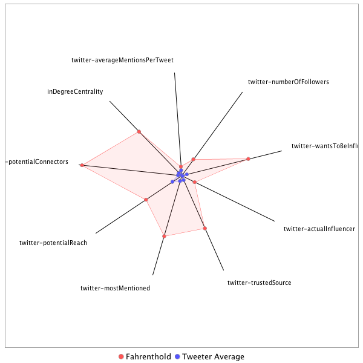

This tweeter has been identified as an influencer. Its target audience and hashtag and word usage are analyzed below.
Basic Statistics
Number of direct followers 418211 The peak number of followers that the tweeter had during any time period. Number of retweeters 171 Number of agents that retweeted the key influencer. Number of secondary followers 9280394 The sum of the followers of those who retweeted the key influencer.
Measure Values of Other Influencers node versus Tweeter Average
This compares the measure values of the key influencer with the average values across all tweeters. For each measure line, the center-point means zero and the end-point means the maximum score across all tweeters.

Where was the influencer?
The agent is not recorded as being in any locations. Either he tweeted without geo-tags or we have no information about the tweets he sent.
The agent and retweeters were in 31 different locations.

What hashtags did the influencer use?
This displays the top ranked hashtags that the influencer and its retweeters used.
Rank hashtag Count 1 AHCA 776 2 pharma 594 3 TrumpCare 473 4 txlege 427 5 Comey 405 6 biotech 383 7 FDA 368 8 ACA 351 9 Obamacare 349 10 mtal 332 11 TheLead 289 12 Russia 271 13 MemorialDayWeekend 238 14 NIH 233 15 BREAKING 229 16 Trump 227 17 VAGov 227 18 adopt 220 19 GA06 219 20 ParisAgreement 216 21 ComeyHearing 181 22 CNNsotu 178 23 drugprices 176 24 AdoptDontShop 170 25 dog 169 26 healthcare 142 27 SCOTUS 127 28 Qatar 115 29 TrumpBudget 111 30 NAFTA 109 31 NBC4DC 106 32 climatechange 105 33 ksleg 103 34 WrongChoiceAct 102 35 cat 102 36 ComeyFiring 96 37 CDC 92 38 climate 90 39 ge2017 90 40 drugpricing 88 41 rescue 88 42 Opioids 86 43 NYC 85 44 Manchester 83 45 MemorialDay 82 46 Medicaid 81 47 ComeyDay 80 48 MTpol 80 49 foster 79 50 TheBachelorette 78 51 omnibus 78 52 ParisAccord 76 53 covfefe 74 54 CR 71 55 FF 69 56 science 66 57 trumprussia 65 58 wmata 65 59 ComeyTestimony 61 60 FOIA 59 61 CATS 58 62 FBI 57 63 Nats 57 64 ThisWeek 57 65 Iran 56 66 FTN 54 67 opioid 54 68 travelban 52 69 PDUFA 51 70 MOLeg 49 71 HHS 48 72 Israel 48 73 Syria 48 74 Ebola 47 75 LondonBridge 47 76 dogs 47 77 sb4 47 78 China 44 79 SC05 44 80 NJGOV 42 81 CongressionalBaseballGame 40 82 NATO 40 83 JFK100 39 84 PressFreedom 39 85 US 39 86 Venezuela 39 87 biosimilars 39 88 OTD 38 89 CA 37 90 Saudi 37 91 trade 37 92 CAPIdeas 36 93 Caps 36 94 TBT 36 95 snl 36 96 fakenews 34 97 utpol 34 98 NorthKorea 33 99 bdcnews 33 100 sallyyates 33
Tweet List
This displays all of the tweets of the influencer ordered from earliest to latest. Click on a tweet to see its status in Twitter.
Number Tweet ID Date Message 1 860330174986018822 2017-05-04 23:07:52-04 Initiation fee at Bedminster: $75K-$100K, with $22.1K annual dues for members. https://t.co/vehs6EhxLH 2 860202685768892416 2017-05-04 14:41:16-04 Good work, @JudicialWatch. https://t.co/O4bB95zLqI 3 860574557194907648 2017-05-05 15:18:57-04 I did *not* know that. https://t.co/AL93JQbsd0 4 862500748822802432 2017-05-10 22:52:57-04 White House let in Russian photog, didnt realize he would put pictures of @realDonaldTrump & Russians out on wires. https://t.co/RV1CKau1eX 5 862702344219365377 2017-05-11 12:14:01-04 .@AmericanHumane Hello. I'd still like to know how much $ you raised w/ event at Mar-a-Lago. Pls call today! As a reminder, I am an animal. https://t.co/OO79sxsV4s 6 862481253769109504 2017-05-10 21:35:29-04 So many good stories coming out tonight from so many places: WP, NYT, WSJ, McClatchy, Politico, Reuters... https://t.co/UUyLoLcmON 7 859867994834579458 2017-05-03 16:31:20-04 Great photo. https://t.co/NjK9iAgoyA 8 864164290147872768 2017-05-15 13:03:16-04 If you take this job, please write down my email address: fahrenthold@washpost.com. https://t.co/8YWsaK0Y3Y 9 864132250417463297 2017-05-15 10:55:57-04 The @newseum asked to borrow the notebook I used last yr in my search for @realdonaldtrump's missing charitable giving. Just dropped it off. https://t.co/8XM9jxZLVk 10 864606657669722117 2017-05-16 18:21:05-04 Jim Risch, R senator from Idaho. https://t.co/b5dERRDBMQ 11 864930444525133825 2017-05-17 15:47:42-04 .@SheriffClarke may be Asst Sec at DHS. You should read through @journalsentinel stories about deaths at his jail. https://t.co/Qlut8LiQWY 12 865314648031100928 2017-05-18 17:14:23-04 God bless @VOATurkish, which has provided so much invaluable video of this attack on peaceful protestors. https://t.co/70BHhs9Tfm 13 866242719361970178 2017-05-21 06:42:12-04 This is the @WorldBank fund, the idea for which is credited to @IvankaTrump. https://t.co/oQg5SMv7qE 14 863149192142876672 2017-05-12 17:49:38-04 .@ivankatrump promised to donate half the advance from her new book. We confirmed the first $200k has been given. https://t.co/hxpECVDO2A 15 866636507452461057 2017-05-22 08:46:59-04 Much of what this top White House advisor owns is kept in shell companies, whose actual holdings can't be verified from the outside. https://t.co/kV0FLwwlAW 16 865697295152664577 2017-05-19 18:34:53-04 President @realDonaldTrump loses his appeal to reduce property-tax bill at his Doral golf course. https://t.co/Y4IsofroMz 17 865385569916006401 2017-05-18 21:56:12-04 .@petulad talked to a DC swim-teacher rebuilding his life after a gunshot. In the middle of the interview, he died. https://t.co/OGiMywPz2p 18 868949155447808000 2017-05-28 17:56:37-04 Bernhard Langer, who played an odd role in @realDonaldTrump's unproven allegations of voter fraud, wins Sr. PGA tournament at Trump's course 19 868874703380910082 2017-05-28 13:00:46-04 Just checked: did @readonaldtrump take down this made-up historical marker after @npfandos reported it was false? No. https://t.co/G4CoUYTrTA 20 869354878426075136 2017-05-29 20:48:49-04 The NYT editorial board goes after @trump Org for its broken promise to track and donate all foreign profits. https://t.co/jBUX2Fwv4u 21 868908736080998409 2017-05-28 15:16:00-04 Looks like @realDonaldTrump isn't coming to his golf course. Pool rpt says they loaded up, then cancelled b/c rain. https://t.co/xdWemBKkz9 22 868894613477765121 2017-05-28 14:19:53-04 Sure! This is the great NYT story that debunked @realdonaldtrump's "River of Blood" plaque. https://t.co/tDMjSae02x https://t.co/E5ks907Wuy 23 868882591570702336 2017-05-28 13:32:07-04 One other note: the word "preserved." Biggest thing @realDonaldTrump did on this spot was cut down 465 trees to improve river views. https://t.co/5ZfCSoj3vS 24 867564980769574912 2017-05-24 22:16:24-04 An employee at @realDonaldTrump's Mar-a-Lago Club is doing govt work on this foreign trip. Great find by @tparti. https://t.co/e7LiuljPGM 25 868252075104382977 2017-05-26 19:46:40-04 Russian ambassador told Moscow that Kushner wanted a secret, secure way to communicate with Russia w/out US knowing. https://t.co/Tzw94hmRDu 26 874401544271212544 2017-06-12 19:02:28-04 I'll be on @cnn at 825 ET to talk abt this: an 07 deposition where @realDonaldTrump was caught in 30 falsehoods. https://t.co/l8MLeO7B4V 27 874393043356569600 2017-06-12 18:28:41-04 The very first donation @realDonaldTrump made from his Trump Fdn, in 1987, was to @PublicTheaterNY Shakespeare fest. https://t.co/RGnhWJijVn 28 875089822997786626 2017-06-14 16:37:26-04 Stories of @CapitolPolice heroism today--returning fire while injured, exposing selves to gunfire to draw shooter away--are astounding. https://t.co/8CwGfkBzUK 29 874567673048428544 2017-06-13 06:02:36-04 On a Celeb. Apprentice episode, @realdonaldtrump promised $20K to Rodman's chosen charity. He gave from Trump Fdn, filled w/ other ppl's $. https://t.co/JL8JUHNJEg 30 873334464805576705 2017-06-09 20:22:16-04 New York attorney general ‘looking into’ @EricTrump Fdn after report in @forbes. https://t.co/m8uNDpL39f 31 872159403008458752 2017-06-06 14:33:00-04 I dunno, man, I'm still surprised. https://t.co/dbFF2BbFeq 32 872156970261897217 2017-06-06 14:23:20-04 Such an incredible story by @forbes, deconstructing how the @EricTrumpFdn was apparently used to funnel $ back to the Trump org. https://t.co/gLgMCpBmUV 33 872256061025157120 2017-06-06 20:57:05-04 Here's the last question I sent @EricTrump. Will let you know when I hear back. https://t.co/4bgmvsXMmQ 34 871352632195117059 2017-06-04 09:07:11-04 On @ThisWeekABC, Stephanopoulos says they asked @realDonaldTrump W.H. for somebody to talk abt London/Terrorism. "They declined." 35 870702070407479297 2017-06-02 14:02:05-04 CNN notes @realDonaldTrump sent his old Presby church a gift in 2012. It was $10K from Trump Fdn, not his own $. https://t.co/Ka0LqPw2Nh 36 872158616245219330 2017-06-06 14:29:52-04 Here's the question I sent @erictrump after that blockbuster @Forbes story, which indicates Eric misled me. https://t.co/xh1uSPK9md 37 872184393300934657 2017-06-06 16:12:18-04 I'm just writing something up about how this great @forbes story contradicts what @EricTrump told me last yr. https://t.co/yzutzTKaZ5 38 871352781512335361 2017-06-04 09:07:46-04 @ThisWeekABC @realDonaldTrump Instead, they have Obama's @AmbassadorRice talking about it. 39 871521625317003266 2017-06-04 20:18:42-04 Such a powerful story, starting with a first sentence that kicks you in the gut. https://t.co/Icu4M1Btd9 40 868879768757972992 2017-05-28 13:20:54-04 Follow @EricLiptonNYT and I while we both putz around @realDonaldTrump's golf course waiting for Potus to show. I will not be out-putzed. https://t.co/EIMAnvlZim 41 862415300490383360 2017-05-10 17:13:25-04 .@americanhumane! I've tried for days to reach you re: your event at @realDonaldTrump's Mar-a-Lago. Can u email at fahrenthold@washpost.com? https://t.co/WejkImSodv 42 867454586570801152 2017-05-24 14:57:44-04 @AidforAfrica @realDonaldTrump @JustineSacco ..and he didn't. @AidforAfrica said they'd never received any $ from @realDonaldTrump. So the search for Trump's missing charity goes on.. 43 867454169128587265 2017-05-24 14:56:05-04 UPDATE: Heard back frm @AidforAfrica, which @realDonaldTrump said he'd "support" during Twitter dragging of @justinesacco in '13. And... https://t.co/tnYNIOh3m1 44 867027887236550657 2017-05-23 10:42:11-04 Hello! I'll be doing a Reddit AMA on Friday, 5/26. Ask me about @realDonaldTrump, the Trump Fdn, Mar-a-Lago, confetti-gun safety... https://t.co/Io3eOdC5fZ 45 863442782366691328 2017-05-13 13:16:15-04 The federal disability system is such a huge story: so much money, so many lives, so many delays, so many opportunities for fraud. https://t.co/dVeDLl7Vyw 46 861012485863866369 2017-05-06 20:19:08-04 Analysis | Democrats’ two biggest opponents ahead of 2018 may be time and themselves https://t.co/HLIXqeXKJe 47 865644267485544449 2017-05-19 15:04:10-04 Day's not over yet, ppl. https://t.co/uBlyGr79fv 48 868109516541497344 2017-05-26 10:20:12-04 Coming up at 1 pm! https://t.co/5v0YKckUiD 49 865309898707525632 2017-05-18 16:55:31-04 UPDATED: @AmericaRedCross will return to Mar-a-Lago for its gala next year. Now at least 10 of 20 galas returning. https://t.co/XR4bVsFIcE 50 862306788871475200 2017-05-10 10:02:14-04 .@presssec chose to announce biggest news of Trump tenure by shouting it once, then going inside and locking door. https://t.co/P7dfb0Ku5S 51 865580372830158850 2017-05-19 10:50:17-04 UPDATED: @SusanGKomen is returning to @realDonaldTrump's Mar-a-Lago for its gala next yr. @pbdnsociety had it first. https://t.co/oi5mjQYtYL 52 868924481154187264 2017-05-28 16:18:34-04 I had been wondering if somebody had written the story of @realDonaldTrump's crest. And here it is... https://t.co/m2IqHUaCkO 53 860305099045965824 2017-05-04 21:28:13-04 What was @realDonaldTrump saying he got in return from Murdoch for this $107K in donations? https://t.co/59ZY7M6MNj 54 861925086474973184 2017-05-09 08:45:29-04 Wow, fantastic work. So much or covering @realDonaldTrump is going to be building maps of the things he tries to keep secret. https://t.co/V0EoHj23ke 55 867742759427420162 2017-05-25 10:02:50-04 Wow. Turns out President Nixon had a personal charity. It only ever bought one thing. Guess what it was. https://t.co/61XZ5c7BMB 56 867795289830240258 2017-05-25 13:31:34-04 Alleged Russian hacker sent Democratic data to Florida GOP operative https://t.co/vPMpTAneL2 via @WSJ 57 867555212143284225 2017-05-24 21:37:35-04 Whitney is the cops reporter for the very good newspaper in Bozeman. A good follow for tonight! https://t.co/8PsNWtLRhs 58 868907874826817536 2017-05-28 15:12:35-04 After @realDonaldTrump cut down 465 trees, his course became longest treeless stretch in a 50-mile stretch of river. https://t.co/BkxfUw0ZdU 59 865646265211658240 2017-05-19 15:12:07-04 One odd thing: @realDonaldTrump's comments suggest he thought Lavrov/Kislyak wouldn't know much abt the head of US counter-intelligence. https://t.co/27h5eaajai 60 865316188334821376 2017-05-18 17:20:30-04 From @AmericaRedCross statement saying they will hold their Palm Beach gala at @realDonaldTrump's Mar-a-Lago Club again next yr. https://t.co/UOEHrw7LaC 61 866606721430585344 2017-05-22 06:48:37-04 Univ. of Maryland police say they're investigating a fatal on-campus stabbing as a possible hate crime. https://t.co/cXyLQOrqLh 62 862825885476499458 2017-05-11 20:24:56-04 "You could see elements of reality in what he said, but..." https://t.co/GBjyGGnNNf 63 862319154099089410 2017-05-10 10:51:22-04 In WV Capitol Bldg, journalist arrested for repeatedly asking questions of HHS sec. Tom Price. https://t.co/WVve3BKoiT 64 864224749735620609 2017-05-15 17:03:31-04 Hold on to your hats, folks: my colleagues at the @washingtonpost are about to post a hell of a scoop... 65 862828246920024064 2017-05-11 20:34:19-04 Wow. https://t.co/O14kRByGCp 66 864830974806437889 2017-05-17 09:12:26-04 UPDATED: list of galas returning to Mar-a-Lago next yr & those undecided. @KravisCenter is a new "yes." @drewharwell https://t.co/7XQVBTnDJI 67 864181288537870342 2017-05-15 14:10:49-04 Which galas are coming back to Mar-a-Lago next year? Seven yes's, four no's so far. Cc: @drewharwell https://t.co/3Yzh4vQx4s 68 862460071367892992 2017-05-10 20:11:19-04 In far upstate NY, a cab driver who voted for Trump has a new steady business: driving asylum-seekers to Canada. https://t.co/eWwGIMEUsr 69 859823838871334912 2017-05-03 13:35:52-04 Jury Convicts Protester Who Laughed at Sessions Hearing https://t.co/xISecz8CwQ 70 860475001157406720 2017-05-05 08:43:21-04 Anti-vaccine activists target Somali Americans, spark a state’s worst measles outbreak in decades. https://t.co/jSZ5PpirG1 71 860303326797287425 2017-05-04 21:21:11-04 Mystery solved! I wondered why @realDonaldTrump's Fdn gave so often to this seemingly random charity. https://t.co/IthDdBGdRt 72 859577063568809987 2017-05-02 21:15:16-04 R candidate in the MT special election, @GregForMontana, hasn't said anything on Twitter about GOP heallth-care bill. Focused on gun rights. https://t.co/yESk5dIqGr 73 859569254563237888 2017-05-02 20:44:14-04 Here's how the D candidate is casting the GOP healthcare bill in the MT special election. https://t.co/EwlBnBFm2n 74 859502101394751488 2017-05-02 16:17:24-04 A black student, a glue gun and a lockdown prompt debate over race at Colgate University. https://t.co/bEgRdYmTs5 75 858832102653079553 2017-04-30 19:55:04-04 How some on the right fell in love with Russia: A Russian sales pitch built on Christianity, gun rights, and common political foes. https://t.co/jqPfQXnUtq 76 872237921230827520 2017-06-06 19:45:00-04 I got this statement from @EricTrump abt @forbes story. I asked what he meant by "profit." Will update when I hear. https://t.co/tuSXFLIfwt 77 870332956874768384 2017-06-01 13:35:21-04 What an incredible story. I've read a lot of @danbarry, and this is one of his best. https://t.co/cIyBEdx7ct 78 872477530309226498 2017-06-07 11:37:07-04 Have not yet received a reply from @erictrump about this question. Has anybody else? https://t.co/2m2wVNhn9N 79 870703245143941126 2017-06-02 14:06:45-04 I asked the church if @realDonaldTrump had *ever* given his own $. Their records only went back to 2012, and in that time he had not. https://t.co/YY46YdwMTT 80 872559841612529664 2017-06-07 17:04:12-04 Fascinating story. " "Miners have long memories," one exec said, and some have moved on b/c of past downturn. https://t.co/Z2jv1ODtIc 81 875051837015162886 2017-06-14 14:06:30-04 .@ChuckRossDC has been ahead of everybody on this story. https://t.co/4l4MHe2UEw 82 873354299220385792 2017-06-09 21:41:05-04 Metro bus driver ran to help severely injured D.C. police officer after pickup truck ran officer down. https://t.co/y9Zx7hS9fq 83 874677883222069248 2017-06-13 13:20:32-04 Megyn Kelly, Alex Jones and how to interrogate a liar without getting played https://t.co/a9W4XiHsNj via @poynter 84 872162352367587328 2017-06-06 14:44:43-04 I'm an optimist. It's one of my biggest handicaps as a journalist. https://t.co/CrJkGPefC4 85 872630303382228993 2017-06-07 21:44:11-04 Vanity Fair tells the story of photographer Robert Capa going ashore w/first wave on D-Day. https://t.co/1GYcEEVOhk 86 872629735410585601 2017-06-07 21:41:56-04 RT @edatpost: INBOX: Rep.-elect @gianforte (R-Mont.) issues "sincere apology" to @Bencjacobs, will make $50K donation to @pressfreedom http… 87 872620015400497152 2017-06-07 21:03:18-04 RT @gbrockell: My fav part of this angry, intelligent thread is that the profile pic makes it look like it's coming from three little girls… 88 872615679668760576 2017-06-07 20:46:05-04 RT @AndyGrewal: Several dozen Democrats from House & Senate will file lawsuit against Trump, alleging Emoluments Clause violations https://… 89 872608503571111940 2017-06-07 20:17:34-04 RT @PhilipRucker: Melania Trump's cyber bullying initiative has been cast aside, @anniekarni reports https://t.co/MDINcUaOJt 90 872605471538126848 2017-06-07 20:05:31-04 RT @EricLiptonNYT: Interior Sec Zinke plans review of greater sage grouse conservation plans. U may never have heard of this bird. Giant de… 91 872605455369023488 2017-06-07 20:05:27-04 RT @davecclarke: To Trump, the Russia matter is a ‘cloud’ that hangs over his presidency @PhilipRucker https://t.co/7Xh7JD2PSm 92 872605443025248256 2017-06-07 20:05:24-04 RT @PhilipRucker: Comey’s testimony could turn congressional probes toward question of obstruction, @edatpost & @karoun report https://t.co… 93 872572406367485952 2017-06-07 17:54:07-04 RT @pbump: New poll data reinforces a point 538 made last month: Strong approval of Trump is fading -- across demographics. https://t.co/VA… 94 872562272375365632 2017-06-07 17:13:51-04 RT @ddiamond: Re-upping this story from yesterday — POLITICO reporters (and others) are working to shine a spotlight on bill, even if GOP s… 95 872559019365412864 2017-06-07 17:00:56-04 RT @byrdinator: Here's what I'm getting from GOP lawmakers: most somehow haven't read Comey's testimony yet, and if they have, they're not… 96 872544589110009857 2017-06-07 16:03:35-04 RT @pbump: At least, as of April 11, and the FBI isn’t under obligation to let us know if that has changed. 97 872544577823150080 2017-06-07 16:03:33-04 RT @pbump: Trump inadvertently got what he wanted from Comey all along: Public confirmation that he wasn’t under investigation. https://t.c… 98 872531337713942531 2017-06-07 15:10:56-04 RT @BraddJaffy: A congressional aide with direct knowledge tells @KenDilanianNBC that Comey's prepared testimony was released today at Come… 99 872517750463352832 2017-06-07 14:16:56-04 RT @abbydphillip: Comey worked under Obama for 3 years and spoke to him alone 2X. Comey spoke to Trump one-on-one 9X in 4 months. 100 872515989946105866 2017-06-07 14:09:57-04 RT @washingtonpost: Trump to Comey: ‘I need loyalty, I expect loyalty,’ according to prepared remarks from Comey's testimony https://t.co/E… 101 872512725020180486 2017-06-07 13:56:58-04 RT @alivitali: Comey on Flynn: I replied only that “he is a good guy.”...I did not say I would “let this go.” https://t.co/8rGhnEjad4 102 872512470727917569 2017-06-07 13:55:58-04 RT @PhilipRucker: Comey's description of his one-on-one dinner with Trump is gripping https://t.co/OwKzj3q1ew 103 872512344655626242 2017-06-07 13:55:28-04 RT @costareports: "A few moments later, the President said, 'I need loyalty, I expect loyalty.' I didn’t move... during the awkward silence… 104 872512331099537412 2017-06-07 13:55:24-04 RT @edatpost: READ IT YOURSELF: James Comey's prepared testimony to the Senate Intelligence Committee: https://t.co/e70ErEO3U9 105 872511044274540545 2017-06-07 13:50:18-04 @soledadobrien Awesome. Thank you, Soledad. You are way too kind. 106 872500689280303105 2017-06-07 13:09:09-04 RT @hannahdreier: Good corrective on the Venezuela crisis. There's no rule that dysfunctional, even hated, governments can't persist https:… 107 872500559126908928 2017-06-07 13:08:38-04 RT @AshleyRParker: #SUBSCRIBE https://t.co/FdzyA5JEKr https://t.co/uX7lGNPjEo 108 872495726315659270 2017-06-07 12:49:25-04 RT @vermontgmg: Notable that DNI Coats didn't dispute in any way the Post reporting—just said that didn't mean it was now unclassified. 109 872495719814492160 2017-06-07 12:49:24-04 RT @BraddJaffy: 2 of the toughest exchanges in that hearing, some of the most visible frustration w/refusal to answer Qs came from Republic… 110 872495608615010304 2017-06-07 12:48:57-04 RT @jimsciutto: Remarkable moment: GOP Chmn Burr scolds intel chiefs for coming before Cmte without an answer on POTUS conversations re Rus… 111 872495591103791105 2017-06-07 12:48:53-04 RT @AshleyRParker: McCain: "Do you want to tell us any more about the Russian involvement w our election that we don't know from reading th… 112 872487489142960128 2017-06-07 12:16:42-04 RT @toddzwillich: KING: What is your legal basis for refusing to talk about your conversation with Trump? COATS: "I'm not sure I have a le… 113 872487328224346113 2017-06-07 12:16:03-04 RT @jdawsey1: Scene at White House this morning: Reporters shout at Trump asking if he has confidence in Jeff Sessions, his AG. "Thank you,… 114 872486971708502018 2017-06-07 12:14:38-04 RT @levinecarrie: Unveiled: Our updated database of sortable/searchable $$ disclosures for Trump officials, with @ProPublica https://t.co/i… 115 872472827089256449 2017-06-07 11:18:26-04 RT @_cingraham: Wow. https://t.co/qQLA5kvdgz 116 872472705588760576 2017-06-07 11:17:57-04 RT @MWilsonNYT: The murder victim was her own person with her own story, but with a name shared by many: Jane Doe. We changed that: https:… 117 872471796896776192 2017-06-07 11:14:20-04 RT @thegarance: Ahem, everyone who was all, this is dead in the Senate, this won't come up for a vote this year etc. https://t.co/EU2EjOoDX7 118 872470765790269440 2017-06-07 11:10:14-04 RT @kenvogel: Coats PUNTS when asked if Trump asked him to pressure Comey: "I do not feel it is appropriate for me to address that in a pub… 119 872470723868184577 2017-06-07 11:10:04-04 RT @mviser: Mike Rogers, director of NSA: "I have never been directed to do anything I believe to be illegal, immoral, unethical or inappro… 120 872470680708812800 2017-06-07 11:09:54-04 RT @mateagold: Activists detained while investigating Ivanka production accused of stealing commercial secrets, via @emilyrauhala https://t… 121 872470654850920448 2017-06-07 11:09:48-04 RT @jameshohmann: A powerful White House faction, led by Trump himself, is rooting for the American health care system to collapse. https:/… 122 872464677556690944 2017-06-07 10:46:03-04 RT @BraddJaffy: How Russian propaganda spread from a parody website to Fox News https://t.co/1q4THSsubh via @nytimes 123 872464271833223170 2017-06-07 10:44:26-04 RT @_cingraham: Do me a favor and set aside a few minutes to read this today. Story made my jaw drop when I first heard of it. https://t.co… 124 872460615457099777 2017-06-07 10:29:54-04 RT @PostRoz: Warner steps into the spotlight in Trump-Russia probe. From @jennaportnoy https://t.co/TI71ZECgkl 125 872452419296382976 2017-06-07 09:57:20-04 RT @edatpost: Latino Democrat wins open House seat in California, as progressives make gains (by @daveweigel) https://t.co/dzE8siCX4j 126 872452279349149697 2017-06-07 09:56:47-04 RT @abbydphillip: We have now entered hour #2 in which the WH still hasn't said anything about Trump's pick for FBI director. https://t.co/… 127 872452005427650560 2017-06-07 09:55:42-04 RT @PostRoz: Great slice of life from inside the heaving, jostling media mob on the Hill. Via @eliseviebeck @bterris https://t.co/0ZSgU79tAm 128 872449963757842432 2017-06-07 09:47:35-04 RT @bcleve19: White House touts the ACA’s demise even as insurers seek help in stabilizing its marketplace https://t.co/zJH0uTPQHa 129 872449357882294272 2017-06-07 09:45:10-04 RT @hannahdreier: Head of Venezuela armed forces warning against bad behavior as videos circulate of riot police robbing protesters https:/… 130 872449144551505920 2017-06-07 09:44:20-04 RT @mattzap: Former head of Justice Dept's criminal division and Chris Christie's attorney to get nod to lead FBI. https://t.co/jTbd8imz0b 131 872442985803382784 2017-06-07 09:19:51-04 RT @washingtonpost: Gunmen attack Iran parliament, Khomeini's tomb in rare terror strike https://t.co/JNu5kaOOOE 132 872442985501396994 2017-06-07 09:19:51-04 RT @mattdpearce: Big news out of Kansas tonight as legislators take a sledgehammer to Gov. Brownback's tax experiment in Kansas: https://t.… 133 872386476788600833 2017-06-07 05:35:18-04 RT @costareports: Sessions has had difficulty adjusting at times to Trump's temperament, which can be unpredictable and fuming, per ppl fam… 134 872281089389277184 2017-06-06 22:36:32-04 RT @AshleyRParker: The West Wing is preparing for a world of subpoenas, w legal counsel telling staff not to use "burn bags." https://t.co/… 135 872280911445987328 2017-06-06 22:35:50-04 RT @MEPFuller: Trust me when I tell you this: Senate Republicans are closer than ever to repealing Obamacare. https://t.co/nPeChSL5AU 136 872280542175260672 2017-06-06 22:34:22-04 RT @blakehounshell: —> https://t.co/BTythBHmY0 137 872280063269634048 2017-06-06 22:32:27-04 RT @wpjenna: Trump contradicts his aides by undermining their statements --over and over again. @abbydphillip and I explain: https://t.co/E… 138 872254901673439233 2017-06-06 20:52:28-04 RT @Acosta: Official said they don't want repeat of Flynn episode when some officials said POTUS had confidence in Flynn when that wasn't t… 139 872254789366800384 2017-06-06 20:52:02-04 RT @Acosta: It's almost 9pm and WH still cannot say whether POTUS has confidence in his Attorney General. "No updates," a WH official said. 140 872254549767204864 2017-06-06 20:51:05-04 RT @PhilipRucker: Trump is struggling to recruit new WH staff. Geoff Morrell, Scott Reed, Laura Ingraham were approached. https://t.co/fQ4x… 141 872254340479819777 2017-06-06 20:50:15-04 RT @HenryJGomez: .@parscale doesn’t get the attention Bannon, et al do. But he’s just as big a part of Trump World. My profile: https://t.c… 142 872253884760285184 2017-06-06 20:48:26-04 RT @ericawerner: Featuring @kristinapet as the reporter! https://t.co/zxzcsh1hcn 143 872253661677850624 2017-06-06 20:47:33-04 RT @costareports: Trump won't let Comey "smear him without punching him as hard as he can.” My latest w/ @philiprucker @ashleyrparker https… 144 872249259365715968 2017-06-06 20:30:03-04 RT @dataeditor: https://t.co/6rYwEOR1HX https://t.co/cOGlpgafjc 145 872249056067801088 2017-06-06 20:29:15-04 RT @Acosta: Sessions is not stepping down, a DOJ spokeswoman says. 146 872248960764841984 2017-06-06 20:28:52-04 RT @PostRoz: Trump leaned on Coats 2 days after Comey revealed Russia probe. And again 1st asked others to leave https://t.co/7AGTUCW8y8 vi… 147 872248928745525249 2017-06-06 20:28:44-04 RT @EricLiptonNYT: Here are 14 times Pruitt sued EPA including over air quality standards in Oklahoma. He lost that one. He won't again htt… 148 872243868003074048 2017-06-06 20:08:38-04 RT @washingtonpost: Top intel official told associates Trump asked him if he could intervene with Comey to get FBI to back off Flynn https:… 149 872242640993079298 2017-06-06 20:03:45-04 RT @EricLiptonNYT: Now he has power of the pen to do it on his own 150 872242631786594305 2017-06-06 20:03:43-04 RT @EricLiptonNYT: As Attorney General of OK Pruitt failed in fed court when he sued with coal burning utility to block EPA air quality rul… 151 872242625935495169 2017-06-06 20:03:42-04 RT @EricLiptonNYT: EPA's Pruitt delays implementation of 2015 ozone standards USA air quality, citing increased regulatory burdens not con… 152 872242140243525632 2017-06-06 20:01:46-04 Thanks for this! Earlier @erictrump said his Fdn paid $0 for use of dad's course. By using "profit," is he conceding it paid *something*? https://t.co/7ZRDiB2pgQ 153 872240965049778178 2017-06-06 19:57:06-04 RT @fmanjoo: This story is amazing. State hackers creating news stories to influence policy is next level crazy https://t.co/5dXDlwH9Cs 154 872240520608841729 2017-06-06 19:55:20-04 RT @CheckpointWP: For Qataris, a U.S. air base is best defense against Trump attacks https://t.co/oLFoiP7Ezp 155 872239477464461312 2017-06-06 19:51:11-04 RT @TrumpDC: We're proud to welcome IPW attendees to this evening's attendee reception! #IPW17 #MyDCcool @ustravelipw @BrandUSA https://t.c… 156 872238822137966592 2017-06-06 19:48:35-04 RT @EricTrump: Can't wait to be on @seanhannity at 10pm on @FoxNews - discussing the ugliness of politics. https://t.co/zpnnHSwuOI 157 872238493396852737 2017-06-06 19:47:16-04 RT @amyfiscus: Comey distrusted Trump so much that he told Sessions not to leave him alone with the president https://t.co/bS19pFnjUH 158 872238258142556161 2017-06-06 19:46:20-04 @kelseylh good tweet. 159 872238167868526592 2017-06-06 19:45:59-04 RT @jonkarl: Trump/Sessions rift is real. I'm told Sessions even offered to resign. Asked about that, his spokesperson declined to comment 160 872238145814888448 2017-06-06 19:45:54-04 RT @PostKranish: Trump legal dream team idea nixed amid comparison to dysfunctional 1980s Yankees clubs. Biz attorney takes charge. https:… 161 872215318441189376 2017-06-06 18:15:11-04 RT @gbrockell: Oh wow https://t.co/GrclNZ0guO 162 872214975934279680 2017-06-06 18:13:49-04 RT @McCartneyWP: Trump administration wants to sell Washington Aqueduct, stirring fears of higher water bills in DC & parts of No.Va. https… 163 872214935119515648 2017-06-06 18:13:40-04 RT @pbump: I was very excited to figure out how much power an all-solar wall would generate but the FT beat me to it. https://t.co/eUloLZuI… 164 872207642478772224 2017-06-06 17:44:41-04 RT @jonathanvswan: SCOOP: Trump pitched Republican leaders on a 50 foot solar-paneled border wall via @axios https://t.co/Pyixhbsp6K 165 872203618266599425 2017-06-06 17:28:42-04 RT @EamonJavers: Just spotted John Sununu, fmr G.H.W. Bush COS here. I asked him what brought him to the WH today. He said: "My feet." http… 166 872203495922913280 2017-06-06 17:28:12-04 On second thought, no need to shoehorn myself in here. I'll let @DanAlexander21's story speak for itself. https://t.co/UKuKMXtF7L 167 872186973569593344 2017-06-06 16:22:33-04 Still working on this: which charities are returning to @realDonaldTrump's Mar-a-Lago next yr? Still waiting on 4. https://t.co/m5pE3pR3q7 168 872171262902235136 2017-06-06 15:20:07-04 RT @DanEggenWPost: Tremendous carbon footprint - everyone is talking about it, believe me. https://t.co/RaojA66I7U 169 872164149840801793 2017-06-06 14:51:52-04 RT @AmandaBecker: Despite Trump vow to end catch and release, he is still freeing thousands of migrants https://t.co/TCOsDGtTuj via @Reuters 170 872162796871577600 2017-06-06 14:46:29-04 RT @mccanner: New Personal Hero @katierogers got paid to go to a winery for The New York Times. https://t.co/LgGMaf0ffX 171 872156555084529664 2017-06-06 14:21:41-04 RT @chicoharlan: Trump says he’s protecting “Pittsburgh, not Paris,” but he’s deeply misguided about what people there wish for. https://t.… 172 872154784412905473 2017-06-06 14:14:39-04 RT @lizzieohreally: This is a pretty extraordinary story: https://t.co/6eBuJuKb1q 173 872149706150993924 2017-06-06 13:54:28-04 RT @GlennKesslerWP: Via @dandrezner--> The most devastating foreign policy story about the Trump administration to date https://t.co/SbZt6e… 174 872149693643542529 2017-06-06 13:54:25-04 RT @EricLiptonNYT: . @MarkLandler takes look at what might be most consequential (& risky) foreign policy move by Trump so far. https://t.c… 175 872147025890074624 2017-06-06 13:43:49-04 In the ‘Paris of the Appalachians,’ they’re not buying Trump’s climate talk https://t.co/AKCRTW1yTC 176 872145058878955521 2017-06-06 13:36:00-04 RT @SherylNYT: A Florida-born Muslim convert worked secretly for the Pentagon. He got kidnapped. @adamgoldmanNYT @ericschmittNYT https://t.… 177 872141838953721856 2017-06-06 13:23:12-04 RT @Hadas_Gold: Breitbart ads plummet nearly 90 percent in three months as Trump’s troubles mount https://t.co/Lj2zAXagh4 via @digiday 178 872141033324367873 2017-06-06 13:20:00-04 RT @DPAQreport: A young Iraq vet couldn't find a job after his tour. Then he became a solar panel installer: https://t.co/gyBgx5vlfs https:… 179 872140959701762052 2017-06-06 13:19:43-04 RT @LoopEmma: Corker, chair of Foreign Relations, was told Trump tweeted about Qatar basically being a state sponsor of terrorism. “The pre… 180 872140733955928064 2017-06-06 13:18:49-04 RT @loriara: Infrastructure was Trump’s shot at a bipartisan deal, he left Democrats waiting by the phone - https://t.co/MggNnSXNmN 181 872140657535660032 2017-06-06 13:18:31-04 RT @USATODAY: #BREAKING Exclusive: Sen. Mark Warner says Russian election attacks were 'much broader' than NSA document shows https://t.co/… 182 872140583762112513 2017-06-06 13:18:13-04 Fascinating! @erictrump told me specifically that this wasn't true, that his father donated the use of the course. https://t.co/af4NrB6Hut https://t.co/kg4anVSGbE 183 872138102101479424 2017-06-06 13:08:21-04 RT @DafnaLinzer: Trump is hosting @marcorubio @TomCottonAR for dinner tonight - two members of senate intel who will question Comey in 2 da… 184 872112043419205633 2017-06-06 11:24:48-04 RT @GlennKesslerWP: .@jameshohmann says #Trump #travelban tweets aren't about winning the case but reassuring his base https://t.co/fC6PBQn… 185 872101653779972096 2017-06-06 10:43:31-04 RT @KeithBradsher: U.S. presses China to free Ivanka Trump labor activists https://t.co/G1AGlgmgmt Activist held 9 days in room with 20 men… 186 872101448045219845 2017-06-06 10:42:42-04 RT @myhlee: News you can use! https://t.co/fzNkRrbVhV 187 872101283158798338 2017-06-06 10:42:03-04 RT @nytimes: Kushner Companies, owned by the family of Jared Kushner, is seeking $250 million to pay off Chinese backers https://t.co/0Rsws… 188 872097407768698881 2017-06-06 10:26:39-04 RT @bcleve19: Fact Checker | Pruitt's claim that 'almost 50,000 jobs' have been gained in coal https://t.co/hgEMrIO4md 189 872096843785789441 2017-06-06 10:24:24-04 RT @levinecarrie: Profit. Here's the Trump Organization's policy on this. https://t.co/1Q38ZLlWsk https://t.co/GBRaW4GbfB 190 872095251216953344 2017-06-06 10:18:05-04 RT @davecclarke: .@pw_cunningham explains some of the biggest promises Dems made about Obamacare that have come up short https://t.co/ARNtQ… 191 872095250394873856 2017-06-06 10:18:05-04 RT @davecclarke: Senate GOP leaders aiming to conclude divisive health-care push — one way or the other. By @waposean @kelsey_snell https:/… 192 872095141535809537 2017-06-06 10:17:39-04 RT @mateagold: Trump’s hotel company moves into his political territory, beginning with Mississippi, via @OConnellPostBiz https://t.co/jwXw… 193 872071547351162881 2017-06-06 08:43:53-04 RT @edatpost: The Trump effect: Everyone’s thinking of running for president. By @ktumulty @wpjohnwagner https://t.co/xkTNZiNHWZ 194 871917823056064513 2017-06-05 22:33:03-04 RT @brady_dennis: Drug deaths in America are rising faster than ever: https://t.co/Qynh5tTXQy 195 871915749572562946 2017-06-05 22:24:48-04 RT @rebeccaballhaus: Update: Trump Org says it'll transfer profits from Saudi payments to Treasury at end of year. No answer on how it'll d… 196 871910816425103362 2017-06-05 22:05:12-04 RT @JasonUkman: Failure to warn: Hundreds died while taking an arthritis drug, but nobody alerted patients. https://t.co/WDWDYTetZZ 197 871910476975919105 2017-06-05 22:03:51-04 RT @PhilipRucker: Important @MarkLandler read on State Dept as "hotbed of resistance," as career diplomats start speaking out on Trump http… 198 871899899796873216 2017-06-05 21:21:49-04 RT @tackettdc: Trump has grown sour on Sessions @peterbakernyt @maggieNYT https://t.co/3qMk7oxuI6 199 871892166771179520 2017-06-05 20:51:06-04 RT @costareports: My latest on the challenges facing the WH and Republicans as Trump keeps tweeting. And the fury may only grow. https://t… 200 871886581900214273 2017-06-05 20:28:54-04 RT @michaelluo: Withdrawal from Paris climate accord and the Koch brothers. By @janemayernyer, who literally wrote the book on them. https:… 201 871881473850298368 2017-06-05 20:08:36-04 RT @markberman: General reminder: Here's how you can send confidential news tips and messages to the @washingtonpost https://t.co/xwpYJ8Rlhj 202 871862480682831872 2017-06-05 18:53:08-04 RT @EricLiptonNYT: NEW: A budget-friendly Trump hotel chain is launching to target Trump's own core voter block. @SteveEder @benprotess htt… 203 871862068043022338 2017-06-05 18:51:30-04 RT @rebeccaballhaus: Trump Org hasn't responded to questions about whether it will transfer profits to U.S. treasury, as Trump pledged http… 204 871862046014525441 2017-06-05 18:51:24-04 RT @rebeccaballhaus: Trump Hotel in DC received $270K in Saudi Arabia-linked payments made after Trump's election, w/@ByronTau https://t.c… 205 871861964275941378 2017-06-05 18:51:05-04 RT @washingtonpost: Senior diplomat in Beijing embassy resigns over Trump’s climate change decision https://t.co/4HWd2T1prm 206 871850723541209088 2017-06-05 18:06:25-04 RT @ProPublica: Big update: We just posted the financial disclosures of 349 officials Trump has installed across the government. https://… 207 871850464647798784 2017-06-05 18:05:23-04 RT @Tom_Winter: NBC News: Senior federal official says that Reality Leigh Winner, age 25, has been arrested & charged with leaking document… 208 871848915452272640 2017-06-05 17:59:14-04 RT @abbydphillip: And the WH has yet to release the text of whatever document he did sign. https://t.co/rvDOtwmPMX 209 871848876071899138 2017-06-05 17:59:04-04 RT @rebeccaballhaus: Trump holding a $100K/host fundraiser later this month. Funds will go to Trump Victory--joint committee btwn campaign… 210 871838406287994881 2017-06-05 17:17:28-04 RT @theintercept: Exclusive: Top secret NSA report details Russian hacking effort days before 2016 election. https://t.co/khcBhCHENJ 211 871838143762321413 2017-06-05 17:16:26-04 RT @fordm: DOJ files charges against a govt. contractor in Georgia for giving classified info to a news outlet: https://t.co/XMI6pbo14T 212 871833202834513921 2017-06-05 16:56:48-04 RT @drewharwell: COO of Signet, parent of Kay and Jared jewelry chains, resigns after 4 months. Major class-action case still ongoing https… 213 871831846627266560 2017-06-05 16:51:24-04 RT @EmGusk: 33% of the sample are Democrats 23% are Republicans 38% are independent And don't call me honey, either. https://t.co/oTL9Dtr… 214 871815675114901504 2017-06-05 15:47:09-04 RT @DPAQreport: In North Carolina, blue-collar workers are worried that Trump's climate decision could hurt their jobs: https://t.co/gyBgx5… 215 871808390317703168 2017-06-05 15:18:12-04 RT @sahilkapur: Per WaPo/ABC poll, 59% oppose President Trump’s move to withdraw from the Paris climate pact. 28% support him. https://t.co… 216 871799748176621569 2017-06-05 14:43:51-04 @byalisonbowen the Pine Cone is my favorite newspaper name of all time. 217 871796997472346114 2017-06-05 14:32:56-04 RT @daveweigel: One point of agreement among Dem sens/reps: Had Trump led with a big infrastructure bill in January, would have been tough… 218 871794657986048000 2017-06-05 14:23:38-04 This is an amazing story: Maine battles problem of drivers guzzling tiny bottles of liquor (called "nips") & chucking them out car window. https://t.co/rzIet4AGIC 219 871793695816810496 2017-06-05 14:19:48-04 Great question! @Trump @DonaldJTrumpJr @EricTrump have you all decided when you will donate this $? https://t.co/8WyC45TM11 220 871793500571959296 2017-06-05 14:19:02-04 @migold Good tweet. I have forgiven you for ruining guacamole. 221 871784353889742850 2017-06-05 13:42:41-04 RT @migold: The chairman of the company that makes EpiPens thinks you should go fuck yourself https://t.co/VFpMziSVwt https://t.co/rPxqc4KU… 222 871784049567821824 2017-06-05 13:41:29-04 RT @perlberg: "I'm seeing some sites that say we could get away with 75 toilets." PLEASE let the Fyre Festival stories never stop https://t… 223 871779560538484737 2017-06-05 13:23:38-04 RT @daveweigel: Me and @mikedebonis on the Dem mystery du jour: Why are donors letting them get buried in special elections? https://t.co/u… 224 871779508378099713 2017-06-05 13:23:26-04 RT @mateagold: Read @GlennKesslerWP analysis of OGE claim that WH is trying to evade ethical standards. Not clear cut -- yet. https://t.co/… 225 871776554304643072 2017-06-05 13:11:42-04 RT @PhilipRucker: .@mattzap explains why Trump's tweets are likely to undermine his administration's case to restore travel ban https://t.c… 226 871764409034690560 2017-06-05 12:23:26-04 RT @dcpl_literati: NOT Fake News! @washingtonpost reporter @Fahrenthold will be @dcpl 6/8 to talk about the role of news media today https:… 227 871762706411532292 2017-06-05 12:16:40-04 RT @wpjenna: Trump devoted the first few minutes of his televised remarks to explaining how the VA is modernizing the transfer of veteran r… 228 871761908793212929 2017-06-05 12:13:30-04 RT @edatpost: One of my favorite and most informative reads of the '16 cycle... https://t.co/vXzhKASq67 229 871760441567064064 2017-06-05 12:07:40-04 RT @washingtonpost: This lawyer helped steal $600 million from the government, got caught — then disappeared https://t.co/EdFts1azT6 230 871759358052507648 2017-06-05 12:03:22-04 RT @petridishes: i am happy to be the ambassador to up to three countries if that will speed things along 231 871758445019582464 2017-06-05 11:59:44-04 RT @mattzap: George Conway, who recently took himself out of the running to lead Justice Dept. Civil Division, on president's travel ban Tw… 232 871758384332197888 2017-06-05 11:59:29-04 RT @markberman: I think about this @RyanLizza story every few days: What Trump could do after a terror attack to seize more power https://t… 233 871758352153550848 2017-06-05 11:59:22-04 RT @markberman: Five people killed by "disgruntled" ex-employee in Orlando workplace shooting, police say; attacker also dead https://t.co/… 234 871734835425005568 2017-06-05 10:25:55-04 RT @amarimow: Trump’s latest tweets could hurt effort to restore travel ban https://t.co/291v29ROin @mattzap 235 871734736422670336 2017-06-05 10:25:31-04 It's infrastructure week! https://t.co/UBNd5GKQPI 236 871734575835357185 2017-06-05 10:24:53-04 RT @joshledermanAP: An important story not to get overlooked on a busy day: #Montenegro finally joins #NATO, defying Russia - https://t.co/… 237 871734462949859332 2017-06-05 10:24:26-04 RT @marincogan: The trial of a Mass. teen accused of manslaughter by text in her BF's suicide starts today. I covered it for @thecut https:… 238 871734121114030082 2017-06-05 10:23:05-04 RT @maggieNYT: Woody Johnson was one of earliest ppl named by Trump - as amb to UK - and yet still hasn't actually nominated him https://t.… 239 871733482602549249 2017-06-05 10:20:32-04 RT @mlcalderone: Puncturing the myth that most Trump voters were working class https://t.co/X5ccU8h3GL https://t.co/p4w3fs5fs3 240 871729308485775360 2017-06-05 10:03:57-04 RT @jonswaine: London Labour MPs/candidates @wesstreeting and @DavidLammy have called for Donald Trump's UK state visit to be cancelled. Ex… 241 871728938686566400 2017-06-05 10:02:29-04 RT @michaelkruse: Here's this paragraph from @PhilipRucker. https://t.co/YHHtKlY42P https://t.co/qgojfSYNGr 242 871727905231040513 2017-06-05 09:58:23-04 RT @brady_dennis: The Energy 202: Inside the question of whether Trump can actually save coal jobs. via @dino_grandoni https://t.co/pI5qR5m… 243 871726700283006976 2017-06-05 09:53:35-04 RT @BraddJaffy: Trump blindsided his NatSec team by removing Article 5 pledge from NATO speech, apparently deleting it himself https://t.co… 244 871726267305005057 2017-06-05 09:51:52-04 RT @DanEggenWPost: He hasn't nominated a U.K. ambassador yet - or many others https://t.co/5DwKG92Om7 245 871558556964851712 2017-06-04 22:45:27-04 RT @Jake_Bernstein: A tiny Texas border city is leading the charge against the state’s immigration crackdown https://t.co/bbO62EL9g4 246 871557819333562368 2017-06-04 22:42:31-04 RT @MLChadbourn: Once the "party of no" during Obama years, Republicans trying to figure out what they want to achieve in Trump era https:/… 247 871557797514805250 2017-06-04 22:42:26-04 RT @GlennKesslerWP: https://t.co/OYc2qkK3X5 248 871557760353218561 2017-06-04 22:42:17-04 RT @JohnJHarwood: Trump Plans to Shift Infrastructure Funding to Cities, States and Business https://t.co/EFIXFHGaua 249 871547634284208132 2017-06-04 22:02:03-04 RT @NYTScience: For years, Exxon insisted its investments account for pollution costs. That “may be a sham,” says New York State https://t.… 250 871547113779453953 2017-06-04 21:59:59-04 RT @Indira_L: .@DerSPIEGEL got notes from G7 meeting-it wasn't pretty. Trump says he wants to stop world from "laughing at us." But is US o… 251 871544634140479489 2017-06-04 21:50:07-04 RT @bradplumer: What it's like to teach climate science to high schoolers in coal country. Fascinating @amy_harmon piece: https://t.co/MH6N… 252 871521728639496192 2017-06-04 20:19:06-04 RT @BlondeinKevlar: Things currently in my purse: Gun Badge Mascara Lots of Kleenex Carrots and hummus 4 pens Wallet 2 phones I'm like an… 253 871519963596681216 2017-06-04 20:12:06-04 RT @lindsayaellis: "Students sent each other memes and other images mocking sexual assault, the Holocaust and the deaths of children." http… 254 871519440852201473 2017-06-04 20:10:01-04 RT @guygavrielkay: This is a seminal moment, seen differently here. Remarkable. https://t.co/hnN2O9ZTxi 255 871519236920942592 2017-06-04 20:09:12-04 RT @edatpost: NEW TONIGHT: Trump is finding it easier to tear down old policies than to build his own (w/ @wpjenna & @eilperin) https://t.c… 256 871519217169965056 2017-06-04 20:09:08-04 RT @edatpost: New bipartisan line of opposition to travel ban: Trump has had the time to develop extreme vetting. @pw_cunningham https://t… 257 871500001729540097 2017-06-04 18:52:46-04 RT @BeschlossDC: Gen. Eisenhower’s handwritten note saying if D-Day landings fail, the "blame or fault...is mine alone”—this week 1944: htt… 258 871499410991132672 2017-06-04 18:50:25-04 RT @GlennKesslerWP: London, 'reeling'? The city that weathered Nazi bombs pushes back against fear. https://t.co/XHjw29qebV 259 871471261989445632 2017-06-04 16:58:34-04 RT @AndyGrewal: For those following the #CREWvTrump emoluments lawsuit, set aside some reading time. DOJ got permission for a 60-page filin… 260 871453258862219264 2017-06-04 15:47:02-04 RT @maxwelltani: Stephanopoulos and Wallace asked Scott Pruitt a combined 8 times whether Trump thinks climate change is a hoax https://t.c… 261 871443923851505665 2017-06-04 15:09:56-04 RT @BraddJaffy: WH hasn't told pool what Trump did for 4 ½ hours at his golf club today. Upon return to WH, photogs spot ex-NFL star, senat… 262 871443874555863040 2017-06-04 15:09:44-04 RT @liamstack: The US Embassy in London is directly contradicting @realDonaldTrump's criticism of @SadiqKhan https://t.co/a0cL3M81A4 263 871440841058988032 2017-06-04 14:57:41-04 RT @PhilipRucker: No comment (yet) from White House officials on Trump's London responses, other than Scavino's "WAKE UP!!!!" tweet https:/… 264 871434477087711232 2017-06-04 14:32:24-04 RT @JenniferJJacobs: Trump returns to White House after four hours at golf course. https://t.co/D6f39in1oq 265 871434455189254144 2017-06-04 14:32:19-04 RT @DanEggenWPost: Trump reacts to London terror by stoking fear and renewing feud with mayor @PhilipRucker https://t.co/AeRdmvsgL7 266 871426663283924992 2017-06-04 14:01:21-04 RT @BraddJaffy: 4 ½ hours later, Trump has left his golf course. Per pool, no WH info on what he did there. (It takes about 4 hours to play… 267 871407236249243648 2017-06-04 12:44:09-04 RT @farhip: More important point: Only WH statement about major terror attack is @realDonaldTrump spur-of-moment tweets. https://t.co/Sgaz… 268 871393835670228992 2017-06-04 11:50:54-04 RT @GideonResnick: MacArthur bought as much as $800,000 in stock in health care companies this year as AHCA debate went on https://t.co/GHT… 269 871393636163911680 2017-06-04 11:50:07-04 RT @SteveKopack: Wow https://t.co/HUHnp8Hrp8 270 871366177641177089 2017-06-04 10:01:00-04 RT @PostSports: At Texas-Mexico border, a young running back sees Trump’s America from both sides https://t.co/aKmGyf95EA via @kentbabb 271 871365208421355525 2017-06-04 09:57:09-04 RT @kaleekreider: Refused to answer the question over and over and over again. https://t.co/ZOdiSPknXr 272 871365099998629888 2017-06-04 09:56:43-04 .@thisweek: EPA's Pruitt dodges Q if @realDonaldTrump accepts climate science. "The whole question is...trying to get it off the point." 273 871364313516306433 2017-06-04 09:53:36-04 RT @kyledcheney: Top Trump aide reinforcing Trump's dig at the London mayor ---> https://t.co/TgMX38UiJV 274 871364225721040896 2017-06-04 09:53:15-04 RT @evanmcmurry: .@jonkarl: Some discussion at White House of possible London trip later in week to show solidarity after attacks https://… 275 871360354865090560 2017-06-04 09:37:52-04 RT @CNNSotu: .@nikkihaley tells @jaketapper that Trump "believes the climate is changing and "pollutants are part of that equation." #CNNso… 276 871360165727133697 2017-06-04 09:37:07-04 RT @BraddJaffy: President Trump is now at his Virginia golf club for the 2nd day in a row. It's his 23rd golf course visit since taking off… 277 871360122785865728 2017-06-04 09:36:57-04 RT @terri_rupar: David Horowitz's charity, and how it helped bring together Bannon, Miller, Sessions and more "political warriors" https://… 278 871357168724869120 2017-06-04 09:25:12-04 @SjoeW @thecrimson I have paid to eliminate it from the internet. 279 871356027647688706 2017-06-04 09:20:40-04 RT @ktumulty: Thoughtful look at what Trump really believes, from @danbalz https://t.co/YkUkxcUCyv 280 871356015136079873 2017-06-04 09:20:37-04 RT @KellyO: A busy news morning. @realDonaldTrump left WH before 9am. His specific plans not yet available. https://t.co/EppRppOHDj 281 871348959524122624 2017-06-04 08:52:35-04 RT @DavidNelsonNews: Man mowing lawn with tornado behind him says he "was keeping an eye on it." https://t.co/iz8fN0bMtT https://t.co/9Lnq… 282 871348691139014656 2017-06-04 08:51:31-04 RT @brianstelter: Mayor's quote: "Londoners will see an increased police presence today and over the course of the next few days. No reason… 283 871331938275123200 2017-06-04 07:44:57-04 RT @washingtonpost: London attack’s death toll for victims reaches seven as investigation starts https://t.co/pItfgH7xGe 284 871331857144696832 2017-06-04 07:44:37-04 RT @nytimes: The GOP's journey from debating how to combat climate change to arguing that it's a hoax is a story of big money https://t.co/… 285 871168144454430720 2017-06-03 20:54:05-04 RT @mattdpearce: "The police were running away... People threw chairs at [the attackers]." https://t.co/LaY0Wbz9hm 286 871159586937606144 2017-06-03 20:20:05-04 RT @washingtonpost: How a "shadow" universe of charities joined with political warriors to fuel Trump’s rise https://t.co/Eiju6204Cm 287 871157794849927169 2017-06-03 20:12:58-04 The @HoustonChron w/ a look at undocumented immigrants who agreed to regular "check-ins w/ICE, now being deported. https://t.co/QMv02hfH9V 288 871156555651182592 2017-06-03 20:08:02-04 RT @karlaadam: Police calling incidents at London Bridge and Borough Market "terrorist" incidents https://t.co/CF620F5wL3 289 871150975725252609 2017-06-03 19:45:52-04 RT @maggieNYT: This is objectively not a slush fund. Twitter feed of executive branch is posting falsehood to further a point. https://t.co… 290 871150904115953664 2017-06-03 19:45:35-04 RT @BraddJaffy: In the midst of a very chaotic, unfolding situation in London, the president is retweeting Drudge https://t.co/MVx5MPQZyT 291 871150833672613888 2017-06-03 19:45:18-04 RT @SopanDeb: I don't think I've ever seen this before. https://t.co/nPtXeREf0y 292 871110541661659136 2017-06-03 17:05:12-04 RT @EricLiptonNYT: Less than a decade ago, DJ Trump was calling 4 comprehensive action combat climate change. What happened? Read this: htt… 293 871110433339584512 2017-06-03 17:04:46-04 RT @PhilipRucker: Trump plans week-long focus on infrastructure, starting with privatizing air traffic control, @WPJohnWagner reports https… 294 871106386507202560 2017-06-03 16:48:41-04 RT @yashar: WATCH: Debut of former Trump staffer Boris Epshteyn's commentary on Sinclair Broadcasting. Sinclair owns over 200 stations. htt… 295 871106287723061248 2017-06-03 16:48:18-04 RT @BraddJaffy: Trump's NJ golf club was marketing him as a wedding selling point—pledging he'd likely stop by for photos if on site https:… 296 871106167744999424 2017-06-03 16:47:49-04 RT @dabeard: .@NickKristof concluded China killed 400-800 civilians in the #TiananmenMassacre - 28 years ago today https://t.co/QL5ag2MWlo… 297 871105788017815552 2017-06-03 16:46:18-04 RT @EricLiptonNYT: NYT is taking a deep look at Trump Team regulatory rollback. Here is Part II of the series, with @CoralMDavenport https… 298 871058693269442560 2017-06-03 13:39:10-04 Love the photo of Senators fans taunting the owner who moved the team. Maybe why owners boxes were invented. https://t.co/oPezQMg48N 299 871019958498725889 2017-06-03 11:05:15-04 RT @ddale8: The president told mainline Protestant pastors he did great with evangelicals. Then asked if they were Christian. https://t.co/… 300 871019432059035648 2017-06-03 11:03:10-04 At Texas-Mexico border, a young running back sees America from both sides. Great story by @kentbabb https://t.co/KSOAEcUW6r 301 871019288232153088 2017-06-03 11:02:35-04 This is an incredibly interesting interview, Caro talking about the focus and patience that made him a legend. https://t.co/n2p2c2onX1 302 871018858852823040 2017-06-03 11:00:53-04 RT @kylegriffin1: Per pool: "Just arrived at Trump National Golf Club" in VA at 10:42 a.m. This is Trump's 22nd visit to a golf course as… 303 871018648172986368 2017-06-03 11:00:03-04 RT @ddale8: In first interview since attacking and insulting Jacobs, Greg Gianforte calls for "more civility on both sides." https://t.co/8… 304 870977038437560320 2017-06-03 08:14:42-04 RT @jwpetersNYT: Right-wing vigilante squads are on the rise. And if Portland gets ugly this weekend, they could be the reason https://t.co… 305 870975312112345088 2017-06-03 08:07:51-04 RT @myhlee: Me taking on checkable facts like #wonderwoman https://t.co/ye53o3smKX 306 870827266472914945 2017-06-02 22:19:34-04 RT @EsotericCD: Reading about this both terrifies me & fills me w/admiration for pilots who turned 100% death scenario into survival https:… 307 870798896099979264 2017-06-02 20:26:50-04 RT @WPJohnWagner: Democrats see political opportunity in Trump’s decision to abandon Paris climate deal, w/ @abbydphillip https://t.co/r2Qt… 308 870798834955431936 2017-06-02 20:26:35-04 RT @davecclarke: Nunes-led House Intelligence Committee asked for ‘unmaskings’ of Americans https://t.co/4MPeihvIdv 309 870798799739944961 2017-06-02 20:26:27-04 RT @washingtonpost: Why so many white evangelicals in Trump’s base are deeply skeptical of climate change https://t.co/1lfx4c4qYb 310 870791276823760900 2017-06-02 19:56:33-04 @RookieCityCop @YouTube I see why you'd *make* a video showing your $. But who's the audience? Who would watch just to be taunted? 311 870789240044625920 2017-06-02 19:48:27-04 RT @kylegriffin1: Full AP report: Mueller is 'assuming a broad mandate', may look at roles of Sessions and Rosenstein in firing Comey https… 312 870789221535109120 2017-06-02 19:48:23-04 RT @ericgeller: WaPo reports that Nunes approved HPSCI unmasking requests similar to what he & Trump criticized the Obama admin for. https:… 313 870789203340263424 2017-06-02 19:48:19-04 RT @brianstelter: CNN banner: "PRESIDENT'S SPOKESMAN SAYS HE CAN'T SPEAK FOR THE PRESIDENT" https://t.co/MyW6owVc9Z 314 870753952098377728 2017-06-02 17:28:14-04 RT @LizSzabo: How a short letter in a prestigious journal contributed to the opioid crisis https://t.co/cGU3BbIf7r 315 870752603617075200 2017-06-02 17:22:53-04 RT @PhilipRucker: #FF my WaPo pals tearing it up on Russia: @adamentous @DevlinBarrett @gregpmiller @nakashimae @mattzap @JulieATate @PostR… 316 870752574131122176 2017-06-02 17:22:46-04 RT @BraddJaffy: Reuters digs into Trump's interviews with FBI candidates: “Trump spoke mostly about himself and seemed distracted” https://… 317 870752554875056131 2017-06-02 17:22:41-04 RT @mateagold: Pruitt moves to the center of power within the Trump administration, via @eilperin @@brady_dennis https://t.co/dzDtSPVoLK 318 870752451321790465 2017-06-02 17:22:16-04 RT @jmartNYT: Deadpan: "Those conversations...have been light on questions about substantive issues facing the agency" https://t.co/oCEd… 319 870752408342859777 2017-06-02 17:22:06-04 RT @mateagold: NEW: Ethics office will press White House on undated conflict of interest waivers https://t.co/l9VZCBXvNS 320 870732343459360768 2017-06-02 16:02:22-04 I actually brought a oil painting of myself w/me, and generously hung it up next to @postbaron and Tom Brokaw on @Poynter wall of luminaries https://t.co/0maleiD1QU 321 870728048282304513 2017-06-02 15:45:18-04 RT @washingtonpost: Former Penn State president Graham Spanier sentenced to jail for child endangerment in Jerry Sandusky abuse case https:… 322 870724223127478273 2017-06-02 15:30:06-04 RT @carlzimmer: Could Trump Muzzle Comey? A Look at Executive Privilege https://t.co/UnLxWjNEFa 323 870723583521296385 2017-06-02 15:27:34-04 RT @JenniferJJacobs: White House confirms: They are reviewing whether to invoke executive privilege to prevent Comey from testifying before… 324 870723133459886080 2017-06-02 15:25:46-04 RT @alexburnsNYT: Great news for a lot of reasons, but I'm especially excited to see what "then some goons threw me out of the event" looks… 325 870722702658633728 2017-06-02 15:24:04-04 RT @GlennKesslerWP: Few may remember, but Trump promised to use the $2B saved on the UN Green Fund for US environmental/water projects http… 326 870718010964582400 2017-06-02 15:05:25-04 RT @PhilipRucker: The world will have to keep waiting to know whether President Trump believes what science says is irrefutable: the planet… 327 870704241773494274 2017-06-02 14:10:42-04 RT @Jordanfabian: .@PressSec won't rule out invoking executive privilege to block former FBI Director James Comey from testifying next week… 328 870704198161121284 2017-06-02 14:10:32-04 RT @daveweigel: Here, for example, are the ruling Australia and UK conservative parties' climate change positions. https://t.co/cvvXF7icwC 329 870691722149339137 2017-06-02 13:20:57-04 RT @dataeditor: Building your own database by combing through docs from hundreds of #FOIA requests is so fulfilling. I can't wait til y'all… 330 870691666767654917 2017-06-02 13:20:44-04 RT @PhilipRucker: With withdrawal from Paris accord, Trump keeps focus squarely on his most devoted supporters, @WPJohnWagner reports https… 331 870671749683306496 2017-06-02 12:01:36-04 RT @TauhidChappell: Learned a lot about what some people on disability go through. Read @terrence_mccoy story on this family in Missouri ht… 332 870657543911215106 2017-06-02 11:05:09-04 RT @benpershing: Exclusive: Special counsel Mueller to probe ex-Trump aide Flynn's Turkey ties https://t.co/xY0vU0ZgUE 333 870656001401344000 2017-06-02 10:59:01-04 RT @postpolitics: Trump aides creatively dance around this simple question: Does the president believe climate change exists? https://t.co/… 334 870655718935941121 2017-06-02 10:57:54-04 RT @abbydphillip: Trump in December: "We will stop racing to topple foreign regimes" https://t.co/7bXfOCn19z https://t.co/Ye9vYx7aqu 335 870655345923936257 2017-06-02 10:56:25-04 RT @markberman: Sharp @peterbakernyt on Trump, an unpopular president who lost the popular vote, not governing to win new supporters https:… 336 870654491099631619 2017-06-02 10:53:01-04 RT @justinjm1: Ezra Cohen-Watnick wants regime change in Iran, @AllMattNYT & @adamgoldmanNYT report https://t.co/yPabwfGyYL 337 870647349055561729 2017-06-02 10:24:38-04 RT @kylegriffin1: NBC's @KeirSimmons asks Sergey Gorkov, the Russian banker who met w/ Kushner, over and over about their meeting. Gorkov r… 338 870647331082948612 2017-06-02 10:24:34-04 RT @edatpost: Filling in for @jameshohmann on #Daily202, I write that lawmakers are baffled immigration is getting ignored https://t.co/usG… 339 870647251932262400 2017-06-02 10:24:15-04 RT @AshleyRParker: Ivanka personally reached out to the CEO of Dow, to ask him to write a letter to try to sway her dad on Paris. https://t… 340 870646892409085952 2017-06-02 10:22:49-04 RT @washingtonpost: "Drug tourists" keep overdosing at this library. Here’s how employees are saving their lives. https://t.co/AC7l2xPfJS 341 870646797160656896 2017-06-02 10:22:26-04 RT @dataeditor: After meeting between Kushner and a Russian banker, it appears that the banker flew directly to meet Putin in Japan. https:… 342 870646762578595840 2017-06-02 10:22:18-04 RT @Reinlwapo: https://t.co/BhiPpnVoZG via @dino_grandoni 343 870622353256050688 2017-06-02 08:45:19-04 RT @gjbarb: What @washingtonpost readers are saying about the president's decision to exit the Paris climate accord. https://t.co/DYmxxZxQB5 344 870622140390834176 2017-06-02 08:44:28-04 RT @washingtonpost: Breaking: U.S. job market falters in May, adding just 138,000 jobs https://t.co/xrVGZxrGFQ 345 870622121327824897 2017-06-02 08:44:23-04 RT @PhilipRucker: Check out new "Can He Do That?" podcast, where I talk with @AllisonMichs about Trump's evolving foreign alliances https:/… 346 870622110363910144 2017-06-02 08:44:21-04 RT @costareports: While the Bannonites are celebrating a rebuke of "globalism," rank-and-file Rs, like VP Pence, mostly see a rebuke of Pre… 347 870611062718169089 2017-06-02 08:00:27-04 RT @mlcalderone: Bannon/Pruitt helped persuade Trump with data seen as "erroneous, scientifically dubious, misleading or out of date" https… 348 870611033144119296 2017-06-02 08:00:20-04 RT @loriamontgomery: In Gillette, Wyoming, Trump supporters are beginning to feel the comeback they voted for. https://t.co/fd9ogDFNGD 349 870610696173703168 2017-06-02 07:58:59-04 RT @farhip: Some great reporting here by @AmyJBrittain and @washingtonpost team. https://t.co/4QlUHaQzYF 350 870610684714909697 2017-06-02 07:58:57-04 RT @gbrockell: A doozy in a story full of doozies. https://t.co/Nn6nwBAMgF https://t.co/WmluypXalP 351 870610076624662528 2017-06-02 07:56:32-04 RT @scotusreporter: Breaking: Trump admin asks @scotus to set aside both rulings that block travel bans 352 870609907669749760 2017-06-02 07:55:51-04 RT @pbump: If the Founding Fathers had been smart, they would have built checks and balances into the government at the outset. https://t.c… 353 870609819010555904 2017-06-02 07:55:30-04 RT @jaketapper: The Trump administration won't give a straight Yes or No answer to this question. Why not? https://t.co/E1TT1FHVdi 354 870609781802848256 2017-06-02 07:55:21-04 RT @DanEggenWPost: A reminder of this factoid: more people work at Arby's than in the entire coal industry https://t.co/s8GKHiL0Bb https:/… 355 870609767097675776 2017-06-02 07:55:18-04 RT @costareports: A terrific piece of WashPost reporting anchored by @AshleyRParker @PhilipRucker @michaelbirnbaum https://t.co/KXe7JpoY6n 356 870465340219719680 2017-06-01 22:21:24-04 RT @EllenEFreiberg: This is wise and probably overdue. https://t.co/4wL5Jctg0d 357 870459204900925440 2017-06-01 21:57:01-04 RT @ABC: Aaron Maher, a player on East Tennessee State University's baseball team, shares an epic handshake with the team's bat boy after s… 358 870454480504070144 2017-06-01 21:38:15-04 RT @phscoop: Release of man found with military-style rifle at Trump Hotel who wanted to ‘bring down big pharmacy’ and meet Trump https://t… 359 870452876698681345 2017-06-01 21:31:52-04 RT @BenMullin: “It looked like Elton John had beaten me up.” says @Fahrenthold about shooting himself in the face w/glitter gun: https://t.… 360 870451330967621632 2017-06-01 21:25:44-04 RT @dataeditor: TIL the Turkish security forces who beat protesters here two weeks ago have a deal pending with State to buy guns. https://… 361 870451284826042368 2017-06-01 21:25:33-04 RT @Goldfarb: Amazing job alert: A new beat covering the business and economics of entertainment/media at @washingtonpost. https://t.co/a7e… 362 870451222733627399 2017-06-01 21:25:18-04 RT @GlennKesslerWP: Flight data suggests Russian banker likely went directly from meeting with Kushner to join Putin in Japan. https://t.co… 363 870451204605739012 2017-06-01 21:25:14-04 RT @stevenjay: White House aides thought other White House aides swayed Trump with junk data. https://t.co/ImjmbOELqp https://t.co/TrD3xpxy… 364 870451175136665600 2017-06-01 21:25:07-04 RT @markberman: President Trump's claims today about the Paris climate change accord ranged from puzzling to completely false https://t.co/… 365 870451140374265858 2017-06-01 21:24:58-04 RT @markberman: A senior White House official says it's good Trump left the Paris accord because it made European officials sad https://t.c… 366 870451106090020865 2017-06-01 21:24:50-04 RT @DanEggenWPost: Ivanka even arranged for a plea from CEOs in WSJ in an attempt to sway her father on climate. It didn't work https://t.… 367 870413972771667968 2017-06-01 18:57:17-04 RT @PhilipRucker: Updated news ledeall on Trump's move to withdraw the US from Paris climate accord, w/ @wpjenna & many others https://t.co… 368 870413905578921984 2017-06-01 18:57:01-04 RT @washingtonpost: Explanations for Kushner’s meeting with head of Kremlin-linked bank don’t match up https://t.co/0k2rmImSyA 369 870413831419424768 2017-06-01 18:56:43-04 RT @PostRoz: Flight data suggests Russian banker went directly from Kushner meeting to join Putin in Japan. h/t @AmyJBrittain https://t.co/… 370 870413791430946816 2017-06-01 18:56:34-04 RT @brianstelter: "Can we stay on topic?" https://t.co/EkQZvuJj4k 371 870391342123319296 2017-06-01 17:27:21-04 What a thrill to finally get to visit @Poynter in person. An incredibly important place for US journalism. https://t.co/UsEccYyLJj 372 870365619992055808 2017-06-01 15:45:09-04 RT @wbenjaminson: WASHINGTON (AP) — Trump says US will immediately cease 'all implementation' of Paris climate change accord standards. 373 870361286252605440 2017-06-01 15:27:55-04 RT @Olivianuzzi: The Paris decision is the first indication arguably since the travel ban that Bannon has real power. 374 870361047911346177 2017-06-01 15:26:59-04 RT @PhilipRucker: Lots of attention on Bannon, but I'm told SCOTT PRUITT, the EPA administrator & former Oklahoma AG, led the push for Pari… 375 870360895037288448 2017-06-01 15:26:22-04 RT @PhilipRucker: Pope Francis, Ivanka, Tillerson, U.S. CEOs, Merkel, Macron and science could not convince Trump to stay in Paris climate… 376 870359732317323264 2017-06-01 15:21:45-04 RT @costareports: But Paris shift isn't just about Bannon/nationalism. It's about Pruitt and corporate interests in admin. also gaining tra… 377 870359419346972672 2017-06-01 15:20:30-04 RT @jeneps: The scene at the back of the Rose Garden ahead of Trump's climate announcement. Military band is playing "Summertime." https://… 378 870359355094441984 2017-06-01 15:20:15-04 RT @nytgraphics: In the Marshall Islands, rising seas are claiming a nation: https://t.co/NOnRjjMDE0 https://t.co/Sag09uZgoY 379 870358947684904960 2017-06-01 15:18:38-04 Serious and literal. https://t.co/YV4s3Me0BX 380 870353212620115968 2017-06-01 14:55:50-04 RT @GlennKesslerWP: Trump's unsupported claim he has 'received awards on the environment' https://t.co/lOKdGqFuEn 381 870353157569884160 2017-06-01 14:55:37-04 RT @postgreen: Trump to announce U.S. will exit Paris climate deal https://t.co/OCfbh1AB4E 382 870352889658691585 2017-06-01 14:54:33-04 RT @ByJamesWagner: I can’t believe I’m typing this: although I heard Mr. Met was seen earlier today, I haven’t seen him yet during the game… 383 870351806894940162 2017-06-01 14:50:15-04 RT @MarcDuvoisin: John Dean is having a moment. His take on Russia probe's effect on Trump: 'It's a nightmare.' @markzbarabak https://t.co/… 384 870351541609406465 2017-06-01 14:49:12-04 RT @rebeccaballhaus: How did the Flynn probe start? When a DOJ staffer noticed a Nov. 8 op-ed by Flynn pushing closer U.S. ties w/Turkey ht… 385 870351210116788225 2017-06-01 14:47:53-04 RT @jfdulac: "a large blue crab with a sight impairment — she has two oysters growing on either side of her head near her eyes" https://t… 386 870351157495042050 2017-06-01 14:47:40-04 RT @jimsciutto: Breaking: The White House has informed Congress President Trump is pulling out of #ParisAgreement - congressional source te… 387 870351092877586432 2017-06-01 14:47:25-04 RT @mateagold: ICE says they arrested a human-rights violator. Retired federal agents call him a hero. A @mariasacchetti must-read: https:/… 388 870351055049150469 2017-06-01 14:47:16-04 RT @EricLiptonNYT: Just Posted: Those Ethics Waivers. They might have been unethical. I'm serious. With @SteveEder https://t.co/ls9mfQ4dvC 389 870339459421802496 2017-06-01 14:01:11-04 RT @EricLiptonNYT: Timing on this one is interesting: Massive crack in Antarctica ice shelf grows 11 miles in only 6 days https://t.co/clWm… 390 870337490695204864 2017-06-01 13:53:22-04 RT @hfairfield: While you are waiting for the 3 pm announcement, take a look at some great recent work from @nytclimate https://t.co/f8gBrb… 391 870333227680112646 2017-06-01 13:36:26-04 RT @AndyGrewal: NYT profiles newest plaintiff in emoluments lawsuit, but notes that standing argument may reflect "wishful thinking" https:… 392 870326118653591552 2017-06-01 13:08:11-04 Trump to return to N.J. for another weekend at golf club | https://t.co/GaT8J5brRP https://t.co/wYcJoAzDcY 393 870322450957037568 2017-06-01 12:53:36-04 RT @postlocal: Md. state senator indicted on charges of fraud for allegedly taking bribes https://t.co/eps1thtRho 394 870320680516149249 2017-06-01 12:46:34-04 RT @jmartNYT: In Calif as elsewhere, Dem challenge is less recruiting than it is brutal, costly primaries. Folks lining up to run https://… 395 870320360184586240 2017-06-01 12:45:18-04 RT @washingtonpost: Americans are taking their sweet time paying taxes, and the government is running out of cash https://t.co/TZxgjE5h5n 396 870319370156875776 2017-06-01 12:41:22-04 RT @DefenseBaron: Useful excerpt of Graham Allison's 'Destined for War: Can America and China Escape Thucydides’s Trap?' https://t.co/tbKFY… 397 870318862658568192 2017-06-01 12:39:21-04 RT @Kasparov63: Putin's typical pattern of angry denial followed by winking denial, usually followed by tacit admission & then domestic boa… 398 870318239905140736 2017-06-01 12:36:52-04 RT @da_wessel: CEOs make final pleas to Trump to stay in Paris climate agreement https://t.co/wvM1PQ0HFa 399 870317927505047553 2017-06-01 12:35:38-04 RT @bcleve19: Manchester suicide bomber may have largely acted alone, police say https://t.co/tuLmSchNqt 400 870317683866300416 2017-06-01 12:34:40-04 RT @drewharwell: New: Business is sagging at Trump’s newest golf course as players stay away https://t.co/luWd18vzZp w/ @Fahrenthold https:… 401 870317641642192896 2017-06-01 12:34:30-04 RT @davecclarke: The Virginia gubernatorial race is shaping up to be an early political test in the Trump era. Meet the candidates https://… 402 870317364532957184 2017-06-01 12:33:24-04 RT @costareports: NEWS: Comey will testify before the Intel Committee on June 8th. The hearing will begin at 10 a.m. in open session. 403 870304371929739264 2017-06-01 11:41:46-04 RT @edatpost: Americans are taking their sweet time paying taxes, & the government is running out of $$ https://t.co/NFj7h7Nf3l 404 870304060712398848 2017-06-01 11:40:32-04 RT @daveweigel: I went to Orange County and discovered that Rs in increasingly blue districts ain’t worried at all. https://t.co/lJ2DNPFafl 405 870302991978573825 2017-06-01 11:36:17-04 RT @davecclarke: .@mateagold at the helm of #202 today: @realDonaldTrump ’s commitment to #draintheswamp is being tested https://t.co/i9arA… 406 870302976417648641 2017-06-01 11:36:13-04 RT @terri_rupar: Every Russia story Trump said was a hoax by Democrats: A public service from @myhlee https://t.co/bdIxTv9mF1 407 870302896776253443 2017-06-01 11:35:54-04 RT @GlennKesslerWP: The point is Trump may announce it, but the other parties may say won't take effect till 11/20. So, if he loses, decisi… 408 870302840715194369 2017-06-01 11:35:41-04 RT @PhilipRucker: Look who's on the cover of Time: Jared Kushner. https://t.co/uDIMMNTC6t Bonus! Cover photo by @jabinbotsford https://t.c… 409 870280090969624576 2017-06-01 10:05:17-04 RT @Poynter: What would you ask @Fahrenthold about his Pulitzer-winning reporting? Hear the answers on FB Live at 7:30 p.m. ET. https://t.… 410 870279628287508486 2017-06-01 10:03:27-04 RT @KhalilNoori: #Kabul bomb: The hell of losing loved ones in Afghanistan https://t.co/kJvncFwDLy 411 870279607668416512 2017-06-01 10:03:22-04 RT @loriara: For Britain’s populist right, Brexit success comes with a poisoned pill - https://t.co/D69s3L4uWm 412 870279558427271170 2017-06-01 10:03:10-04 RT @PhilipRucker: Confirmed that Trump has signed a waiver keeping the U.S. embassy in Tel Aviv. 413 870279417247006721 2017-06-01 10:02:36-04 RT @nytimes: The U.S. has contributed more than any other country to the atmospheric carbon dioxide that is scorching the planet https://t.… 414 870279322929696769 2017-06-01 10:02:14-04 RT @benpershing: Thoughtful piece from @samsteinhp about Trump's important policy moves that've been overlooked amid scandals https://t.co/… 415 870267799385645056 2017-06-01 09:16:26-04 RT @PoliticoScott: Illinois politics has a haunted house quality about it, and Rod Blagojevich is the ghost https://t.co/CqorA6aPkl 416 870261628712964096 2017-06-01 08:51:55-04 RT @Reddy: The case of the missing Russian spies, roaming around America to track underground fiber optic cables https://t.co/suRhscCa0f 417 870260873662783489 2017-06-01 08:48:55-04 RT @nielslesniewski: Potentially $1.27 billion in federal overpayments for EpiPens. This won't go away quietly https://t.co/XD75lu22Zo 418 870260573363220481 2017-06-01 08:47:44-04 RT @70s_party: We're not worthy https://t.co/q14DQPa7XW 419 870260516350029824 2017-06-01 08:47:30-04 RT @GlennThrush: How do you keep Trump off Twitter? Keep him busy! Fill his schedule with other stuff! @peterbakernyt and me! ENJOY! https:… 420 870260311772844032 2017-06-01 08:46:41-04 RT @kylegriffin1: Fmr. CIA head Woolsey says *Flynn* offered him the job again—but declined in part b/c he wasn't sure Trump was aware http… 421 870260253664923649 2017-06-01 08:46:27-04 RT @Phil_Mattingly: "Urban’s firm... has already registered 18 new clients this year -- six times as many as a year ago" https://t.co/9aXnI… 422 870260122760728576 2017-06-01 08:45:56-04 RT @myhlee: .@pkcapitol's latest, on this Republican weak spot in 2018: Longtime lawmakers in shifting districts https://t.co/p8xhEUnU2p 423 870260050182500352 2017-06-01 08:45:39-04 RT @ProPublica: Three weeks before the trip, Price had purchased up to $90,000 worth of pharmaceutical stocks: https://t.co/5YrdyOVrbR 424 870259991940395008 2017-06-01 08:45:25-04 RT @costareports: The latest from @ShawnBoburg https://t.co/6BtPSxOmnF 425 870236113272811520 2017-06-01 07:10:32-04 RT @MoscowTimes: A culture of paranoia and secrecy make insider accounts of @RT_com rare. But we've managed to get a glimpse inside: https… 426 870235917478486016 2017-06-01 07:09:45-04 RT @NatashaBertrand: Must-read via @AliWatkins: The Kremlin is waging a quiet effort to map the US' telecommunications infrastructure https… 427 868097151884251136 2017-05-26 09:31:04-04 HUD chief Ben Carson sells 1 of his 2 Palm Beach County houses for $920,000, to D.C. real estate broker. https://t.co/iIjp6nfgRb 428 868872441191432194 2017-05-28 12:51:47-04 Hello from @realDonaldTrump's golf course in Va. Buzz here is that "the Big Guy" may show up today. But not certain. https://t.co/bBMfmjTqPw 429 868919765565399041 2017-05-28 15:59:50-04 Kirk Gordon, of Sterling, Va., wore his Trump-hair socks to @realDonaldTrump's course. "You feel compelled to sorta fix the hair," he said. https://t.co/4mfWRVNecK 430 868911056340602880 2017-05-28 15:25:14-04 I was curious abt whether I'd see @realDonaldTrump campaign gear at his club. No. One guy with "Trump that bitch" tee, in a crowd of 1000s. 431 868886928829145089 2017-05-28 13:49:21-04 Looks like I have already won this battle. https://t.co/uBHR1bqCGK 432 870106733129211904 2017-05-31 22:36:25-04 RT @dataeditor: In addition to the 17, there are a couple blanket waivers, including one that appears to give Steve Bannon cover to talk to… 433 870106654444015616 2017-05-31 22:36:06-04 RT @mateagold: Blanket waiver for WH appointees to interact with media effectively clears Bannon communications w/ Breitbart https://t.co/7… 434 870104109071962113 2017-05-31 22:26:00-04 RT @brady_dennis: On Thursday, Trump might "honor a campaign vow but risk rupturing global alliances." W/@PhilipRucker @chriscmooney https… 435 870086920461852672 2017-05-31 21:17:41-04 RT @GlennKesslerWP: If the U.S. left the Paris climate agreement, it would be one of three countries in the world not participating. https… 436 870086629557497856 2017-05-31 21:16:32-04 RT @dataeditor: The White House has released its list of staffers who received ethics waivers. In a PDF spreadsheet. https://t.co/5pTCiwmRb6 437 870077435601178624 2017-05-31 20:40:00-04 RT @juliettekayyem: Read this story carefully. Trump Admin originally set conditions on retuning the compounds. 2 days later, they change c… 438 870072928108519424 2017-05-31 20:22:05-04 RT @Grav1: Full updates on Texas throwdown: ICE now confirms that Texas lawmaker did call about protesters Monday https://t.co/01VFO8cqmU #… 439 870072218281226241 2017-05-31 20:19:16-04 RT @PhilipRucker: It is unclear what, if anything, the US would get in a deal to return MD & NY compounds to Russians https://t.co/V18tVDNk… 440 870072153219244036 2017-05-31 20:19:01-04 RT @nytimes: Ohio is suing drug companies over the opioid epidemic, saying their marketing misled doctors and patients on risks https://t.c… 441 870071178685276161 2017-05-31 20:15:08-04 RT @jimsciutto: First on CNN: Sources: Congress investigating another possible Sessions-Kislyak meeting https://t.co/5VL4snc8bH 442 870070848400613379 2017-05-31 20:13:50-04 RT @EdWriters: .@wpnic takes home the first place prize in beat reporting for his work with @washingtonpost! #ewaAWARDS https://t.co/avBqPl… 443 870070659107500032 2017-05-31 20:13:04-04 RT @pbump: Obama ousted Russian officials from two US compounds as a hacking punishment. Guess what. https://t.co/YgLJOQGoPO 444 870057946071302144 2017-05-31 19:22:33-04 RT @brfreed: A noose was left inside the National Museum of African American History and Culture. US Park Police investigating. https://t.c… 445 870057818929418245 2017-05-31 19:22:03-04 RT @davecclarke: Do Republicans who criticize Trump face peril? Jeff Flake is about find out, via @edatpost https://t.co/bgrvocfkRY 446 870044565973159936 2017-05-31 18:29:23-04 RT @GlennKesslerWP: EPA Administrator Scott Pruitt’s claim that China and India have 'no obligations' until 2030 under the Paris Accord htt… 447 870018294161448961 2017-05-31 16:45:00-04 RT @nahaltoosi: How Jared Kushner built a luxury skyscraper using loans meant for job-starved areas https://t.co/eBXWYWdxX3 448 870015876623249408 2017-05-31 16:35:23-04 RT @EWErickson: I worship Jesus, not Mother Earth. He calls us all to be good stewards of the planet, but doesn't mean I have to care about… 449 870015453338501120 2017-05-31 16:33:42-04 RT @SabrinaSiddiqui: Reporter: "Do you believe that climate change is a hoax still?" Trump: "Thank you, everybody." (h/t @PhilipRucker po… 450 870012435717140480 2017-05-31 16:21:43-04 RT @BraddJaffy: WSJ: House Intel has issued 7 subpoenas: 4 in Russia investigation, 3 related to ‘unmasking’ https://t.co/G3CLVmiZi1 via @B… 451 869974439009628160 2017-05-31 13:50:44-04 RT @nytimes: Here’s how the Paris climate agreement works and what could happen if the United States leaves https://t.co/Gef0Jq6lxG 452 869918665399050240 2017-05-31 10:09:06-04 RT @davecclarke: Here's why Republicans won't go nuclear even for #Obamacare repeal, via @pw_cunningham cc @SenateMajLdr https://t.co/uC… 453 869918594901188608 2017-05-31 10:08:49-04 RT @dataeditor: Last night was a big night for @washingtonpost reporters. First, @PhilipRucker made @TheOnion. Then @debbiecenziper was a c… 454 869904357357178882 2017-05-31 09:12:15-04 RT @CBSNews: Man arrested inside Trump Hotel in D.C. after police find assault rifle, handgun and ammunition in his vehicle https://t.co/3m… 455 869904064187965440 2017-05-31 09:11:05-04 RT @lauriemcginley2: Poll: Most Americans want Senate to change or ditch House health-care bill https://t.co/shKAHQdrM1 456 869903607482679296 2017-05-31 09:09:16-04 RT @washingtonpost: Trump’s window for scoring early legislative victories is shrinking https://t.co/4N2Mq5qCtr 457 869902410424217600 2017-05-31 09:04:31-04 RT @BraddJaffy: “it is now far more likely that we will breach the danger limit” https://t.co/W7TAwmYsJB 458 869902393923784705 2017-05-31 09:04:27-04 RT @K8brannen: Trump taking US out of #ParisAgreement, makes @PeterBrannen1's upcoming book - The Ends of the World - more urgent. https://… 459 869902272381280256 2017-05-31 09:03:58-04 RT @RonaldKlain: As Trump decides on Paris, @BrianCDeese & I team up in @washingtonpost to warn about climate change and epidemics: https:… 460 869899866088067072 2017-05-31 08:54:24-04 RT @cominer: Years of research and billions of dollars were spent to bring us this Internet and this is what we get #thankyouinternet #covf… 461 869899623850233856 2017-05-31 08:53:26-04 RT @jfdulac: LOL. (But seriously — here’s how to securely send information and documents to Post journalists: https://t.co/ZigUirbtci) ht… 462 869899455008448512 2017-05-31 08:52:46-04 RT @washingtonpost: Violence is soaring in the Mexican towns that feed America’s heroin habit https://t.co/dmXuvP8ue2 https://t.co/TWOeWct2… 463 869899445009342466 2017-05-31 08:52:44-04 RT @GlennKesslerWP: New #FactChecker: Trump on NATO funding: still misleading after months of fact checks https://t.co/ZP3oQaBEpV 464 869849085515370501 2017-05-31 05:32:37-04 RT @dataeditor: Ah, looks like @WSJ figured out why Mike Flynn's company got paid about a half million dollars by Turkish interests. https:… 465 869753008531410944 2017-05-30 23:10:51-04 RT @pbump: The key is to buy a newspaper. https://t.co/z04gGsZQQj 466 869752966013739011 2017-05-30 23:10:40-04 RT @mj_lee: Does Trump believe human activity contributes to warming of the earth? Spicer: “I haven’t asked him." 467 869752947093250048 2017-05-30 23:10:36-04 RT @elisefoley: 2017 has been a rough year but this seems excessive https://t.co/BphZJkWOV4 468 869730105848934400 2017-05-30 21:39:50-04 Trump to world leaders: Call me maybe — on my cellphone https://t.co/96FehxHAbH 469 869680339807088640 2017-05-30 18:22:05-04 RT @washingtonpost: With eyes on North Korea, U.S. successfully destroys mock ICBM over Pacific https://t.co/lQE8XdQV5H 470 869677315302838272 2017-05-30 18:10:04-04 RT @pbump: Went through everything we know about the Trump-Russia connections and laid it out in a timeline. https://t.co/sfZpm5KVfU 471 869676070647115776 2017-05-30 18:05:07-04 RT @kylegriffin1: WSJ backs up AP reporting: Flynn will turn over documents from his businesses to the Senate Intelligence Committee. https… 472 869676056575344642 2017-05-30 18:05:04-04 RT @WPJohnWagner: Germans perplexed as Trump escalates feud, via @michaelbirnbaum @rick_n https://t.co/0n6cA77gwj 473 869673029093257217 2017-05-30 17:53:02-04 RT @dataeditor: Damn, @TheOnion scooped everybody including us on this one. Why'd you give them the story, @PhilipRucker? https://t.co/kUmU… 474 869653926534160384 2017-05-30 16:37:08-04 RT @GuardianUS: Our reporter @Bencjacobs has new glasses. His old pair, broken by a Montana congressman, are headed to the @Newseum https:/… 475 869613331031699457 2017-05-30 13:55:49-04 RT @pw_cunningham: Ds have said little of their agenda should they win back 24 seats for House majority next yr @pkcapitol writes. https://… 476 869575284571484161 2017-05-30 11:24:38-04 RT @OKnox: Eepstair!!! https://t.co/9MaHTwmGFX 477 869572480041713664 2017-05-30 11:13:29-04 RT @costareports: David Bossie, who's being considered for a WH job, says, "I don't know what's going to happen" with staff. https://t.co/m… 478 869562841237512192 2017-05-30 10:35:11-04 RT @dcsportsbog: Turns out the first use of "charged the mound" in WaPo history was also the best use of "charged the mound" in WaPo histor… 479 869562632495300611 2017-05-30 10:34:21-04 RT @AaronBlake: Trump is asking for more power and fewer checks and balances -- again https://t.co/lyfu3nBct9 480 869544673672654850 2017-05-30 09:23:00-04 RT @ktumulty: How Congress dismantled federal Internet privacy rules by @kimberlykindy https://t.co/MM2NEGouQI 481 869541388693667840 2017-05-30 09:09:57-04 RT @davidfrum: Wow! Here’s an appreciation of his novels (by me) on his centenary https://t.co/HEuwh922Vn https://t.co/QVH47NA2i8 482 869539512313147393 2017-05-30 09:02:29-04 RT @wpjenna: Mike Dubke was brought in to focus and deepen the White House's messaging. He lasted three months. https://t.co/sj3K7FMWud 483 869539390732849153 2017-05-30 09:02:00-04 RT @jfdulac: Sportswriters share their favorite Frank Deford stories. There was no shortage of candidates from which to choose. https://t.c… 484 869539335615414274 2017-05-30 09:01:47-04 RT @PhilipRucker: Mike Dubke resigns as White House communications director. A rare Trump newcomer in WH where POTUS ties are currency http… 485 869369611229290496 2017-05-29 21:47:22-04 RT @washingtonpost: An aluminum factory in Kentucky could be where Trump finally draws the line on trade https://t.co/nHJqdyB4c3 486 869364111095848961 2017-05-29 21:25:30-04 RT @jason_a_w: Portland's top Republican told me he's considering using militia groups as security for GOP events. #portlandattack https://… 487 869363847584415744 2017-05-29 21:24:27-04 RT @azalben: Investigation Turns to Kushner’s Motives in Meeting With a Putin Ally, via @nytimes https://t.co/3ZpLTZnIny 488 869357609932947456 2017-05-29 20:59:40-04 RT @PhilipRucker: Senior WH staff float in/out during Trump’s intel briefings. Jared usually attends, though he gets his own briefing https… 489 869357077776531456 2017-05-29 20:57:33-04 RT @DanEggenWPost: GOP staffer: “This is like Reservoir Dogs. Everyone ends up dead on the floor.” https://t.co/9fFmrBgytH 490 869356716093308928 2017-05-29 20:56:07-04 RT @LindaDono: Mississippi teen died a hero, saved cousin during shooting spree where 8 were killed over the weekend, https://t.co/KJsDafxP… 491 869353155695439872 2017-05-29 20:41:58-04 RT @kylegriffin1: Interesting note in this WaPo piece: Jared attends Trump's intel briefing, receives his own briefing before Trump https:/… 492 869353108933095424 2017-05-29 20:41:47-04 RT @nytimes: She sent out the email invitation. It was titled “John’s Farewell Party.” It was her husband’s last night alive. https://t.co/… 493 869353097856004096 2017-05-29 20:41:44-04 RT @ashleyfeinberg: God this is hard to read https://t.co/xHLM5msy44 https://t.co/aM3fS7TXN2 494 869353005811982336 2017-05-29 20:41:23-04 RT @davelevinthal: Trump: reporters are "enemies" Texas gov: shoot 'em? Congressman-elect: choke slam one @heraldleader HQ shot at Back… 495 869352968591638529 2017-05-29 20:41:14-04 RT @eilperin: Here's how Trump's changing govt to shift the way it enforces civil rights safeguards https://t.co/hY2PinqykF w @emmersbrown… 496 869332960033591297 2017-05-29 19:21:43-04 RT @Mike_Hixenbaugh: I was dispatched to Sam Houston National Forest today, expecting to write a story about a dead child. Instead ... http… 497 869332776478265344 2017-05-29 19:20:59-04 RT @yashar: NEW: Chairman of Trump's Inaugural Committee, also his close friend, is under investigation for tax evasion in Italy https://t.… 498 869332730928136192 2017-05-29 19:20:49-04 RT @markkatches: Impeccable reporting by @maxoregonian details eyewitness accounts of what went down on MAX train. @Oregonian https://t.co/… 499 869332579220062208 2017-05-29 19:20:12-04 RT @AndyGrewal: Saw people referring to this tweet and figured they were just joking around. Nope. It's real. https://t.co/ECLrFj7IQq 500 869332468603785217 2017-05-29 19:19:46-04 RT @sbg1: So word has gone out: it's OK now for European leaders to say what they think about Trump https://t.co/uzBvdj7rkI 501 869332264123080704 2017-05-29 19:18:57-04 RT @jeffzeleny: Spotted leaving White House tonight: Corey Lewandowski and David Bosse. Both in suits on this Memorial Day, after West Wing… 502 869298982052405251 2017-05-29 17:06:42-04 RT @chrisgeidner: @rubycramer "It's just what I do every day." - Rob Russo, on responding to letters to Hillary Clinton, after the loss htt… 503 869298968009822209 2017-05-29 17:06:39-04 RT @jaymills: Someone apparently fired several rounds through the windows of the Herald-Leader, one of Kentucky's major newspapers. https:/… 504 869298841669038080 2017-05-29 17:06:09-04 RT @lauraolin: Why go with this headline when you could have made it RELEASE THE FRANKEN https://t.co/jMKp90pbfC 505 869296883998523394 2017-05-29 16:58:22-04 RT @chadterhune: This Senate staffer could change the course of the health-care debate #AHCA #ACArepeal https://t.co/8YjPAK3R52 506 869278144028606468 2017-05-29 15:43:54-04 RT @Poynter: .@Fahrenthold is sharing the secrets to his Pulitzer prize-winning reporting at @Poynter on Thursday: https://t.co/8KAflmVxLd 507 869276874366746624 2017-05-29 15:38:51-04 RT @PhilipRucker: Snubs and slights are part of the job in Trump's White House, @AshleyRParker reports https://t.co/sfzfY8Myxs 508 869255278725914624 2017-05-29 14:13:03-04 RT @PhilipRucker: Macron is fast positioning as the liberal West's counter to Trump, Putin, etc. https://t.co/saPDgSabUr 509 869197124495343621 2017-05-29 10:21:58-04 RT @boss_denton: Do you have a life? https://t.co/cWJIX3ZxoM 510 869197061572493312 2017-05-29 10:21:43-04 RT @jimsciutto: Remarkable: French President Macron puts Trump in same category as Putin and Erdogan https://t.co/Uro8uZChpY 511 869196960376524800 2017-05-29 10:21:18-04 RT @PhilipRucker: Nice @maggieNYT @GlennThrush @SharonLNYT portrait of Jared Kushner in the ever-evolving West Wing https://t.co/U8A13qIgx3 512 869196931528085505 2017-05-29 10:21:12-04 RT @gbrockell: good god https://t.co/bcQxB28HSk 513 869196896493023233 2017-05-29 10:21:03-04 RT @PhilipRucker: Merkel says Europe can no longer rely on others -- a striking conclusion after Trump's trip, via @michaelbirnbaum https:/… 514 869023199576682500 2017-05-28 22:50:51-04 RT @NoahCRothman: Six (6!) WH aides tell NYT reporters Kushner's Comey strategy relied on Democratic lawmakers avoiding hypocrisy. https://… 515 869023091636273154 2017-05-28 22:50:25-04 @Bill_Shapiro @kurteichenwald @reaDonaldTrump @npfandos yes! https://t.co/tDMjSae02x 516 869013604808486912 2017-05-28 22:12:43-04 RT @washingtonpost: North Korea’s latest ballistic missile launch lands in Japan’s economic zone https://t.co/2JbUHM0kqD 517 869013140851306496 2017-05-28 22:10:52-04 RT @BraddJaffy: NYT: Jared Kushner urged Trump to fire Comey and assured him it would be a political “win,” six West Wing aides say https:/… 518 869010838706941952 2017-05-28 22:01:44-04 RT @CBCNews: Strategic placement of family car mimics police presence on highway https://t.co/8e4xXeswwM https://t.co/uwGtBrV0hy 519 869010766678175744 2017-05-28 22:01:26-04 RT @oliverdarcy: Andrew, get off your phone https://t.co/b6B6dVW48P 520 869010120658825221 2017-05-28 21:58:52-04 RT @byrdinator: I asked a Republican congressman if this tweet makes any sense to them. "No." https://t.co/EpP8i6zxqG 521 869008096911294464 2017-05-28 21:50:50-04 RT @mrkmully: Volunteers fill Houston National Cemetery with thousands of American flags https://t.co/8hSEdnDY1V via @houstonchron 522 868994984627888132 2017-05-28 20:58:44-04 RT @markberman: Trump and aides "are becoming increasingly convinced [they're] victims of a conspiracy against Trump's presidency" https://… 523 868982693228367872 2017-05-28 20:09:53-04 RT @ktumulty: "No one says no to @danbalz." Great story on the future of journalism. It has a name: @WakeUp2Politics https://t.co/rrytQpan… 524 868982673028636672 2017-05-28 20:09:48-04 RT @mattdpearce: There's a fourth hero in the Portland attack — an unidentified veteran who knew first aid and treated the survivor. https:… 525 868963270283206657 2017-05-28 18:52:42-04 RT @nmeyersohn: Analysis | Court says essentially that Trump is not to be believed. Will Supreme Court conclude the same? https://t.co/0FUb… 526 868955728425476097 2017-05-28 18:22:44-04 RT @derekwillis: We don't know, of course, if someone else played as him on each hole. https://t.co/DR0aN0xHTH 527 868955294608617472 2017-05-28 18:21:01-04 RT @nytclimate: “I’ve not spoken to a single utility that’s truly holding on to a future of more coal," https://t.co/9XzD52P1f4 528 868955166422290435 2017-05-28 18:20:30-04 And this is how we end, with a flyover from the Trump helicopter. Must be @EricTrump and @DonaldJTrumpJr 's ride home https://t.co/KyUZMY9IDy 529 868952159236362240 2017-05-28 18:08:33-04 "Please give my best regards to your dad," Bernhard Langer says to @erictrump at Sr. PGA championship trophy ceremony. 530 868946122672361473 2017-05-28 17:44:34-04 RT @WestWingReport: President staying in tonight, White House says. Monday: Memorial Day remarks at Arlington National Cemetery 531 868936667322875906 2017-05-28 17:07:00-04 RT @cliffordlevy: .@voxdotcom made a video on accusations of an anti-gay pogrom in Chechnya. Then the trolls retaliated. https://t.co/rdQPr… 532 868930167695081473 2017-05-28 16:41:10-04 RT @Susan_Hennessey: If you think the short haircuts are weird, just wait until you find the evidence that, for years, all five basically d… 533 868926362630991876 2017-05-28 16:26:03-04 @barrysvrluga I have the album. Pat Green is severely underappreciated. 534 868925627910549506 2017-05-28 16:23:08-04 @barrysvrluga isn't it "wave on wave" by Pat Green? 535 868903285192871938 2017-05-28 14:54:21-04 RT @BraddJaffy: Time is an amazing flat circle— The guy who's leading the final round of the PGA tournament being held at Trump's golf clu… 536 868902690335674373 2017-05-28 14:51:59-04 If @realDonaldTrump visits his golf course, he'll drive by these 30 protestors. Rain keeping crowds & protests small. https://t.co/WwVHl2kvWc 537 868893408923979777 2017-05-28 14:15:06-04 RT @noahweiland: A police boat has now asked the kayaks to turn back and head in the direction they came from https://t.co/y2D9oJh3Cu 538 868893301356810240 2017-05-28 14:14:40-04 RT @washingtonpost: Analysis: Trump was accused of not bothering to get a translation of his European allies' words. Fake news! https://t.c… 539 868892926587408385 2017-05-28 14:13:11-04 RT @DavidGrann: This is such a deeply reported and insightful profile of James Mattis by Dexter Filkins https://t.co/UK0Lp8FIke via @newyor… 540 868890850356547585 2017-05-28 14:04:56-04 RT @EricTrump: Tune in for the final round of the @SeniorPGAChamp at @TrumpGolfDC on @NBC from 3-6pmET! #VijaySingh #BernhardLanger https:/… 541 868890764662763527 2017-05-28 14:04:36-04 RT @dceiver: look if he doesn't want to remove it that's fine but I really have to insist that someone copy edit it https://t.co/QcBLPTQRAs 542 868889435332653056 2017-05-28 13:59:19-04 RT @jaketapper: Graham has been talking tough but is not ready to subpoena Trump's tax returns: "We're not there yet." #CNNsotu https://t.c… 543 868888127217291265 2017-05-28 13:54:07-04 He's already here! Four under through 11 holes. https://t.co/XnzMI2EVvB 544 868885944186929152 2017-05-28 13:45:26-04 RT @noahweiland: At Trump National Golf Club, where protesters on kayaks just showed up at the Senior PGA Championship https://t.co/rJJMi24… 545 868883488975589377 2017-05-28 13:35:41-04 I am all for transparency in reporting, but this is too much, @runnersworld. https://t.co/JX8dYToyjS 546 868881493686464517 2017-05-28 13:27:45-04 RT @npfandos: It's Sunday at the #srpga at Trumpl DC. Here's your crash course on "The River of Blood" from Nov. 2015 https://t.co/m2MMKlH7… 547 868880400931856384 2017-05-28 13:23:25-04 RT @Trump: The #SrPGA players have universally agreed on 2 points: @TrumpGolfDC is a great test of golf on a beautiful property https://t.c… 548 868878621494169600 2017-05-28 13:16:21-04 RT @amybwang: Historian @JimGrossmanAHA: Even an undergrad history student would have questioned the veracity of this plaque https://t.co/s… 549 868875395654930432 2017-05-28 13:03:31-04 RT @LPDonovan: @Fahrenthold @reaDonaldTrump @npfandos Best part about that was the kicker https://t.co/VOZWtJYsfc 550 868875316596441088 2017-05-28 13:03:13-04 Thanks! https://t.co/9Ty6e0vXx8 551 868873100112396289 2017-05-28 12:54:24-04 RT @EricLiptonNYT: Small # protestors, at least at this spot, outside Trump PGA golf championship course today. And rain is starting in DC… 552 868858633823670272 2017-05-28 11:56:55-04 RT @Barry_Yeoman: This account of a peaceful, choreographed death is both intimately witnessed & exquisitely written. Stick around for the… 553 868858631630008320 2017-05-28 11:56:55-04 RT @jmartNYT: On the ballot next year > https://t.co/I3scFhZzg1 554 868858562088501248 2017-05-28 11:56:38-04 RT @dataeditor: Never seen anything like this: @clarionledger interviewed alleged mass shooter in MS while he was bring arrested. https://t… 555 868855632467824640 2017-05-28 11:44:59-04 RT @maggieNYT: The place where this news will be best received is Russia https://t.co/DIObRQ3xP2 556 868832732415238146 2017-05-28 10:14:00-04 RT @johnupton: "The entire discussion about climate was very difficult, if not to say very dissatisfying." -Germany's Merkel on G7. https:/… 557 868832184551034880 2017-05-28 10:11:49-04 "The good part is we have more time with our families. The bad part is some people don't get to eat." 4th grader. https://t.co/wpDH3HxoY5 558 868831507275821056 2017-05-28 10:09:08-04 RT @AaronBlake: Quite the John Kelly quote on Kushner: "I think any time you can open lines of communication with anyone ... is a smart t… 559 868831463055261696 2017-05-28 10:08:57-04 RT @drewharwell: The Trump sons have told us many, many times that they would not get involved in politics while running the family busines… 560 868827866447966208 2017-05-28 09:54:40-04 One of the most moving speeches I've ever read: the Boys of Pointe du Hoc, written for Reagan by @Peggynoonannyc. https://t.co/tA4pduz3sH 561 868826772770607105 2017-05-28 09:50:19-04 RT @pptsapper: "that from these honored dead we take increased devotion to that cause for which they gave the last full measure of devotion… 562 868826753984323586 2017-05-28 09:50:14-04 RT @PhilipRucker: Interesting read on Jared Kushner’s crisis management experience in cutthroat NYC, via @PostKranish @OConnellPostbiz http… 563 868826718584401920 2017-05-28 09:50:06-04 RT @washingtonpost: Alternately charming and boorish, Trump plays the role of a lifetime overseas https://t.co/zvQ25Ps1TH 564 868826620915855361 2017-05-28 09:49:43-04 RT @PhilipRucker: What we learned about Trump abroad — his policies, rhetoric, body language, nervousness and treatment of others https://t… 565 868651104120307712 2017-05-27 22:12:16-04 RT @nktpnd: .@zbig Brzezinski has died. Below, on his famous "3 a.m. phonecall," when he was told 250 nukes were heading for the US. https:… 566 868649487941632000 2017-05-27 22:05:51-04 RT @PostSports: High school softball player strikes out everyone in perfect game https://t.co/fc7ZKrZOkb 567 868649430433619968 2017-05-27 22:05:37-04 I don't think @realDonaldTrump will *play* golf there, but he could show up for tourney, to shake hands, maybe even give over trophy. https://t.co/Sw16jNUwU2 568 868640898896338945 2017-05-27 21:31:43-04 RT @mateagold: White House relents in fight with ethics office over waiver disclosure https://t.co/S9HotK12Jx 569 868640879719968768 2017-05-27 21:31:38-04 If he does, I'll be there! https://t.co/gq31voLM4A 570 868613896428498944 2017-05-27 19:44:25-04 RT @JoshMBlackman: Kushner told editor of @ObserverNewYork, which he owned, to run "hit job" on competitor. Unaware of actual malice https:… 571 868613609890484226 2017-05-27 19:43:17-04 RT @CarlosLozadaWP: A @FoxNews opinion series TRUMPING YOUR LIFE: "How to be a better, stronger person by being more like the president" ht… 572 868613584242323456 2017-05-27 19:43:11-04 RT @washingtonpost: In the cutthroat world of New York real estate, Jared Kushner didn't hesitate to strike back against perceived foes htt… 573 868582787351285760 2017-05-27 17:40:48-04 RT @anitakumar01: Saudis on Trump’s anti-Islamic rhetoric: Just a gimmick to win votes https://t.co/WBoQigSWPg 574 868576546621149186 2017-05-27 17:16:00-04 RT @AshleyRParker: Trump associates discuss dispatching Reince to Greece as ambassador, in order to help him save face. https://t.co… 575 868576359546802176 2017-05-27 17:15:16-04 RT @washingtonpost: "Final act of bravery": Men who were fatally stabbed trying to stop anti-Muslim rants identified https://t.co/y7BXbLrAMf 576 868576328999735298 2017-05-27 17:15:08-04 RT @costareports: Eric, Eric's wife Lara, and Don. Jr., keeping close watch of GOP and WH, now talking with party leaders https://t.co/WV0C… 577 868572123106873344 2017-05-27 16:58:26-04 RT @AshleyRParker: PRESS MESS: White House considers a rotating cadre of press briefers, in part to keep Trump from growing bored. https://… 578 868572066924068865 2017-05-27 16:58:12-04 RT @hannahdreier: Venezuela doesn't really have ambulances. Instead, medical students are treating injured protesters where they fall https… 579 868570028689555456 2017-05-27 16:50:06-04 RT @edatpost: Should Kushner take leave? Sources tell @WPJohnWagner @AshleyRParker @costareports he might need to https://t.co/WxIKFANskJ 580 868569933357223937 2017-05-27 16:49:44-04 RT @GlennKesslerWP: Analysis | The lesson of Montana for Democrats: They need serious candidates — and a policy agenda https://t.co/Y8iA2Yh… 581 868563494416912384 2017-05-27 16:24:08-04 RT @washingtonpost: Gregg Allman, Southern rock heavyweight of Allman Brothers fame, dies at 69 https://t.co/BJGUIpjqp0 582 868563448090767361 2017-05-27 16:23:57-04 RT @costareports: "Go to the mattresses." Trump allies quoting "The Godfather" as Nunberg, Bossie, Lewandowski return to the scene. https:/… 583 868515884360486912 2017-05-27 13:14:57-04 All praise for that goes to @npfandos, who discovered the "River of Blood " falsehood. https://t.co/tDMjSae02x https://t.co/SYVFTNMnrn 584 868501196214067200 2017-05-27 12:16:35-04 RT @pbump: Update: Readers have identified five of the six unknown pins on Sheriff Clarke’s uniform, including the one above. https://t.co/… 585 868494353232269314 2017-05-27 11:49:24-04 @Kcasey11991 @realDonaldTrump thank you! And then did you get something cancelling it? 586 868492776765353985 2017-05-27 11:43:08-04 RT @PhilipRucker: As Trump takes off from Sicily without answering questions, Canadian Prime Minister Justin Trudeau is holding a news conf… 587 868492087037218816 2017-05-27 11:40:24-04 RT @joshledermanAP: TAORMINA, Sicily (AP) - Group of Seven final declaration says U.S. "not in a position to join consensus" on climate cha… 588 868491894959087616 2017-05-27 11:39:38-04 RT @rjwillis44: Remarkable journalism from @tgounleyNL and @springfieldNL on how SW Missouri became Ground Zero for meth epidemic. https://… 589 868491424601440258 2017-05-27 11:37:46-04 RT @CarlosLozadaWP: "Forever the Negotiator: Brzezinski in a Stalemate Over a Sidewalk" (WaPo, 2006, by @AlecMacGillis) https://t.co/i7icvR… 590 868490250913554432 2017-05-27 11:33:06-04 .@FAANews can you confirm you cancelled this flight restriction for tomorrow over @realDonaldTrump's golf course? https://t.co/iwM6dDZYaU 591 868486347052511232 2017-05-27 11:17:35-04 RT @davelevinthal: Montana Congressman-elect Greg Gianforte, despite his assault arrest this week, is fundraising this morn for @NRCC and @… 592 868485987596468224 2017-05-27 11:16:09-04 RT @Acosta: Trump also asked to exchange cell phone numbers with Macron. "Do you want my cell phone so we can speak directly to each other"… 593 868482858217820161 2017-05-27 11:03:43-04 RT @LoebVernon: Fantastic column about the futility and absurd quality of the Afghan quagmire by @gregjaffee https://t.co/WIE76krJ2U 594 868480925084131328 2017-05-27 10:56:02-04 RT @Acosta: Trump repeatedly referred to Le Pen as "this woman." He never mentioned her by name, per French official. https://t.co/rES827Gc… 595 868479936587333632 2017-05-27 10:52:07-04 RT @jakesilverstein: Re-upping this week's masterful reporting by @ProPublica's @AlecMacGillis on Kushner's other real estate empire https:… 596 868479884301152256 2017-05-27 10:51:54-04 RT @Acosta: "A lot of people in my country are against this agreement," Trump told Macron during their lunch according to French official.… 597 868479810733002753 2017-05-27 10:51:37-04 RT @newschambers: Once again, President Trump refers to how Clare County Council shaped his view of Europe. https://t.co/fGLZ7NUkIb 598 868479617866354688 2017-05-27 10:50:51-04 RT @PhilipRucker: The U.S. news conference at G7 (sans Trump) got testy over questions of Kushner and Russia https://t.co/r9E9f3pfRI 599 868479438182379520 2017-05-27 10:50:08-04 RT @ahauslohner: 2 killed in stabbing on train in Northeast Portland as man directs slurs at Muslim women, police say https://t.co/ef5rXLl9… 600 868479374798053376 2017-05-27 10:49:53-04 RT @jjmacnab: The Oregonian has identified the assailant in yesterday's double homicide/hate crime as Jeremy Christian. https://t.co/R9cxzP… 601 868478951995387904 2017-05-27 10:48:12-04 RT @rcsanchez93: "I'll ask Sean to cover that later," McMaster said. Spicer, seated in the corner of the room, interjected, "We have nothi… 602 868474113005891584 2017-05-27 10:28:58-04 RT @helenaironline: Gianforte may face extra scrutiny in D.C. after assault charges https://t.co/vOk9p4y3lz #mtpol https://t.co/IuvQegRQ6b 603 868474042784899074 2017-05-27 10:28:41-04 RT @JDiamond1: Trump campaign cancels Iowa rally that was scheduled for this coming Thursday. From campaign: https://t.co/IjxIgu271L 604 868474010148982784 2017-05-27 10:28:34-04 RT @costareports: from today's paper https://t.co/ajVAn7lQNB https://t.co/ALKBXNHasm https://t.co/XYmyTkjNUs 605 868473961658634240 2017-05-27 10:28:22-04 RT @Woolfolk12: @Fahrenthold @realDonaldTrump Looks like it was cancelled? https://t.co/G1RsWOEvx4 606 868472964831956994 2017-05-27 10:24:24-04 I still haven't learned how to find those FAA advisories...has anybody seen one that covers @realDonaldTrump's VA golf course for tomorrow? 607 868472703547846656 2017-05-27 10:23:22-04 RT @dataeditor: Nobody remembers talking to Sergey Kislyak, it would seem. https://t.co/3sShCfe1yE 608 868472612657168384 2017-05-27 10:23:00-04 RT @dabeard: What happens to Earth if the US exits the climate deal? (from @AP) #G7Summit #Trump https://t.co/hYNi4erg3c 609 868472283165229058 2017-05-27 10:21:42-04 RT @HallieJackson: McMaster appears baffled anyone would question @POTUS commitment to Article 5: "Of course he does!" 610 868472167805202434 2017-05-27 10:21:14-04 RT @EsotericCD: A good piece from @jmartNYT & @alexburnsNYT on conflicts btw Democratic base and the Party on investing in MT-AL: https://t… 611 868472124817723393 2017-05-27 10:21:04-04 RT @PhilipRucker: I’d buy a book of @mattfleg profiles of all 100 U.S. senators https://t.co/pkWvw12c1M 612 868472116106100740 2017-05-27 10:21:02-04 RT @JenniferJJacobs: Spicer is sitting in corner of room and says they will have no comment, per @margarettalev. https://t.co/9L0KbvyLqV 613 868472104601124864 2017-05-27 10:20:59-04 RT @PhilipRucker: A stark contrast between Trump’s foreign trip as a candidate (rolling media avails on golf course) and as POTUS (ducking… 614 868442482329231360 2017-05-27 08:23:17-04 RT @PhilipRucker: On Trump’s last day abroad, still no POTUS news conference, unlike past presidents. We’re awaiting a briefing by H.R. McM… 615 868294261254520832 2017-05-26 22:34:18-04 RT @davelevitan: Can we talk about how @washingtonpost learned about their IN DECEMBER, but worked for months to get confirmation? https://… 616 868294212562890753 2017-05-26 22:34:07-04 RT @washingtonpost: Analysis: Jared Kushner trying to secretly talk to the Russians is the biggest billow of smoke yet https://t.co/OGTBQjU… 617 868294043960320000 2017-05-26 22:33:26-04 RT @MikeSacksEsq: From @nytimes add-on story: Kushner and Flynn wanted Russia backchannel to discuss Syria strategy https://t.co/aO8tU0Z2tu 618 868293861940056064 2017-05-26 22:32:43-04 RT @EricLiptonNYT: Crazy News Nite:Kushner Talked to Russian Envoy Abt Creating Secret Channel With Kremlin @maggieNYT @MarkMazzettiNYT htt… 619 868268496970534914 2017-05-26 20:51:55-04 RT @dataeditor: Yup. Same guy. https://t.co/YExTicatBv 620 868268488376418304 2017-05-26 20:51:53-04 RT @dataeditor: Wait wasn't this the other guy McCarthy was "joking" about being paid by Putin? https://t.co/RsI5illsrF 621 868263963263459328 2017-05-26 20:33:55-04 RT @nickconfessore: Also BREAKING tonight: Russian oligarch + ex-Manafort client offered Congress testimony in exchange for immunity. https… 622 868263833718194176 2017-05-26 20:33:24-04 RT @washingtonpost: Kislyak reportedly was taken aback by the suggestion of allowing an American to use Russian communications gear https:/… 623 868263727098982400 2017-05-26 20:32:58-04 RT @kylegriffin1: Reminder: Jared Kushner omitted this meeting with Kislyak from his SF-86 security clearance form. https://t.co/3U2Cwn3Fn9 624 868262953736392704 2017-05-26 20:29:54-04 RT @washingtonpost: Amid a chillier welcome in Europe, Trump keeps pining for Saudi Arabia https://t.co/dWIpr9Okmj 625 868262601410699264 2017-05-26 20:28:30-04 RT @mattdpearce: bizarre media developments in 2017: the news cycle is driven by evening print deadlines and the biggest tips are coming in… 626 868256231999369217 2017-05-26 20:03:11-04 RT @pbump: Scholars are divided on whether Trump can pardon himself. https://t.co/0AuO6cKOKe https://t.co/ItklBY4GYH 627 868255799063306240 2017-05-26 20:01:28-04 RT @pbump: Let's revisit the nearly limitless boundaries of Trump's pardon power, shall we? https://t.co/gqTBkdAjyY 628 868252803239743488 2017-05-26 19:49:34-04 @skyaswriter @pbump I think it's really cheap thru Amazon. Check it out! 629 868252742397161472 2017-05-26 19:49:19-04 RT @peterwallsten: For Trump’s golf course, PGA tournament is ‘the greatest marketing in the world’ https://t.co/w6GWrZesnP @fahrenthold @O… 630 868252669944754177 2017-05-26 19:49:02-04 @socialchanger @costareports @EJDionne @washingtonpost thank you! 631 868252547097780225 2017-05-26 19:48:33-04 RT @TeddyDavisCNN: Reached tonight, one administration official said there would be no comment on the Washington Post/ Kushner report, @jef… 632 868252437156691969 2017-05-26 19:48:07-04 RT @nytpolitics: A Russian oligarch once close to Manafort offered to aid Russia inquiry in exchange for immunity. Lawmakers said no. https… 633 868251831088148480 2017-05-26 19:45:42-04 RT @kylegriffin1: WaPo: This request "represents the first time that Trump’s official campaign structure has been drawn into the Senate com… 634 868251704369848320 2017-05-26 19:45:12-04 RT @costareports: Scoop: Trump campaign committee has been asked by Senate to gather and produce all docs/records going back to 2015 https:… 635 868236283314925569 2017-05-26 18:43:55-04 RT @washingtonpost: For Trump’s golf course, PGA tournament is "the greatest marketing in the world" https://t.co/sYj8JpAMnA 636 868236245943685120 2017-05-26 18:43:46-04 RT @pbump: BREAKING: We’ve identified another of the pins, #9. It's a small “WTC” lapel pin. https://t.co/4k1TztcbEW 637 868228623538544640 2017-05-26 18:13:29-04 RT @bykowicz: On a sunny afternoon, I have good news to share about transparency: WH will post info about its lobbyist waivers. https://t.… 638 868225750113169408 2017-05-26 18:02:04-04 RT @frankthorp: Why is there a comma here? https://t.co/RAxYA7aOd0 639 868219603960418305 2017-05-26 17:37:38-04 RT @GlennKesslerWP: Radical idea: Trump's tweets vetted by lawyers, presumably worried about Mueller probe https://t.co/zqlOITOBzi via @WSJ 640 868218432248066049 2017-05-26 17:32:59-04 RT @ktumulty: EVOLVING: Trump's views on climate are "evolving," aide says, amid pressure from Europeans, by @PhilipRucker https://t.co/jPO… 641 868218402321707009 2017-05-26 17:32:52-04 RT @ddale8: Two Toronto men joined Erdogan's guards in punching and kicking protesters in Washington: https://t.co/krXmCSfGq7 642 868216095043461121 2017-05-26 17:23:42-04 RT @mattdpearce: this paragraph pretty much sums it up for me https://t.co/KA94bR8QFj https://t.co/VeAcAKX293 643 868207675892539396 2017-05-26 16:50:15-04 RT @tripgabriel: Trump does not seem to want to be a world leader on climate, despite pleas from G7, EU & Tillerson, ex-ceo of Exxon https:… 644 868206777837510661 2017-05-26 16:46:40-04 RT @SopanDeb: .@damianpaletta: Top WH officials unveiled series of contradictory messages on top priorities as Trump was abroad https://t.c… 645 868203985773219842 2017-05-26 16:35:35-04 RT @drewharwell: The president's son on the president's golf course: "Nothing we do from an organization standpoint is political" https://t… 646 868199769822416897 2017-05-26 16:18:50-04 RT @RobinGivhan: Perspective | About Melania Trump and that $51,500 jacket she wore in Italy … https://t.co/Flzdsjk94T 647 868198629999349760 2017-05-26 16:14:18-04 RT @pressfreedom: Editor Dmitry Popkov shot dead in Russia's Siberia https://t.co/iyU5vAuuqn 648 868192617963679744 2017-05-26 15:50:25-04 RT @cbrennansports: A sexist remark, Trump's name over his heart and dodging questions: just another day at Trump National. My column: http… 649 868192366389276674 2017-05-26 15:49:25-04 Good story! https://t.co/NN6j4QDmUy 650 868190698436255744 2017-05-26 15:42:47-04 it's perfect: A single image that lets you decode so much of the man's personality. fantastic work by @pbump. https://t.co/3Df7qn1QPD 651 868189402694078465 2017-05-26 15:37:38-04 RT @pbump: Sheriff Clarke declined to explain what his pins were (he doesn't seem to like The Post???), so I did my best. https://t.co/Y9Bx… 652 868183714601324545 2017-05-26 15:15:02-04 RT @MichaelCBender: This is some wonderful journalism, and a great story https://t.co/RAlLrer03e 653 868183660746428417 2017-05-26 15:14:49-04 RT @AP_Politics: Trump has promised to revive the coal industry. His economic adviser says that doesn't make much sense. https://t.co/bqkK9… 654 868176248803139584 2017-05-26 14:45:22-04 @DianneG Thank you! 655 868171530617982976 2017-05-26 14:26:37-04 RT @npenzenstadler: Elderly Trump University plaintiffs die waiting for checks https://t.co/NpPAu7PF3n via @USATODAY 656 868171429849825282 2017-05-26 14:26:13-04 RT @washingtonpost: Montana’s familiar story: A wealthy candidate became a warrior against the "establishment" https://t.co/b028AFYL7x 657 868170559737253889 2017-05-26 14:22:45-04 Thanks to everyone who participated in this AMA! https://t.co/iEMYQFAM6N 658 868170122732724224 2017-05-26 14:21:01-04 I'm also a mentor. You're welcome, @drewharwell. https://t.co/pawL1ZB9s7 659 868168386156650500 2017-05-26 14:14:07-04 RT @dataeditor: I mean, this is literally one of the most insane quotes I've ever seen. https://t.co/5BnyXe8Oc0 https://t.co/WeNpvbPvMm 660 868168114097270784 2017-05-26 14:13:02-04 @mattdpearce I will trade it to you for tacos. 661 868166337377570816 2017-05-26 14:05:59-04 RT @GlennKesslerWP: Not true: https://t.co/cMHXTnWbem https://t.co/ZSdSbVznlK 662 868166198013431811 2017-05-26 14:05:26-04 RT @DanEggenWPost: Ha ha - shooting reporters so funny! Here is a story about the 5th journalist killed so far this year in Mexico https://… 663 868166168460361728 2017-05-26 14:05:18-04 RT @dataeditor: I definitely did not ask this question of @Fahrenthold in his Reddit AMA. https://t.co/SiQhuaOqOU 664 868165876176093184 2017-05-26 14:04:09-04 RT @eidietrich: .@Fahrenthold weighs in on journo self-defense in an ongoing Reddit AMA. https://t.co/YtsVXxpj3R #mtmedia https://t.co/caQ1… 665 868147848226807808 2017-05-26 12:52:31-04 RT @terri_rupar: So impressive https://t.co/TUe601OEeu 666 868147693109039104 2017-05-26 12:51:54-04 Great story! https://t.co/1T22LNKKS3 667 868147615275339777 2017-05-26 12:51:35-04 RT @jamespmanley: Man- I used to know @Fahrenthold when he was just writing front page stories about the storage of old govt records in sal… 668 868147570899644417 2017-05-26 12:51:24-04 RT @jrstahl: @Fahrenthold @realDonaldTrump LINK IS LIVE! https://t.co/Ov8KYKaAmI 669 868135446630592512 2017-05-26 12:03:14-04 RT @ProPublica: So the FBI is probing an attempted hack of the Trump Organization, reports @ABC https://t.co/9a36k431dl 670 868134680461225985 2017-05-26 12:00:11-04 RT @edatpost: NEW: House Republicans will not concede they broke a fundamental health-care promise, via @mikedebonis https://t.co/RqOtIF05Vm 671 868134641181609985 2017-05-26 12:00:02-04 RT @AaronBlake: Almost impossible to square Gianforte camp's Wednesday night statement with his apology https://t.co/UysXYbzEEA https://t.… 672 868134625251647489 2017-05-26 11:59:58-04 RT @costareports: Boehner: Trump’s term ‘disaster,’ aside from foreign affairs https://t.co/jU1cOVtIK3 673 868132307965804544 2017-05-26 11:50:45-04 RT @bradplumer: Trump adviser Gary Cohn a bit off-message on Air Force One, per pool report: “Coal doesn’t even make that much sense anymor… 674 868131266536910849 2017-05-26 11:46:37-04 RT @costareports: Republicans haven’t abandoned the views they've cultivated since Reagan, but instead appear unable to focus on them. http… 675 868131237411639296 2017-05-26 11:46:30-04 RT @mateagold: U.S. allies plan to give Trump an earful on climate change at G-7 summit, by @PhilipRucker https://t.co/J4d0pO0x3e 676 868096612081467392 2017-05-26 09:28:55-04 RT @DavidNakamura: But Trump has no press conference on this 9-day foreign trip where he could be asked about Gianforte or other topics. ht… 677 868095711115702273 2017-05-26 09:25:20-04 RT @davidmackau: Statement just in from @GuardianUS editor Lee Glendinning https://t.co/gI5ME6DTvP 678 868093886077521920 2017-05-26 09:18:05-04 RT @skoczela: Well that should do it. https://t.co/Z6UOT1Iyja 679 868086596872155137 2017-05-26 08:49:07-04 JFK’s last birthday: Gifts, champagne and wandering hands on the presidential yacht. What a scene by @ianshapira. https://t.co/7k2OFL26dF 680 868083245338030082 2017-05-26 08:35:48-04 RT @BraddJaffy: “In the Trump era, it is far from clear what is over the line — or even if a line exists any more.” https://t.co/fBC1tUdwTe 681 868082930324840448 2017-05-26 08:34:33-04 RT @NoahGrayCNN: This was unprompted. Trump turned to cam and said this without being asked a question https://t.co/UVIGVjDcBO 682 868062813129977859 2017-05-26 07:14:37-04 RT @PhilipRucker: Today’s A1: Trump exported his combative, nationalist campaign rhetoric across the Atlantic, chastising NATO allies https… 683 868062736873336832 2017-05-26 07:14:18-04 RT @nycjim: #GregGianforte apologizes for body-slamming reporter…but only after he won Montana congressional seat last night. https://t.co/… 684 868062635027247105 2017-05-26 07:13:54-04 RT @MarkMazzettiNYT: Men in Black, Men in Khaki--an extraordinary look at the video evidence of Turkish bodyguards beating protesters https… 685 868062557130682368 2017-05-26 07:13:36-04 RT @justinjm1: Gianforte STILL won't answer @Bencjacobs's question about whether he supports AHCA https://t.co/TYqkCMJEQw https://t.co/6juC… 686 868062496971771904 2017-05-26 07:13:21-04 RT @JakeSherman: >@tarapalmeri snags Gary Cohn at G7 in Sicily. On Paris climate agreement: "I think he's leaning to understanding the Euro… 687 868062434891837440 2017-05-26 07:13:06-04 RT @PhilipRucker: Kudos to @tarapalmeri, WH pooler on a day with little press access, for pulling aside Gary Cohn to get some answers. http… 688 868047746590273536 2017-05-26 06:14:44-04 RT @PhilipRucker: Trump could clear the air himself, of course, but that would require answering questions from journalists at some point o… 689 868046789114548225 2017-05-26 06:10:56-04 RT @PhilipRucker: “Germans are evil, very evil”? “Germans are bad, very bad”? Juncker says "not true,” Trump did not smack Germany https://… 690 868040730710859781 2017-05-26 05:46:52-04 RT @washingtonpost: Republican Greg Gianforte wins congressional election in Montana, a night after being accused of assaulting reporter ht… 691 867954595632259073 2017-05-26 00:04:36-04 RT @fmanjoo: So it's looking very much like the guy who beat up the reporter will soon become the congressman who beat up the reporter. 692 867952538108125184 2017-05-25 23:56:25-04 RT @Redistrict: Projection: Greg Gianforte (R) elected to Congress in #MTAL special, defeating Rob Quist (D). 693 867952494709587968 2017-05-25 23:56:15-04 RT @djtabish: Who’s going to be the first reporter to ask Congressman Gianforte, “So how do you feel about the CBO score?” #mtal 694 867927334816538625 2017-05-25 22:16:16-04 RT @Nate_Cohn: We already have some early resultsfrom Montana, and they're good for Gianforte. He's running ahead of what he needs in Helen… 695 867907964631429120 2017-05-25 20:59:18-04 RT @wabermes: Reporter @eidietrich lays out how things unraveled on election eve in #Bozeman: https://t.co/HWWpUspynr #mtal 696 867896109766782976 2017-05-25 20:12:11-04 RT @mlcalderone: CLARIFICATION: Sinclair has purchased station, though deal still being completed. https://t.co/WHaylpFRD6 697 867894750355099653 2017-05-25 20:06:47-04 RT @BenSasse: Read this Regardless of who you voted for in 2016, all Americans need to understand what Russia is going to do next. https://… 698 867894325526622208 2017-05-25 20:05:06-04 RT @BraddJaffy: Q: Would you seat Gianforte if he wins? Paul Ryan: If he wins, he's been chosen by the people of Montana https://t.co/jD09… 699 867894299018637312 2017-05-25 20:05:00-04 RT @AmyEGardner: Democrats prepare to claim victory in Montana, regardless of outcome, via @daveweigel & @eliseviebeck https://t.co/87jIV1f… 700 867894228705132544 2017-05-25 20:04:43-04 RT @jaketapper: Trump organization to break promise of donating foreign profits https://t.co/mnL6lx1weO @CristinaAlesci reports #TheLead 701 867894203447222273 2017-05-25 20:04:37-04 RT @NBCNews: EXCLUSIVE: Jared Kushner now under FBI scrutiny in Russia investigation, officials tell NBC News https://t.co/li3z8Vyj78 https… 702 867893961066778628 2017-05-25 20:03:39-04 RT @edatpost: A fantastic @mikerosenwald tutorial on testy press-lawmaker relations through the centuries: https://t.co/36NTD20Pdf 703 867893930016288768 2017-05-25 20:03:32-04 RT @PhilipRucker: Jared Kushner is now a focus of Russia investigation, @mattzap @adamentous @SariHorwitz & @DevlinBarrett report https://t… 704 867893898621968384 2017-05-25 20:03:24-04 RT @PostRoz: Carter Page approached NY GOP Chair Ed Cox to volunteer his services to Trump campaign. Cox passed him along. https://t.co/4Kk… 705 867862777314119680 2017-05-25 17:59:44-04 RT @DavidNakamura: Trump allows international pacts to continue in an awkward state of limbo without U.S. leadership and nourishment. https… 706 867862172860375040 2017-05-25 17:57:20-04 RT @pw_cunningham: Melania Trump has confirmed to @spulliam she is Catholic. Quite a religiously diverse family. https://t.co/HibLBM1MRd 707 867862160088674305 2017-05-25 17:57:17-04 RT @ComfortablySmug: "The most terrifying words in the English language are: I'm from the government and I'm here to bodyslam you." - Ronal… 708 867860860756254721 2017-05-25 17:52:07-04 RT @juliehdavis: On Russia sanctions, Cohn tells pool on AF1, "Right now, we don't have a position" on whether to keep them in place 709 867860860747829248 2017-05-25 17:52:07-04 RT @loriamontgomery: The debt limit, she's a-comin back to haunt us..... https://t.co/sJMlLwcW4X 710 867860860496203776 2017-05-25 17:52:07-04 RT @Sarah_Boxer: On AF1, pool asked Gary Cohn abt US sanctions on Russia. Cohn: "I think the president is looking at it. Right now, we don’… 711 867860860487835648 2017-05-25 17:52:07-04 RT @DanLamothe: Why yes, growing poppy plants in North Carolina is illegal! I'm sure the scenery was beautiful, though. https://t.co/KZeWl0… 712 867856597699133441 2017-05-25 17:35:11-04 RT @washingtonpost: Analysis: Trump take a moment to brag that less than half the country thinks he’s doing a good job https://t.co/GntcK3Y… 713 867856580368269314 2017-05-25 17:35:07-04 RT @DanEggenWPost: Leading from the side: At NATO event, Trump waffles again on U.S. commitments https://t.co/vrPA1aDaQA @DavidNakamura 714 867854000200327168 2017-05-25 17:24:52-04 RT @alexis_levinson: At polling place in Bozeman, haven't found anyone yet who changed their mind bc of last night's events. #MTAL 715 867853973482610688 2017-05-25 17:24:45-04 RT @kylegriffin1: FBI tells Chaffetz it won't hand over Comey's Trump memos b/c of Mueller's appointment—Chaffetz still demands docs be pro… 716 867853878565449728 2017-05-25 17:24:23-04 RT @OKnox: There it is. After Trump leaves the Vatican, White House sends Senate his nomination of Callista Gingrich as Ambassador to the H… 717 867853811427274752 2017-05-25 17:24:07-04 RT @pbump: Sheriff Clarke had deputies meet him at the airport to interview someone who was "disrespectful" to him on a plane. https://t.co… 718 867845163477020672 2017-05-25 16:49:45-04 USGA has no regrets about holding its U.S. Women's Open at Trump National Golf Course https://t.co/hqj9NqiIGC via @phillysport 719 867841940183711744 2017-05-25 16:36:56-04 RT @davidplotz: What @Fahrenthold is to Trump, @AtlasObscura is to avocados. We found the mother tree in Guatemala! https://t.co/B4JE2ZlV0S… 720 867841347352485888 2017-05-25 16:34:35-04 RT @wabermes: Gootkin: AS interviews being conducted, Gianforte's attorney contacted sheriff's office and declined to give an interview. #m… 721 867841298895687680 2017-05-25 16:34:24-04 RT @washingtonpost: Fox News rebutted Greg Gianforte’s story about his fight with a reporter. Here’s why that matters. https://t.co/p05FlqG… 722 867836448191459329 2017-05-25 16:15:07-04 RT @ishaantharoor: (From March, still seems true) Trump may really not know how NATO works https://t.co/sxJFkd4Jce 723 867835266421149696 2017-05-25 16:10:25-04 RT @lrozen: "She is married to a twice-convicted felon..who is known to brag about his wife's access to the president as he trawls for inve… 724 867834305988489216 2017-05-25 16:06:36-04 RT @KFaulders: White House spox has "no comment" on whether POTUS stands by Gianforte endorsement. VP's office is not responding to q's on… 725 867823511103995904 2017-05-25 15:23:43-04 RT @nytimes: Want a real snapshot of Trump's climate change policies? Just take a look at the proposed Energy Department cuts. https://t.co… 726 867823393898459138 2017-05-25 15:23:15-04 RT @mollyesque: There's some kind of irony in Las Vegas being the mark for a giant scam https://t.co/snxbMImoih 727 867807813178867712 2017-05-25 14:21:20-04 RT @GlennThrush: Pence, who campaigned for body-slam guy, hasn't said a peep -- and just skipped his one publicly scheduled event for the d… 728 867803125838643201 2017-05-25 14:02:42-04 RT @JenniferJJacobs: Trump denied he supported National Front's Le Pen in France's election. "You were my guy'' he told Macron today, Frenc… 729 867803077285433344 2017-05-25 14:02:31-04 RT @PostGraphics: The 4th Circuit just ruled against Trump's travel ban. See what's in the ban here: https://t.co/M4qvVKuuH5 730 867799384238567424 2017-05-25 13:47:50-04 RT @kylegriffin1: AP: A plan to have Trump speak before Israel's parliament was scrapped over fears he'd be heckled. https://t.co/T7Tag9Yj09 731 867795407992233985 2017-05-25 13:32:02-04 RT @kenvogel: Trump aides now privately admit they weren't aware of the extent of Manafort’s Russia connections when he was hired. https://… 732 867794937965760512 2017-05-25 13:30:10-04 RT @abbydphillip: With proposed Trump cuts, chances fade for a bipartisan infrastructure deal, by @WPJohnWagner https://t.co/ko4G2FiX2c 733 867788484962127873 2017-05-25 13:04:32-04 RT @terri_rupar: Important thread on Native American voter suppression in Montana https://t.co/a8uOwvYHyS 734 867788460144435200 2017-05-25 13:04:26-04 RT @kylegriffin1: The Gallatin Co. Sheriff's Office has posted on Facebook that they will hold *another* press conference today. https://t.… 735 867787352177090562 2017-05-25 13:00:02-04 Reported by my colleague @drewharwell, whose handwriting is awful. https://t.co/RQ0D07VtTv 736 867787122023051264 2017-05-25 12:59:07-04 RT @abbydphillip: NEW: Joe Lieberman withdraws his name from consideration as FBI Director https://t.co/rB6Sq0N585 737 867787076116393984 2017-05-25 12:58:56-04 RT @ElaheIzadi: I promise I did not yell out 'ANY QUESTIONS?' in the newsroom today (well.. at least not too loudly) https://t.co/us2kXR2u0… 738 867786982902169601 2017-05-25 12:58:34-04 RT @peterbakernyt: Trump refuses to commit to defense of NATO allies a day after aides said he would. @shearm @MarkLandler @jameskanter htt… 739 867786901432000512 2017-05-25 12:58:14-04 RT @KyungLahCNN: MT GOP voter, upon learning we're from @CNN: "You're lucky someone doesn't pop one of you." 740 867786861779005441 2017-05-25 12:58:05-04 RT @washingtonpost: Trump physically brushed past Montenegro’s prime minister at a NATO gathering https://t.co/G9REfJVDII https://t.co/0Eev… 741 867786807647383552 2017-05-25 12:57:52-04 UPDATE: Palm Beach Jr. League IS returning to Mar-a-Lago for its cotillion next yr. Four charities still undecided. https://t.co/Qy3e9d1f0C 742 867779409943687169 2017-05-25 12:28:28-04 RT @DPAQreport: Read about a hero today: https://t.co/Bs4I8zFMpC 743 867779379195252737 2017-05-25 12:28:21-04 RT @michaelcrowley: Angela Merkel showed Trump a map of the old Soviet Union as a warning about Putin's ambitions https://t.co/ai6qFCf39J 744 867779335968759808 2017-05-25 12:28:10-04 RT @washingtonpost: Top GOP senator warns Trump administration: Show progress with Russia or we’ll pursue sanctions https://t.co/6zPGvGTCob 745 867779288577314816 2017-05-25 12:27:59-04 RT @blakehounshell: Important clarification. https://t.co/gCY2imYdwW 746 867773443743375361 2017-05-25 12:04:46-04 RT @ddale8: Haunting report on cholera and famine in Somalia: https://t.co/PmVBYXia48 https://t.co/fgefjbstYg 747 867772010595856384 2017-05-25 11:59:04-04 RT @reidepstein: NRCC Chairman Steve Stivers on Montana body-slam incident: "We all make mistakes." 748 867771910108704768 2017-05-25 11:58:40-04 RT @edatpost: NEW: Senate Republicans likely to change custom that allows Democrats to block judicial choices (w/ @scotusreporter) https://… 749 867761957478162433 2017-05-25 11:19:07-04 RT @dataeditor: How did Carter Page get hired? He had a pulse and seemed legit. https://t.co/zk5BnfMw2D https://t.co/rHshHEPHUd 750 867761716406480900 2017-05-25 11:18:10-04 RT @SteveKopack: Did Trump just shove another NATO leader to be in the front of the group? https://t.co/bL1r2auELd 751 867754888494813184 2017-05-25 10:51:02-04 RT @rcsanchez93: Sen. Steve Daines, R-Mont., issues a statement on Greg Gianforte https://t.co/J35StfkxNh 752 867754666641285120 2017-05-25 10:50:09-04 RT @GenePark: I'm glad to see everyone is having the same reaction to @AlyssaRosenberg's lede as I did. "HOLY COW REALLY?!" https://t.co/… 753 867751220064251904 2017-05-25 10:36:27-04 RT @DavidNakamura: ‘Anyone...with a pulse’: How a Russia-friendly adviser found his way into the Trump campaign https://t.co/dooWeXBrCm @th… 754 867748854342529029 2017-05-25 10:27:03-04 BINGO! https://t.co/bj2lShOtLb 755 867748094775103488 2017-05-25 10:24:02-04 RT @byrdinator: Been covering AHCA & Meadows since March and hadn't seen him tear up until he talked about his family's health problems las… 756 867747616364351488 2017-05-25 10:22:08-04 RT @dino_grandoni: In today's Energy 202, I write about how Trump has changed the way the entire GOP talks about energy https://t.co/ncAmi7… 757 867747385296003072 2017-05-25 10:21:13-04 RT @BraddJaffy: It's like Cagney & Lacey except not. I'd watch. https://t.co/iy5oK2Ga3b 758 867746756100059137 2017-05-25 10:18:43-04 It's an odd-couple comedy. Meryl Streep is playing me. @tomhanks is playing @farenthold. We solve mysteries. Sold a six-picture deal. https://t.co/dLp07Fp2ys 759 867745747692904448 2017-05-25 10:14:42-04 RT @mateagold: The latest on Gianforte's assault charge and the fallout in Montana, via @daveweigel: https://t.co/AXqnyIsXID 760 867745642902413313 2017-05-25 10:14:17-04 RT @kylegriffin1: Update: @MeetThePress reports that Gianforte's campaign has cancelled his appearance on @MSNBC. https://t.co/yaXLN1Hl9w 761 867745591660609537 2017-05-25 10:14:05-04 RT @bcleve19: (Brits now withholding info from U.S.): British outrage over alleged U.S. leaks in the Manchester bomb investigation https://… 762 867743793721872385 2017-05-25 10:06:56-04 @dataeditor yeah but Nixon got a Norman Rockwell. That's real value. 763 867743611953307649 2017-05-25 10:06:13-04 @Sarah_Boxer Correct! 764 867743330335109120 2017-05-25 10:05:06-04 RT @mateagold: The official who let Trump keep his government hotel deal explains herself to @oconnellpostbiz: https://t.co/SOHgz7lqNm 765 867743146138054656 2017-05-25 10:04:22-04 RT @wabermes: For those interested, here is the dispatch transcript from @Bencjacobs' call to 911 re: Gianforte. #mtal https://t.co/o5oGBPS… 766 867743017653989377 2017-05-25 10:03:51-04 Here's the answer. President Nixon had a charity. He used it to buy a portrait. Of himself. https://t.co/ZrBGB9lMUC 767 867741828493303810 2017-05-25 09:59:08-04 RT @TomNamako: Here is Fox News's @aacuna1 discussing her witnessing Gianforte attack a reporter. Appeared a few minutes ago—> https://t.c… 768 867736397209366533 2017-05-25 09:37:33-04 RT @PhilipRucker: NEW: If relationships were defined by handshakes, then Trump & Macron’s is gonna be fierce. My Brussels dispatch —> https… 769 867736380386013184 2017-05-25 09:37:29-04 RT @washingtonpost: The Health 202: Here's why the CBO report is bad news for Republicans on health care https://t.co/Avetz76K95 770 867731404158849024 2017-05-25 09:17:43-04 RT @BillKristol: "It's terrible that a GOP candidate in Montana attacked a reporter. It's worse that his spokesman lied about it." https://… 771 867731403395522562 2017-05-25 09:17:42-04 RT @BraddJaffy: Manafort advised the Trump team on the Russia investigation — well after he was forced out amid scrutiny of his ties https:… 772 867731327398883328 2017-05-25 09:17:24-04 RT @SteveKornacki: Montana: share of all votes cast by mail 2017: ?? 2016: 65.3% 2014: 60.2% 2012: 58.9% 2010: 47.5% 2008: 42.6% 2006: 29.… 773 867731327315046401 2017-05-25 09:17:24-04 RT @SteveKornacki: Montana at-large House results 2017 ? 16 R+15 14 R+15 12 R+10 10 R+26 08 R+32 06 R+20 04 R+32 02 R+32 00 R+6 98 R+9 96… 774 867730404513656832 2017-05-25 09:13:44-04 RT @jmartNYT: WILD WEST: #MTAL suddenly turns on whether enough e day votes remain to swing race w @Nate_Cohn, our preview > https://t.co… 775 867729736348434432 2017-05-25 09:11:05-04 RT @Eugene_Scott: GOP candidate Greg Gianforte has financial ties to US-sanctioned Russian companies https://t.co/DMmVTvNxaa 776 867727852925595648 2017-05-25 09:03:36-04 RT @KXAN_News: Texas approves feral hog hunting by hot air balloon https://t.co/gguDToaj8G https://t.co/5S8mNH6DdU 777 867726914504585217 2017-05-25 08:59:52-04 RT @KeilaSzpaller: Gianforte has displayed a short temper before, raising voice, throwing phone, pounding fists, to media q's: https://t.co… 778 867713127701413888 2017-05-25 08:05:05-04 RT @ForecasterEnten: Looks at model... Nope. We don't have a variable for body slam by candidate of a reporter. 779 867713047397376002 2017-05-25 08:04:46-04 RT @chrisdonovan: Breaking...The Independent Record editor confirms they're retracting their endorsement of Gianforte. That will make all 3… 780 867712918644822016 2017-05-25 08:04:15-04 RT @billingsgazette: Gazette opinion: We're pulling our endorsement of Gianforte #mtpol #mtal #montana https://t.co/amLeMrFwJj https://t.co… 781 867712896356241408 2017-05-25 08:04:10-04 RT @wabermes: BREAKING: Greg Gianforte cited for misdemeanor assault of reporter Ben Jacobs. #mtal #bdcnews 782 867712882926120961 2017-05-25 08:04:07-04 RT @PhilipRucker: it was quite a handshake, two alphas https://t.co/wi1HQyk5B6 783 867712840668413953 2017-05-25 08:03:57-04 RT @PhilipRucker: Trump, who’s had no news conference while abroad, would not answer questions from pool today on US/UK intel sharing or Fl… 784 867571396444073984 2017-05-24 22:41:54-04 RT @abbydphillip: Republican candidate in Montana race allegedly ‘body-slammed’ reporter, prompting police investigation https://t.co/Wi4j… 785 867571181041397761 2017-05-24 22:41:02-04 RT @mattdpearce: I've emailed Shane Scanlon to ask if this is the same statement he gave to the police. https://t.co/TgRAvvFhZF 786 867570989529542656 2017-05-24 22:40:17-04 RT @mattdpearce: Fox News' account is actually far worse than Jacobs' own account and clearly shows Gianfort's campaign lied https://t.co/X… 787 867570852040253440 2017-05-24 22:39:44-04 RT @j_fuller: the Senate once kept a reporter locked in a committee room, forcing him to use the dateline "Custody of the Sergeant at Arms.… 788 867570469297324033 2017-05-24 22:38:13-04 RT @BraddJaffy: Fox News crew witnessed it—says Gianforte grabbed @Bencjacobs by the neck, slammed him to the ground and punched him https:… 789 867570396010340353 2017-05-24 22:37:55-04 RT @FoxNews: Fox News team witnesses GOP House candidate Greg Gianforte 'body slam' reporter https://t.co/RsYebYvf8D via @aacuna1 790 867569854710259712 2017-05-24 22:35:46-04 RT @stevenjay: At the very least, Gianforte should answer the good question Jacobs asked. 791 867569290555293696 2017-05-24 22:33:32-04 RT @jmartNYT: Just checked in w @Bencjacobs, who is getting an x-ray (!). his parting words: "wait for my piece to go up, don't scoop me o… 792 867565078404583424 2017-05-24 22:16:47-04 RT @jmartNYT: My report on the alleged assault of a reporter tonight in Mont, w an interview w @Bencjacobs from a Bozeman hospital https://… 793 867564551017046018 2017-05-24 22:14:42-04 RT @dataeditor: I know there's a high probability I'll be denied, but I filled a #FOIA with Gallatin County Sheriff's Office for these inve… 794 867564342291689472 2017-05-24 22:13:52-04 RT @markberman: This statement doesn't actually appear to jibe with the actual audio recording capturing what happened https://t.co/70CzAwg… 795 867557630000148480 2017-05-24 21:47:12-04 RT @DavidNir: Transcript of Greg Gianforte's assault on Guardian reporter Ben Jacobs (audio here: https://t.co/j4lfEnLdlO) https://t.co/K2u… 796 867557359392092162 2017-05-24 21:46:07-04 RT @daveweigel: Source tells me that some Quist canvassers are now playing audio of the Gianforte/Guardian incident for voters. 797 867555006056148992 2017-05-24 21:36:46-04 RT @wabermes: The @bozchron will broadcast the press conference re: Gianforte incident live on Facebook. Follow us https://t.co/IRFiV22Nnk.… 798 867554737637523457 2017-05-24 21:35:42-04 RT @bozchron: BREAKING Reporter alleges Greg Gianforte 'body slammed' him in Bozeman https://t.co/6IQ40r3yBm #bdcnews 799 867553344478482432 2017-05-24 21:30:10-04 Republican candidate 'body-slams' Guardian reporter in Montana | US news | The Guardian https://t.co/E6sqzuChp8 800 867553129168076801 2017-05-24 21:29:19-04 RT @WesleyLowery: FF @Bencjacobs https://t.co/cgwWsyRV8o 801 867525893408923649 2017-05-24 19:41:05-04 RT @CNN: First on CNN: Attorney General Jeff Sessions did not disclose Russia meetings in a security clearance form, DOJ says https://t.co/… 802 867495878461882368 2017-05-24 17:41:49-04 RT @pbump: Broke out the bottom line on how the AHCA will affect yer pocketbook. https://t.co/1jSiR5XxgM 803 867495057741492224 2017-05-24 17:38:33-04 RT @amyfiscus: Breaking: Top Russian Officials Discussed How to Influence Trump Aides Last Summer https://t.co/OZjVTJOgLx 804 867480585182248961 2017-05-24 16:41:03-04 RT @Phil_Mattingly: NEW CBO for AHCA: *23 million would lose insurance by 2026 *Deficit reduction: 119 billion over 10 years Bill can be s… 805 867480484200288257 2017-05-24 16:40:39-04 RT @washingtonpost: The health-care bill that passed the House would leave 23 million more Americans uninsured by 2026, CBO concludes https… 806 867476371202875393 2017-05-24 16:24:18-04 RT @abbydphillip: Sean Spicer, a top-ranking Catholic aide on Trump's staff, isn't permitted to attend audience with the Pope https://t.co/… 807 867476325023584256 2017-05-24 16:24:07-04 RT @AndyGrewal: I was pleased to chat with the @nytimes regarding the Trump Organization's plan to donate foreign government profits https:… 808 867475847653060609 2017-05-24 16:22:13-04 RT @GlennKesslerWP: Analysis | Here is the number of jobs Carrier is moving to Mexico after Trump said he'd save them https://t.co/m4aVTKrU… 809 867474590624362497 2017-05-24 16:17:13-04 RT @terri_rupar: "I think poverty to a large extent is also a state of mind." - HUD Secretary Ben Carson https://t.co/mJA5d32Ef0 810 867474327280791553 2017-05-24 16:16:11-04 RT @lisaabramowicz1: Icahn isn't exactly an "unpaid" presidential adviser; his government work has already netted him millions of dollars h… 811 867461598679633921 2017-05-24 15:25:36-04 RT @NatashaBertrand: Why was this doc so influential—and why is it still so classified—if the FBI determined early on that it's a fraud? ht… 812 867457834983804928 2017-05-24 15:10:39-04 RT @SmallAxe2016: @Fahrenthold @AidforAfrica @JustineSacco Uh Huh. Tell me more #DNCShill https://t.co/5VyS8IyK6D 813 867455744412700673 2017-05-24 15:02:20-04 @creynoldsnc Damn! i already gave the notebook to the Newseum. May have to sneak in there at night and add this one. 814 867454678145142784 2017-05-24 14:58:06-04 RT @GlennKesslerWP: How does this happen??? -->Ted Malloch, who asserted he was Trump’s pick for EU post, never was the pick. https://t.co… 815 867447716984614916 2017-05-24 14:30:26-04 RT @bcleve19: Scientists just published an entire study refuting Scott Pruitt on climate change https://t.co/5Tph0MKnTx 816 867444627267301377 2017-05-24 14:18:10-04 Also find that feed you were supposed to be writing for me, @OConnellPostbiz. https://t.co/EhcQNP43Sa 817 867442905992097792 2017-05-24 14:11:19-04 RT @OConnellPostbiz: Everything you need to know about 'emoluments' and whether Trump is in hot water over taking them. w/@Fahrenthold http… 818 867439177322856449 2017-05-24 13:56:30-04 RT @GlennKesslerWP: The Pentagon Can't Believe Trump Told Another President About Nuclear Subs Near North Korea https://t.co/pPfwo6zCbe via… 819 867425060692389889 2017-05-24 13:00:25-04 RT @alexburnsNYT: The Age of Haberman https://t.co/sTBEBG69Td Sharpest profile yet of an amazing friend & force of nature, made for this m… 820 867420214908125184 2017-05-24 12:41:09-04 RT @gdebenedetti: Now Trump has a robocall going in Montana. So the final hours: • Trump robocall • Pence robocall • Cruz email • Rubio ema… 821 867419525221949441 2017-05-24 12:38:25-04 RT @NBCNightlyNews: "We stand by the numbers," Trump budget director says of $2,000,000,000,000 error that uses same money twice. https://t… 822 867416918613004288 2017-05-24 12:28:03-04 RT @AlexConant: The 202 is #mustread every day, but especially today. @jameshohmann details human rights horrors seemingly being condoned b… 823 867416883917672448 2017-05-24 12:27:55-04 RT @ericgeller: Lede of the day. https://t.co/qIxW6eMgwd https://t.co/bPO2VTX0Mt 824 867416851613184001 2017-05-24 12:27:47-04 RT @BraddJaffy: Trump Org is not tracking all payments from foreign governments — after Trump promised to donate profits https://t.co/hCmDa… 825 867416840342994945 2017-05-24 12:27:45-04 RT @drewharwell: Despite Trump's promise, his business is sharing very little information about its foreign profits https://t.co/AJr3ollhds… 826 867405565856804866 2017-05-24 11:42:57-04 RT @WaPoSean: "Well, he’s president of the United States." “He is the president." GOP avoids opining on Trump by stating facts. https://t… 827 867403710779072512 2017-05-24 11:35:34-04 RT @nytimes: See how every glacier in Glacier National Park has retreated over 50 years https://t.co/e7EDLnTDwY https://t.co/qIIEcQa5sF 828 867400840172142592 2017-05-24 11:24:10-04 RT @SopanDeb: Senator Bob Corker thinks "Do you trust President Trump's judgment?" is a "gotcha" question. (Via @WaPoSean) https://t.co/Nh… 829 867397973298339840 2017-05-24 11:12:46-04 RT @joanegreve: "Trump seems not just content but determined to have America abdicate its [global] moral leadership." -@jameshohmann https:… 830 867397904947970048 2017-05-24 11:12:30-04 RT @BeschlossDC: Unforgettable day when LBJ presented Pope Paul VI with bust of LBJ, December 1967: #NARA https://t.co/bQR05QW5Ob 831 867394285561413632 2017-05-24 10:58:07-04 RT @CommonCenser: U.S. failed to keep proper track of more than $1 billion in weapons and equipment in Iraq, @Tmgneff writes. https://t.co/… 832 867393102218178560 2017-05-24 10:53:25-04 RT @j_fuller: there are only two paths, children, choose wisely. https://t.co/NwRfCJLoJu 833 867391980569075712 2017-05-24 10:48:58-04 .@farenethold and I are both Texans -- me from Houston, him from Corpus Christi -- but we're not related, believe it or not. https://t.co/0iXmaS1WB7 834 867391711936483328 2017-05-24 10:47:54-04 RT @jimsciutto: Just in: Sec. Tillerson says Vatican encouraged President Trump to remain in Paris climate accords 835 867391487495090176 2017-05-24 10:47:00-04 RT @sppeoples: Rep Blake Farenthold, R-Texas, says DNC hack may have been "insider job." CNN asks for evidence: “There’s stuff circulating… 836 867386651328344064 2017-05-24 10:27:47-04 RT @ChrisDYork: South Korea's Kim Moo-sung arriving like an absolute boss https://t.co/NNSEXzjii4 837 867386290995699712 2017-05-24 10:26:21-04 RT @Olivianuzzi: Just asked Gingrich if he had a chance to read what Seth Rich's parents wrote. He said, "No comment! No comments, I have n… 838 867386244262760448 2017-05-24 10:26:10-04 RT @BraddJaffy: Trump SoHo plans layoffs, elimination of turn-down service as bookings plunge https://t.co/ADBxYWWEZT via @AndreaWNYC @ilya… 839 867384679640551428 2017-05-24 10:19:57-04 RT @SidneyHillman: Congratulations, @JuliaHarte1 on your Sidney Award win for showing how public pension funds enrich Trump: https://t.co/i… 840 867377391521468417 2017-05-24 09:50:59-04 RT @CraigMWhitlock: Great work by @daveweigel on the Seth Rich case, exposing the lies from Fox, Hannity, Gingrich, Limbaugh, Stone. https:… 841 867370547323310083 2017-05-24 09:23:48-04 RT @joshjmac: Pope Francis gives @realDonaldTrump a copy of Laudato Si', his encyclical on the environment and climate change 842 867369964277293056 2017-05-24 09:21:29-04 RT @washingtonpost: Trump wants to deport MS-13 gang members. El Salvador is dreading their return. https://t.co/BInzkEX0nK 843 867218552729853954 2017-05-23 23:19:49-04 RT @mviser: So much good stuff in this @frontlinepbs documentary on Steve Bannon. If you missed it live, its online here: https://t.co/YJPp… 844 867217827882819584 2017-05-23 23:16:56-04 RT @DPAQreport: Even w/ Trump's deal, more Carrier jobs are moving to Mexico than previously thought: 632, according to this letter: https:… 845 867201596421222401 2017-05-23 22:12:27-04 RT @DailyCaller: Flynn’s Lobbying Client Chastises America In Speech At Trump Hotel https://t.co/VKQiSs60Ep https://t.co/cuVYPenCXm 846 867200435077206017 2017-05-23 22:07:50-04 RT @IsaacDovere: White House aide tells @anniekarni that Trump's foreign schedule was structured so he "didn’t have time to tweet.” https:/… 847 867200311596863488 2017-05-23 22:07:20-04 RT @abbydphillip: Duterte last August: "My order is to shoot to kill you. I don’t care about human rights, you better believe me.” https://… 848 867187222193344514 2017-05-23 21:15:19-04 RT @BobbyCervantes: In light of Trump's praise of Duterte, re-read the @nytimes's @PulitzerPrize-winning report on the horrific crisis: htt… 849 867186058508816384 2017-05-23 21:10:42-04 RT @rebeccaballhaus: NEWS: Trump retains Marc Kasowitz to serve on team of private attorneys for Russia probe https://t.co/2pfhzH77ir w/@mi… 850 867171448863019009 2017-05-23 20:12:39-04 RT @jenmercieca: Twitter serendipity (twitterdipity?) reading about @Fahrenthold holding Trump accountable for his promises to veterans. On… 851 867169790984695809 2017-05-23 20:06:04-04 RT @perlberg: Jeff Bezos has donated $1 million to the Reporters Committee for the Freedom of the Press 852 867169628300169216 2017-05-23 20:05:25-04 RT @keithlalexander: As we at the @washingtonpost hav reported, detectives say #sethrich died during a random mugging, likely because he tr… 853 867163017980653569 2017-05-23 19:39:09-04 RT @willsommer: Trump told Duterte he was doing a "great job" on drugs, according to a transcript of their call https://t.co/NGmVdbjfO9 854 867162965430214656 2017-05-23 19:38:56-04 RT @mattdpearce: Top Gun 2: Tom Cruise is now a teacher at Top Gun school and all the students are drones. he's the only actor in the movie 855 867157247935303681 2017-05-23 19:16:13-04 RT @jameshohmann: WaPo got a transcript of Trump's April call with Duterte. POTUS called Kim Jong Un a "madman with nuclear weapons." https… 856 867157226028507136 2017-05-23 19:16:08-04 RT @davecclarke: Revealing Q&A: Rep. Tom MacArthur says some moderate Republicans want to leave health-care law as is https://t.co/IyVQ6U7b… 857 867124796869488640 2017-05-23 17:07:16-04 RT @IvankaTrump: Ciao Roma https://t.co/Kl95jX0lsr 858 867124696248135680 2017-05-23 17:06:52-04 RT @WPJohnWagner: CIA director alerted FBI to pattern of contacts between Russian officials and Trump campaign associates @gregpmiller http… 859 867124662354026498 2017-05-23 17:06:44-04 RT @politico: #Breaking: Senate Intelligence Committee issues two new subpoenas for Michael Flynn https://t.co/DM4LdFDmqo https://t.co/htYy… 860 867124572667117568 2017-05-23 17:06:23-04 RT @JasonLeopold: British prime minister raises nation’s threat level, saying another attack ‘may be imminent’ https://t.co/sreVFYYuve 861 867124499786981377 2017-05-23 17:06:05-04 RT @Newseum: TMRW: 2017 Pulitzer Prize winners for breaking news, feature photography visit Newseum for gallery talk @NikonNews https://t.… 862 867124473429979136 2017-05-23 17:05:59-04 RT @NickRiccardi: Bad news for us, good news for the Post https://t.co/vAq1eKllBH 863 867119762219913216 2017-05-23 16:47:16-04 RT @SusanSvrluga: A Chinese student praised the 'fresh air of free speech' at a U.S. college. Then came the backlash. https://t.co/FMjz2LTb… 864 867119171414478848 2017-05-23 16:44:55-04 RT @ProPublica: SCOOP: Trump’s pick for @USCIS head attacked Obama programs in ghost-written Senate letters https://t.co/319vZ4m8aF 865 867104708883886081 2017-05-23 15:47:27-04 RT @CNNPolitics: Sheriff David Clarke says he's unsure if the Trump administration will still hire him after reports of plagiarism https://… 866 867101327083659267 2017-05-23 15:34:00-04 RT @GlennKesslerWP: Carrier plant that Trump helped save will cut 300 jobs right before Christmas https://t.co/jxb3QPCLZP via @CNNMoney 867 867090462091468800 2017-05-23 14:50:50-04 RT @TimOBrien: Now that Fox has retracted its Seth Rich story, repupping @sulliview https://t.co/46QpAUL19x 868 867083431980793857 2017-05-23 14:22:54-04 RT @GideonResnick: Fox News puts out a statement on Seth Rich and says the story has been removed from the site https://t.co/wvLoLr5NBl 869 867067410578366465 2017-05-23 13:19:14-04 Good lord! What did you request? https://t.co/q0udGvJwc1 870 867061228715245569 2017-05-23 12:54:40-04 RT @washingtonpost: Even some Republicans balk at Trump’s plan for steep budget cuts https://t.co/Gzb8ZgZKdK 871 867059823879364609 2017-05-23 12:49:05-04 RT @seungminkim: NEWS from our New Jersey team: @RepTomMacArthur resigns as head of Tuesday Group (in interview conducted on Tuesday) https… 872 867059500343341056 2017-05-23 12:47:48-04 RT @pbump: Rising sea levels are apparently a big mystery, just happening because, no reason. https://t.co/HtsB9N2yKU 873 867054974668341248 2017-05-23 12:29:49-04 RT @washingtonpost: Some of the social safety net cuts in Trump's budget, explained. https://t.co/5y1ANaLQoh 874 867049778814865408 2017-05-23 12:09:10-04 RT @gbrockell: "For lies to successfully masquerade as news, they need help. They need accessories to the crime against truth." https://t.c… 875 867048378122854401 2017-05-23 12:03:36-04 RT @washingtonpost: Analysis: Congress doesn’t want to touch Trump’s budget with a 10-foot pole https://t.co/aIEYZZLTME 876 867048040766550018 2017-05-23 12:02:16-04 .@realDonaldTrump's Mar-a-Lago Club is planning for next yr. 5 charities still not sure if they'll come back. https://t.co/WKCaMavaqy 877 867045522032427009 2017-05-23 11:52:16-04 RT @marycjordan: Analysis | How Trump's budget helps the rich at the expense of the poor https://t.co/sfPhd2KAQt @maxehrenfreund 878 867044323371741186 2017-05-23 11:47:30-04 RT @AugensteinWTOP: Richard Collins III's graduation gown draped over front row chairs at Bowie State University ceremony. He was murdered… 879 867043773087404032 2017-05-23 11:45:19-04 RT @mateagold: Justice Dept. ethics experts approve Mueller’s leadership of Russia probe, @mattzap reports https://t.co/f3WU2gVDkw 880 867028814387400706 2017-05-23 10:45:52-04 Look for my reddit AMA here: https://t.co/27OIRu566d https://t.co/WrHgVHuYQ9 881 867027938209910784 2017-05-23 10:42:23-04 RT @mviser: Former CIA dir John Brennan says he’s aware of intel showing contacts between Russian officials and “US persons involved” in Tr… 882 867022859981529089 2017-05-23 10:22:12-04 RT @washingtonpost: Coats declines to comment on Post report that Trump asked him to deny evidence of collusion with Russia https://t.co/hC… 883 867022202281054208 2017-05-23 10:19:36-04 RT @AlecMacGillis: Here's the thing: there are many hundreds more Kushnerville cases than I could even get to in reporting this piece. http… 884 867021852312580096 2017-05-23 10:18:12-04 RT @davecclarke: #Comey was not the only official to resist @realDonaldTrump entreaties, via @jameshohmann https://t.co/aqD2aX2Brb 885 867014367736418304 2017-05-23 09:48:28-04 RT @bcleve19: Islamic State claims responsibility for deadly concert blast in Manchester, monitoring group says https://t.co/USeDgooc2k 886 867013952785526784 2017-05-23 09:46:49-04 RT @ProPublica: Just a few examples of what it's like to live in Jared Kushner-owned Baltimore rental properties: https://t.co/MvwXO0s2Yo h… 887 867013848347422720 2017-05-23 09:46:24-04 RT @maggieNYT: Staggering details of a Kushner subsidiary chasing wages from a single mom getting Section 8 housing https://t.co/WRmcUcJJLJ 888 867013024217018368 2017-05-23 09:43:07-04 RT @washingtonpost: DeVos promises "the most ambitious expansion of education choice in our nation’s history" — but offers no details https… 889 867004842669158400 2017-05-23 09:10:37-04 RT @washingtonpost: Scientists say the rate of sea level rise has nearly tripled since 1990 https://t.co/qhm0feN7wm 890 866967617336225793 2017-05-23 06:42:42-04 RT @agearan: Lone attacker blew self up at Manchester concert killing 22, including children, say police - The Washington Post https://t.co… 891 866966259233161218 2017-05-23 06:37:18-04 RT @washingtonpost: British prime minister says Manchester blast beyond doubt a ‘callous terrorist attack’ https://t.co/KM7nFQ5Doa 892 866966240920731649 2017-05-23 06:37:13-04 RT @GlennKesslerWP: New #FactChecker: President Trump vs. James B. Comey: A timeline https://t.co/UB2e2NzAXL 893 866957757240487937 2017-05-23 06:03:31-04 RT @eilperin: Every @EPA program cut we've written on is still in Trump's budget-on lead, air, Great Lakes, etc. W/ @brady_dennis https://t… 894 866957551920979968 2017-05-23 06:02:42-04 RT @MEPFuller: Who predicted that a complicated document like a budget would reflect Mick Mulvaney's values over Trump's promises? https://… 895 866957516500062210 2017-05-23 06:02:33-04 RT @washingtonpost: Trump seeks to sell off half of the Strategic Petroleum Reserve https://t.co/3amrgLhzpU 896 866957395175591938 2017-05-23 06:02:04-04 @TimOBrien @EricLiptonNYT @cjchivers thank you sir! 897 866957310517760000 2017-05-23 06:01:44-04 RT @washingtonpost: Graphic: What Trump’s budget cuts from the social safety net https://t.co/11blpBasIC 898 866847482768220163 2017-05-22 22:45:19-04 RT @costareports: "Bannon's War," the new @frontlinepbs doc, airs Tuesday night, May 23 on @PBS. Features me, @peterbakernyt, @danbalz, @Jo… 899 866847416657620995 2017-05-22 22:45:04-04 RT @EricLiptonNYT: @wvgazettemail Steve Coll, now dean Columbia JSchool, exWashPost ManagingEditor, sat next @PostBaron, @Fahrenthold. News… 900 866831445821706241 2017-05-22 21:41:36-04 RT @costareports: My latest w/ @damianpaletta: Trump’s budget proposal slashes spending by $3.6 trillion over 10 years https://t.co/dVKe136… 901 866819091654467586 2017-05-22 20:52:30-04 RT @jimsciutto: Latest: Pres. Trump asked DNI, NSA to deny evidence of Russia collusion, CNN confirms as WaPo first reported: https://t.co/… 902 866819047194861568 2017-05-22 20:52:20-04 RT @mateagold: Epic OGE document dump -> https://t.co/dD1xUSuvbA https://t.co/dJKtPkKdw0 903 866819028152713216 2017-05-22 20:52:15-04 RT @mateagold: Wow: forceful response from OGE's Shaub to White House effort to block collection of lobbyist waiver info https://t.co/6eBKr… 904 866800718279299074 2017-05-22 19:39:30-04 RT @postpolitics: The three most damaging paragraphs from the revelation about Trump pushing back against the FBI https://t.co/IW1CUQxk4L 905 866795936676274178 2017-05-22 19:20:30-04 RT @washingtonpost: Multiple people are dead, police said, after an explosion at an arena in England where Ariana Grande was performing htt… 906 866792836531978240 2017-05-22 19:08:11-04 RT @abbydphillip: Autocrats hear a clear message in Trump trip: U.S. will not "lecture" on human rights https://t.co/2rYWHFeyN1 my latest w… 907 866791842511192065 2017-05-22 19:04:14-04 RT @mattdpearce: Guardian's got a liveblog on the explosion at the Ariana Grande concert in Manchester; "a number" reported dead: https://t… 908 866791725540548608 2017-05-22 19:03:46-04 RT @McCormackJohn: If true, this would seem to go a step further than mere "hope" Comey could let the investigation go https://t.co/KeOgzoM… 909 866791303861985281 2017-05-22 19:02:05-04 Fine Nat'l Security Advisor Flynn seems to have misled fed. investigators abt payments frm Russia, contact w/Putin. https://t.co/SUbesasGNe 910 866786548536291328 2017-05-22 18:43:11-04 RT @ElaheIzadi: #ff @washingtonpost's natsec team if you aren't already, jeez 911 866786548527890436 2017-05-22 18:43:11-04 RT @CarlosLozadaWP: “The problem wasn’t so much asking them to issue statements, it was asking them to issue false statements about an ongo… 912 866785857730203649 2017-05-22 18:40:27-04 RT @DanEggenWPost: https://t.co/cmbwNmy4kl 913 866785303901634560 2017-05-22 18:38:15-04 RT @JohnCornyn: The List: The Top 50 Barbecue Joints in Texas https://t.co/ZVmbwzBRCz via @TexasMonthly 914 866781104883331078 2017-05-22 18:21:34-04 RT @nytimes: The answers about what is happening in Antarctica carry profound implications for humanity https://t.co/r2Slz5FRh1 915 866778534945189888 2017-05-22 18:11:21-04 @kelseylh try harder!!! 916 866778488979804160 2017-05-22 18:11:10-04 RT @yashar: .@PamelaBrownCNN @ShimonPro scoop: Mueller has already reviewed some of the Comey memos/visited the FBI https://t.co/7v7SPtOi6X 917 866778226793828354 2017-05-22 18:10:07-04 @kelseylh those are hate-RTs, b/c I'm so jealous of your life. With the beer and the chocolate and so on. 918 866777721011134471 2017-05-22 18:08:07-04 RT @washingtonpost: Analysis: The questions that will be haunting each party in Montana’s special election https://t.co/pCPagZK1qg 919 866777562588041219 2017-05-22 18:07:29-04 RT @kelseylh: the details are a bit fuzzy https://t.co/PzAdUCrGYP 920 866777531579609089 2017-05-22 18:07:22-04 RT @gregpmiller: "I never mentioned the word Israel." Netanyahu winces as Trump completes the intel breach he began 2 wks ago. https://t.co… 921 866777504341733377 2017-05-22 18:07:15-04 RT @kelseylh: I am here for all the Schadenfyrede https://t.co/u8tO22yfgt 922 866777462306463745 2017-05-22 18:07:05-04 RT @pbdnsociety: I thought the "dying elephant kills game hunter" was the karma story of the day. But then a sinkhole opened next to the Ma… 923 866776217571086336 2017-05-22 18:02:08-04 RT @charlesornstein: Real impact. https://t.co/u7ljOE40ae 924 866774957023526917 2017-05-22 17:57:08-04 RT @jaketapper: Those awesome Kansas high school journalists who exposed their lying principal have another bone to pick --> https://t.co/k… 925 866774424845942784 2017-05-22 17:55:01-04 RT @jasoninthehouse: Spoke with Comey. He wants to speak with Special Counsel prior to public testimony. Hearing Wed postponed. @GOPoversig… 926 866763678493933569 2017-05-22 17:12:19-04 RT @costareports: Trump has been personally meeting with candidates, wants a legal team, not just one lawyer, per multiple sources https://… 927 866763331016830976 2017-05-22 17:10:56-04 RT @davecclarke: Scoop: Trump close to choosing outside counsel - finalists emerge @costareports @AshleyRParker https://t.co/axqrEN9Yg9 928 866763267674386432 2017-05-22 17:10:41-04 RT @LFFriedman: Ridiculously proud of the lovely and talented @some_yeo & her first @washingtonpost byline! https://t.co/XdbVxxb0Pq #ParisA… 929 866761887681302528 2017-05-22 17:05:12-04 RT @bradplumer: Sign of the times: A wind company in Wyoming is looking to retrain former coal miners as wind technicians https://t.co/V6YI… 930 866761887530311680 2017-05-22 17:05:12-04 RT @jrstahl: So much to explore in this phenomenal graphic fact-checking now 586 false or misleading Trump claims https://t.co/3uOCDPkZKb .… 931 866761887517691904 2017-05-22 17:05:12-04 RT @thadmoore: Interviews with truck drivers at an Ill. truck stop: "We’re just like cops. Everybody needs us, but nobody wants us" https:/… 932 866761142017941505 2017-05-22 17:02:14-04 RT @NickNehamas: A great day for the Miami Herald and our colleagues around the world as we accepted a Pulitzer Prize for the #PanamaPapers… 933 866761072048578560 2017-05-22 17:01:57-04 RT @mateagold: NEW: Power struggle intensifies between White House and ethics office https://t.co/TfE3nsdX38 934 866761029199462404 2017-05-22 17:01:47-04 RT @mkraju: Warner tells me he expects Comey to testify in two weeks; says he and Burr will discuss next steps on Flynn, including if conte… 935 866760998056861697 2017-05-22 17:01:40-04 RT @ChuckRossDC: Carter Page says he's been in discussions about closed meeting w/ House Intelligence Committee. Tentative date is June 6.… 936 866760950543724552 2017-05-22 17:01:28-04 RT @mateagold: Alerts bearing the president’s name are stopping #WallStreet traders in their track, says @ToryNewmyer https://t.co/GJCPNLR… 937 866760937583280128 2017-05-22 17:01:25-04 RT @costareports: Lots of movement behind the scenes at the White House... 938 866749797285363713 2017-05-22 16:17:09-04 RT @WPJohnWagner: Sinkhole forms in front of Mar-a-Lago; metaphors pour in, via @amybwang https://t.co/rl4ltfAsLb 939 866748721173811201 2017-05-22 16:12:53-04 RT @FOX13News: New coffee trend: "Avolatte" is exactly what it sounds like, coffee inside an avocado. https://t.co/W2Oe9rNuLJ https://t.co… 940 866748629142392833 2017-05-22 16:12:31-04 RT @kylegriffin1: AP has just posted the letter from Flynn's attorneys invoking the Fifth Amendment: https://t.co/tTfl5riv12 https://t.co/4… 941 866745438208229376 2017-05-22 15:59:50-04 RT @washpostbiz: Stop hoping we can fix climate change by pulling carbon out of the air, scientists warn https://t.co/wwEkhdI03P 942 866742242165362689 2017-05-22 15:47:08-04 RT @washingtonpost: Analysis: "Radical Islamic terrorism," Trump said over and over. But not in Saudi Arabia. https://t.co/cTbrYbpuCS 943 866737070496260096 2017-05-22 15:26:35-04 RT @KFILE: Chris Christie: I warned Trump about Flynn @CNNPolitics https://t.co/iQJ9bLeNco 944 866736822709301248 2017-05-22 15:25:36-04 RT @mattdpearce: this is a public figure who took the stage at the RNC and led a crowd in a chant of LOCK HER UP https://t.co/uyt04qJEPw 945 866736813356064769 2017-05-22 15:25:34-04 RT @mateagold: Flynn takes the Fifth, declines to comply with Senate Intelligence Committee subpoena https://t.co/oXcwLGaVdy 946 866718476718809090 2017-05-22 14:12:42-04 RT @tomgara: CNN release says Fox News was #3 in prime time ratings for 5 straight days last week, for first time in 17 years. https://t.co… 947 866717256809689088 2017-05-22 14:07:51-04 RT @DanEggenWPost: 1) denies something no one reported 2) confirms what everyone DID report 3) and confirms info was from Israel https://t.… 948 866715032289251328 2017-05-22 13:59:01-04 RT @ktumulty: Who wore it better? @Fahrenthold @PostBaron https://t.co/6h2WYBYDcK 949 866670716476895233 2017-05-22 11:02:55-04 RT @jameshohmann: The Daily 202: Trump hypocrisy continues at home and abroad https://t.co/5ePaxOryYc 950 866667439551127555 2017-05-22 10:49:54-04 RT @townpalmbeach: Sinkhole in front of Mar-a-Lago: A 4' x 4' sinkhole has formed on Southern Boulevard directly in front of… https://t.co/… 951 866665911587147777 2017-05-22 10:43:49-04 RT @pbump: From April: Can Trump pardon Flynn? https://t.co/iJakNH8rWM 952 866665901277491202 2017-05-22 10:43:47-04 RT @jimsciutto: Breaking: Supreme Court strikes down two NC congressional district maps, holding state engaged in unconstitutional gerryman… 953 866665901223010306 2017-05-22 10:43:47-04 RT @bterris: "The commerce secretary praises the lack of protest in a country where it’s punishable by death" https://t.co/eroI3z5MAG 954 866665901134884865 2017-05-22 10:43:47-04 RT @washingtonpost: What Jared Kushner still owns https://t.co/WMwSfjpQ8B 955 866665898634952708 2017-05-22 10:43:46-04 RT @washingtonpost: Turkey condemns U.S. over "aggressive" acts against its bodyguards in D.C. during Erdogan’s visit in Washington https:… 956 866649767815806976 2017-05-22 09:39:40-04 RT @KFILE: "A spokeswoman for the sheriff called the story a smear, but did not provide evidence to counter it." https://t.co/ADQ1087XeO 957 866649536885907456 2017-05-22 09:38:45-04 RT @NoahCRothman: That's some brass, Erdogan. https://t.co/53PjJpRGkY 958 866649525355773952 2017-05-22 09:38:43-04 RT @davecclarke: .@realDonaldTrump is behaving to i#healthcare insurers like a commitment-phobe, says @pw_cunningham https://t.co/IW5RjYc3… 959 866649513859186688 2017-05-22 09:38:40-04 RT @JakeSherman: WASHINGTON (AP) - AP Source: Michael Flynn to decline Senate Intel committee subpoena, invoke 5th Amendment later today. 960 866637810203283457 2017-05-22 08:52:09-04 RT @davecclarke: In a struggling factory town, residents want Washington to cut the ‘drama’ and get to work https://t.co/4jC3jtkYEC @newsby… 961 866636721865318400 2017-05-22 08:47:50-04 RT @ProPublica: WH is blocking ethics office request for names of lobbyists now in the admin. "I've never seen anything like it" https://… 962 866636636817412096 2017-05-22 08:47:30-04 RT @davecclarke: Trump lands in Israel, prepares to confront thorny Mideast peace politics @PhilipRucker @karendeyoung1 https://t.co/NTarC6… 963 866635149148131332 2017-05-22 08:41:35-04 RT @davecclarke: Kushner keeps most of his real estate but offers few clues about potential conflicts https://t.co/f4zS4tTP7d @AmyJBrittain… 964 866635090285268993 2017-05-22 08:41:21-04 RT @ToluseO: Wilbur Ross says on CNBC: "There was not a single hint of a protester" in Saudi Arabia during Trump's visit. 965 866608069991649280 2017-05-22 06:53:59-04 RT @EricLiptonNYT: JUST POSTED, EXCLUSIVE: White House Moves to Block Ethics Inquiry Into Ex-Lobbyists on Payroll (FOIA, not a leak) https:… 966 866608008691937281 2017-05-22 06:53:44-04 RT @peterwallsten: "We need to get Donald Trump down here so he can pull a Carrier.” https://t.co/Bm4QW63l0h @newsbysamuels 967 866607805247229952 2017-05-22 06:52:56-04 RT @PhilipRucker: Team WaPo is all over Trump’s two jam-packed days in Israel. Follow my partners on the ground, @karendeyoung1, @reglash &… 968 866607154215759874 2017-05-22 06:50:21-04 RT @justin_fenton: A College Park student who's a member of "Alt Reich" Fb group killed Bowie St student Richard Collins, an Army Lt, in un… 969 866606785439944704 2017-05-22 06:48:53-04 RT @PhilipRucker: Trump in Tel Aviv, overheard as he meets-and-greets Bibi’s Cabinet: “My Supreme Court judge, that was a good one.” “You… 970 866478778859573248 2017-05-21 22:20:13-04 RT @dabeard: She: an immigrant maid. He: a multimillionaire celebrating Trump's inaugural. He grabbed her butt. He was convicted https://t.… 971 866397799943987201 2017-05-21 16:58:27-04 RT @katiezez: "Veteran observers of town life and government said they're not surprised a man eating a sandwich caused such a stir." https:… 972 866397061230604288 2017-05-21 16:55:30-04 RT @jayrosen_nyu: I have read a ton about it, and this is easily the best thing written about Robert Mueller's appointment. https://t.co/Cc… 973 866375900132249601 2017-05-21 15:31:25-04 RT @jm_mcgrath: Greatest local news story ever: "they remain unconvinced by [his] explanation that he simply is eating a sandwich" https://… 974 866375253001478147 2017-05-21 15:28:51-04 RT @maggieNYT: The Trump administration has tried this a few times, sir. We actually vet these things. https://t.co/CNdET1sRbY 975 866354194869039106 2017-05-21 14:05:10-04 @MikeNewall hey! No problem at all. It was amazing. 976 866347007534931969 2017-05-21 13:36:37-04 RT @sarahsharp: A NH politican resigned after a journalist revealed he was the founder of the MRA red-pill subreddit. https://t.co/dsvYyAA… 977 866346528574771205 2017-05-21 13:34:43-04 What an incredible story. You read right: librarians. https://t.co/SQODZlj2HR 978 866345303506661381 2017-05-21 13:29:50-04 RT @JoshMBlackman: Trump, Shouting ‘Death Spiral,’ Has Nudged Affordable Care Act Downward https://t.co/7PoM4e93yH 979 866345088296919044 2017-05-21 13:28:59-04 RT @ddale8: "Two princes": Jared Kushner develops a relationship with Saudi Deputy Crown Prince Mohammed bin Salman. https://t.co/7LujykvDNV 980 866344530483838979 2017-05-21 13:26:46-04 RT @drewharwell: Ivanka gives Saudi speech on female empowerment. Female reporters were kicked out, but were told later it was great! https… 981 866341001736196097 2017-05-21 13:12:45-04 RT @marcatracy: How Rollbacks at Scott Pruitt’s E.P.A. Are a Boon to Oil and Gas, via @nytimes https://t.co/MkMkDTTTkf 982 866340887294554113 2017-05-21 13:12:18-04 RT @PhilipRucker: Sec State Tillerson is holding a news conference right now in Riyadh, per WH pool, but US reporters were not invited or t… 983 866340887252668417 2017-05-21 13:12:18-04 RT @maggieNYT: Days after he watched, unabashed, from his car as his guards beat up protestors in DC https://t.co/ilzn7ucxCe 984 866340886980034565 2017-05-21 13:12:17-04 RT @nytimes: An investment company run by one of Trump's top supporters has secured an enormous investment from Saudi Arabia https://t.co/3… 985 866330008524140545 2017-05-21 12:29:04-04 RT @ChuckRossDC: Newt Gingrich Spreads Debunked Story About Murdered DNC Staffer https://t.co/LJxHis0vkh via @dailycaller 986 866325440775979008 2017-05-21 12:10:55-04 RT @daveweigel: Newt Gingrich went on Fox today to suggest Seth Rich was “assassinated” to falsely pin the DNC hack on Russians. https://t.… 987 866325174681030656 2017-05-21 12:09:51-04 RT @KFILE: Sheriff Clarke has yet to respond to the substance of our story. https://t.co/cGAD7BVPVP 988 866325034507411456 2017-05-21 12:09:18-04 RT @WPJohnWagner: Gingrich spreads conspiracy theory about slain DNC staffer, via @daveweigel https://t.co/d3tt3PAMDT 989 866325021467316224 2017-05-21 12:09:15-04 RT @washingtonpost: When scientists saw the mouse heads glowing, they knew the discovery was big https://t.co/4D1QWPfx94 990 866297241627217920 2017-05-21 10:18:52-04 RT @maggieNYT: NEW- House committee probing Russian influence on election calls on @MichaelRCaputo to be interviewed, give docs. https://t… 991 866293504439353345 2017-05-21 10:04:01-04 RT @PhilipRucker: Ivanka Trump brings message of female empowerment…to the world’s most repressive society. @karendeyoung1 in Saudi: https:… 992 866242480899063809 2017-05-21 06:41:16-04 RT @byPeteVernon: Love that @KFILE is getting scoops utilizing the same process any half-decent high school teacher uses. Who is handing ou… 993 866242158394830849 2017-05-21 06:39:59-04 RT @AmyEGardner: Amazing @daveweigel take-down of Seth Rich fake news. Requires commitment. https://t.co/hcfxeAQXOW 994 866241802323537920 2017-05-21 06:38:34-04 RT @WPJohnWagner: A GOP congressman from Kentucky wonders: Is ‘this Trump thing’ sustainable? via @chicoharlan https://t.co/cMQ9DL4pE3 995 866106211153956865 2017-05-20 21:39:46-04 This is a really interesting explainer video from @juliaioffe. What does Putin want from @realDonaldTrump? https://t.co/dNYS3ocEng 996 866104187804942336 2017-05-20 21:31:44-04 RT @washpostbiz: U.S., Saudi Arabia reach tentative pacts potentially worth $110 billion https://t.co/ukhq5VtBX7 997 866104123766296576 2017-05-20 21:31:29-04 RT @pbump: Amazing in its entirety. From the pool report: https://t.co/MNEvmehVFy 998 866103994812428288 2017-05-20 21:30:58-04 RT @AshleyRParker: What Trump and Saudi King Salman plan to say tomorrow — tonight. https://t.co/okKFKcXpob 999 866103457228435456 2017-05-20 21:28:50-04 RT @KFILE: BREAKING: Sheriff David Clarke plagiarized portions of his master's thesis on homeland security https://t.co/YXrFbBXcYE 1000 866053388043116545 2017-05-20 18:09:52-04 Congratulations to @merrillcollege journalism graduates! Thank you for letting me be part of your big day. 1001 866053224134045696 2017-05-20 18:09:13-04 RT @AmyEGardner: A classic of the @PerryStein genre! Washington’s portable toilet industry is flush, thanks to Trump https://t.co/mV0mlKxpS0 1002 866052803097219072 2017-05-20 18:07:33-04 RT @washingtonpost: Family of slain DNC staffer Seth Rich fights back against conspiracy theories with cease-and-desist letter https://t.co… 1003 866052740144910336 2017-05-20 18:07:18-04 RT @PostRoz: As Trump prepared for Riyadh visit, Saudis blocked U.S. on terrorism sanctions. Via @JobyWarrick https://t.co/FARLiUJCJZ 1004 866048786447179776 2017-05-20 17:51:35-04 RT @SheriffClarke: This @CNN hack @KFILE oppo research MO is to accuse plagiarism. I'm next. Did it to Rand Paul, Monica Crowley et al. htt… 1005 866038611728269313 2017-05-20 17:11:09-04 RT @PhilipRucker: Updated story from Riyadh, with deets on $110 billion arms deal, Trump’s sword dance and Saudi’s high praise https://t.co… 1006 865992894917857281 2017-05-20 14:09:30-04 Tune in! I'll be speaking to UMD's journalism graduates about covering politics and @realDonaldTrump. https://t.co/Q3mTuKW2nf 1007 865988408585461761 2017-05-20 13:51:40-04 RT @SteveCapus: Here is our @CBSNews story from last month about the "Doomsday vault." Melting ice now puts facility at risk. https://t.co… 1008 865983756586405890 2017-05-20 13:33:11-04 RT @ddale8: Everybody's interviewing white Trump voters in struggling towns. I talked to voters in a struggling black town: https://t.co/47… 1009 865983329312657410 2017-05-20 13:31:29-04 RT @maggieNYT: There is policy getting made by Trump administration, obscured by Russia drumbeat. Here's one example: https://t.co/32NPpEZS… 1010 865983275801726976 2017-05-20 13:31:16-04 RT @nytimes: Breaking News: China killed or jailed at least 18 CIA sources over 2 years, weakening American spying in the country https://t… 1011 865936562110046208 2017-05-20 10:25:39-04 RT @PhilipRucker: Trump getting an elaborate welcome in Riyadh. Hard to overstate. His portrait is all over town & projected on exterior of… 1012 865936096680706058 2017-05-20 10:23:48-04 Update on @realDonaldTrump's Mar-a-Lago: @americanhumane will *not* return there for gala lunch next yr. Loss of ~$40K revenue for POTUS. 1013 865934896497405952 2017-05-20 10:19:02-04 RT @JohnJHarwood: 11/11: @ChuckRossDC reports Flynn/Turkey lobbying 11/18: Cummings writes Pence 1/4: Flynn tells transition 3/8: Pence: "f… 1014 865934833662480384 2017-05-20 10:18:47-04 RT @DanEggenWPost: Flashback https://t.co/tIYVvvkW1N 1015 865934791585280001 2017-05-20 10:18:37-04 RT @PhilipRucker: Saudis are really pulling out all the stops for Trump. At medal ceremony in grand palace, even junior WH staff are being… 1016 865881975873294337 2017-05-20 06:48:45-04 RT @CBSNews: Donald Trump Jr.'s Dubai commencement address raises new ethical questions about paid speeches https://t.co/qs8SaRzFIi https:/… 1017 865881492974698496 2017-05-20 06:46:49-04 RT @michaelroston: This is part 3 of @nytclimate's Antarctica series, and I've never seen anything like it. It will make your jaw drop htt… 1018 865878340409937920 2017-05-20 06:34:18-04 RT @PhilipRucker: As Trump arrives in Riyadh, his speech Sunday on Islam will be a highlight — and a big shift from campaign rhetoric https… 1019 865755231363223552 2017-05-19 22:25:06-04 RT @fordm: The Flynn thing here is interesting, but the second graf is doubly so https://t.co/Tc2hEUg94r https://t.co/1PPnqzMEAO 1020 865754985627357184 2017-05-19 22:24:08-04 RT @RVAwonk: The opening paragraphs to that Time story about Russia's social media war on America are chilling. https://t.co/qxnmViCha8 ht… 1021 865751816818098176 2017-05-19 22:11:32-04 RT @mateagold: Plenty of tough talk for Erdogan guards, but action is unlikely, experts say https://t.co/DCAWX7XqsD 1022 865751789349556224 2017-05-19 22:11:26-04 RT @HernandezJavier: Kushner family's reps in China were using Trump's name for months to guarantee green cards to investors. Our story: ht… 1023 865746847788355588 2017-05-19 21:51:47-04 RT @nytclimate: "McMurdo veterans told us that we saw more of Antarctica in two weeks than most scientists see in five years." https://t.co… 1024 865739718536945664 2017-05-19 21:23:28-04 RT @politico: Trump met with lawyers the day after Robert Mueller was tapped to serve as the Russia probe’s special counsel https://t.co/BO… 1025 865739497778098176 2017-05-19 21:22:35-04 RT @davidmackau: "BuzzFeed, the popular website known for its listicles, cat gifs, and freeing people from motherfucking prison..." https:/… 1026 865728108246257666 2017-05-19 20:37:20-04 RT @ChrisMegerian: Comey's father on Trump -- "I'm convinced that he’s nuts. I thought he belonged in an institution." https://t.co/KLrjeHG… 1027 865721977935462400 2017-05-19 20:12:58-04 RT @axios: NEW: Comey agrees to testify https://t.co/XP1DEPDX7k 1028 865721912223309824 2017-05-19 20:12:42-04 RT @markberman: The White House is looking at an ethics rule to weaken or undermine the FBI's Russia investigation, per @reuters https://t.… 1029 865698216603516932 2017-05-19 18:38:33-04 An interesting tweet from 2013. @AidforAfrica did you ever get a donation from @realdonaldtrump? https://t.co/tnYNIOh3m1 1030 865695189838462977 2017-05-19 18:26:31-04 RT @WPJohnWagner: Trump campaigned against Muslims, but will preach tolerance in Saudi speech, by @PhilipRucker @abbydphillip https://t.co/… 1031 865695095517061120 2017-05-19 18:26:09-04 RT @BraddJaffy: U.S. officials declined to reveal the name of the WH official, via @PeteWilliamsNBC @KenDilanianNBC https://t.co/GZTwf7siRM 1032 865678874440384512 2017-05-19 17:21:41-04 RT @JessicaHuseman: .@iarnsdorf told me there would be a third story and he was riiiiiiight. HAPPY FRIDAY EVERYONE. https://t.co/0bEZAvJC… 1033 865677481294139394 2017-05-19 17:16:09-04 RT @politico: EXCLUSIVE: Trump told aides firing Flynn was a mistake https://t.co/P019ei7Znw https://t.co/Sr4ymiBbPI 1034 865677069971279872 2017-05-19 17:14:31-04 RT @JohnJHarwood: thank you, senator https://t.co/6veS54PcIq 1035 865676868015591425 2017-05-19 17:13:43-04 RT @CameronAbadi: What would happen if Trump pardoned himself? @ProfBrianKalt has spent years thinking it through https://t.co/rMAzOPQVEk 1036 865676330549088257 2017-05-19 17:11:35-04 RT @AllisonMichs: NEW 'Can He Do That?' w @sullivank @j_tepperman @AllisonMichs Can Trump's international trip turn things around? https:… 1037 865671174168207360 2017-05-19 16:51:05-04 RT @jameshohmann: As Trump heads to Israel --> https://t.co/6RbuMVpCo7 1038 865670357222653952 2017-05-19 16:47:51-04 RT @DanEggenWPost: Lots of precedent to argue that special investigation won't impede parallel probes, via @ktumulty https://t.co/tQmQG9WATI 1039 865670343427489793 2017-05-19 16:47:47-04 RT @costareports: Per sources, Hill leaders were "notified of the change in tempo and focus in the investigation on Wednesday" https://t.co… 1040 865648415606153217 2017-05-19 15:20:39-04 RT @loisromano: What have we come to when the president trashes the head of the FBI to a foreign adversary? https://t.co/g2SD7Eu1MW 1041 865647050750218240 2017-05-19 15:15:14-04 RT @TimAlberta: Story notes it's early and criminal charges are not imminent, but deepest fear in WH - post Flynn - was another, current of… 1042 865645777414115329 2017-05-19 15:10:10-04 RT @AaronBlake: In other words, this person isn’t Manafort, Flynn or Page. This is someone very high up and next to Trump RIGHT NOW https:… 1043 865644885100994562 2017-05-19 15:06:38-04 RT @PostGraphics: Russia probe reaches current White House official, people familiar with the case say. Our updated timeline: https://t.co/… 1044 865644692758593538 2017-05-19 15:05:52-04 RT @CraigMWhitlock: Russia criminal investigation expands to include senior WH official close to Trump. via @DevlinBarrett and @mattzap. ht… 1045 865644557475512320 2017-05-19 15:05:20-04 RT @BradfordPearson: This is incredible: nearly half of Houston's 2017 valedictorians and salutatorians were once ESL students. Bravo. http… 1046 865644033435095040 2017-05-19 15:03:15-04 RT @AaronBlake: "Sean Spicer, the White House press secretary, did not dispute the account." https://t.co/rD41VF0QuY 1047 865643268758843393 2017-05-19 15:00:12-04 RT @jdawsey1: Trump told Russians that firing "nut job" Comey took pressure off of him and the Russia investigation! https://t.co/3zaaryY7DQ 1048 865643161355403265 2017-05-19 14:59:47-04 holy crow. https://t.co/zMDHHEf4rM 1049 865642479491571712 2017-05-19 14:57:04-04 RT @JacquelynGill: When the seed vault designed to withstand the apocalypse floods because of melting permafrost, you pay attention: https:… 1050 865642276751417345 2017-05-19 14:56:16-04 RT @GlennKesslerWP: 20 years ago, H.R. McMaster wrote a cautionary tale. Now he risks becoming one. https://t.co/DR6xHvxfHm 1051 865640018856902659 2017-05-19 14:47:17-04 RT @BuzzFeedBen: Amazing @gabrielsherman on Ailes https://t.co/AhBqP7JHTS 1052 865639529352282115 2017-05-19 14:45:21-04 RT @MarkLeibovich: Mike Schmidt had this story months ago // https://t.co/nsTLumFdcy 1053 865639038421671938 2017-05-19 14:43:24-04 RT @morningmoneyben: SCOOP: Goldman Sachs exec Jim Donovan is pulling out as Trump's nominee to serve as number two at Treasury. https://t.… 1054 865633347615170564 2017-05-19 14:20:47-04 RT @SteveKopack: Wow- Feds are using a cellphone snooping device designed for counter-terrorism to hunt undocumented immigrants https://t.c… 1055 865633118446731264 2017-05-19 14:19:52-04 RT @washingtonpost: Analysis: A company under Trump attack makes a bold move: It repeatedly ignores him https://t.co/PdhNTq1iUj 1056 865627335898181633 2017-05-19 13:56:54-04 RT @charlesornstein: Father’s heartbreaking Facebook post about fiancée’s death has more talking about maternal death in the U.S. https://t… 1057 865627002295861250 2017-05-19 13:55:34-04 RT @washingtonpost: @nytimes @JamesStewartNYT https://t.co/jmp4LjMfZw 1058 865625465301553153 2017-05-19 13:49:28-04 RT @dataeditor: I uploaded 37 new financial disclosure forms for White House staff. That brings our total to 129. Still more coming. https:… 1059 865602912667521024 2017-05-19 12:19:51-04 RT @GlennKesslerWP: Wow, this story is compelling, sad and very upsetting https://t.co/zEWdaRU3In 1060 865599487342923777 2017-05-19 12:06:14-04 RT @philipaklein: Sean Spicer at private fundraiser at Trump golf club last night: Trump 'wins every time' https://t.co/209vQTWTnc via @Mel… 1061 865599387287695362 2017-05-19 12:05:50-04 RT @Iyengarish: New @columbiajourn graduates hoist a banner that reads TRUTH. "The alternative to alternative facts" - @SteveCollNY (… 1062 865599177065025536 2017-05-19 12:05:00-04 RT @thadmoore: Things you thought went without saying: "Running by a horse in a T. rex costume, that would startle a horse" https://t.co/cy… 1063 865598888111095808 2017-05-19 12:03:51-04 RT @peterbakernyt: Ukraine’s ex-premier comes to Washington with a warning: Putin’s "primary objective is to outplay President Trump.” http… 1064 865597580033630210 2017-05-19 11:58:39-04 RT @brianphillips: The article I clicked on was called "An unusual snail named Jeremy finally found a mate. Now he's stuck in a love triang… 1065 865597534164668418 2017-05-19 11:58:28-04 RT @mateagold: Embassies court Ivanka Trump to build a relationship with her father’s administration, @abbydphillip reports: https://t.co/v… 1066 865589146353491968 2017-05-19 11:25:09-04 RT @jameshohmann: The Daily 202: Echoes of Watergate as Trump flies to Middle East amid new Comey revelations https://t.co/zSWKh131gn 1067 865588796888317952 2017-05-19 11:23:45-04 RT @wpjenna: Nearly every senior White House adviser will board Air Force One this afternoon for 12-plus-hour flight to Riyadh: https://t.c… 1068 865588608702582784 2017-05-19 11:23:00-04 Out of 20 charities w/galas at Mar-a-Lago, 11 returning. Four NOT. 5 undecided: Jr. league, @AmericanCancer @demandcures @NavySEALfnd @AFMDA https://t.co/aQEc6PhQp8 1069 865585774561038337 2017-05-19 11:11:45-04 RT @HenryJGomez: A county commissioner in rural Ohio was asked what it would take to stop supporting Trump. His answer: "A casket." https:/… 1070 865585550216089600 2017-05-19 11:10:51-04 RT @AP_Politics: Letters obtained by @AP show Trump's attorneys didn't want him to sign his financial disclosure forms: https://t.co/UoNPEx… 1071 865584453418192896 2017-05-19 11:06:30-04 @dhabes @SusanGKomen Can you explain? 1072 865584322853711872 2017-05-19 11:05:59-04 @JeremyHodkin Thank you! I didn't know that, and will check it out! 1073 865583834892513284 2017-05-19 11:04:02-04 RT @washingtonpost: Analysis: Was Erdogan personally involved in his bodyguards’ attacks on protesters in D.C.? https://t.co/qwlIMYFAma 1074 865581296340303872 2017-05-19 10:53:57-04 @SusanGKomen @realDonaldTrump @pbdnsociety This is a big get for @realDonaldTrump's club: @SusanGKomen paid Trump $136K to hold its gala there this yr. They got $1.2M from attendees. 1075 865580607916658691 2017-05-19 10:51:13-04 Here's what @SusanGKomen told me about its reasons for returning to Mar-a-Lago for its Palm Beach gala next yr. https://t.co/dzjsiFQd1x 1076 865579300388573184 2017-05-19 10:46:01-04 RT @gregpmiller: "I was the first Chief of Station ever sent abroad with this wonderful order: 'Go kill Soviet soldiers.'" https://t.co/71O… 1077 865579090123902976 2017-05-19 10:45:11-04 RT @gdebenedetti: Very telling: Montana Dem @RobQuistforMT's two closing ads are both about health care. Still NO mention of Trump/Russia/e… 1078 865578761311399936 2017-05-19 10:43:53-04 RT @brianstelter: I ran up against the paywall 100s of times, resisted for a while, but finally recently signed up. Money well spent https:… 1079 865578701899132928 2017-05-19 10:43:38-04 RT @NewsFallon: I spoke with @CerenBorazan. She's been inundated with threats. The fear in her voice is real. https://t.co/enFdA37Q1r w/ @B… 1080 865568194966175744 2017-05-19 10:01:53-04 RT @nytimes: The risk is clear: Antarctica’s collapse could threaten coastal cities around the world https://t.co/Oc3PRv0ksm 1081 865567936043462656 2017-05-19 10:00:52-04 RT @PhilipRucker: Love reading about the WaPo renaissance. NYT reports on how breaking news & investigations are fueling our growth https:/… 1082 865564791401730049 2017-05-19 09:48:22-04 RT @ddale8: .@ThomasErdbrink is a wonderful follow on Iranian election day. https://t.co/3IfKFmOXkN 1083 865398179755413505 2017-05-18 22:46:19-04 @RobertGebelhoff @mack_oxenden dammit i was only 2 for 4. 1084 865391478075342848 2017-05-18 22:19:41-04 RT @KFILE: Good stuff from @mckaycoppins https://t.co/F6ta8nMSKQ https://t.co/J9HzC4cQ4k 1085 865387455062659072 2017-05-18 22:03:42-04 @mack_oxenden I finally met @RobertGebelhoff today in the Post newsroom. He was disappointed that I had only visited 1 bar while in MKE. 1086 865385843640467457 2017-05-18 21:57:17-04 RT @blakehounshell: Jared Kushner personally called the head of Lockheed to get a better arms deal for Saudi Arabia https://t.co/wslwDoJbyG 1087 865385676845481984 2017-05-18 21:56:38-04 RT @TimAlberta: Byline is @VaughnHillyard, terrific Pence embed who spent months with his team. Do the math: VP office laying all blame on… 1088 865383466627739648 2017-05-18 21:47:51-04 RT @nmeyersohn: Immigration Arrests Rise Sharply as a Trump Mandate Is Carried Out https://t.co/VWJlTbuWDq 1089 865383295445594112 2017-05-18 21:47:10-04 RT @edatpost: "They weren’t inappropriate, they were asking strong questions that were strongly felt." https://t.co/tLqtiHdUWT 1090 865374559431790593 2017-05-18 21:12:27-04 RT @dataeditor: And then, of course, read the great story by @PeteJamison and @byaaroncdavis. So good. https://t.co/aR6fwDRmNo 1091 865374552213401600 2017-05-18 21:12:25-04 RT @dataeditor: You should read this DC Inspector General's report on the DC school lottery. Should have been public. We made it so. https:… 1092 865374532986654720 2017-05-18 21:12:21-04 RT @maggieNYT: Erdogan appeared to feel emboldened on this visit > https://t.co/Av1b90ShdY 1093 865374505899888640 2017-05-18 21:12:14-04 RT @edatpost: UPDATED: Trump angrily calls Russia investigation a ‘witch hunt,’ denies collusion (w/ @SariHorwitz @AshleyRParker) https://t… 1094 865374490494197764 2017-05-18 21:12:11-04 RT @cnnbrk: Two Chinese fighter jets buzz US Air Force jet, with one fighter flying upside-down above US plane, official says https://t.co/… 1095 865374447330578434 2017-05-18 21:12:00-04 RT @washingtonpost: Appointment of Mueller could complicate other probes into alleged Russian meddling https://t.co/HD4qDb7HZJ 1096 865369768882319360 2017-05-18 20:53:25-04 RT @algore: Must read @nytimes piece on the devastating impacts the climate crisis has on Antarctica, & projected sea-level rise https://t.… 1097 865369729749352448 2017-05-18 20:53:16-04 RT @AaronBlake: Must-read from @benjaminwittes on his what Comey told him about Trump -- in the thick of everything https://t.co/2YDFf7DXFQ 1098 865368959385784321 2017-05-18 20:50:12-04 RT @washingtonpost: Trump’s first foreign trip a test of what he’s learned, or not, about national security https://t.co/G4OuCXzpyF 1099 865368918931668993 2017-05-18 20:50:02-04 RT @WPJohnWagner: Trump needs private attorney to navigate complex probe, his ex-lawyer says, via @PostKranish https://t.co/qKRpeHWWmj 1100 865361526852657152 2017-05-18 20:20:40-04 RT @nytmike: In piece, @benjaminwittes describes on the record how Comey told him in March about Trump's efforts to win him over https://t.… 1101 865361175349014530 2017-05-18 20:19:16-04 RT @PhilipRucker: As you might've suspected, Comey prepared extensively for dinner w/ Trump, knowing POTUS wouldn't respect boundaries http… 1102 865352010077528065 2017-05-18 19:42:51-04 RT @petersterne: The reporter forcibly removed from FCC press conference is chairman of National Press Club's Press Freedom Team. https://t… 1103 865330146370342913 2017-05-18 18:15:58-04 RT @AndyGrewal: "Leahy Writes Letter Requesting Answers On President’s Compliance With Constitution" https://t.co/ff3WkJvVRC https://t.co/… 1104 865329589576499201 2017-05-18 18:13:45-04 RT @TracyJan: Trump administration detains another undocumented immigrant with no criminal record. By @mariasacchetti https://t.co/k0g50W8… 1105 865329589576454144 2017-05-18 18:13:45-04 RT @washingtonpost: What a week. https://t.co/VkzygRl5bj 1106 865326388798160896 2017-05-18 18:01:02-04 RT @farhip: Natl Press Club says @CQRollCall reporter "manhandled" by @FCC security guards after trying to ask questions. https://t.co/JMiV… 1107 865321196212158465 2017-05-18 17:40:24-04 RT @drewharwell: .@RedCross tells us it chose Trump's club for 2018 gala to "be good steward of donor dollars." 2017's event: https://t.co/… 1108 865319821008920580 2017-05-18 17:34:56-04 Here's what @AFMDA (Israeli version of Red Cross) told me abt a possible return to Mar-a-Lago for gala next yr. https://t.co/g21oUEdJFY 1109 865317533632655360 2017-05-18 17:25:51-04 From @RedCross statement announcing that their Palm Beach gala will return to @realDonaldTrump's Mar-a-Lago Club again next year. https://t.co/MGykmPpuAP 1110 865317362416758785 2017-05-18 17:25:10-04 Sorry, had wrong twitter handle for @redcross. I will resend this tweet with correct handle. https://t.co/9vxCS6xiH7 1111 865316784773136385 2017-05-18 17:22:52-04 RT @pbump: The fight starts when one guy in a suit comes running into the protest and throws punches. From VOA: https://t.co/uZBkEy6cCf 1112 865316768352522241 2017-05-18 17:22:49-04 RT @pbump: Then at 1:12, the guy who walked away comes back and talks to Erdogan, who’s gotten out of the car. 1113 865316756079947777 2017-05-18 17:22:46-04 RT @pbump: The second guy is out of sight by 17 seconds in; protestors stop chanting at 21 seconds; brawl is visible at 25. 1114 865316742138089472 2017-05-18 17:22:42-04 RT @pbump: Now, notice this part: A guy leans into the car (where Erdogan is sitting) then talks to a guy who heads to the protest. Fightin… 1115 865316702694907904 2017-05-18 17:22:33-04 RT @pbump: OK, this is something. Watch this video. https://t.co/daHyO2eicn 1116 865313876761554945 2017-05-18 17:11:19-04 Still undecided: 2 of @realDonaldTrump's biggest charity clients, @SusanGKomen & @AmericanCancer. https://t.co/uOsvlARpok 1117 865311176023998465 2017-05-18 17:00:35-04 Also @AFMDA (funding Israel's version of Red Cross) says it has *not* yet decided whether or not to return to @realDonaldTrump's club. https://t.co/uOsvlARpok 1118 865310223627636738 2017-05-18 16:56:48-04 RT @BraddJaffy: He watched his goons beat up protesters. https://t.co/oR32GJlT9l 1119 865310121882247168 2017-05-18 16:56:24-04 RT @nickconfessore: Today in chyron fact-checking: https://t.co/NjWLSFKMaV 1120 865306725087404032 2017-05-18 16:42:54-04 @Goldfarb @LoebAwards yeah but I'm in the category with @latimesharriet et al. I'm toast! 1121 865306254884962304 2017-05-18 16:41:02-04 RT @samsteinhp: crazy accounting and updates from the violent incident at the Turkish ambassador’s residence in DC, by @AkbarSAhmed and @je… 1122 865306168633286657 2017-05-18 16:40:41-04 RT @KevinWhitelaw1: SCOOP: GOP leaders haven't sent the Obamacare repeal bill to the Senate and they may have to vote on it again. https:/… 1123 865305687970205697 2017-05-18 16:38:47-04 RT @WPJohnWagner: Trump: Joe Lieberman is top contender for new FBI director, via @AshleyRParker https://t.co/eBTYQITAo9 1124 865305584010227712 2017-05-18 16:38:22-04 RT @abbydphillip: Trump says "No" when asked directly if he asked Comey to back down from the Russia investigation. 1125 865301197762293761 2017-05-18 16:20:56-04 RT @GideonResnick: Trump on decision to appoint special counsel: "The entire thing has been a witch hunt." 1126 865290942496067584 2017-05-18 15:40:11-04 RT @AaronBlake: If accurate, yet more proof that White House deliberately misled all of us. https://t.co/0b7WuzRONr 1127 865289852283179008 2017-05-18 15:35:51-04 RT @rebeccaballhaus: NEW: Donald Trump Jr. went to Dubai this week to meet w/ developer whose $2 billion offer POTUS turned down in Jan. h… 1128 865287548649840641 2017-05-18 15:26:42-04 RT @LennyMBernstein: Thanks to global warming, Antarctica is beginning to turn green https://t.co/9duRapaSge 1129 865287353035829248 2017-05-18 15:25:55-04 RT @MsShannonFisher: "This was a counter-intelligence investigation. It is now a criminal investigation."~ Senator Lindsey Graham after mee… 1130 865287178728873985 2017-05-18 15:25:14-04 RT @DavidMuir: #breaking I asked @realDonaldTrump how he'll respond on first foreign trip when asked if he supports the idea of a special c… 1131 865280791877746688 2017-05-18 14:59:51-04 RT @petulad: This man died in the middle of our interview. Devastating loss. He was special. https://t.co/iCvO1xWUiw 1132 865273505327321088 2017-05-18 14:30:54-04 @EdMakowski @MKEPressClub Wow! This is amazing, a first for me. Very well said. 1133 865271411480375296 2017-05-18 14:22:35-04 RT @GlennKesslerWP: Terrific article --> It is as if "Donald Trump has challenged Usain Bolt to a 100-yard dash" https://t.co/ywa7eHdELL vi… 1134 865269378518048768 2017-05-18 14:14:30-04 RT @ericawerner: What would it take to turn off Trump loyalists? “If he gases his own people, yeah I would be against him." https://t.co/I… 1135 865260774532550656 2017-05-18 13:40:19-04 RT @jfdulac: https://t.co/XHgQsy5PGZ https://t.co/9pfwCJ0TQI 1136 865256957317447681 2017-05-18 13:25:08-04 RT @levinecarrie: So many congrats to @mjmishak and @benbwieder. Read the story if you haven't-deserves all the awards. https://t.co/XniJK7… 1137 865244350837665792 2017-05-18 12:35:03-04 RT @Reuters: UPDATE: CBS says Times Square incident not connected to terrorism, citing New York City police. https://t.co/LMVOesyWDz https:… 1138 865243294409904129 2017-05-18 12:30:51-04 RT @mmurraypolitics: Just to put all of the Trump/Comey/Russia/Flynn developments of last 12-16 hrs in one place https://t.co/QbhBQ6l3r9 ht… 1139 865243212327378945 2017-05-18 12:30:31-04 I don't think I'm even in the top 100 of @realDonaldTrump's list right now, tho. https://t.co/WSwByCauPN 1140 865240961500237824 2017-05-18 12:21:35-04 RT @ShinySheet: Trump in Palm Beach: What comes with a $200,000 Mar-a-Lago membership? https://t.co/rus5AeZMxL 1141 865236235249438720 2017-05-18 12:02:48-04 RT @usatodayweather: April was yet another warmer-than-average month for the Earth. If you're keeping score, it was the 388th straight war… 1142 865234805587402752 2017-05-18 11:57:07-04 RT @jameshohmann: There's 15 stories in The 202 that in any ordinary time might have been the lead item. But this is no ordinary time. http… 1143 865234789565173762 2017-05-18 11:57:03-04 RT @drewharwell: It's been a busy epoch in climate news https://t.co/3XDiSWix03 1144 865229256577740800 2017-05-18 11:35:04-04 RT @brianstelter: According to family friend, Roger Ailes fell at his home last week; suffered complications; and slipped into a coma. http… 1145 865227490557652992 2017-05-18 11:28:03-04 RT @AP: BREAKING: Top Republican on Senate intelligence panel says Michael Flynn's lawyers say he will not honor subpoena. 1146 865223478995234818 2017-05-18 11:12:07-04 RT @rachaelmbade: .@JasonintheHouse has told folks he will resign on June 30 & head to Fox. Could be announced as soon as today https://t.… 1147 865222799710990337 2017-05-18 11:09:25-04 RT @Isikoff: Exclusive: Trump sends private message to embattled Flynn: "Stay strong" https://t.co/eBxJzknvaS 1148 865220216598536194 2017-05-18 10:59:09-04 RT @AshleyRParker: The real question, for weary Trump staffers, is "how long do you put up with it?" https://t.co/e5OfF5Uaz5 https://t.co/t… 1149 865215453169430528 2017-05-18 10:40:13-04 RT @jdawsey1: The daily Spicer show is coming to an end, sources tell @anniekarni and me. https://t.co/WCvBqr4JHg 1150 865196957266006016 2017-05-18 09:26:43-04 RT @drewharwell: During Trump's visit, Toby Keith ("The Angry American") will play men-only concert with Arab lutist in Saudi capital https… 1151 865196841939460096 2017-05-18 09:26:16-04 RT @farhip: Our obit: Roger Ailes, architect of conservative TV juggernaut Fox News, is dead at 77 https://t.co/a9xE4o0N10 1152 865196767326986240 2017-05-18 09:25:58-04 RT @joanegreve: Constantly unfolding #Trump drama continues to threaten Republican agenda on health care, via @pw_cunningham https://t.co/y… 1153 865179744593207296 2017-05-18 08:18:20-04 RT @JacquelynGill: This is incredible, multi-media reporting. https://t.co/9loiWHYare 1154 865175411076079616 2017-05-18 08:01:06-04 RT @washingtonpost: Putin paid Trump? Republicans think McCarthy’s statement has to be a joke. https://t.co/3xmBVbwi1u 1155 865144751221297152 2017-05-18 05:59:16-04 RT @nycjim: Latest NYT bombshell: Before Gen. Flynn came to the White House, team Trump knew he was under federal investigation. https://t.… 1156 865143690569928705 2017-05-18 05:55:04-04 RT @KFILE: Fox5 needs to acknowledge they got played here and didn't do reporting around story to confirm it. https://t.co/6wPdgAmZ4Z 1157 865142565103964160 2017-05-18 05:50:35-04 RT @JasonLeopold: Meanwhile, I have been waiting three years for @DefenseIntel to fulfill this #FOIA request I filed on Michael Flynn. Talk… 1158 865142457478111232 2017-05-18 05:50:10-04 RT @abbydphillip: New special counsel Robert Mueller has history of standing up to the White House https://t.co/g9b0pyPKMJ via @mateagold @… 1159 865141944976105472 2017-05-18 05:48:07-04 RT @shaneharris: That secret intel source Trump discussed with Russia? It was the US's best source on ISIS terror plots. https://t.co/xw0G… 1160 864932215595159553 2017-05-17 15:54:44-04 Also in @SheriffClarke's jail: inmate died mysteriously. @CaraRLombardo figured out that guards shut off his water. https://t.co/AUC1j7SVZJ 1161 865034171286265856 2017-05-17 22:39:52-04 RT @ChuckRossDC: Flynn's lobbying client, Ekim Alptekin, is soon attending a US-Turkey business conference at Trump Int'l Hotel. https://t.… 1162 865033962019848193 2017-05-17 22:39:02-04 RT @pbump: I will never stop updating this timeline of what Flynn did and when, it seems. But: It’s thorough! https://t.co/uWlaIHeIRJ 1163 865033944470892544 2017-05-17 22:38:58-04 RT @mateagold: NEW w/ @PostRoz @thamburger: Our profile of Robert Mueller, who has a history of standing up to the White House https://t.co… 1164 865033642921385984 2017-05-17 22:37:46-04 RT @AaronBlake: Combined takeaway from 2 new Flynn stories ---> https://t.co/61gkP7WFyR 1165 865033008956530688 2017-05-17 22:35:15-04 RT @MiriamElder: Woman Says Turkish President's Bodyguard Choked Her And Said 'You're Dead' During Embassy Protest https://t.co/rwh9yZ563X… 1166 865032731243278337 2017-05-17 22:34:09-04 RT @AshleyRParker: Impromptu support groups have sprung up for beleaguered Trump staffers who are "going through the stages of grief." http… 1167 865018969186586624 2017-05-17 21:39:28-04 RT @cjchivers: On how low michael flynn - a sworn military officer who became a paid agent of a foreign power - sank as he climbed. https:/… 1168 865016182390349826 2017-05-17 21:28:23-04 RT @edatpost: WOW: Secret report shows ‘special’ treatment for public officials in D.C. school lottery https://t.co/5kP14KRmHR 1169 865014349248778240 2017-05-17 21:21:06-04 RT @jbendery: Whaaat. The king of the Netherlands reveals he's been an airline pilot for 21 years. https://t.co/00ommJ8n9m 1170 865014212736819201 2017-05-17 21:20:34-04 RT @SteveKopack: TRUMP press conference at 3:45pm tomorrow. With President of Colombia. 1171 865014074438037504 2017-05-17 21:20:01-04 .@pbump weren't you taunting the @nytimes earlier tonight? This is what you get. https://t.co/3p4qKGhH4R 1172 865013837489213440 2017-05-17 21:19:04-04 RT @KLR_Editor: NEW--Flynn stopped military plan Turkey opposed – after being paid as its agent. @VeraMBergen reports https://t.co/WdJ4aoCv… 1173 865013688058740736 2017-05-17 21:18:29-04 RT @karenkho: In the last 48 hrs: @Fahrenthold encouraged my j-school class to use Twitter. Then Ta-Nehisi Coates declared "Never tweet. Sa… 1174 865013465127190528 2017-05-17 21:17:35-04 RT @byrdinator: I asked Jim Bridenstine when Trump is going to get around to making him NASA administrator. He hasn't heard from them in a… 1175 865013416586600448 2017-05-17 21:17:24-04 RT @postpolitics: ‘Brothers in arms’: The long friendship between Mueller and Comey https://t.co/HSbeOBQyR3 1176 865013389776572418 2017-05-17 21:17:17-04 RT @JasonLeopold: The day isn't over NEW from NUT: Before He Came to White House, Trump Team Knew Flynn Was Under Investigation https://t.… 1177 865013079834341378 2017-05-17 21:16:04-04 RT @pastpunditry: Fox slipped to #3 in the cable news ratings this week. @brianstelter explores why (& I add my two cents, too): https://t… 1178 865012764208771072 2017-05-17 21:14:48-04 RT @dabeard: 2 GOP lawmakers quibble over who was 1st ... to consider impeaching #Trump https://t.co/opsGE8Y7uC @daveweigel @mikedebonis @M… 1179 865012681329266688 2017-05-17 21:14:29-04 RT @ktumulty: “The day I realized it can be smart to be shallow was, for me, a deep experience” From @postkranish https://t.co/uWFXh1nUEw 1180 865004428775931904 2017-05-17 20:41:41-04 RT @Popehat: "No politician in history has been treated worse or more unfairly." https://t.co/UcHM7CHvCj 1181 865004375885832193 2017-05-17 20:41:28-04 RT @jslovegrove: Sen. @JohnCornyn confirms @POTUS spoke to him last night about the FBI role after he’d withdrawn from consideration: https… 1182 865004142720196609 2017-05-17 20:40:33-04 RT @vermontgmg: Bob Mueller is America's straightest arrow. I spent 3 years writing his biography, and there's no hint of partisanship or p… 1183 865003848754012160 2017-05-17 20:39:23-04 RT @dataeditor: Your scientists were so preoccupied with whether they could, they didn't stop to think if they should. https://t.co/FCWlqId… 1184 865003752083734529 2017-05-17 20:39:00-04 RT @markberman: Trump thinks his barrage of self-inflicted crises, from revealing intel to prodding Comey, are just branding issues https:/… 1185 865003722027417600 2017-05-17 20:38:52-04 RT @abbydphillip: Tucker Carlson just said on air that the WH asked to put Kellyanne Conway on air tonight then cancelled just before the s… 1186 864996741267025920 2017-05-17 20:11:08-04 RT @PostRoz: The worst job in Washington right now: Working for Trump, by @AshleyRParker @abbydphillip https://t.co/rXWNA2Fgpo 1187 864994837329833984 2017-05-17 20:03:34-04 RT @AaronBlake: Republicans just got what very few of them wanted: A special counsel (from @byamberphillips) https://t.co/9nKml618kS 1188 864994132913254403 2017-05-17 20:00:46-04 RT @brynstole: Mueller once threatened to resign in a showdown w/ Congress over evidence his agents seized from La. Congressman William Jef… 1189 864988235755290624 2017-05-17 19:37:20-04 RT @NYTNational: Trump's supporters have used unfounded allegations, diversions and conspiracies to keep his troops behind him https://t.co… 1190 864988205367664640 2017-05-17 19:37:13-04 RT @washingtonpost: Trump says Russia investigation will show ‘there was no collusion between my campaign and any foreign entity’ https://t… 1191 864987748561768452 2017-05-17 19:35:24-04 RT @JohnJHarwood: that is, subjects of the investigation are Trump's top national security adviser and campaign chairman https://t.co/Gky66… 1192 864987572711378944 2017-05-17 19:34:42-04 RT @jdawsey1: Sen. John Thune, who crafts message for leadership, says he hasn't heard from Trump's WH. "I should, shouldn't I?" https://t.… 1193 864987243181744129 2017-05-17 19:33:24-04 RT @MEPFuller: One Republican member to another as they're exiting House votes: "You just can't make this shit up. Every day it's like a re… 1194 864987008195858432 2017-05-17 19:32:28-04 RT @PostScottWilson: This is not true https://t.co/3gRD9xhecC 1195 864986756575371264 2017-05-17 19:31:28-04 RT @AlexNBCNews: VIDEO: Majority Leader Kevin McCarthy says the WashPost story on Trump/Putin $ was bad attempt at a joke https://t.co/RdH8… 1196 864986732567162881 2017-05-17 19:31:22-04 RT @mattzap: Last and only special counsel appointed like this: John Danforth, to probe Waco 1197 864986727605260288 2017-05-17 19:31:21-04 RT @mattzap: He resigned from his firm (WilmeHale) to take this job 1198 864986722093989888 2017-05-17 19:31:19-04 RT @mattzap: Mueller (a former FBI director) could use current FBI agents on the case, or he could bring his own people 1199 864986700002594817 2017-05-17 19:31:14-04 RT @mattzap: Special counsel uses Justice Dept. budget, has to get approval from AG for it (in this case, Rosenstein, who's in that role he… 1200 864986689269370881 2017-05-17 19:31:12-04 RT @mattzap: Rosenstein says it was in "public interest" to appoint special counsel, but decision "not a finding that crimes have been comm… 1201 864986645535371265 2017-05-17 19:31:01-04 RT @mattzap: BREAKING: Rod Rosenstein appoints Bob Mueller as special counsel over Russia investigation 1202 864986612933038080 2017-05-17 19:30:53-04 RT @blakehounshell: This is crazy. Republicans are getting no guidance from the White House on all this. https://t.co/bvdok3dwZ5 1203 864986505365921792 2017-05-17 19:30:28-04 RT @daveweigel: Caught up with Rep. Rohrabacher, who says McCarthy was joking. Compared it to a joke he once told about farts killing the d… 1204 864986409278615553 2017-05-17 19:30:05-04 RT @jimrutenberg: CREDIBILITY WATCH: Ryan and McCarthy spokesmen both flatly denied, then were told @washingtonpost had a recording, change… 1205 864986338109640704 2017-05-17 19:29:48-04 RT @BraddJaffy: NBC News: Officials say multiple grand jury subpoenas & records requests have been issued in connection with the 2 men in t… 1206 864986227845582848 2017-05-17 19:29:22-04 RT @wpjenna: Read it for yourself... Here's the transcript of top GOP leaders discussing Trump, Putin and the election: https://t.co/Qh7YWC… 1207 864986183486636032 2017-05-17 19:29:11-04 RT @PhilipRucker: Big @adamentous scoop -- House Majority Leader Kevin McCarthy told colleagues: "I think Putin pays" Trump https://t.co/7h… 1208 864986135411535872 2017-05-17 19:29:00-04 RT @markberman: Remember this every single time a public official, aide or spokesperson tries denying a story as fiction https://t.co/xVx92… 1209 864959255966863360 2017-05-17 17:42:11-04 RT @nick_ramsey: ... watch: rep. @farenthold tells @katyturnbc "russia is not our enemy on all fronts." https://t.co/alWeGuR68g 1210 864959102539231241 2017-05-17 17:41:34-04 RT @edatpost: Rosenstein’s Senate appearance Thursday will be a big moment for him — and for Trump, via @pkcapitol https://t.co/YjQci7KSFJ 1211 864958512056737792 2017-05-17 17:39:14-04 RT @Phil_Mattingly: There are "concerns" and yes, even some "serious questions," but yeah, mostly this: https://t.co/lnwpiis73y 1212 864958275879612416 2017-05-17 17:38:17-04 RT @lachlan: Someone using a House of Representatives IP address deleted the Wikipedia blurb on @RepMarkWalker's duck ramp tweet https://t.… 1213 864958249933647872 2017-05-17 17:38:11-04 RT @davecclarke: 'Things are not always fair.' How an embattled president tried to inspire the Class of 2017, by @wpjenna https://t.co/Idzf… 1214 864958216677064704 2017-05-17 17:38:03-04 RT @rebeccaballhaus: Scott spoke last night at a reception for a pro-Trump group, attended by donors and four White House officials https:/… 1215 864953178294452227 2017-05-17 17:18:02-04 RT @loisbeckett: "No such announcement...has been made." @DHSgov spokeswoman's statement just now on Sheriff Clarke being appointed to a ro… 1216 864953098598572034 2017-05-17 17:17:43-04 RT @mattdpearce: Clarke's hometown newspaper reacts to the news he's heading to the Deparment of Homeland Security. https://t.co/EaElzvKZyh 1217 864952530387775491 2017-05-17 17:15:27-04 RT @Phil_Mattingly: .@jeffzeleny & @mkraju report that Sessions and @Reince45 recommended @JohnCornyn for the FBI job. Was leading contende… 1218 864952504110522368 2017-05-17 17:15:21-04 RT @mattdpearce: The Milwaukee County executive, who works with Sheriff Clarke --> https://t.co/wMyjEQzo9b 1219 864941836766511104 2017-05-17 16:32:58-04 RT @cwarzel: huh. outside the austin courthouse last month i listened to him skewer chobani and defend his statements to the press https://… 1220 864941448059379712 2017-05-17 16:31:25-04 RT @Hadas_Gold: Break - sources say Trump is lunchig w network anchors tomorrow https://t.co/nRzWhVKByk 1221 864941422545428480 2017-05-17 16:31:19-04 RT @hunterw: Joe Lieberman's wife, Hadassah, just accidentally called me twice. She said he hasn't spoken to her about being considered for… 1222 864941361509920769 2017-05-17 16:31:05-04 RT @mattdpearce: Clarke says his Trump admin job will be to "take complaints of shortcomings in the Department of Homeland Security." https… 1223 864941322091864065 2017-05-17 16:30:55-04 RT @KFILE: Sheriff David Clarke called for suspending habeas corpus on radio show. https://t.co/4gl2W4Hs4t 1224 864941300885467136 2017-05-17 16:30:50-04 RT @Sulliview: Is Trump's wish to jail journalists possible? My column, with comment from @PostBaron @deanbaquet @stone_geoffrey https://t.… 1225 864941280824107009 2017-05-17 16:30:45-04 RT @WPJohnWagner: Trump’s first full education budget: Deep cuts to public schools in pursuit of school choice, via @emmersbrown et al http… 1226 864935457381113856 2017-05-17 16:07:37-04 RT @washingtonpost: Joe Lieberman, three others will meet with Trump about FBI director job https://t.co/O23afaSruF 1227 864935321145942016 2017-05-17 16:07:04-04 I think they expect to have it in some kind of exhibit later this year! https://t.co/2EVT6wetzy 1228 864934694416199684 2017-05-17 16:04:35-04 That must be it. Milwaukee is a great town for journalism. There's a hell of a paper trail on @SheriffClarke. https://t.co/E0dlrbw7Uv 1229 864933844260184064 2017-05-17 16:01:12-04 Milwaukee journalists: isn't there also a famously great magazine profile of @SheriffClarke? I couldn't remember the publication. https://t.co/pTTcrjiRQI 1230 864933001922269184 2017-05-17 15:57:51-04 @SocialKimLy @EricEyre hot damn! I am so thrilled to have played a little role in boosting that amazing story. 1231 864930846867894273 2017-05-17 15:49:18-04 RT @Bencjacobs: WH official says that David Clarke is receiving a secretarial appointment and thus not Senate confirmable 1232 864930582249295873 2017-05-17 15:48:15-04 RT @ZekeJMiller: Trump Said to Rule Out Moving Israel Embassy to Jerusalem https://t.co/JObS5QdW6C via @bpolitics 1233 864930027745542145 2017-05-17 15:46:02-04 RT @MikeDorning: Trump has expressed dread about his first foreign trip, asking aides whether it can be shortened to 5 days from 9. https:/… 1234 864929754419429376 2017-05-17 15:44:57-04 RT @JBWolfsthal: @Scott_H_Rome @Fahrenthold It costs $36. 1235 864929745808633857 2017-05-17 15:44:55-04 RT @Scott_H_Rome: Whoa...Trump endorsed a place that was not his? Can someone get @Fahrenthold to dig up his ownership stake in the 21 Club… 1236 864917721636642817 2017-05-17 14:57:08-04 .@pbdnsociety you are always way ahead of everyone on this story. Let me know when/if you write about one of these groups making a decision! https://t.co/9TLy8TEuU3 1237 864917339179012097 2017-05-17 14:55:37-04 RT @aterkel: First-person account of what happened outside the Turkish embassy residence https://t.co/35VuPHqa8F 1238 864917180965691394 2017-05-17 14:54:59-04 RT @stevenportnoy: Spicer says Trump will interview JOE LIEBERMAN for FBI chief later today, along with 3 other candidates. 1239 864917082957393921 2017-05-17 14:54:36-04 RT @abbydphillip: Spicer: "President has been very clear that this is not an accurate representation" of convo w/ Comey. POTUS hasn't spoke… 1240 864916908038135808 2017-05-17 14:53:54-04 Awesome. If @ANNIKA59 ever calls back--I started leaving messages a year ago--I'll let you know how to fill in line #13. https://t.co/NNh746ldWo 1241 864913777824862208 2017-05-17 14:41:28-04 RT @juliaioffe: In which Putin mock-scolds Lavrov for not sharing with him the secret intel Trump showed the FM in the Oval Office. https:/… 1242 864913428225372160 2017-05-17 14:40:05-04 RT @PatriciaMazzei: .@carloslcurbelo's office wants Miami Republican credited for raising specter of Trump impeachment (over potential obst… 1243 864913348546240512 2017-05-17 14:39:46-04 RT @learyreports: "I’m not saying the news articles are wrong. I’m not saying that they are right," @marcorubio said, urging patience. http… 1244 864913184586686465 2017-05-17 14:39:07-04 RT @gaylelemmon: In an interview with @mitchellreports https://t.co/mnMvg8BGVX 1245 864911258029608965 2017-05-17 14:31:27-04 RT @mitchellreports: US officials confirm to NBC News men who beat protesters outside Turkish Embassy in DC are Pres. Erdogan's bodyguards… 1246 864910852037718016 2017-05-17 14:29:51-04 RT @dandrezner: In a futile but symbolic effort to remember a simpler time in America, I ate avocado toast today. 1247 864910024442871808 2017-05-17 14:26:33-04 RT @CraigMWhitlock: Fat Leonard bribed ex admiral with hookers - two at a time - plus $40K in cash kickbacks, prosecutors say. https://t.co… 1248 864904692660391936 2017-05-17 14:05:22-04 RT @johnjcook: Mar-a-Lago’s Wi-Fi networks are so insecure, hackers could conceivably turn connected phones into listening devices https://… 1249 864904575735746560 2017-05-17 14:04:54-04 RT @stevenportnoy: JUST IN: DC Police say they intend to work w/State Dept and Sec Svc to identify and hold accountable Turkish embassy ass… 1250 864904481896529920 2017-05-17 14:04:32-04 RT @ericuman: Yep, those are our reporters boating around Mar-a-Lago and picking up its tremendously crackable wifi. https://t.co/H0RYkp… 1251 864904458437672960 2017-05-17 14:04:26-04 RT @drewharwell: Digital security at the president's diplomat-magnet hotel near the White House is ... not great https://t.co/aSuj1nOH0z ht… 1252 864904341840429056 2017-05-17 14:03:58-04 RT @kelseylh: look at these adorable little TAKERS https://t.co/vFjgeGOzpU 1253 864890449286373376 2017-05-17 13:08:46-04 RT @maustermuhle: "There is very good video in this case," he says, which will be used to identify other people to be arrested. https://t.c… 1254 864890317878775808 2017-05-17 13:08:15-04 RT @ZekeJMiller: Trump at Coast Guard Commencement: "No politician in history…has been treated worse or more unfairly" 1255 864890161993273344 2017-05-17 13:07:38-04 RT @Phil_Mattingly: Senate Intelligence Committee joins House Oversight Committee in formally requesting Comey memo(s) ---> https://t.co/zn… 1256 864875288794193920 2017-05-17 12:08:32-04 RT @DanEggenWPost: Trump ’s inexperience contributed to Comey interactions that now cloud his presidency, by @jameshohmann https://t.co/Ing… 1257 864856520059752448 2017-05-17 10:53:57-04 RT @edatpost: Wow: @CBSThisMorning says it asked 20 GOP lawmakers to be a guest this AM to talk about Trump. And asked the WH for someone.… 1258 864856493321048065 2017-05-17 10:53:50-04 RT @mateagold: Russian investor toured St. Martin estate in 2016. “He seemed to light up when we mentioned the name ‘Trump.’” https://t.co/… 1259 864856476288000002 2017-05-17 10:53:46-04 RT @mateagold: NEW: Trump’s ‘huuuuuge’ Caribbean estate is on the market for $28 million, prompting questions https://t.co/UrcNrGjhUf 1260 864856460836175872 2017-05-17 10:53:43-04 RT @ByronTau: US investigators are looking at ties between Russian banks, Trump and anyone in his orbit. https://t.co/FbnGRNfXI3 1261 864840896742916096 2017-05-17 09:51:52-04 RT @AaronBlake: YET AGAIN, White House makes us rely upon foreign media for news of Trump's conversations. This time Israel. https://t.co/… 1262 864840836923707394 2017-05-17 09:51:38-04 RT @Phil_Mattingly: House Oversight Chair Chaffetz letter to the FBI requesting "all memoranda, notes, summaries and recordings" of Comey c… 1263 864839066860363776 2017-05-17 09:44:36-04 They got back to me, but they're still undecided about next year. https://t.co/SCix5pS6QK 1264 864829823876714500 2017-05-17 09:07:52-04 RT @daveweigel: In DC, the WH seems to be imploding. But Ds are still struggling to win the special elections. https://t.co/budo0nuVQK 1265 864829638798921728 2017-05-17 09:07:08-04 RT @DebraAlfarone: At today's ACLI race, 3 men saved the life of Senator Thom Tillis of NC #bravery @wusa9 https://t.co/gp56mXRvkz 1266 864829551737700353 2017-05-17 09:06:47-04 RT @bcleve19: Inside the Oval Office with Trump and the Russians: Broad smiles and loose lips https://t.co/L1H7bF5QPJ https://t.co/C7584bim… 1267 864829498868604928 2017-05-17 09:06:34-04 RT @dnvolz: Trump national security aides put his name in their briefing docs as much as possible so he will keep reading them https://t.co… 1268 864829342039379970 2017-05-17 09:05:57-04 RT @nytpolitics: Nine people were injured in a violent confrontation between protestors outside the Turkish embassy in Washington https://t… 1269 864828947158237184 2017-05-17 09:04:23-04 RT @brianstelter: Trump wanted Comey to "consider putting reporters in prison." Would be a dark new chapter in Trump's media war https://t.… 1270 864828347251126272 2017-05-17 09:02:00-04 RT @davelevinthal: So, @BernieSanders really doesn't like disclosing info about his personal finances https://t.co/cKm2RFj3fs — via @Jasper… 1271 864826049892425729 2017-05-17 08:52:52-04 RT @avanacore: On the tricky removal of Beauregard last night: https://t.co/rfPXHoDUB9 and some history: https://t.co/ZWJ6z1zA04 1272 864825944472727552 2017-05-17 08:52:27-04 RT @bpolitics: MORE: Senator Tillis was revived and breathing when taken away by ambulance, @AP reports https://t.co/y2vLEVgy2n https://t.c… 1273 864825716793364480 2017-05-17 08:51:33-04 RT @washingtonpost: Perspective: "I wrote 'The Art of the Deal' with Trump. His self-sabotage is rooted in his past." https://t.co/VTaL6pwR… 1274 864825664247025664 2017-05-17 08:51:20-04 RT @AP: BREAKING: Sen. Thom Tillis of North Carolina collapses during DC race, gets CPR, taken away in ambulance. 1275 864825561495089154 2017-05-17 08:50:56-04 RT @maggieNYT: A strikingly tough op-ed from a Murdoch paper https://t.co/CwTeb7P927 1276 864825532642406400 2017-05-17 08:50:49-04 RT @justinjm1: Trump repeatedly didn't tell aides what he told Comey before White House sent statement saying reports are false https://t.c… 1277 864825481954308096 2017-05-17 08:50:37-04 RT @PhilipRucker: Putin offers to hand over records of Trump-Lavrov meeting and says "political schizophrenia" has gripped the US of A http… 1278 864786608536653824 2017-05-17 06:16:09-04 RT @dataeditor: Also (and especially) your local paper. https://t.co/zxQ66AK5dl 1279 864786159087616001 2017-05-17 06:14:21-04 RT @davelevinthal: From the clearance section of Trump's online campaign store. https://t.co/ztKSzbvEfd 1280 864786078015868929 2017-05-17 06:14:02-04 RT @Acosta: One portion of NYT story that WH has not commented on/denied is part where Trump asked Comey to lock up reporters. I asked. No… 1281 864669678588874752 2017-05-16 22:31:30-04 RT @willsommer: Seth Rich’s father talked to me last year about people politicizing his son’s murder: “How can people stoop so low?” https:… 1282 864669621747634176 2017-05-16 22:31:17-04 RT @EricLiptonNYT: Turkish security personnel attacking protesters--happened in 2016 in DC too. Standard operating procedure? https://t.co/… 1283 864669127608238080 2017-05-16 22:29:19-04 RT @thehill: UPDATE: Paul Ryan backs Chaffetz' push to get Comey memo https://t.co/o38vJ9lRTv https://t.co/44Hnrc6XZ1 1284 864669017289699330 2017-05-16 22:28:53-04 RT @blakehounshell: This is INSANE. Erdogan’s goons rough up Kurdish protesters ON EMBASSY ROW, as D.C. cops valiantly try to stop them. ht… 1285 864668171726454784 2017-05-16 22:25:31-04 RT @AdamWeinstein: Imagine a strongarm leader's entourage beating protesters in the DC streets off embassy row and it being the day's 3rd o… 1286 864668040109142016 2017-05-16 22:25:00-04 RT @edatpost: Turkey's incredibly charged political/ethnic divide spilled out violently in the streets of DC today as Erdogan visits Trump.… 1287 864666504075382784 2017-05-16 22:18:53-04 RT @AmyJBrittain: This story has had a lot of twists/turns today. But I am curious about the specific #'s cited by "federal investigator" i… 1288 864666165494337536 2017-05-16 22:17:33-04 RT @khennessey: Nice scoop from @jpaceDC https://t.co/UGRqNruSqa 1289 864666134364213248 2017-05-16 22:17:25-04 RT @ZephyrTeachout: What Is Obstruction of Justice? An Often-Murky Crime, Explained https://t.co/CSSxkDBO1l 1290 864666018031034368 2017-05-16 22:16:58-04 RT @KatyTurNBC: Feds Subpoena Records for $3.5M Mystery Mortgage on Manafort's Home - NBC News https://t.co/B77ysWsGgH 1291 864666000578428928 2017-05-16 22:16:53-04 RT @willsommer: Great scoop from Fox 5 https://t.co/290BQsTTnU 1292 864658664338190336 2017-05-16 21:47:44-04 RT @PostBaron: "The notes also described how the president said that he wanted to see reporters in jail for leaks ... " https://t.co/AORGsb… 1293 864658652745039872 2017-05-16 21:47:42-04 RT @HotlineJosh: Dana Bash now reporting Congressional Rs debating between supporting independent prosecutor or independent commission. Maj… 1294 864658545035407360 2017-05-16 21:47:16-04 RT @timkmak: McCain just said at a dinner honoring him that the Trump scandals have reached a "Watergate size and scale" -- wow 1295 864658534650306562 2017-05-16 21:47:13-04 RT @costareports: Indispensable reporters this week: @gregpmiller @GregJaffe @nytmike @PhilipRucker @AshleyRParker @maggieNYT @GlennThrush… 1296 864658524156121089 2017-05-16 21:47:11-04 RT @PhilipRucker: How did Trump end up in the Oval with Russians talking about intelligence? Putin called in a favor https://t.co/6RNk49QnTb 1297 864631683164901377 2017-05-16 20:00:32-04 RT @PostRoz: Trump faces a crisis of credibility — and judgment, via @ktumulty https://t.co/DSLxJtPfLQ 1298 864621401705263104 2017-05-16 19:19:40-04 @abbydphillip @washingtonpost that song is awful. 1299 864621306901389312 2017-05-16 19:19:18-04 RT @jameshohmann: Republican congressman from Illinois: https://t.co/uCcgb9MOrN 1300 864621230829309952 2017-05-16 19:18:59-04 RT @Phil_Mattingly: House GOPer after House GOPer declining to comment (or discovering timely cell phone calls) right now on Comey memo rep… 1301 864613232807432192 2017-05-16 18:47:13-04 RT @loriamontgomery: Everyone on the Hill is super "troubled" by all this "troubling" news. https://t.co/kgPURdMlaA 1302 864613018784722944 2017-05-16 18:46:22-04 RT @sarahcwestwood: .@FoxNews reporting on the air now that they can't get a Republican member on the air right now to defend Trump 1303 864612967131828229 2017-05-16 18:46:09-04 RT @brianstelter: Notable moment on Fox Baier has said it twice now https://t.co/kQ3h2YLU0C 1304 864612845400600576 2017-05-16 18:45:40-04 RT @rachaelmbade: I just asked @DarrellIssa abt the Comey news and he flicked me off -- literally gave me the middle finger -- and kept wal… 1305 864612815004475392 2017-05-16 18:45:33-04 RT @edatpost: NEW: Democrats try to punch through with message, but Trump scandals get in the way https://t.co/YnHItJ3wkl (w/ the great @da… 1306 864612807547002882 2017-05-16 18:45:31-04 RT @mkraju: MARK WALKER, head of the conservative RSC, tells me he's very concerned about the Comey memo and wants to learn more about it 1307 864605506429702146 2017-05-16 18:16:30-04 RT @TexasTribune: Follow @TexasTribAbby for updates today. https://t.co/AGkhADNL5f 1308 864605029428330496 2017-05-16 18:14:37-04 RT @kylegriffin1: WaPo now confirms NYT report. "Comey’s written account of the meeting is two pages long and highly detailed." https://t.… 1309 864604108686340101 2017-05-16 18:10:57-04 RT @washingtonpost: Trump pressured Comey to drop investigation into Flynn, former FBI director's private notes say https://t.co/QR3LV4swoS 1310 864603559987470336 2017-05-16 18:08:46-04 RT @ChrisMurphyCT: Just leaving Senate floor. Lots of chatter from Ds and Rs about the exact definition of "obstruction of justice". https… 1311 864603133149929473 2017-05-16 18:07:05-04 RT @mviser: Congress is not driving the agenda. The president is not driving the agenda. It’s stellar reporting that right now is driving t… 1312 864603083107684354 2017-05-16 18:06:53-04 RT @JohnJHarwood: this tweet aged well over the last five years - I mean, days https://t.co/F4Lslh7c5G 1313 864603032104960001 2017-05-16 18:06:41-04 RT @BCAppelbaum: You know who else could get the document is a senator because Congress can subpeona stuff. https://t.co/FKtNVq6BKo 1314 864602948973756416 2017-05-16 18:06:21-04 RT @mkraju: Several senators on Intel say they were unaware that Comey drafted the memo; want to hear from him now 1315 864602914215649281 2017-05-16 18:06:12-04 RT @WPJohnWagner: Amid Trump controversies, GOP picks compartmentalization, not confrontation, via @danbalz https://t.co/tNlRNq0VkX 1316 864602804014522368 2017-05-16 18:05:46-04 @Sneha_Antony @columbiajourn thank you! and congratulations! 1317 864601139861499904 2017-05-16 17:59:09-04 RT @marcatracy: Remember that crazy baseball story about the Cardinals hacking the Astros? that, too, was @nytmike https://t.co/hlIJDIG5b8 1318 864600412116090880 2017-05-16 17:56:16-04 RT @KatyTurNBC: Trump campaigned on the idea that Hillary Clinton thought she was above the law - that she felt the rules don't apply to he… 1319 864600374824620032 2017-05-16 17:56:07-04 RT @blakehounshell: NBC confirms https://t.co/PhLCBKiFas 1320 864600320416075776 2017-05-16 17:55:54-04 RT @jenn_ruth: The "failing" @nytimes broke this latest story. @washingtonpost broke yesterday's Russia intel story. Three cheers for badas… 1321 864599519765377024 2017-05-16 17:52:43-04 RT @BeschlossDC: In “smoking gun” tape, when FBI was to probe Watergate break-in, Nixon ordered that the FBI be called and told, “Stay the… 1322 864599382380949509 2017-05-16 17:52:10-04 RT @jmartNYT: ALSO: Trump told Comey he "should consider putting reporters in prison for publishing classified information" https://t.co… 1323 864599349728342017 2017-05-16 17:52:03-04 RT @mateagold: Comey created memos — including some that are classified — about every phone call and meeting he had with Trump. https://t.c… 1324 864599339250970624 2017-05-16 17:52:00-04 RT @rcsanchez93: “He is a good guy. I hope you can let this go.” Comey memo says Trump asked him to end the Flynn investigation https://t.… 1325 864587892844265474 2017-05-16 17:06:31-04 RT @bterris: I asked Sen. John McCain if there should be consequences for classified info being leaked to the Russians and he gave me an ea… 1326 864583723655741440 2017-05-16 16:49:57-04 RT @washingtonpost: Merrick Garland not interested in FBI job, friends say https://t.co/XbVYx6brX8 1327 864583723576156160 2017-05-16 16:49:57-04 RT @McCormackJohn: Plausible defense of Trump would've been revelation of city name wasn't a big deal. Jake Tapper shreds that defense http… 1328 864572457830580224 2017-05-16 16:05:11-04 RT @mkraju: Several senators say that the Trump-Russia discussion did NOT come up at the classified Senate Intel hearing today 1329 864571423385415690 2017-05-16 16:01:04-04 RT @CNN: An Ohio police officer collapsed and was rushed to the hospital after he brushed fentanyl residue off his uniform https://t.co/yDJ… 1330 864570727181279233 2017-05-16 15:58:18-04 RT @invw: .@Publici documents decades of ignored warnings on the safety of the tunnel that collapsed at #Hanford last week. https://t.co/iU… 1331 864570258069311488 2017-05-16 15:56:27-04 RT @OConnellPostbiz: Introducing the artist who turned Trump's hotel into a lesson on emoluments. w/ @PerryStein https://t.co/jXfAKP0zq0 1332 864568541114228741 2017-05-16 15:49:37-04 RT @seungminkim: .@SenatorBurr tried to talk to someone all day at the White House re Russia matter: "Maybe they're busy," he quipped https… 1333 864568442292248576 2017-05-16 15:49:14-04 RT @realDonaldTrump: It was a great honor to welcome the President of Turkey, Recep Tayyip Erdoğan, to the @WhiteHouse today! https://t.co/… 1334 864568269977636865 2017-05-16 15:48:33-04 RT @GlennKesslerWP: Nowconfirmed by the AP---> Sudan's president invited by Saudi Arabia to Trump meeting https://t.co/0uBdYfAApV 1335 864568259080851457 2017-05-16 15:48:30-04 RT @maggieNYT: We were told this by a half-dozen advisers https://t.co/ic5HOFS1GE 1336 864559739790905348 2017-05-16 15:14:39-04 RT @chriscmooney: EPA asked the public which regulations to gut — and got an earful about leaving them alone https://t.co/O7UKFqLH4k 1337 864559721415684097 2017-05-16 15:14:34-04 RT @carolynryan: McMaster is afraid to leave Trump alone with foreign leaders https://t.co/sYpklianA5 1338 864559039249866756 2017-05-16 15:11:52-04 RT @IsaacDovere: Weighing in a serious way on Bernie Sanders as he moves forward: the FBI investigation into his wife for bank fraud https:… 1339 864557519619928065 2017-05-16 15:05:50-04 RT @washingtonpost: Analysis: Translating McMaster’s rhetoric on the Russia-leak story https://t.co/C079jMECLu 1340 864553327408939008 2017-05-16 14:49:10-04 RT @sheeraf: confirming NYT scoop, Israeli officials say they told White House about laptop threat on planes. 1341 864553044175982592 2017-05-16 14:48:03-04 RT @dshesgreen: Asked if mood among Republicans has shifted this week, @RoyBlunt said: "It’s only Tuesday." 1342 864553042447880194 2017-05-16 14:48:02-04 RT @washingtonpost: "Pay Trump Bribes Here": How an activist pulled off projecting messages onto Trump hotel https://t.co/sln4vgOAI7 1343 864553040942116864 2017-05-16 14:48:02-04 RT @washingtonpost: Family of slain Seth Rich says reports he fed WikiLeaks DNC info are untrue https://t.co/voxDKaDONa 1344 864549917787926530 2017-05-16 14:35:37-04 RT @jestei: Senator McConnell when asked if he was concerned about Trump handling intelligence information: Loooong pause then, "no." 1345 864546419587395585 2017-05-16 14:21:43-04 RT @washingtonpost: John Cornyn, Senate majority whip, withdraws from FBI director consideration https://t.co/2CiEiqd48K 1346 864546419557978113 2017-05-16 14:21:43-04 RT @abbydphillip: "The president wasn't aware" is now an official WH talking point, per Spicer. An extraordinary thing to say abt the comma… 1347 864546419549581312 2017-05-16 14:21:43-04 RT @benpershing: #leadership https://t.co/REBQ9vqgMN 1348 864545259967197184 2017-05-16 14:17:07-04 Congratulations! Best part was getting to hear about all the students winning awards. What an impressive group of journalists. https://t.co/MpNxEU4vHu 1349 864543894532444161 2017-05-16 14:11:41-04 RT @pbump: Updated my analysis of what the administration has said with the new comments from McMaster. https://t.co/juransbFN2 1350 864543604638875650 2017-05-16 14:10:32-04 RT @BraddJaffy: NYT: Israel was the source of the classifed intel that Trump gave the Russians https://t.co/3Qvn28z5jG 1351 864543049086631937 2017-05-16 14:08:19-04 RT @SheilaCoronel: This is the only job in the world where you get paid to tell the truth - @Fahrenthold quotes Wayne Barrett in rousing ta… 1352 864476957140017154 2017-05-16 09:45:42-04 RT @cjchivers: this thread is testament to value of beat reporting (and careful, measured language). https://t.co/2lqu8J1FoF 1353 864476914521649156 2017-05-16 09:45:32-04 @markberman @columbiajourn yes. 1354 864476117650087936 2017-05-16 09:42:22-04 Congratulations to graduates at @columbiajourn! What a time to be getting into journalism. https://t.co/FyiJ26fNBt 1355 864473443085037568 2017-05-16 09:31:44-04 RT @washingtonpost: "I was arrested for asking Tom Price a question. I was just doing my job." https://t.co/qsty0DC5k6 via @PostEverything 1356 864469339210219522 2017-05-16 09:15:26-04 RT @alweaver22: MCCONNELL react to Wapo story: "We could do with a little less drama from the White House." 1357 864467398384136192 2017-05-16 09:07:43-04 RT @Kenwardjr: Absolutely shocking that Blankenship takes this position. https://t.co/FBkFSxvuG8 1358 864467107110584322 2017-05-16 09:06:34-04 RT @drewharwell: The president's son is lunching with the elite Dubai developer who, post-election, offered Trump a $2 billion deal https:/… 1359 864466294518808576 2017-05-16 09:03:20-04 RT @washingtonpost: Fact Checker: President Trump’s evolving claims about when China stopped manipulating its currency https://t.co/Ew1mSHT… 1360 864455981257945088 2017-05-16 08:22:21-04 RT @stuartpstevens: Late to it but this piece by @powellnyt on Polish climbers eyeing winter assent of K2 is just fantastic: https://t.co… 1361 864455933853933568 2017-05-16 08:22:10-04 RT @620wtmj: .@Fahrenthold was honored by the Milwaukee Press Club this weekend. Hear @MikeWTMJ's chat with him about politics, journalism… 1362 864454151455068160 2017-05-16 08:15:05-04 RT @wpjenna: "...openly scheduled..." and yet closed to the American media. TASS, the government-owned Russian news service, was allowed to… 1363 864453836836044800 2017-05-16 08:13:50-04 RT @INQuakerPolicy: “If he would have been alone, he would have been dead. That's how dangerous this stuff is.”-Police Chief John Lane htt… 1364 864452610262282241 2017-05-16 08:08:57-04 RT @emilyrauhala: A lesson in what happens when truth, half-truth and state-sanctioned talking points, mixed and repeated, begin to pass as… 1365 864451996652384256 2017-05-16 08:06:31-04 RT @postpolitics: Trump acknowledges ‘facts’ shared with Russian envoys during White House meeting https://t.co/pmxTROshEb 1366 864451958794539008 2017-05-16 08:06:22-04 RT @yashar: Manafort Got $3.5M Mystery Mortgage, Paid No Tax https://t.co/3O60ylcr1F 1367 864447107872296961 2017-05-16 07:47:05-04 RT @gregpmiller: Last night a stream of WH officials were sent out to blast WaPo story as false. This morning, Trump says it's true. https:… 1368 864447105460469760 2017-05-16 07:47:05-04 RT @davelevinthal: After WH press office punted our questions to the Trump campaign, we have yet to hear from campaign or @GOP https://t.co… 1369 864443779092279296 2017-05-16 07:33:52-04 RT @AshleyRParker: Trump is literally now admitting to what the White House forced McMaster/Tillerson/Powell to deny last night...Hurts eve… 1370 864437865522057216 2017-05-16 07:10:22-04 RT @gregpmiller: Here we go... https://t.co/IFuS1042GX 1371 864437848677773312 2017-05-16 07:10:18-04 RT @maggieNYT: Or when to do it https://t.co/JTuFSjvSNZ 1372 864437833314029568 2017-05-16 07:10:14-04 RT @maggieNYT: Prior to the Wapo story, Trump spent day phoning outside advisers, saying he knows he has to make changes but isn't certain… 1373 864316904344883204 2017-05-15 23:09:42-04 RT @PhilipRucker: Trump to voluntarily file personal financial disclosure for 2016, @mateagold reports https://t.co/IRGgoDNwx6 1374 864307677337460740 2017-05-15 22:33:02-04 @markberman @ElaheIzadi ok, w/ Two conditions: 1.) tasteful pattern. Anchors, palm trees, cherubs ok. 2.) I can wear a blazer over it. 1375 864300449008156672 2017-05-15 22:04:19-04 RT @JessicaHuseman: CNN now also confirming WaPo. This is in addition to NYT, Reuters and Buzzfeed. https://t.co/S08Uiexz8X 1376 864298596346343424 2017-05-15 21:56:57-04 RT @mateagold: Lawmakers express shock and concern about Trump disclosure of classified information https://t.co/N1iU6rtMLO 1377 864267969043542017 2017-05-15 19:55:15-04 @jackshafer @GlennKesslerWP @LizSeymour Just makes me more motivated to take the crown back... 1378 864265999662678017 2017-05-15 19:47:26-04 RT @thomaswburr: Oversight Chairman @jasoninthehouse tells me the details of the Post story should be reviewed ... by the House Intel Commi… 1379 864265748117684224 2017-05-15 19:46:26-04 RT @thomaswburr: Asked whether @jasoninthehouse still trusts Trump with classified info, Chaffetz says, "Of Course." 1380 864265161691066371 2017-05-15 19:44:06-04 RT @edatpost: ALSO NEW: Cornyn’s GOP colleagues not enthusiastic about him for FBI director https://t.co/feBzAQYLRU (w/ @karoun @WaPoSean @… 1381 864265151448571905 2017-05-15 19:44:04-04 RT @PhilipRucker: Along same lines, why then did WH's Bossert call CIA and NSA soon after Trump-Russians Oval meeting to contain fallout? h… 1382 864264888507654144 2017-05-15 19:43:01-04 RT @Acosta: Sarah H. Sanders just addressed reporters in Upper Press advising there would be no further statements tonight. 1383 864263857505783808 2017-05-15 19:38:55-04 RT @Carrasquillo: Can now hear yelling coming from room where officials are. https://t.co/xh8LQ0paPM 1384 864263664181927940 2017-05-15 19:38:09-04 RT @OutFrontCNN: WaPo Reporter @gregpmiller reacts to McMaster denial:"WH playing word games" says "absolutely" stands by the story https:/… 1385 864263618078142465 2017-05-15 19:37:58-04 RT @PhilipRucker: NEW: Inside the White House as Trump preps for foreign trip full of diplo land mines. My latest w/ @AshleyRParker https:/… 1386 864254493189443584 2017-05-15 19:01:42-04 RT @morningmoneyben: McMaster is quoted in the story! https://t.co/YGmJAnZsLi 1387 864254294236815361 2017-05-15 19:00:55-04 RT @edatpost: NEW: Lawmakers express shock & concern about Trump disclosure of classified info: https://t.co/XimYJpEUwt (w/ @eliseviebeck @… 1388 864254270077636609 2017-05-15 19:00:49-04 RT @edatpost: ‘The chaos’ of Trump ‘creates a worrisome environment,’ said @SenBobCorker https://t.co/EGtwtmXWaV 1389 864253172747046912 2017-05-15 18:56:28-04 RT @scottwongDC: .@SpeakerRyan spox on WaPo story: "The speaker hopes for a full explanation of the facts from the administration." https:/… 1390 864253000814125056 2017-05-15 18:55:47-04 RT @CarlosLozadaWP: "I've been reporting on national security matters for quite a while and it's hard to recall something like this." https… 1391 864248215708860416 2017-05-15 18:36:46-04 RT @maggieNYT: Every word of this @ShaneGoldmacher piece is a) true b) a service c) belies the notion of some grand plan by Trump https://t… 1392 864247075776729088 2017-05-15 18:32:14-04 RT @TimOBrien: About those "Comey tapes": Trump always said he was taping me, too. But then we asked him in a deposition and...https://t.co… 1393 864246255991627776 2017-05-15 18:28:59-04 RT @GlennKesslerWP: NY Times matches Washington Post story --> https://t.co/I1nL1QGJnP 1394 864245401284743170 2017-05-15 18:25:35-04 RT @RosieGray: About 20 or so reporters staking out Sean Spicer's office currently https://t.co/EMw2yxmveX 1395 864245216299102208 2017-05-15 18:24:51-04 RT @sahilkapur: BOB CORKER: "The White House has got to do something soon to bring itself under control and in order. It's got to happen." 1396 864244392843935748 2017-05-15 18:21:34-04 RT @benyc: Several senators seem shaken by this latest WP story. Many spent all day traveling to D.C. and learned from reporters on arrival… 1397 864244153756119041 2017-05-15 18:20:37-04 RT @vermontgmg: The most damaging aspect of Trump's leak is it will weaken intel sharing among allies, Five Eyes. Which means Russia wins a… 1398 864241512938434560 2017-05-15 18:10:08-04 RT @WilliamAPierce: Great summary of a critical issue in the #ACA, #AHCA debate. Trump voters are biggest beneficiaries of csr subsidies an… 1399 864241407162294273 2017-05-15 18:09:42-04 RT @PostGraphics: Trump revealed highly classified information to Russian foreign minister and ambassador. Our updated Trump timeline: http… 1400 864240778524196864 2017-05-15 18:07:13-04 RT @ericawerner: McCain just saw WP: "We certainly don't want any president to leak classified information but the president does have the… 1401 864236615769739265 2017-05-15 17:50:40-04 RT @zackstanton: In light of the Post's bombshell, re-read @sbg1's piece from last week on Russia's Oval Office victory dance: https://t.co… 1402 864235938624536576 2017-05-15 17:47:59-04 RT @dataeditor: BTW if the argument is that Trump can declassify anything he wants, sure. But then it's subject to the #FOIA I'm about to f… 1403 864234045424762880 2017-05-15 17:40:27-04 RT @washingtonpost: Analysis: On the campaign trail, Trump was very worried about revealing America’s secrets https://t.co/URO27ZnpWY 1404 864234033882030085 2017-05-15 17:40:25-04 RT @jfdulac: Subscribe to The @washingtonpost: https://t.co/WMrputwNlh 1405 864233928508526592 2017-05-15 17:39:59-04 RT @tiezzi: “The purpose of doing this reporting wasn’t to win awards, or to bring (him) down, but to follow the facts & report a fair & ac… 1406 864232739188420608 2017-05-15 17:35:16-04 @kelseylh @AaronBlake hah! In your face, Blake! 1407 864231595380793345 2017-05-15 17:30:43-04 RT @ktumulty: And the Russian news agency TASS was there to see it all -- https://t.co/DwDCcM8DMn 1408 864231544239607808 2017-05-15 17:30:31-04 RT @GlennKesslerWP: Applause in the newsroom as the Russia-leak scoop breaks the Hollywood Access record for most readers per minute 1409 864230580438921217 2017-05-15 17:26:41-04 RT @pptsapper: Took a nap, and when I fell asleep the biggest thing on Twitter was avacado economics. Woke up and, well, you know. 1410 864230352205828096 2017-05-15 17:25:47-04 @PostRoz @gregpmiller @GregJaffe just let me know when it's official, and I'll hand over the Traffic Tiara. 1411 864229564490424320 2017-05-15 17:22:39-04 RT @DanEggenWPost: Flashback https://t.co/awMXc1sF58 1412 864228563083505664 2017-05-15 17:18:40-04 @PostRoz @gregpmiller @GregJaffe It was a good run... 1413 864227586184015874 2017-05-15 17:14:47-04 RT @abbydphillip: This is the response to Trump's actions in that meeting with the Russians from a CURRENT U.S. official https://t.co/VT3WB… 1414 864226250595999747 2017-05-15 17:09:29-04 RT @j_fuller: "For most anyone in government discussing such matters with an adversary would be illegal.” https://t.co/uelYjgj5Jm https://t… 1415 864226216215285760 2017-05-15 17:09:21-04 RT @gdebenedetti: Trey Gowdy says he told Sessions on Saturday and Monday he has a "firm conviction that I would not be the right person" f… 1416 864224794241372160 2017-05-15 17:03:42-04 RT @washingtonpost: Exclusive: Trump revealed highly classified information to Russian diplomats in their Oval Office meeting last week htt… 1417 864223474579103744 2017-05-15 16:58:27-04 Really loving how @Publici is bird-dogging the story of how @realDonaldTrump campaign is stiffing local police departments https://t.co/UNVwGKfTUm 1418 864222904057303042 2017-05-15 16:56:11-04 RT @SopanDeb: Amazing. Trump's body man Keith Schiller accidentally showed Mattis's phone number. A Wa Po reporter called it. https://t.co… 1419 864220059476078592 2017-05-15 16:44:53-04 @markberman I apologize for kicking you out of my picnic for wearing one of these. Apparently it's a trend. https://t.co/ZwAASjXxYJ 1420 864217246696177664 2017-05-15 16:33:42-04 RT @londonoe: "Let them kill us all, if there is a death sentence for those who report on this hell," slain Mexican reporter once wrote. "N… 1421 864212673306775552 2017-05-15 16:15:32-04 RT @ericgeller: NYT reports on the first known instance of Iranian govt hackers working with Russian cyber criminals: https://t.co/5yob9tV8… 1422 864212559729221633 2017-05-15 16:15:05-04 They wouldn't. So @DaveBratVA7th didn't explain his vote. https://t.co/11g7Ur3wJA 1423 864210577182212097 2017-05-15 16:07:12-04 RT @davidluhnow: Journalists in Mexico sharing memories of Javier Valdez, murdered today. Javier was very generous helping us all navigate… 1424 864210576758714368 2017-05-15 16:07:12-04 RT @justinjm1: Trump invited Comey to dinner within 24 hours of learning Flynn under FBI investigation, @KenDilanianNBC reports https://t.c… 1425 864210513441509378 2017-05-15 16:06:57-04 RT @postlocal: 'Can we deliver to a stuck train?': Deliveryman brings pizza to a stranded Amtrak train https://t.co/IsM53Vtd0z 1426 864207533216608256 2017-05-15 15:55:06-04 RT @NickMiroff: Sickened by this news. One by one, Mexico's bravest and best journalists are being murdered for doing their jobs @EPN must… 1427 864207359543054338 2017-05-15 15:54:25-04 RT @tripgabriel: Who is Cally Gingrich? This 2011 @SherylNYT portrait is a great read, starting w lede that may be news to Vatican https://… 1428 864206256818597890 2017-05-15 15:50:02-04 RT @drewharwell: Hi @AmericanHumane @KravisCenter @MorseLifeHealth @NavySEALfnd. We want to talk to you! Please call me back. cc @Fahrentho… 1429 864199050366783488 2017-05-15 15:21:24-04 RT @hookjan: In Montana special election, Democrat Rob Quist raised $500,000 over three days after House passed health care bill. https://t… 1430 864198153725243394 2017-05-15 15:17:50-04 RT @postpolitics: Embattled White House press secretary Sean Spicer a fundraising draw for Virginia GOP https://t.co/spIqYH7b0s 1431 864196803394248704 2017-05-15 15:12:28-04 @Toni_Wilcox @Newseum @realDonaldTrump she did! What a cool experience, to be interviewed by @nprfreshair. https://t.co/N3FEvCQgBM 1432 864196803255824385 2017-05-15 15:12:28-04 RT @capitalweather: EXCLUSIVE: Barry Myers, AccuWeather chief executive, emerges as front-runner for NOAA top job: https://t.co/oZMJaSP9LA 1433 864194933711917056 2017-05-15 15:05:02-04 RT @henricauvin: Crime Scene, the great @MWilsonNYT column that was recently retired, gets a lovely benediction in @americamag https://t.co… 1434 864190278135140353 2017-05-15 14:46:32-04 RT @PhilipRucker: Good for @HallieJackson, pressing Spicer on why the WH won't just state whether or not Trump secretly records conversatio… 1435 864189578512662528 2017-05-15 14:43:46-04 RT @PoliticoKevin: .@POLITICOMag Stewart is making the first attempt to run a Trump-inspired campaign in the Trump era. He's seeking out co… 1436 864189420701966337 2017-05-15 14:43:08-04 RT @dkharmon: @MorganSmith @TexasTribune just broke big story on TX Ag commish Sid Miller offering to alter warnings on hog poison https://… 1437 864188497334239232 2017-05-15 14:39:28-04 RT @PhilipRucker: Again: Sessions, who had to recuse himself from Russia probe because of his own talks with Russia, is overseeing search f… 1438 864188493798539264 2017-05-15 14:39:27-04 RT @PhilipRucker: Spicer defends Sessions, who recused himself on Russia, overseeing FBI search. And says: "There's frankly no need for a s… 1439 864188467252613120 2017-05-15 14:39:21-04 RT @AnnieLinskey: Spicer on whether the WH will cough up the "tapes" Trump might have of Comey: "The president would have nothing further o… 1440 864188434616913921 2017-05-15 14:39:13-04 RT @RyanLizza: I sat down w/Sally Yates for 4 hrs, her first intv since Trump fired her. Highlights at https://t.co/pSZe4ngzo3 Tues, profil… 1441 864187940162949120 2017-05-15 14:37:15-04 RT @BraddJaffy: Haaretz says Netanyahu released part of a summary report of his meeting with Trump — to refute a Fox News report https://t.… 1442 864187889671966724 2017-05-15 14:37:03-04 RT @aedwardslevy: today i am thankful for this explanation of an avocado https://t.co/ppdE8YycpT https://t.co/NGR58dF6Oy 1443 864187809900441600 2017-05-15 14:36:44-04 RT @washingtonpost: Lobbying bonanza begins over Trump tax plan https://t.co/6yUIDFS8pK 1444 864184883110957058 2017-05-15 14:25:06-04 .@drewharwell and I wrote abt this season at Mar-a-Lago, where the presidency became an added attraction for galas. https://t.co/JdzJsQbyIf https://t.co/y5JtfNd5pB 1445 864184615170428929 2017-05-15 14:24:02-04 RT @ddale8: Overlooked last week: in his Fox News interview, Trump cited an old Charles C. Johnson nonsense story about Cory Booker's resid… 1446 864183374520483845 2017-05-15 14:19:06-04 RT @nigelduara: With a short power cord. So it can't chase us. https://t.co/mzBJFDUDAh 1447 864183310414745601 2017-05-15 14:18:51-04 RT @danmauzy: Background on 11) from @commonhealth https://t.co/1JaEkXKKJP https://t.co/m4zbh6XNcY 1448 864183276122120192 2017-05-15 14:18:43-04 Yes! And @ShinySheet already reported 1 new booking, from @PBPreservation. We're trying to confirm. https://t.co/rYwZ64wrdM 1449 864182961679237120 2017-05-15 14:17:28-04 Also: 2 of the no's, @DanaFarber & @BascomPalmerEye, attached to universities elsewhere, decision-makers not in Palm Bch social world. https://t.co/AxB0nElj2A 1450 864169858941976577 2017-05-15 13:25:24-04 @Noahbierman @bterris It's a long game to get invited on American Ninja Warrior. 1451 864165360286797825 2017-05-15 13:07:31-04 RT @amarimow: Background on Ninth Circuit hearing on Trump's travel ban. Tune in here: https://t.co/xt4eJmX98s https://t.co/fABWAypru1 1452 864164811067752449 2017-05-15 13:05:21-04 .@AmericanHumane will you be holding another event at Mar-a-Lago next year? 1453 864164072132149248 2017-05-15 13:02:24-04 Hello @AmericanHumane This is the story we tried 6x to reach you for. But good news! I'd still like to talk... https://t.co/Hdt8ebNB1p 1454 864158870473760768 2017-05-15 12:41:44-04 RT @GregJaffe: How do we know when the US kills civilians in Syria? Often it's b/c of the work of @airwars and a woman in the UK https://t.… 1455 864142423097823233 2017-05-15 11:36:23-04 Totally. That's about $3 worth of legal paid and $.10 worth of ink. https://t.co/dpBKgK5xsD 1456 864138909340635136 2017-05-15 11:22:25-04 RT @DanLamothe: Among the unusual scenes at Trump's Mar-a-Lago: This military simulation for the Navy SEAL Foundation. @Fahrenthold https:/… 1457 864138392933715968 2017-05-15 11:20:22-04 RT @jameshohmann: When you consider Trump's record, it is not surprising he'd demand Comey pledge loyalty. The 202 has data points: https:/… 1458 864136025660063744 2017-05-15 11:10:58-04 RT @PoliticoScott: Members of Congress have made 21,300+ stock trades in past 2 yrs - often on issues before Congress https://t.co/qWbdce0Q… 1459 864135989563981824 2017-05-15 11:10:49-04 RT @mkraju: McConnell's super PAC comes out firing at Mo Brooks in #alsen: "Mo Brooks was living the life of a Washington insider." 1460 864132626482966529 2017-05-15 10:57:27-04 Hoping for an exhibit w/ an animatronic khaki-wearing robot me, which will wow visitors by talking on the phone and writing on a legal pad. https://t.co/US8f09fWUV 1461 864126152859947009 2017-05-15 10:31:44-04 RT @RectorSun: WaPo dive into Baltimore violence leads w/ scene where a baby was found in the car of a shooting victim. Definitely one I'll… 1462 864112212104941571 2017-05-15 09:36:20-04 RT @RobertMaguire_: At Mar-a-Lago, POTUS is a moneymaking attraction for charities & his own business, report @drewharwell/@Fahrenthold ht… 1463 864110428225503233 2017-05-15 09:29:15-04 RT @eilperin: Want to know how inconvenient government data is being sidelined under Trump? Here's how: https://t.co/bLme45Sl2U 1464 864108464695631872 2017-05-15 09:21:26-04 RT @TeddyAmen: Hello darkness, my old friend https://t.co/CKp0pZpN9U 1465 864105006106071040 2017-05-15 09:07:42-04 RT @zengerle: My latest for @GQMagazine on the rise and fall--and rise and fall, again--of Corey Lewandowski. https://t.co/Ow44EIV3UM 1466 864104962661527552 2017-05-15 09:07:32-04 RT @brianstelter: "Is there anyone in the West Wing who can be trusted to tell the truth?" --@JakeTapper on Sunday's @CNNSOTU 1467 864104853223735297 2017-05-15 09:07:05-04 RT @GlennKesslerWP: New #FactChecker: Health insurance premiums will keep going up, under either Obamacare or AHCA https://t.co/yfcjr5tcch 1468 864104753411883008 2017-05-15 09:06:42-04 RT @maggieNYT: KT McFarland slipped potus a fake Time mag cover, and other ways ppl have gotten Trump to believe untruths https://t.co/5lAg… 1469 864104563032371201 2017-05-15 09:05:56-04 RT @daveweigel: This is creepy. https://t.co/Vui1igR5mz 1470 864104530098749440 2017-05-15 09:05:48-04 RT @PhilipRucker: With chaos in Washington, Moscow gets a return on its investment. Smart @gregpmiller story https://t.co/4cIL13qE3N 1471 863939642915205120 2017-05-14 22:10:36-04 RT @davelevinthal: @ArchonTX @Fahrenthold When we checked back with the affected cities a couple weeks ago, each said they had still not re… 1472 863938125021761536 2017-05-14 22:04:34-04 RT @nytimes: “I tried to get a better life for my wife and my son, and it backfired. Now I’m in my mid-50s, and I’m ruined.” https://t.co/1… 1473 863937963725651968 2017-05-14 22:03:56-04 RT @davelevinthal: Trump to speak at Nat'l Peace Officers Memorial Service. Some police want him to honor officers by paying his bills htt… 1474 863937267831902208 2017-05-14 22:01:10-04 ‘Did you hear that?’: Amid Baltimore’s surge in killings, a faint cry in a locked car. Good Lord, that photo. https://t.co/KsX04vWd78 1475 863931091215896576 2017-05-14 21:36:37-04 RT @DVNJr: That second sentence is a sparkly thing of beauty. https://t.co/KXM2PoTlsT 1476 863930944239095810 2017-05-14 21:36:02-04 RT @thegarance: Political chaos in Washington is a return on investment for Moscow https://t.co/pkJ2FuUMgE 1477 863930683621863424 2017-05-14 21:35:00-04 RT @washingtonpost: Experts say North Korea's latest launch shows Kim getting closer to developing an intercontinental ballistic missile ht… 1478 863930669193363457 2017-05-14 21:34:57-04 RT @maggieNYT: Kochs and Dems spent years on criminal justice reform. Read @hillhulse on Sessions undoing it. https://t.co/OkrHzTTpfy 1479 863924592380870657 2017-05-14 21:10:48-04 RT @peterbakernyt: .@danbalz, the most thoughtful and tempered man in DC, says Comey affair leaves White House credibility in tatters. http… 1480 863922848687161345 2017-05-14 21:03:52-04 RT @TobinGrant: %58 disapprove of media's coverage of Trump %65 disapprove of way Trump talks about media %57 trust media > Trump https://t… 1481 863922762242555904 2017-05-14 21:03:32-04 RT @farhip: Yes, @realDonaldTrump's approval/credibility ratings are at historic lows. More intrstng: How steady his support is. https://t.… 1482 863922332708024320 2017-05-14 21:01:49-04 RT @nytpolitics: A Seeker of Kansas Voter Fraud Gets a National Soapbox https://t.co/0FQD9WDyQV 1483 863911546690433027 2017-05-14 20:18:58-04 RT @alexburnsNYT: "According to 3 sources, Trump has pressured MSNBC President Phil Griffin to fire O’Donnell on multiple occasions" https:… 1484 863911504101482496 2017-05-14 20:18:47-04 RT @PostBaron: "Cloak of invisibility": Some federal data gets harder to find. Other data has vanished entirely. https://t.co/TynBWhwOp4 1485 863868402716332037 2017-05-14 17:27:31-04 RT @Sulliview: ‘Dude fires people’: How the chaotic Trump news cycle confuses and misinforms the public. My new column: https://t.co/r6tZjW… 1486 863868325012664320 2017-05-14 17:27:13-04 RT @washingtonpost: How a sitting president has become a moneymaking attraction for his own private business https://t.co/VqjzNv82Ct 1487 863868315810320384 2017-05-14 17:27:11-04 RT @washingtonpost: Trump’s own words add fuel to questions about the legality of firing Comey https://t.co/powPNGRxYy 1488 863855674534617089 2017-05-14 16:36:57-04 RT @pbump: Belatedly, here is the documentation of Trump’s 15th straight weekend supporting the Trump brand. https://t.co/mZCC0KzsyZ 1489 863843705911992320 2017-05-14 15:49:23-04 RT @mmurraypolitics: Trump's job-approval rating in the new NBC/WSJ is 39% -- down 1pt since April Fav/unfav is 38%-52% -- was 39%-50% So… 1490 863843612295131137 2017-05-14 15:49:01-04 RT @jaketapper: Disturbing look at one media organization's surreptitious smear machine https://t.co/gaQHyb1OrJ 1491 863843499388653568 2017-05-14 15:48:34-04 RT @BennettJohnT: BREAKING: 78% in a new NBC/WSJ poll support an independent commission or special prosecutor to look into Russian election… 1492 863843451439386624 2017-05-14 15:48:22-04 RT @nmeyersohn: Bipartisan View Was Emerging on Sentencing. Then Came Jeff Sessions. https://t.co/a9SzwiWlsF 1493 863843395013419009 2017-05-14 15:48:09-04 RT @washingtonpost: Trump thinks that exercising too much uses up the body’s "finite" energy https://t.co/AibAPuOLKI 1494 863843357788950530 2017-05-14 15:48:00-04 RT @wpjenna: Democrats AND Republicans agree: If Trump has tapes of private convos, he should turn them over to Congress. https://t.co/LXcI… 1495 863843347626065920 2017-05-14 15:47:58-04 RT @washingtonpost: Trump is weakening U.S. institutions, former national intelligence director James Clapper says https://t.co/I3AdY1mEAb 1496 863843333801746437 2017-05-14 15:47:54-04 RT @wpjenna: "Talking on the phone with Donald was a public experience." Trump has a long history of secretly recording calls: https://t.co… 1497 863738836102381569 2017-05-14 08:52:40-04 RT @drewharwell: "You're special by being there": How Trump turned his presidency into the ultimate marketing tool https://t.co/LGUEgL5WgO… 1498 863580615937056768 2017-05-13 22:23:58-04 RT @BeschlossDC: No ex-member of US Senate or House has ever served as permanent FBI Director before. Would depart from tradition if this… 1499 863580577039089664 2017-05-13 22:23:48-04 RT @jaketapper: Reuters: North Korea missile rose more than 2,000 kilometers in altitude: Japan defense minister https://t.co/kiqQbXUW6a 1500 863580249807884289 2017-05-13 22:22:30-04 RT @TexasTribAbby: And I'm going to bet more Senate hopeful names drop before an FBI decision is made... https://t.co/TOyhLDRr9V 1501 863580138335870977 2017-05-13 22:22:04-04 @drewharwell https://t.co/qbDXhBCUpw 1502 863579872773517312 2017-05-13 22:21:00-04 RT @drewharwell: A true team effort with the gracious @Fahrenthold: https://t.co/9BqTXs1eQS https://t.co/G0VMLBZYCQ 1503 863571904027930624 2017-05-13 21:49:20-04 RT @peterwallsten: At Mar-a-Lago, the star power of the presidency helps charities — and Trump — make money https://t.co/pGDYs6uA3k @drewha… 1504 863571512485392384 2017-05-13 21:47:47-04 RT @farhip: Public-service journalism. Great list, @nytimes. https://t.co/svSYH5tLR2 1505 863559750923022336 2017-05-13 21:01:03-04 Mixed results for @realDonaldTrump's first season as POTUS at Mar-a-Lago. He drew more guests and $ but lost some big events for next year. https://t.co/x4NNLvEApI 1506 863559226035240960 2017-05-13 20:58:58-04 RT @EricFPhillips: Mayor's been briefed on a fed immig agent showing up at Queens' PS58 Thurs. asking about a 4th grader. School turned him… 1507 863556739135930369 2017-05-13 20:49:05-04 RT @washingtonpost: Trump’s expected choice for the leading USDA science job isn’t a trained scientist https://t.co/bBACsxc4yY 1508 863556724443185152 2017-05-13 20:49:01-04 RT @washingtonpost: At Mar-a-Lago, the star power of the presidency helps charities — and Trump — make more money https://t.co/54DM7q9QyC 1509 863537558009073664 2017-05-13 19:32:52-04 RT @AndyGrewal: I'm surprised the 4% were able to be reached by pollsters -- they must be living in a cave. https://t.co/nWLTdVagWE 1510 863537418435264512 2017-05-13 19:32:18-04 RT @rebeccaballhaus: NEWS: Three ex-Trump employees say they saw him tape conversations at Trump Tower before he was elected, per @WSJ http… 1511 863537377695977476 2017-05-13 19:32:09-04 RT @costareports: The latest by @DanBalz: Comey firing shows White House problems go far beyond communications strategy https://t.co/ozBTw8… 1512 863537243750903808 2017-05-13 19:31:37-04 RT @lrozen: "Inside the West Wing, it became a running joke among some staffers that the answer to every question would be 'Rosenstein.'" h… 1513 863518518813368320 2017-05-13 18:17:12-04 RT @PhilipRucker: It’s easy to blame past four days on bad staff work, but that’s not the full picture. Trump made every decision. https://… 1514 863499009691975684 2017-05-13 16:59:41-04 RT @elainaplott: scoop: Jason Chaffetz has been telling House Republicans that he's headed to Fox News, won't finish out his term. https://… 1515 863476842174533633 2017-05-13 15:31:36-04 RT @myhlee: Senate Russia investigation is moving faster than Watergate 44 years ago, via @pkcapitol https://t.co/YWhg4jWzOb 1516 863466269588299778 2017-05-13 14:49:35-04 RT @markberman: The core of Trump's chaotic presidency so far: An unlikely, unpopular president consumed w/his legitimacy in office https:/… 1517 863439805144866816 2017-05-13 13:04:26-04 RT @SopanDeb: Bar none, the best (and most hilarious) story you will read all week. https://t.co/T7KOrSFZpz https://t.co/8hn0HcvlH6 1518 863439725570469888 2017-05-13 13:04:07-04 RT @dabeard: After lunch, a 22 yo who lives w/ his parents stopped the worldwide malware hack by registering a domain for $10.69 https://t.… 1519 863439688580947968 2017-05-13 13:03:58-04 RT @WesleyLowery: “The country is way too divided between well-off people & people struggling for everything -even to see the dentist" http… 1520 863439648818950145 2017-05-13 13:03:48-04 RT @SopanDeb: Man, the lengths folks will go to avoid reporters. https://t.co/4N6uHBN9s1 https://t.co/dRUT8gdqLB 1521 863439252130066433 2017-05-13 13:02:14-04 RT @ddale8: Email of the week: Canadian firefighter writes me to angrily criticize the Star for likening Republicans to negligent firefight… 1522 863414333400920064 2017-05-13 11:23:13-04 RT @ddale8: Trump was in his office and quietly offered reporters a drink. Then someone appeared with them out of the blue: https://t.co/t5… 1523 863411685671010307 2017-05-13 11:12:41-04 RT @washingtonpost: Judge orders government to turn over documents from Rudy Giuliani on travel ban https://t.co/fiFFPAITZp 1524 863410109858316288 2017-05-13 11:06:26-04 @MarkKassMBJ @washingtonpost @MKEPressClub thank you! 1525 863409355261083649 2017-05-13 11:03:26-04 RT @brianstelter: "They're not available." White House not providing spokespeople for the big five Sunday shows https://t.co/TEKFaSYmCu 1526 863409298923245568 2017-05-13 11:03:12-04 RT @washingtonpost: A British researcher says he found a kill switch for the malware crippling computers worldwide https://t.co/h323hTjzme 1527 863376309451448321 2017-05-13 08:52:07-04 RT @markberman: Trump is mad about leaks from his White House, according to leaks from his White House https://t.co/at7Omma6Yw https://t.co… 1528 863375908757020672 2017-05-13 08:50:32-04 RT @costareports: GOP alarms over 2018... https://t.co/vBnXoP4Ew5 1529 863365673426321409 2017-05-13 08:09:51-04 RT @dshameer: Another gem by @DanBarryNYT "A worldly accomplishment Is rewarded with a heavenly one." https://t.co/0Le6ZuZD9i 1530 863361772434198529 2017-05-13 07:54:21-04 RT @NickNehamas: The Venezuelan members of the Pittsburgh Pirates https://t.co/SN0wM9CMM0 1531 863360877998854145 2017-05-13 07:50:48-04 @mack_oxenden sigh. I just bought some at the airport. Pretty sure that's not the real experience. 1532 863256630741413892 2017-05-13 00:56:33-04 @PortiaYoung @MKEPressClub thank you! 1533 863256569659752448 2017-05-13 00:56:19-04 RT @BizMolly: .@Fahrenthold: I'm an optimist. I always believe the best of people, which means as a journalist, I'm constantly surprised. h… 1534 863256186296176640 2017-05-13 00:54:47-04 @jabrilfaraj thank you! I'm sorry I missed getting to say hello. 1535 863256093287489537 2017-05-13 00:54:25-04 Journalists, take a second & envy our colleagues in Milwaukee, where reporters have their own pub w/a fancy dead cat. https://t.co/111eEtFHtb 1536 863248980414795776 2017-05-13 00:26:09-04 RT @SteveKopack: Sinclair Requires TV Stations to Air Segments That Tilt to the Right https://t.co/X3rxJ1w4pF 1537 863248921434390528 2017-05-13 00:25:55-04 RT @JessicaHuseman: SCOOP: Trump expected to nom Sam Clovis -a climate change "skeptic" w no science background- as USDA's top scientist ht… 1538 863248706266705920 2017-05-13 00:25:04-04 RT @dabeard: UPDATE - Comey: I'll testify in public on #Trumprussia https://t.co/qPXUeZTO2H via @nytmike https://t.co/7sUHolVODh 1539 863248578352996352 2017-05-13 00:24:34-04 RT @KFILE: Pence was eager participant in crafting false reason for Comey firing. Then got made to look like a fool. https://t.co/A4NPyTc… 1540 863225031597457408 2017-05-12 22:51:00-04 RT @politico: GOP senators won't buck Trump on Comey firing https://t.co/BkdJI7zHTK https://t.co/vtLSY9rwwl 1541 863224806568857600 2017-05-12 22:50:06-04 Thank you @MKEPressClub! America's coolest journalism award, named after a real mummified cat carcass. https://t.co/w8H2EUR7pP 1542 863224219374637056 2017-05-12 22:47:46-04 RT @nytimes: NASA denies Trump’s request to send astronauts past the moon on a new rocket https://t.co/xWZYnYGUkA 1543 863224155788935170 2017-05-12 22:47:31-04 RT @dabeard: The only 2 exceptions to Justice Dept rules limiting contact w/ the president in pending investigations: https://t.co/I1XFUViJ… 1544 863223993121349636 2017-05-12 22:46:52-04 RT @AriMelber: New: Trump now considering a Republican *politician* to run the FBI. ... the opposite of the nonpartisan leadership many ha… 1545 863223666351497220 2017-05-12 22:45:34-04 RT @NoahCRothman: WSJ: Last month, the DOJ requested Manafort's financial records as part of the investigation into Russia-DJT links. https… 1546 863223665789476864 2017-05-12 22:45:34-04 RT @NoahCRothman: WSJ also reports NY state attorney general's office investigating Manafort's finances. 1547 863203389450137600 2017-05-12 21:25:00-04 RT @washingtonpost: Trump has a long history of secretly recording calls, according to former associates https://t.co/ZHaK3IPvZ5 1548 863192703949037568 2017-05-12 20:42:32-04 RT @mattdpearce: "After a brief pause to check Twitter, the senior Trump aide informed of the unfolding rant, responded, 'Jesus.' " https:/… 1549 863192675268390916 2017-05-12 20:42:25-04 RT @washingtonpost: Comey associates dispute Trump’s account of conversations https://t.co/U0vKbTXktz 1550 863183076536569856 2017-05-12 20:04:17-04 RT @kylegriffin1: Reminder: Buzzfeed has reported several times on alleged use of recording devices by Trump at his homes/properties. http… 1551 863181722103447552 2017-05-12 19:58:54-04 RT @PhilipRucker: Trump’s own words add fuel to questions about the legality of firing Comey, @ktumulty reports https://t.co/r1Xu31UA7N 1552 863181693481517058 2017-05-12 19:58:47-04 RT @washingtonpost: Acting FBI Director Andrew McCabe, Sen. John Cornyn among four to be interviewed for permanent FBI director job https:/… 1553 863150629434400769 2017-05-12 17:55:21-04 @ericcalaluca @IvankaTrump thanks! 1554 863149532493881345 2017-05-12 17:50:59-04 First headline was wrong, which was my fault. @IvankaTrump is giving away half the *advance*, plus all of whatever royalties she gets on top https://t.co/G56gYr9Hxt 1555 863145089400492032 2017-05-12 17:33:20-04 All praise to @shinysheet and @pbdnsociety for this scoop. https://t.co/DIRsY5mdWA 1556 863143163401293825 2017-05-12 17:25:41-04 RT @grynbaum: Striking words from Fox News's Chris Wallace: https://t.co/kGt66zOFbF 1557 863139001842237440 2017-05-12 17:09:09-04 RT @spulliam: Trump and WH aides have repeatedly set Pence up to be the public face of official narratives that turn out to be misleading o… 1558 863138881998385152 2017-05-12 17:08:40-04 RT @PostRoz: In service to Trump, Pence keeps saying things that aren't true, by @abbydphillip https://t.co/o0dgVDPXMv 1559 863135988910051328 2017-05-12 16:57:10-04 RT @emptywheel: Here's that testimony from May 15, 2007, almost exactly a decade ago. https://t.co/6dALKZyr9U https://t.co/eaSNfqpCqm 1560 863135983621033985 2017-05-12 16:57:09-04 RT @emptywheel: Folks who're worried abt Comey "refusing" to testify? He did same thing in 2007. It remains most memorable testimony of l… 1561 863129340065796097 2017-05-12 16:30:45-04 RT @jdawsey1: Comey declines to testify before Senate committee - POLITICO https://t.co/8MskhkFIWt 1562 863129338375438337 2017-05-12 16:30:45-04 RT @JohnJHarwood: Trump to Fox on whether he asked Comey for loyalty pledge: "I didnt, but I don’t think it would be a bad question to ask" 1563 863128318857576449 2017-05-12 16:26:42-04 RT @darth: "don't add peas" https://t.co/axv8ASVPNZ 1564 863127940070072320 2017-05-12 16:25:11-04 RT @kelseylh: Sorry *among* random bushes 1565 863127934063792128 2017-05-12 16:25:10-04 RT @kelseylh: Seen in my FB feed: Some lady made a cutout of the top half of Spicer's head and is sticking it in random bushes https://t.co… 1566 863127821295767558 2017-05-12 16:24:43-04 RT @washingtonpost: Ex-congresswoman guilty of soliciting scholarship donations for "slush fund" https://t.co/ZSGrPeajyK 1567 863122191445102593 2017-05-12 16:02:21-04 RT @markzbarabak: Live, from the Hotel del Coronado--> https://t.co/rt9xxdIuG9 1568 863121916990717952 2017-05-12 16:01:15-04 RT @dataeditor: You can send audio files to the @washingtonpost SecureDrop. Just saying. https://t.co/7XupRXPnvQ 1569 863121876993937408 2017-05-12 16:01:06-04 RT @levinecarrie: Republican governors will attend event at Trump's Doral hotel, per @MiamiHerald https://t.co/k2LTZM9kyF 1570 863121517865050112 2017-05-12 15:59:40-04 RT @postpolitics: Sean Spicer is still contradicting President Trump https://t.co/6gxVwRzQ5F 1571 863112917457227778 2017-05-12 15:25:30-04 RT @GlennKesslerWP: Previous taping by presidents worked because it was SECRET! If it's not secret, no one will ever have an honest convers… 1572 863105065699209217 2017-05-12 14:54:18-04 RT @edatpost: JUST IN: Deputy AG Rosenstein will brief the Senate next week, ac'd to office of @SenSchumer 1573 863103325402791937 2017-05-12 14:47:23-04 RT @pbump: Two key reasons to think so: 1. An anecdote about Obama recording convos. 2. Omarosa claiming a recording in Feb. https://t.co/v… 1574 863074660761600001 2017-05-12 12:53:28-04 RT @grynbaum: Trump’s preserved-in-amber Page Six tactics—the “certified” legal letter, the vague threats—may wither on global stage of the… 1575 863073910803361792 2017-05-12 12:50:30-04 RT @pbump: I also wrote about how you might spy on the Oval Office. https://t.co/7vJXuKvRY1 1576 863072900596854786 2017-05-12 12:46:29-04 RT @dataeditor: I only get junk mail and #FOIA denials. ☹️ https://t.co/LZkyVzhG8q 1577 863072784095817728 2017-05-12 12:46:01-04 RT @dataeditor: I just remembered the Trump press conference with the piles of folders. Has anyone actually seen what was in those? https:/… 1578 863072647751639041 2017-05-12 12:45:28-04 RT @dataeditor: I am sensing a pattern here. https://t.co/1J9vwtgOnA via @PostRoz https://t.co/J9Lo207WE1 1579 863072466209525760 2017-05-12 12:44:45-04 RT @ddale8: Former director of national intelligence James Clapper disputes Trump's claims about him: "I don't know if there was collusion… 1580 863040012509736965 2017-05-12 10:35:48-04 RT @jimsciutto: Yes https://t.co/qey6jV7jnn 1581 863039941772705793 2017-05-12 10:35:31-04 RT @PhilipRucker: Don't miss this very interesting @wpjenna @postroz joint on Keith Schiller, arguably Trump's most loyal WH loyalist https… 1582 863036684144975872 2017-05-12 10:22:34-04 RT @mattzap: Sessions issues sweeping new criminal charging policy https://t.co/YSA3jotcU9 1583 863033380845346820 2017-05-12 10:09:27-04 RT @pbump: I … have a follow-up question. https://t.co/7TLpG4V0MZ 1584 863032266569764865 2017-05-12 10:05:01-04 RT @washingtonpost: All of the White House’s conflicting explanations for Comey’s firing: A timeline https://t.co/m00NMiGDiu 1585 863032178426380291 2017-05-12 10:04:40-04 RT @ksieff: The WHO has just announced an Ebola outbreak in the Democratic Republic of Congo. Three dead so far. 1586 863031994887831552 2017-05-12 10:03:56-04 RT @RaySuarezNews: The president may have just "tipped his hand." I just…I came up with it a couple of days ago and I thought it was good. 1587 863031808765472768 2017-05-12 10:03:12-04 RT @sarahkliff: ~Scoop~ In private meeting, Aetna CEO says “Single-payer, I think we should have that debate as a nation” https://t.co/Y9… 1588 863031634215546882 2017-05-12 10:02:30-04 RT @jessbidgood: A very Vermont crime: Employee suspected of stealing from cheese company to benefit maple syrup side biz https://t.co/9Hai… 1589 863030750781812736 2017-05-12 09:58:59-04 RT @CarlosLozadaWP: For those asking if this is like Watergate, read Woodward/Bernstein on what Watergate really meant, 40 yrs later: https… 1590 863030455045672961 2017-05-12 09:57:49-04 RT @megangarber: "...a drip-drip-drip erosion of trust in almost every public official and almost every public institution" https://t.co/Zr… 1591 863030398342791169 2017-05-12 09:57:35-04 RT @clairecm: This lede https://t.co/0eyOWga5mM https://t.co/ylfC2DAN8v 1592 863023598168047616 2017-05-12 09:30:34-04 RT @agearan: Trump suggests there may be 'tapes' of his private conversations with ex-FBI director James Comey - @PhilipRucker https://t.c… 1593 863023576210960384 2017-05-12 09:30:29-04 RT @JoshMBlackman: Keep an eye on this story. Court rejected executive privilege argument bc memo prepared before inauguration https://t.co… 1594 863021686244954113 2017-05-12 09:22:58-04 .@americanhumane a lot going on today, sure. but I'm still interested in the attendance at your mar-a-lago event. Pls call! 1595 863018218004336640 2017-05-12 09:09:11-04 The Health 202: @realDonaldTrump is trying to sell his healthcare bill. But he doesn't seem to understand it. https://t.co/YtnU0nOkUm 1596 863012608139550720 2017-05-12 08:46:54-04 RT @digitalhen: .@realDonaldTrump seems to think health insurance only costs $15 a month https://t.co/rlIvLwyYfE https://t.co/aEeqP57muf 1597 863012314638950400 2017-05-12 08:45:44-04 RT @mccrummenWaPo: Republicans are flatly misstating what's in their health-care bill, and here's why from @daveweigel https://t.co/2VhezFT… 1598 863012228034854912 2017-05-12 08:45:23-04 RT @WaPoSean: “We should be able to walk, chew gum and confirm an FBI director at the same time." https://t.co/BFkXANiUMg 1599 863011987546046466 2017-05-12 08:44:26-04 RT @pbump: "cool" https://t.co/Reei5lLz1F 1600 863011736957399040 2017-05-12 08:43:26-04 RT @washingtonpost: Trump threatens to cancel White House briefings because it is "not possible" to always tell the truth https://t.co/n2zo… 1601 863011552735227904 2017-05-12 08:42:42-04 RT @nytimes: The White House’s story about Comey's firing is unraveling: Among those contradicting the president is the president https://t… 1602 863011375613956096 2017-05-12 08:42:00-04 RT @BraddJaffy: Sarah Huckabee Sanders gives WH staffers a stern lecture about leaking. News of her lecture immediately … leaks. https://t.… 1603 863011320114950144 2017-05-12 08:41:47-04 RT @washingtonpost: Sessions directs prosecutors to seek toughest drug charges, marking major effort by Trump to revive harsh penalties htt… 1604 863011301320208384 2017-05-12 08:41:42-04 RT @GlennKesslerWP: New #FactChecker: All of the White House’s conflicting explanations for Comey’s firing: A timeline https://t.co/x7kKYj… 1605 862859452407574528 2017-05-11 22:38:19-04 RT @astros: .@JSMarisnick LASER. https://t.co/MNyLvS3mJH 1606 862855761717850113 2017-05-11 22:23:39-04 RT @nytmike: Cousin @aaronrcohen won 6th Dick Schaap Outstanding Writing Award for TV writing. 24th Emmy of career. Yea, that's @alexrodrig… 1607 862854727729590273 2017-05-11 22:19:32-04 RT @nakashimae: Career attorney who oversaw Russia probe at Justice steps aside — willingly https://t.co/WaTEUQvdOa 1608 862854275810111491 2017-05-11 22:17:45-04 From the good folks at @ProPublica. https://t.co/126wFWenaF 1609 862853825505484802 2017-05-11 22:15:57-04 RT @shearm: Experience the unraveling of the White House narrative about why @realDonaldTrump fired Comey. w/ @peterbakernyt https://t.co/h… 1610 862844899988819977 2017-05-11 21:40:29-04 RT @farhip: You forget how crazy the last 72 hours has been. And then you read this. @ElaheIzadi summarizes: https://t.co/gnnSxYUBy6 1611 862839727392784385 2017-05-11 21:19:56-04 RT @POLITICOMag: What the Press Still Doesn’t Get About Trump https://t.co/JudmxNoKjf 1612 862835643528990724 2017-05-11 21:03:42-04 RT @mateagold: "I think we were absolutely given the information that we could have at that time." https://t.co/xYPPi5jRQf 1613 862834670358147072 2017-05-11 20:59:50-04 RT @pkcapitol: Remember how angry Dems were at Trump? Today 37 of 48 Ds voted for his USTR. Trade politics are really weird. https://t.co/B… 1614 862834573364924417 2017-05-11 20:59:27-04 RT @dave_brown24: JUST IN: Navy tells @jamiejmcintyre it won't comment on Trump's call to ditch its new carrier catapults and go back to "g… 1615 862833671065280513 2017-05-11 20:55:52-04 RT @markberman: .@nytmike An interesting aside to @nytmike's scoop: Trump's dinner with Comey and his loyalty request came the night Trump… 1616 862828903269883904 2017-05-11 20:36:55-04 RT @PhilipRucker: NEW: Trump says Russia was on his mind when he decided to fire Comey -- and other news. My latest w/ @DevlinBarrett https… 1617 862828881987940353 2017-05-11 20:36:50-04 RT @fordm: First Q at next FBI director nominee's confirmation hearings should be whether Trump asked for/received a similar pledge from hi… 1618 862828760386633728 2017-05-11 20:36:21-04 RT @washingtonpost: Watergate-era Washington: A place of cross-party friendships, not polarization https://t.co/9nXgMpAJw7 by @petulad 1619 862828688928374786 2017-05-11 20:36:04-04 RT @WPJohnWagner: Trump creates voter-fraud panel that critics label a ‘sham’ https://t.co/07o2BL0cdV 1620 862827308192845824 2017-05-11 20:30:35-04 Great profile! https://t.co/XT4Z3ifQ7n 1621 862827223748927489 2017-05-11 20:30:15-04 This is such a useful thing to do--on this subject and a lot of others. Good work, @TexasTribune. https://t.co/epJ5eeVR2Q 1622 862825963285094403 2017-05-11 20:25:14-04 RT @mviser: “It’s pretty simple: I hadn’t had a chance to have a conversation directly with the president” — Sanders on why her Comey answe… 1623 862824516925435909 2017-05-11 20:19:29-04 RT @TexasTribune: We asked all 38 members of the Texas congressional delegation about Russia & Trump. Many Republicans wouldn't talk. https… 1624 862809193883029505 2017-05-11 19:18:36-04 RT @ddale8: Here's the remarkable clip in which Trump said he was thinking in part about the Russia probe when he fired Comey. https://t.co… 1625 862809138270810113 2017-05-11 19:18:23-04 RT @mateagold: The latest on the FBI investigation into a Scott B. Mackenzie-linked firm accused of misleading donors: https://t.co/8Ulai9n… 1626 862809126275092480 2017-05-11 19:18:20-04 RT @drewharwell: .@TimOBrien: "What drives Trump today, what has always driven him: self-aggrandizement and self-preservation" https://t.co… 1627 862802933125132292 2017-05-11 18:53:44-04 RT @PhilipRucker: Trump to NBC: "When I decided to [fire Comey], I said to myself, you know, this Russia thing with Trump and Russia is a m… 1628 862794092241182722 2017-05-11 18:18:36-04 RT @jdelreal: N.C. said it still needs $929 million in aid for Hurricane Matthew. It got $6.1 million. Via @angelafritz https://t.co/eqXEcM… 1629 862793802439852032 2017-05-11 18:17:27-04 RT @jaketapper: President Trump offers version no. 3 of Comey firing https://t.co/0fM5dj6HGm @jaketapper on #TheLead 1630 862787444441309184 2017-05-11 17:52:11-04 RT @costareports: #ff Trump reporters @AshleyRParker @PhilipRucker @GlennThrush @maggieNYT @jonathanvswan @peterbakernyt @jdawsey1 @tarapal… 1631 862780589925179392 2017-05-11 17:24:56-04 @KristinaWebb @simardswellness @pbdnsociety @drewharwell @ShinySheet .@KristinaWebb is right: we didn't include the NYE party b/c i only wanted fundraisers where outsiders rented a room at Mar-a-Lago. 1632 862780346387099649 2017-05-11 17:23:58-04 RT @washingtonpost: New from @fahrenthold: NYC hotel owner joins lawsuit against Trump alleging violation of emoluments clause https://t.co… 1633 862778736088842240 2017-05-11 17:17:34-04 RT @mikiebarb: Conservatives are outraged over all the outrage to Comey firing. @jwpetersNYT with smart piece: https://t.co/sT572ulDr2 1634 862778381175332864 2017-05-11 17:16:10-04 They have not called. https://t.co/axaPYHDiiG 1635 862775514087530497 2017-05-11 17:04:46-04 RT @drewharwell: "All the excuses Trump has given for why he won’t release his tax returns" has just been updated with new excuses https://… 1636 862775490247053313 2017-05-11 17:04:41-04 RT @ddale8: The president says "I don't watch CNN," then provides a 132-word rant review of various CNN shows. https://t.co/rcjZh5bCik http… 1637 862774982136430593 2017-05-11 17:02:39-04 RT @mviser: In a new NBC News poll, 54% think President Trump’s dismissal of FBI Director James Comey was not appropriate; 38% say it was a… 1638 862768257899667457 2017-05-11 16:35:56-04 RT @NPR: Former U.S. Rep. Corrine Brown Convicted Of Stealing From Phony Charity https://t.co/UN5pyAe8Mx 1639 862767849630314497 2017-05-11 16:34:19-04 RT @davidgura: Robert Kraft, on @realDonaldTrump: "Loyalty and friendship and relationships trump politics for me." https://t.co/xjVAF8iyYj… 1640 862764120852099074 2017-05-11 16:19:30-04 RT @Walldo: The Rosie O'Donnell tweet was posted on the Trump subreddit about 20 minutes before the president tweeted it https://t.co/xGuuw… 1641 862761411126099968 2017-05-11 16:08:44-04 Kushner family drops out of China presentation https://t.co/sMXZ9bY228 1642 862740961486655489 2017-05-11 14:47:28-04 RT @AaronBlake: Trump just decimated the White House’s entire Comey narrative https://t.co/Aj4w5W1Lvr https://t.co/sUo7vOjhRw 1643 862738972430270465 2017-05-11 14:39:34-04 RT @mattzap: Welp. This is the second on-the-record denial from DoJ on a key topic in this thing in two days. https://t.co/I5ngNRwaK6 1644 862738372879634434 2017-05-11 14:37:11-04 RT @PostOutlook: Why I’m taking down my city’s Confederate monuments, by New Orleans mayor @MitchLandrieu: https://t.co/RT8b1lRWzJ https://… 1645 862718273544220673 2017-05-11 13:17:19-04 RT @ElizLanders: .@VP said 7 times yesterday during presser on the hill that @POTUS fired Comey b/c of "recommendation of deputy attorney g… 1646 862713969554968576 2017-05-11 13:00:13-04 RT @markberman: .@AP @Jeaniebonotex Trump confirms what lots of reporting found and the White House denied - that he was firing Comey no ma… 1647 862713752092897280 2017-05-11 12:59:21-04 RT @BraddJaffy: NBC NEWS: Trump says he decided to fire Comey even before meeting with AG and Deputy AG: “I was going to fire regardless of… 1648 862709185166880768 2017-05-11 12:41:12-04 RT @craigtimes: #Florida gubernatorial candidate @adamputnam responds to #climate change Q by talking about jobs https://t.co/CMJexcUXs8 vi… 1649 862706592751525888 2017-05-11 12:30:54-04 RT @washingtonpost: Uncertainty over Trump decision on Paris climate accord clouds Arctic meeting https://t.co/wJwmhnNqqd 1650 862706515400118272 2017-05-11 12:30:36-04 RT @daveweigel: Always be reading @jameshohmann https://t.co/qt6KdOBVwU https://t.co/ZTqm4NpAlD 1651 862703428178464770 2017-05-11 12:18:20-04 RT @mattzap: Can't imagine that would sit well with Trump, but McCabe also said there had "been no effort to impede our investigation to da… 1652 862703420477759488 2017-05-11 12:18:18-04 RT @mattzap: McCabe has said a heckuva lot that might upset Trump. Calls Russia probe "highly significant." Says working w/ Comey was a pri… 1653 862702450704347137 2017-05-11 12:14:27-04 RT @edatpost: After #ComeyFiring. @jameshohmann caught up with @SpeakerRyan in Wisconsin. https://t.co/QKQsjk3nMZ 1654 862702438721171456 2017-05-11 12:14:24-04 RT @edatpost: As Rosenstein shows up unannounced on Capitol Hill, @SenSchumer asking him for more details of Comey's firing: https://t.co/M… 1655 862693721602764800 2017-05-11 11:39:45-04 Like investigative reporting? You can follow Post reporting in real time on FB here: https://t.co/LXCs4OYCQo. 1656 862692789074751488 2017-05-11 11:36:03-04 RT @Phil_Mattingly: McCabe blows up central WH talking point/rationale: “The vast majority of employees enjoyed a deep, positive connectio… 1657 862688026769719297 2017-05-11 11:17:08-04 RT @mattzap: Acting FBI director vows to inform congressional committee if White House tries to upend Russia probe https://t.co/LE87y184rK 1658 862682600137265152 2017-05-11 10:55:34-04 RT @drewharwell: We're already getting some great leads on this. Thank you, everyone! You're rock stars. Please keep 'em coming. cc @Fahren… 1659 862680917336346626 2017-05-11 10:48:53-04 RT @Reuters: Trump claims absolute immunity from D.C. wine bar's lawsuit https://t.co/kOGw4WPHMu 1660 862680143243956225 2017-05-11 10:45:48-04 RT @Phil_Mattingly: “I can’t comment on any conversations the Director may have had with the president.” - McCabe https://t.co/1SI0WJBl6f 1661 862680106631917568 2017-05-11 10:45:39-04 RT @amzam: Despite high expectations for 2016, no surge in Texas Hispanic voter turnout https://t.co/aX5lIMhxe7 via @alexazura 1662 862661728261296128 2017-05-11 09:32:38-04 RT @AaronBlake: The White House explanations for Comey's firing are crumbling before our eyes https://t.co/UypM0SQbIi https://t.co/r09USKW… 1663 862660563482140672 2017-05-11 09:28:00-04 RT @mattlanza: AM retweet because as a native Jersey guy, this was a very important article IMO. https://t.co/nBw8gqbu57 1664 862660444556853249 2017-05-11 09:27:32-04 RT @politico: .@realDonaldTrump asks federal judge to toss D.C. hotel lawsuit https://t.co/LjGaYxQpY4 via @dsamuelsohn 1665 862660243477716992 2017-05-11 09:26:44-04 RT @dataeditor: Friendly reminder: when @nytimes called all states to check voter fraud claims, Kobach was only guy not to respond. https:/… 1666 862660126100127745 2017-05-11 09:26:16-04 RT @wpjenna: White House has long pointed to Kansas Secretary of State Kris Kobach to back up unfounded voter fraud accusations: https://t.… 1667 862660082621980672 2017-05-11 09:26:05-04 RT @ddale8: Trump says it was "amazing" Trudeau and EPN called him 10 minutes apart. We know that Trump aides told them to call. https://t.… 1668 862659688248340480 2017-05-11 09:24:31-04 RT @PhilipRucker: Our takeaway from talks with 30+ top sources: WH account on Comey firing wrong. Trump fumed and decided on own. https://t… 1669 862659450875899904 2017-05-11 09:23:35-04 RT @kylegriffin1: NEW YORK (AP) — Police searching for vandals who cut down 4 trees at Trump Organization-run golf course in New York https… 1670 862658578737442816 2017-05-11 09:20:07-04 RT @maggieNYT: In terms of the West Wing, lessons of this week: Kushner is mostly running things, Pence was a key player and McGahn has bee… 1671 862657527691055104 2017-05-11 09:15:56-04 RT @jrstahl: If you missed this story last night, read it now. Stunning reporting. https://t.co/17LSry2M4K 1672 862657506316779522 2017-05-11 09:15:51-04 RT @mikiebarb: What's it like inside the FBI now that Comey's been fired? I asked a 26-year veteran of the bureau: https://t.co/QtdEmhClPd 1673 862653859948355585 2017-05-11 09:01:22-04 RT @Phil_Mattingly: This has been the president's inaccurate talking point for a bit, but bizarre to see his Treasury Sec. repeat it https:… 1674 862653303334817794 2017-05-11 08:59:09-04 RT @Phil_Mattingly: this is a fascinating look at @POTUS in the White House from @ZekeJMiller & @michaelscherer https://t.co/pHPQAZ9UxM 1675 862652957174714368 2017-05-11 08:57:46-04 RT @PostKranish: .@washingtonpost examines the role of deputy AG Rosenstein. Did he really support Comey firing? Or was he used? https://t.… 1676 862652851838963712 2017-05-11 08:57:21-04 RT @wpjenna: Last week I went down to Niceville in the Florida Panhandle -- where some supporters want him to stop tweeting. https://t.co/p… 1677 862652497911050240 2017-05-11 08:55:57-04 RT @DanEggenWPost: Remember health care? With Medicaid in crosshairs, Senate hardliners make demands, via @daveweigel & @eliseviebeck https… 1678 862652449991118849 2017-05-11 08:55:46-04 RT @Acosta: WH furious over Russian government photos of Trump meeting with Lavrov/Kislyak. "They tricked us," an official said of Russians… 1679 862652405112074240 2017-05-11 08:55:35-04 RT @costareports: Trump is expected to visit FBI headquarters in the next few days, per Huckabee Sanders on CBS News 1680 862652362044911616 2017-05-11 08:55:25-04 RT @drewharwell: Trump says he might release tax returns once out of office. Guess we have to update our tax-release promise list https://t… 1681 862518002079682562 2017-05-11 00:01:31-04 RT @AndyGrewal: New deadline for govt response is June 9. https://t.co/lvIflDOLIK 1682 862515472587214848 2017-05-10 23:51:28-04 RT @FoxNews: Rod Rosenstein, man behind Comey’s firing, is highly respected on Capitol Hill https://t.co/1OuqitbVfW https://t.co/xlDMTrqEA3 1683 862514152207732736 2017-05-10 23:46:13-04 RT @daveweigel: My dispatch from Tom MacArthur's epic five hour town hall https://t.co/dJvOVLfbbt 1684 862510500889886720 2017-05-10 23:31:42-04 RT @postpolitics: NEW: Rosenstein threatened to resign; plus questions reporters answered today in the thread https://t.co/pSJNfTHPBi 1685 862508971164348416 2017-05-10 23:25:38-04 Damn. https://t.co/RSigNY2epq 1686 862508771918192641 2017-05-10 23:24:50-04 RT @cimarcos: Update: After nearly 5 hours of questions at town hall that started at 6:30 pm, MacArthur answered all the questions. https:/… 1687 862507423613026305 2017-05-10 23:19:29-04 RT @maggieNYT: Trump is weighing a trip to the FBI headquarters at the J Edgar Hoover building on Friday, per two people briefed https://t.… 1688 862507309070782464 2017-05-10 23:19:01-04 I did wonder that. Even if he was just Lavrov's personal photog, wouldn't the pics show up somewhere? https://t.co/WHwIfgSrC3 1689 862506980992221184 2017-05-10 23:17:43-04 RT @markberman: Former intel officials are worried the Russian photog today could've brought surveillance gear into the Oval Office https:/… 1690 862456447803813888 2017-05-10 19:56:55-04 Great insight into @realDonaldTrump from @mffisher, who wrote the book on him. Avoids entanglement w/ past by pretending past doesnt exist. https://t.co/QQsxhwwPZh 1691 860560338583945218 2017-05-05 14:22:27-04 Does @realDonaldTrump really want to be buried there? And 5 questions about Bedminster, the new Weekend White House. https://t.co/M8ZAq0M07m 1692 861659821199720448 2017-05-08 15:11:24-04 How we’re learning to do journalism differently in the age of Trump. Great insights by @ericuman at @propublica. https://t.co/plRHPUT5CC 1693 862501309160845312 2017-05-10 22:55:11-04 RT @SInow: The highlight of the night in D.C.... https://t.co/koaWcPI6uw 1694 862500912874618880 2017-05-10 22:53:36-04 RT @markdubya: Tomorrow's Washington Post front page has 14 bylines on it. And that top story has more than 30 sources. https://t.co/5IcBw… 1695 862499927099928576 2017-05-10 22:49:41-04 RT @costareports: A Republican close to President tells me Trump has been increasingly isolated in recent days. Frustrated, avoiding major… 1696 862485497440075778 2017-05-10 21:52:21-04 RT @ddale8: My recap of another mad day: Trump's implausible Comey explanation disintegrates in a cascade of leaks. https://t.co/gjpukuQ0jn 1697 862485000918323201 2017-05-10 21:50:23-04 RT @markberman: .@AP @Jeaniebonotex Here's WSJ on the firing, including, among other things, Comey associates refuting Trump's claims re Co… 1698 862482979834253312 2017-05-10 21:42:21-04 RT @NathanRott: Lest it be lost in day's other news: Senators Reject Effort To Roll Back Greenhouse Gas Emissions Rule https://t.co/llTnujL… 1699 862482946883821570 2017-05-10 21:42:13-04 RT @ddale8: This is a golden age of behind-the-scenes "tick-tock" stories. Used to have to wait for memoirs to get info we now get three ti… 1700 862478965579055104 2017-05-10 21:26:24-04 RT @NatashaBertrand: "The president, Mr. Comey told associates, was 'outside the realm of normal,' even 'crazy.'" https://t.co/EhuCfaIMhg 1701 862478826173079552 2017-05-10 21:25:50-04 RT @drewharwell: Someone wants you to know this critical note to @wpjenna's amazing story: Spicer was *among* the bushes, not in them https… 1702 862477795192180737 2017-05-10 21:21:45-04 RT @washingtonpost: This story has been updated to more precisely describe Spicer's location near White House bushes on Tuesday night https… 1703 862477566791356416 2017-05-10 21:20:50-04 RT @OKnox: Reporters Without Borders chief says the organization is working to bring Austin Tice home. Cc: @JohnCornyn https://t.co/Kv0iuqT… 1704 862476383624331264 2017-05-10 21:16:08-04 RT @baseballcrank: I'm not sure I have ever heard that line used by anyone in any context where it turned out to be true. https://t.co/I8aQ… 1705 862475980983738368 2017-05-10 21:14:32-04 This story is really heartening: it's the first time I've read about a Russian hackers where they weren't 10 steps ahead of their prey. https://t.co/aVwkuhty84 1706 862475465302437888 2017-05-10 21:12:29-04 RT @daveweigel: About 1/3 of the audience has gone home but MacArthur's still defending his amendment https://t.co/Kk5zDgZlPC 1707 862474516156620800 2017-05-10 21:08:43-04 RT @JakeSherman: This is in reference to presidential appointees. McCarthy was asked about comey. Not members of congress. https://t.co/Fjd… 1708 862474396170104833 2017-05-10 21:08:14-04 RT @cjchivers: Putin asked, @realDonaldTrump agreed. Read @sbg1 for background on Lavrov's chummy meeting on an extraordinary day. https://… 1709 862474331099725824 2017-05-10 21:07:59-04 RT @costareports: Why McGahn matters: Trump listens intently to him. Not only WH counsel but an aide with political capital due to Gorsuch,… 1710 862474325391282176 2017-05-10 21:07:57-04 RT @costareports: Again and again today, in talks w/ WH insiders, I was told to pay attn to McGahn. WH conduit to Sessions, shared POTUS fu… 1711 862472850749390848 2017-05-10 21:02:06-04 RT @DRUDGE: Leaks on hour, every hour, will destroy Trump presidency. There's a Trojan horse plotting within the inner circle! https://t.c… 1712 862468581283557377 2017-05-10 20:45:08-04 RT @JasonUkman: Based on the private accounts of more than 30 officials, you say? Click. https://t.co/lPOxgBJFuc 1713 862468437800628224 2017-05-10 20:44:34-04 RT @dataeditor: We are very rapidly approaching a @washingtonpost story where every federal government employee is a source. https://t.co/O… 1714 862468295567527937 2017-05-10 20:44:00-04 RT @PhilipRucker: Trump's fury over Comey peaked at Bedminster last weekend. He decided FBI director had to go, then met w/ Sessions https:… 1715 862465248325902336 2017-05-10 20:31:53-04 RT @chrislhayes: The WH *and* the President's tax lawyer are refusing to say whether the president *filed* his taxes this year. 1716 862464446660308996 2017-05-10 20:28:42-04 RT @CREWcrew: EMOLUMENTS UPDATE: Another plaintiff has joined our suit! This time an NYC hotel owner: https://t.co/vdyg8YUWi6 1717 862464343476142084 2017-05-10 20:28:17-04 RT @MEPFuller: You should genuinely appreciate that Tom MacArthur held a town hall this week. (And definitely note that >200 House Republi… 1718 862460801168396293 2017-05-10 20:14:13-04 RT @NumbersMuncher: What did these betting markets have as a probability of Trump becoming president throughout the campaign? Guessing not… 1719 862460749783994369 2017-05-10 20:14:01-04 RT @ShimonPro: Just obtained First on CNN --- Comey writes farewell letter to his former staff and friends https://t.co/Y0zy8NAo6J 1720 862460619970293760 2017-05-10 20:13:30-04 RT @russellbrandom: @Fahrenthold It’s common enough that they’re already being indicted for price-gouging! https://t.co/4xvyxZvufs 1721 862460569978359809 2017-05-10 20:13:18-04 RT @thegarance: MacArthur: "I don’t enjoy getting yelled at, however I do answer to you...I’m doing it bc whether it's fun or not, I owe yo… 1722 862458732474761216 2017-05-10 20:06:00-04 RT @costareports: After Comey, Republicans worry about 2018 ‘wipeout’ https://t.co/4pdvGYCEP9 1723 862458700237328384 2017-05-10 20:05:52-04 RT @anitakumar01: Sources: Comey sought to expand Trump-Russia probe to former campaign officials https://t.co/gSefKYna4M 1724 862457809815863298 2017-05-10 20:02:20-04 RT @kathrynw5: BREAKING: Chaffetz asks DOJ IG to expand review to include Comey's firing https://t.co/rzahwGGA65 1725 862457420769001472 2017-05-10 20:00:47-04 I should never have let @drewharwell do the writing. It looks like he wrote it while riding a mule down the Grand Canyon. https://t.co/pe9doeZ2hp 1726 862456810611122176 2017-05-10 19:58:21-04 RT @chrislhayes: We've got a strange little scoop on the President's taxes on tonight's show. It's a very very weird one. Tonight at 8pm #i… 1727 862456660060774400 2017-05-10 19:57:46-04 RT @Tom_Winter: NBC News: Multiple FBI insiders say they believe James Comey was fired because he would not end Russia investigation, Pete… 1728 862456616989466624 2017-05-10 19:57:35-04 RT @frankthorp: Per a Senate historian, this is the 1st subpoena Senate Intel has issued since their 9/11 joint inquiry --> https://t.co/Zw… 1729 862456525545242624 2017-05-10 19:57:14-04 RT @karoun: SSCI subpoena-ing Flynn docs. Burr didn't want to go the subpoena route on Russia probe for longest time...but it's a different… 1730 862456461561036800 2017-05-10 19:56:58-04 RT @jimsciutto: Breaking: Senate Intel committee has subpoenaed former Trump national security advisor Michael Flynn to testify - Cmte tell… 1731 862455341497421825 2017-05-10 19:52:31-04 RT @dataeditor: I failed again at getting my colleagues to use an actual spreadsheet for data. One day... https://t.co/pOx4kdyD72 1732 862455267627347968 2017-05-10 19:52:14-04 RT @davecclarke: Why Trump’s efforts to shake his Russia problem only makes it worse @ktumulty https://t.co/40cFSlO1HJ 1733 862431895317032960 2017-05-10 18:19:21-04 RT @washingtonpost: The strange Oval Office meeting between Trump, Lavrov and Kislyak https://t.co/zFDDgG0ORN 1734 862429009891782656 2017-05-10 18:07:53-04 RT @washingtonpost: Pipeline shut down after 18 leaks and a 2 million-gallon spill of drilling materials https://t.co/b1jPxe6QD6 1735 862428974684798977 2017-05-10 18:07:45-04 RT @davecclarke: FBI employees notified of Comey firing 2 hours after White House briefed media https://t.co/msMFil1nEB 1736 862424676269789185 2017-05-10 17:50:40-04 Follow @daveweigel, as one architect of GOP healthcare bill holds a town hall. https://t.co/euYXJ6f9zv 1737 862424132188872704 2017-05-10 17:48:30-04 RT @washingtonpost: Justice Department interviewing candidates for Comey’s interim replacement https://t.co/fGiIldymRl 1738 862417648835059715 2017-05-10 17:22:45-04 .@cmusicsocietypb hello! I'm still hoping to talk with yr Chamber Music Society abt your event at Mar-a-Lago. fahrenthold@washpost.com. https://t.co/u19EjWgALG 1739 862416377092734977 2017-05-10 17:17:41-04 RT @eilperin: Trump liked Comey. Then he didn't. Then he did. Then he didn't. Then he fired him.https://t.co/USKHmVYuYT via @wpjenna #Comey… 1740 862415921889124352 2017-05-10 17:15:53-04 @pbdnsociety @drewharwell @ShinySheet @KristinaWebb Thank you! Do see any big lunches/galas/banquets that we don't have yet on our list? 1741 862415405368979457 2017-05-10 17:13:50-04 RT @colincampbell: .@hollybdc went to Montana and talked to the scientist who watches the Grinnell Glacier melt https://t.co/6nmLmN6JcE htt… 1742 862413268035534848 2017-05-10 17:05:20-04 RT @neelaeast: At raucous town hall, Rep. Dave Brat struggles to speak above the jeers https://t.co/EaiEtx3V0Z 1743 862412795014520832 2017-05-10 17:03:27-04 RT @JohnJHarwood: Spicer claimed yesterday Comey firing initiative came from Rosenstein: “all him. No one from WH. DOJ decision.” Sanders… 1744 862408556687093760 2017-05-10 16:46:37-04 Good question! It means: Did @realDonaldTrump or @FLOTUS appear at the event in person? https://t.co/wAIZLWZHcr 1745 862407432492003328 2017-05-10 16:42:09-04 RT @wpjenna: Price: “That gentleman was not in a press conference." Wait, does WV have a law forbidding asking questions outside of a press… 1746 862407248693383169 2017-05-10 16:41:25-04 RT @mattzap: Here’s how an independent investigation into Trump and Russia would happen https://t.co/pJqpaKGfGa @postroz 1747 862406948104409090 2017-05-10 16:40:13-04 @drewharwell Hello @ShinySheet @pbdnsociety @KristinaWebb Do you know of any paid events we're missing? 1748 862406457161134081 2017-05-10 16:38:16-04 RT @drewharwell: .@Fahrenthold & I are tracking every event where somebody rented a room at Mar-a-Lago since the election. Are we missing a… 1749 862406271898722306 2017-05-10 16:37:32-04 RT @jimrutenberg: In commending WV police for arrest of journalist, HHS Sec Price says “That gentleman was not in a press conference” https… 1750 862401585221181445 2017-05-10 16:18:55-04 RT @JDiamond1: .@SpeakerRyan during factory tour in Ohio declines to answer multiple questions about FBI Director Comey's firing 1751 862401164016537601 2017-05-10 16:17:14-04 RT @EricLiptonNYT: Interior announces plans to repeal, rescind or revise BLM venting and flaring rule for methane--even without Senate vote… 1752 862401124984336384 2017-05-10 16:17:05-04 RT @myhlee: A great breakdown by @PostGraphics showing how the Russia investigation will soon be run by Trump allies https://t.co/cbPI5hhIwk 1753 862394499191984128 2017-05-10 15:50:45-04 RT @APjoshgoodman: Rising reliance on military tribunals alarms Venezuelan rights activists, recalls dark days of past @AP @cearmario https… 1754 862383104685596672 2017-05-10 15:05:29-04 RT @DanEggenWPost: Reminder, Spicer claimed last night it was all Rosenstein's doing: “It was all him. No one from the White House.” https:… 1755 862377376088567808 2017-05-10 14:42:43-04 RT @kateirby: Trump listened to reasons for firing Comey in meeting not publicly disclosed, asked them to put it in writing https://t.co/fA… 1756 862371141863837696 2017-05-10 14:17:56-04 RT @lauriegnyt: Early tally of GOP Senators' response to #ComeyFiring: 7 critical or concerned 9 supportive of @POTUS 4 neither (incl. Rub… 1757 862370735611936769 2017-05-10 14:16:20-04 RT @AllisonMichs: SPECIAL MIDWEEK EPISODE! @mattzap answers all your questions, including: Can the president fire the FBI director? http… 1758 862367541951430660 2017-05-10 14:03:38-04 RT @washingtonpost: Mitch McConnell just shut down any hopes Democrats had of an independent Russia investigation https://t.co/MYw8y00XuQ 1759 862367457230684161 2017-05-10 14:03:18-04 RT @mviser: Sanders won’t get into any details about the three times in which Trump claims Comey told him he was not under investigation. 1760 862364851687104513 2017-05-10 13:52:57-04 RT @deborahblum: A not so admirable moment in the history of @AP: The secret deal the Associated Press made w/ the Nazis during WWII https:… 1761 862364156900638725 2017-05-10 13:50:11-04 @JPosnanski Thank you. 1762 862363601012752397 2017-05-10 13:47:59-04 RT @anitakumar01: New: Trump told Rosenstein to write a memo on Comey when they met at the White House Monday 1763 862360561425711104 2017-05-10 13:35:54-04 RT @costareports: Trump is grappling with the harsh reality of governing and media scrutiny, which he has told friends he hoped would event… 1764 862359745184890882 2017-05-10 13:32:39-04 RT @davidjoachim: Rand Paul is a no on special prosecutor. Tells CNN: "I think a lot of the uproar is concocted," "still sour grapes over t… 1765 862359606445703168 2017-05-10 13:32:06-04 RT @jaketapper: Top Intel Committee Dem Mark Warner says he has asked fired FBI Director James Comey to testify before the committee Tuesda… 1766 862355517976567812 2017-05-10 13:15:51-04 RT @mlcalderone: Committee to Protect Journalists calls arrest of West Virginia reporter a “clear affront to press freedom” https://t.co/Bd… 1767 862355174655918084 2017-05-10 13:14:30-04 RT @mattzap: At least to me, w/ @LauraAJarrett as my witness, DoJ spox denied Comey made request to Rosenstein for Russia "resources" "agen… 1768 862348820696453125 2017-05-10 12:49:15-04 RT @washingtonpost: Analysis: Why Trump holds all the cards on an outside investigation of Russia’s campaign activities https://t.co/12RFRa… 1769 862348043173146624 2017-05-10 12:46:09-04 RT @baseballcrank: Should be easy enough for the Senate to get Comey & Rosenstein on the record on this. https://t.co/Mnl96VUi53 1770 862347880471941121 2017-05-10 12:45:31-04 RT @nadabakos: AP Exclusive: More inconsistencies in Flynn consulting work https://t.co/c1xGiWsji6 1771 862347618109853696 2017-05-10 12:44:28-04 RT @washingtonpost: Analysis: Trump has now fired 3 officials who were investigating his campaign or administration https://t.co/oObYxuW7fB 1772 862347458134900736 2017-05-10 12:43:50-04 .@_aaausa After @realDonaldTrump comments last week, can you say if POTUS ever gave you $ from his own pocket (not from Trump Fdn)? 1773 862346500407427072 2017-05-10 12:40:01-04 RT @ShaneGoldmacher: The official WH readout does NOT include the fact that the Russian ambassador was also there (per Russia gov't-release… 1774 862346405486231553 2017-05-10 12:39:39-04 RT @mviser: It is outrageous that Russian media were allowed into the Oval Office, but American media were not. https://t.co/o9Qi1lqDtB 1775 862345761538940928 2017-05-10 12:37:05-04 RT @PerryStein: Hundreds of protestors crowded outside of White House right now. Chanting "we see you," "no more lies" and "Donald Trump ha… 1776 862345671759810561 2017-05-10 12:36:44-04 RT @AshleyRParker: BREAKING: Comey fired just days after he requested more money for the FBI's Russia probe. https://t.co/O3FCdGQnDB 1777 862335052230922241 2017-05-10 11:54:32-04 RT @mkraju: Burr and Warner urged Comey to speed up Russia inquiry; Comey asked Rosenstein for more resources. Next day, Comey fired, per @… 1778 862334126443155456 2017-05-10 11:50:51-04 RT @pbump: This photo — from Getty via Russia’s state news agency and poached from @paleofuture — is next level. https://t.co/CvVNzmIoSS 1779 862333918778929152 2017-05-10 11:50:02-04 RT @BretBaier: This is something to watch. Running it down now. https://t.co/RuAIgzlRwo 1780 862333119709548545 2017-05-10 11:46:51-04 RT @parscale: Really appreciate that Aaron. I'm just a normal guy from Kansas. Just love what I do. #DigitalCraft https://t.co/NVNs2Vstjg 1781 862333039208255489 2017-05-10 11:46:32-04 RT @KThomasDC: Trump, in the Oval, on Comey: "He wasn't doing a good job. Very simply. He was not doing a good job." 1782 862333000314433537 2017-05-10 11:46:23-04 RT @AshleyRParker: CONFIRMED: Last week Comey asked Rod Rosenstein for more resources for investigation into Trump/Russia collusion. 1783 862332947000684545 2017-05-10 11:46:10-04 RT @kylegriffin1: NYT: Days before Comey was fired, he asked for a "significant increase" in money for the Russian investigation https://t.… 1784 862331729486413824 2017-05-10 11:41:20-04 RT @GlennThrush: .@mike_pence is saying DAG initiated Comey ouster -- this is not true, according to everyone @maggieNYT and I have talked… 1785 862331645860425728 2017-05-10 11:41:00-04 RT @kenvogel: From Russian embassy just now: the one & only Sergey Kislyak in the Oval Office with President Trump ---> https://t.co/nfCD3k… 1786 862331588197142529 2017-05-10 11:40:46-04 RT @mattdpearce: time to take a big sip of coffee, log on and start getting my updates on Oval Office activities from the Russian governmen… 1787 862331476779692032 2017-05-10 11:40:20-04 RT @abbydphillip: Correction, not travel pool. The in town press pool. https://t.co/AaCNi8hHLH 1788 862325367905890304 2017-05-10 11:16:03-04 RT @DMNPolitics: Cruz sides with White House on Comey firing while Cornyn slams Dems for hypocrisy: https://t.co/rnIzbqpK2W by @katieleslie… 1789 862324613111480321 2017-05-10 11:13:03-04 RT @daveweigel: Reminiscent of the “Access Hollywood” fallout — lots of attention on Trump critics, who eventually shrugged it off. https:/… 1790 862321085706055680 2017-05-10 10:59:02-04 RT @markberman: This @jameshohmann item is a tremendously useful dive into the Comey firing story as it stands right now https://t.co/vGjci… 1791 862321025127723008 2017-05-10 10:58:48-04 RT @mviser: Tom Price will be at the NH state house today. Expect reporters to be there. Unclear if there will be any arrests for asking qu… 1792 862320026426232833 2017-05-10 10:54:50-04 RT @zackwhittaker: Just filed: A bot is flooding the FCC's website with fake anti-net neutrality comments. https://t.co/ya1NmCoSfI https://… 1793 862317710725828609 2017-05-10 10:45:37-04 RT @SenatePress: #senate vote on HJ Res 36, the CRA on the methane rule was NOT agreed to 49-51. Collins, Graham and McCain joined all Dems… 1794 862316155888914432 2017-05-10 10:39:27-04 RT @CahnEmily: Republicans want to allow oil and gas companies to release more greenhouse gas emissions on federal lands. https://t.co/woRq… 1795 862312947720368129 2017-05-10 10:26:42-04 RT @benpershing: "Tell me about a time you had a disagreement with someone at work. How did you resolve it?" https://t.co/QFwLj94acE 1796 862312877813846016 2017-05-10 10:26:25-04 RT @AakankshaT: Good read. Hackers Came, but the French Were Prepared, via @nytimes https://t.co/fHHEIFZPbI 1797 862308603738419200 2017-05-10 10:09:26-04 RT @mviser: Mitch McConnell is strongly coming out against any new investigations into Russia, and largely sticking to the White House line. 1798 862308254541656064 2017-05-10 10:08:03-04 RT @WashPostPR: .@CMorelloWP: Trump to meet Russian foreign minister as Moscow’s alleged election interference is back in spotlight https:/… 1799 862300373331185665 2017-05-10 09:36:44-04 RT @ColumbiaLaw: Is Comey firing another "Saturday Night Massacre"? @JamalGreene talks to Politico https://t.co/eFYsxx7tZl https://t.co/i9Z… 1800 862298769118961664 2017-05-10 09:30:21-04 RT @ericuman: This story is amazing. Should be taught in j-schools When reality is absurd, stories should be too By @wpjenna https://t.… 1801 862298756133388289 2017-05-10 09:30:18-04 RT @CNN: Reporter: Does the Comey firing cast a shadow over your talks? Lavrov: "Was he fired? You're kidding." https://t.co/EA1e2llZNx 1802 862298755911045120 2017-05-10 09:30:18-04 RT @nickconfessore: Still struck that POTUS couldn't bring himself to fire Comey in person, or even by phone. Had his bodyguard drop off a… 1803 862294819103748097 2017-05-10 09:14:40-04 RT @abbydphillip: It's almost 9 am. Trump has a meeting with the Russian foreign minister in an hour and a half. He is watching CNN live. h… 1804 862294800770445312 2017-05-10 09:14:35-04 RT @SopanDeb: No one writes scenes like @wpjenna, but this is insane. https://t.co/lGFViQJXAr https://t.co/cUIREoN6WG 1805 862294690644807680 2017-05-10 09:14:09-04 RT @jaketapper: Comedy is hard. Acronyms Harder. https://t.co/wc8rA72d1t 1806 862268133620543489 2017-05-10 07:28:37-04 RT @gregpmiller: WH confirms Trump will meet Lavrov tomorrow. One day after firing FBI director. Who was investigating Trump ties to Russia. 1807 862267379677630465 2017-05-10 07:25:38-04 RT @Olivianuzzi: Just now: Giuliani here at the Trump hotel, says he thinks Trump was correct to fire Comey. https://t.co/a8PiCSbQG4 1808 862267276254470144 2017-05-10 07:25:13-04 RT @maggieNYT: .@RogerJStoneJr, who is under scrutiny re Russia, was among ppl who publicly and privately urged Trump to can Comey https://… 1809 862267260085391360 2017-05-10 07:25:09-04 RT @dataeditor: This has huge implications for the next decade and that might be an understatement. https://t.co/LqjYZI3FPt 1810 862267235313778688 2017-05-10 07:25:03-04 RT @derekwillis: House Speaker Paul Ryan's office issued 3 press releases yesterday: 2 on health care, 1 on South Korea. 0 on Comey. https… 1811 862267197464489984 2017-05-10 07:24:54-04 RT @terri_rupar: Post-midnight files from @wpjenna are a fantastic genre unto themselves https://t.co/LcnDUURyCk 1812 862267187452575745 2017-05-10 07:24:52-04 RT @PhilipRucker: Good @jdawsey1 reporting on Trump's rage about Russia probe and why he orchestrated Comey ouster https://t.co/vIJiFRJSy0 1813 862152476379754496 2017-05-09 23:49:03-04 RT @bencasselman: So, is everyone excited for the CBO score? 1814 862152081444130816 2017-05-09 23:47:28-04 RT @abbydphillip: The last time an FBI director was fired it was after a 6 month investigation and 161-page report https://t.co/50b6LWo2hw… 1815 862150880140898304 2017-05-09 23:42:42-04 RT @DanEggenWPost: https://t.co/GYT3DgjJf4 https://t.co/Azbmh4WamU 1816 862150865007898629 2017-05-09 23:42:38-04 RT @wpjenna: Less than two hours ago, White House said they would have nothing more to say tonight. Conway, Sanders and Spicer were then ru… 1817 862150130874687488 2017-05-09 23:39:43-04 RT @BraddJaffy: WaPo: WH has been pushing FBI to investigate leaks; FBI resisted calls to prioritize leak investigations over Russia https:… 1818 862149828347920387 2017-05-09 23:38:31-04 RT @farhip: Great photo on tomorrow's front page. https://t.co/lToaa7VsQf 1819 862149391842463744 2017-05-09 23:36:47-04 RT @pbump: I’m tracking the outrage level of GOP responses to Comey's firing so you should click this if you want to see that. https://t.co… 1820 862149235361370112 2017-05-09 23:36:10-04 RT @mviser: On a night like tonight, when our institutions are being historically tested and strained, it's a good time to subscribe to a n… 1821 862149212544413696 2017-05-09 23:36:04-04 RT @EricMGarcia: Because @JaneMayerNYer is the best at what she does. https://t.co/9c8Rmd7UsK 1822 862148536967868417 2017-05-09 23:33:23-04 RT @JeffFlake: I've spent the last several hours trying to find an acceptable rationale for the timing of Comey's firing. I just can't do i… 1823 862148524477165568 2017-05-09 23:33:20-04 RT @maggieNYT: The White House fired Comey with no replacement set, with no clear messaging and no legal experts or surrogates lined up. 1824 862115416658911232 2017-05-09 21:21:47-04 RT @mattdpearce: "Make no mistake: The firing of James Comey as FBI director is a stunning event." https://t.co/BdptSqeccD 1825 862115376657833985 2017-05-09 21:21:37-04 RT @washingtonpost: The shocking firing of James B. Comey puts new pressure on Trump and his team https://t.co/fjJc4YD7fq 1826 862115367338037248 2017-05-09 21:21:35-04 RT @edatpost: Another sign of GOP lawmakers putting distance between them and Trump on the Comey firing.. https://t.co/wp00l45l0P 1827 862115344583884800 2017-05-09 21:21:30-04 RT @markberman: Seems like the White House should try to get its talking points straight before sending people onto TV https://t.co/mnjeRa0… 1828 862115309435727873 2017-05-09 21:21:21-04 RT @costareports: Spicer to reporters: "please look at the memo" of deputy AG. Repeatedly referring to that and Dems comments from "Pelosi… 1829 862115293279256578 2017-05-09 21:21:17-04 RT @costareports: At WH. Spicer doing off-camera briefing outside. Reporters surround him on dark driveway, leaning in, recorders in hand. 1830 862115272609718274 2017-05-09 21:21:12-04 RT @markberman: CNN reporting that grand jury subpoenas were recently issued in the FBI's Russia probe https://t.co/ShqmmW9l13 https://t.co… 1831 862111673104072704 2017-05-09 21:06:54-04 RT @jimsciutto: Just in: Sen @LindseyGrahamSC tells @mkraju he now wants to probe Pres. Trump's business ties to #Russia following Mon hear… 1832 862111632108945408 2017-05-09 21:06:45-04 RT @jimsciutto: Remember AG Sessions, who recused himself from Russia investigation, has fired the leader of that investigation, Director C… 1833 862094955522732034 2017-05-09 20:00:29-04 RT @nytimes: Attorney General Jeff Sessions had been charged with coming up with reasons to fire James Comey, officials said https://t.co/W… 1834 862094322686185474 2017-05-09 19:57:58-04 RT @nytmike: Legitimate question about how Comey will get home from LA. He's there with FBI plane. Does Trump allow him to fly home on it? 1835 862092805073760256 2017-05-09 19:51:56-04 RT @SenatorBurr: His dismissal further confuses an already difficult investigation by the Committee. 1836 862092803643514881 2017-05-09 19:51:55-04 RT @SenatorBurr: I have found Director Comey to be a public servant of the highest order. 1837 862092793753333761 2017-05-09 19:51:53-04 RT @SenatorBurr: I am troubled by the timing and reasoning of Director Comey’s termination. 1838 862092277346390016 2017-05-09 19:49:50-04 RT @mkraju: SIREN: Senate Intel Chairman Richard Burr says he's "troubled by the timing and reasoning" of firing; says COMEY has been helpf… 1839 862091484287389696 2017-05-09 19:46:41-04 RT @JeremyCFox: "While Mr. Comey spoke, television screens in the background began flashing the news." https://t.co/1sBJtOCfkR 1840 862091286513414150 2017-05-09 19:45:54-04 RT @mattzap: Rosenstein says Comey's October Clinton announcement was part of reason to fire him. At the time, Sessions lauded that announc… 1841 862091050608939011 2017-05-09 19:44:57-04 RT @LanceMannion: @Fahrenthold Help from social media led to its being found on the wall of a sports bar at a Trump resort. "Not a charity"… 1842 862090723197321217 2017-05-09 19:43:39-04 RT @nickconfessore: Unless I am missing something, POTUS letter also acknowledges 3 separate previously undisclosed discussions w/Comey ove… 1843 862089871409676288 2017-05-09 19:40:16-04 RT @nytmike: WH and DOJ had been working on firing Comey since at least last week. Sessions had been working to come up with reasons. 1844 862081832069844992 2017-05-09 19:08:20-04 RT @EricLiptonNYT: Trump has now fired, in dramatic fashion, 1) Acting attorney general 2) FBI director 3) US Attorney SD of NY. 1845 862064833180651526 2017-05-09 18:00:47-04 RT @NickMiroff: Tell us what you know, Jim. You're now a free man https://t.co/pAwsfGbXJd 1846 862064816147615748 2017-05-09 18:00:43-04 RT @MarcDuvoisin: CNN: Trump's letter firing Comey says -- three times -- that Trump himself is not under investigation. 1847 862064765161615360 2017-05-09 18:00:31-04 RT @mattzap: President Trump has fired FBI Director Comey. Reason - in letter by Deputy Attorney General Rod Rosenstein - is handling of Cl… 1848 862064735495368705 2017-05-09 18:00:23-04 RT @NickRiccardi: Appears Trump's Deputy AG recommended dismissal of Comey for being unfair to Hillary Clinton in email investigation https… 1849 862062967281655808 2017-05-09 17:53:22-04 RT @agearan: Trump team plans to release video of Clinton's concession call https://t.co/IXXAs82A2r 1850 862062869122347008 2017-05-09 17:52:59-04 RT @bykowicz: The latest in uncharted presidential waters? Trump, thru trust, selling his multimillion-dollar Caribbean property. https://… 1851 862062830132002816 2017-05-09 17:52:49-04 RT @davecclarke: Senate Republicans face their own divisions in push for health-care overhaul via @costareports & @WaPoSean https://t.co/rV… 1852 862062378057334784 2017-05-09 17:51:01-04 RT @abbydphillip: BREAKING: Trump has fired James Comey, per @PressSec 1853 862057270372425730 2017-05-09 17:30:44-04 RT @davelevinthal: (1/3) Full fundraising mode today for @DonaldJTrumpJr, who's asking supporters for $1 on behalf of @POTUS' 2020 re-elect… 1854 862054460293558279 2017-05-09 17:19:34-04 RT @jimsciutto: FYI- Comey had said "hundreds of thousands" yesterday before Judiciary Committee 1855 862054454899724288 2017-05-09 17:19:32-04 RT @jimsciutto: Just in: FBI "clarifies" Director Comey's testimony Monday on Abedin emails, small number "manually forwarded" https://t.co… 1856 862054334066036737 2017-05-09 17:19:04-04 RT @GlennKesslerWP: But....Trump promised 4 percent! https://t.co/30boNHqSGS 1857 862051585127575552 2017-05-09 17:08:08-04 RT @levinecarrie: I have to say, read enough FEC reports and you will get worried about the state of people's math skills. https://t.co/Vof… 1858 862051559756230656 2017-05-09 17:08:02-04 RT @pbump: As president, Trump hasn't gone west of the Mississippi. Most of his travel has been to Mar-a-Lago. https://t.co/wey9NiqCNH 1859 862051070230638593 2017-05-09 17:06:05-04 RT @PhilipRucker: It wasn’t just Putin call that Flynn sat in on after WH learned of possible blackmail. Calls that day w/ Merkel, Hollande… 1860 862003686259785728 2017-05-09 13:57:48-04 RT @byamberphillips: Tried to get into a recent town hall for your member of Congress but couldn't? Share your experience with me: amber.ph… 1861 861996198479187969 2017-05-09 13:28:03-04 RT @BraddJaffy: Raul Labrador made headlines last week when he told a town hall: “Nobody dies because they don’t have access to health care… 1862 861979584207753216 2017-05-09 12:22:02-04 RT @ericgeller: Cyber Command "obtained" passwords for ISIS video channels & deleted content last year, @nakashimae reports. https://t.co/K… 1863 861976907914633216 2017-05-09 12:11:24-04 RT @KING5Now: #BREAKING: Tunnel at plutonium finishing plant collapses in Hanford @SFrameK5 reports: https://t.co/8kNYCrdz4E 1864 861974170078511105 2017-05-09 12:00:31-04 I'm only sorry I'm not there to say it in person. https://t.co/Yb7s7PIcbw 1865 861971218135752704 2017-05-09 11:48:47-04 RT @dataeditor: Ivanka Trump has not yet submitted her personal financial disclosure to the government. Once they receive it, we have to wa… 1866 861969867783667712 2017-05-09 11:43:25-04 RT @jonward11: Mark Sanford on House health care bill: "an earnest, if rushed, attempt" https://t.co/Si7sVOm7zl 1867 861969545740906496 2017-05-09 11:42:08-04 RT @daveweigel: This is… not true https://t.co/otuEngEtFY 1868 861957757590806529 2017-05-09 10:55:18-04 RT @meghgrace: New idea to save the publishing industry: You must pay for the content before you can criticize it on social media. 1869 861954660164390913 2017-05-09 10:42:59-04 RT @wpjenna: If repealing Obamacare was a marathon, Republicans have only made it past the first few mile markers: https://t.co/QIQJh6YUar 1870 861954050174197761 2017-05-09 10:40:34-04 RT @ericgeller: WaPo confirms @ProPublica reporting that Comey misstated Abedin email forwarding. https://t.co/unhzpGcDfv https://t.co/fgcM… 1871 861953966262898690 2017-05-09 10:40:14-04 RT @PostRoz: Ted Cruz pursued long line of questions yesterday about Comey's testimony on Huma Abedin. Turns out, it was wrong. https://t.c… 1872 861953877192605697 2017-05-09 10:39:53-04 Great work by @bloomberg. This seems to be twice now (after 666 5th Ave) that Kushner Co. has looked to China to save a struggling project. https://t.co/Kgv523LI8a 1873 861951524620173319 2017-05-09 10:30:32-04 RT @washingtonpost: Breaking: Comey misstated key Clinton email evidence at hearing, say people close to investigation https://t.co/nGmBKcO… 1874 861951120255717376 2017-05-09 10:28:56-04 RT @dataeditor: More and more, the best journalism out there is B.Y.O.D.: Build Your Own Database. You should join the party. https://t.co/… 1875 861951077901619201 2017-05-09 10:28:45-04 RT @washingtonpost: Over 250 Syrians drown after Italian forces ignore ship distress call, says leaked audio https://t.co/hPHCNo13Is 1876 861950805867417601 2017-05-09 10:27:41-04 RT @AlanaSemuels: As white men lose jobs and succumb to addiction, women are left to pick up the pieces. My story from Ohio: https://t.co/z… 1877 861942609408925697 2017-05-09 09:55:06-04 RT @davecclarke: Now more than ever, you’ll want to keep up with healthcare policy. Subscribe to the new Health 202 newsletter https://t.c… 1878 861942599241879552 2017-05-09 09:55:04-04 RT @abbydphillip: NEW: Iowa congressman walks out of a TV interview and into an angry town hall meeting https://t.co/6jvRp8GXeZ via @edatpo… 1879 861942331464966144 2017-05-09 09:54:00-04 RT @evanasmith: P.S. Not announcing 250+ speakers until 8/1. But, what the hell, a taste: @Fahrenthold @KatyTurNBC @DraperRobert @ktumulty… 1880 861937207862599682 2017-05-09 09:33:39-04 RT @CarlosLozadaWP: .@just_shelter, the Pulitzer-winning author of EVICTED, goes after the sacred mortgage-interest deduction: https://t.co… 1881 861934135144828930 2017-05-09 09:21:26-04 RT @washingtonpost: Analysis: Trump’s praise for strongmen vs. his muted posture toward allies https://t.co/EiKapAEh2M 1882 861926008202686464 2017-05-09 08:49:08-04 RT @washingtonpost: Gas masks, wooden shields, gardening gloves: How Venezuela’s protesters are protecting themselves https://t.co/5aVu2vNH… 1883 861924322222505984 2017-05-09 08:42:26-04 RT @JenniferJJacobs: Health insurers asking for sharp increases in cost of their Obamacare plans; instability compounded by Trump admin. h… 1884 861924299707478017 2017-05-09 08:42:21-04 RT @washingtonpost: Fact Checker: Trump’s pointing of the finger at Obama for failing to vet Flynn https://t.co/urpufL5jBF 1885 861889756791279617 2017-05-09 06:25:05-04 RT @breanne_dep: For Trump, it's simply "fake news til it's old news" - lots of smart takes from the Senate hearing in tonight's @ReliableS… 1886 861889459658387456 2017-05-09 06:23:54-04 RT @edatpost: NEW: Iowa congressman walks out of a TV interview and into an angry town hall meeting https://t.co/vpTk8R9OpU 1887 861762917129220096 2017-05-08 22:01:04-04 RT @bradplumer: Incredible stat: A whopping 30% of Russia's greenhouse gas emissions are leaks from oil and gas operations: https://t.co/qp… 1888 861755345986781184 2017-05-08 21:30:59-04 RT @WesleyLowery: .@voxdotcom always glad to see WaPo police shooting database cited. We've kept tracking as a resource for other media/the… 1889 861734514841853952 2017-05-08 20:08:13-04 RT @dcbigjohn: this story is bad news for anyone who wants to hold government accountable. Huge erosion of public right to know https://t.c… 1890 861733536902131712 2017-05-08 20:04:20-04 RT @AliWatkins: Last BuzzFeed hurrah: intel officials scrambling to find out how a Moscow-backed cyberfirm got approved for USG use: https:… 1891 861733349144092674 2017-05-08 20:03:35-04 RT @SherylNYT: Trump’s Wall Faces a Barrier in Texas: Landowner Lawsuits @nixonron talks to homeowners who say: Not in My Backyard! https:/… 1892 861732616826998784 2017-05-08 20:00:40-04 Obamacare cost him a seat in Congress. Can it make him Governor of Virginia? Great story by @FenitN. https://t.co/4PMsh1sRjm 1893 861705385119559680 2017-05-08 18:12:28-04 RT @abbydphillip: WH aides reportedly turned to the Canadians, asking them to get Trudeau to convince Trump not to scrap NAFTA https://t.co… 1894 861704873850679300 2017-05-08 18:10:26-04 RT @fmanjoo: Honestly if I were king I'd do the same https://t.co/ySuuHYszT3 1895 861696168979566592 2017-05-08 17:35:50-04 RT @jameshohmann: In South Carolina special election, Democrats try for another Republican House seat, via @daveweigel https://t.co/dGCOZkz… 1896 861693926780133377 2017-05-08 17:26:56-04 RT @AllisonMichs: sign up ya'll! https://t.co/3qcoLPhvKY 1897 861689202349674496 2017-05-08 17:08:09-04 @Taglialatella Dave here from WaPo. Trying to reach somebody who attended your events at Mar-a-Lago. Can you email? fahrenthold@washpost.com 1898 861688207154569220 2017-05-08 17:04:12-04 RT @WPJohnWagner: Trump’s lawyers on revised travel ban repeatedly asked about campaign promises, via @amarimow @scotusreporter https://t.c… 1899 861687464758587393 2017-05-08 17:01:15-04 @AmericanHumane Who is your press contact? I've had trouble reaching your media folks to talk abt Mar-a-Lago event. Fahrenthold@washpost.com 1900 861674532649799682 2017-05-08 16:09:52-04 .@pbpost with the scoop again. @realDonaldTrump may skip the mother's day brunch at Mar-a-Lago, go to Camp David instead, according to FAA. https://t.co/lZOy7LvoCK 1901 861673553594396672 2017-05-08 16:05:58-04 RT @nytclimate: Alaska has long been a net absorber of CO2. That could be changing, and if so, could contribute to faster warming. https://… 1902 861669074434240513 2017-05-08 15:48:11-04 RT @mviser: This hearing has the feel of defense and prosecution each questioning a witness. Not a joint prosecution of Russian meddling in… 1903 861669006478106625 2017-05-08 15:47:54-04 RT @HallieJackson: What Sean Spicer described as "heads up," Yates describes as 2 mtgs "really concerned" about Flynn being compromised & e… 1904 861665730303066112 2017-05-08 15:34:53-04 RT @gregpmiller: Yates says foreign interference in U.S. elections poses ‘serious threat to all Americans’ https://t.co/p56SiCb20h 1905 861663492708995074 2017-05-08 15:26:00-04 RT @jameshohmann: This is real life: "To state the obvious, you don't want your national security adviser compromised by the Russians." --… 1906 861661694522687492 2017-05-08 15:18:51-04 RT @DafnaLinzer: NEW: Yates says she met twice with White House counsel re Flynn - in the SCIF - and they had a phone call. This is not sim… 1907 861661639522869249 2017-05-08 15:18:38-04 RT @BraddJaffy: Q: Do you have evidence of collusion between Trump campaign & Russians? Yates: I can’t answer that without revealing class… 1908 861661559252291585 2017-05-08 15:18:19-04 RT @pbump: From February: My timeline detailing the fall of Michael Flynn. https://t.co/5ZcbJcpRwb 1909 861656930913329152 2017-05-08 14:59:55-04 RT @SopanDeb: Man. Used to talk about this quite a bit. https://t.co/tUNcB6jA1p 1910 861656834150735873 2017-05-08 14:59:32-04 RT @abbydphillip: The Trump camp has had 16 months to delete the Muslim ban stmt, yet they chose to do it at the very moment everyone would… 1911 861619567763836929 2017-05-08 12:31:27-04 RT @PhilipRucker: NEW: Obama warned Trump against hiring Flynn as national security adviser, official confirms https://t.co/4BTvU3r678 1912 861603629245100033 2017-05-08 11:28:07-04 RT @KatyTurNBC: NBC Exclusive: Obama warned Trump not to hire Flynn during their private sit down right after the election, 3 former WH off… 1913 861596138352377856 2017-05-08 10:58:21-04 RT @PoliticsReid: Secret Service spent at least $30m protecting Trump family in first 100 days, per @latimes - https://t.co/bbTuDW48mO 1914 861581052808228864 2017-05-08 09:58:25-04 RT @EsotericCD: This is a really fascinating piece. (h/t @HotlineJosh) https://t.co/aBC5FW6IRe 1915 861580931185954816 2017-05-08 09:57:56-04 RT @wpjenna: Hundreds of free-standing ERs provide quick and easy access to care -- but the bills are still hospital-sized. https://t.co/v5… 1916 861580906041155584 2017-05-08 09:57:50-04 RT @davidfolkenflik: In this cycle, Kushner boasted of trading access for "fair" coverage on Sinclair (which Sinclair denied) https://t.co/… 1917 861580892308951042 2017-05-08 09:57:46-04 RT @davidfolkenflik: Sinclair also attacked Kerry so severely in 2004 that chain's D.C. Buro chief denounced it - knowing he'd be fired htt… 1918 861578620522950656 2017-05-08 09:48:45-04 RT @AlecMacGillis: "At one point, organizers grabbed a reporter’s phone and backpack to try to force that person to leave....'This is not t… 1919 861578594300157954 2017-05-08 09:48:38-04 RT @wpjenna: Western European voters are fed up with the mainstream, but they're still not ready to hand power to the far-right: https://t.… 1920 861578551925104644 2017-05-08 09:48:28-04 RT @MichaelCBender: Nicole Meyer, Kushner's sis & principal at Kushner Cos, hung up on WSJ reporter who called about China marketing https:… 1921 861577864910700544 2017-05-08 09:45:44-04 RT @lrozen: "It's better than Netflix" https://t.co/491iocfq9k 1922 861577728759398404 2017-05-08 09:45:12-04 RT @mateagold: Dems such as Amy Klobuchar start making 2020 moves — and the base starts making demands, via @edatpost @daveweigel https://t… 1923 861577718709747713 2017-05-08 09:45:10-04 RT @levinecarrie: Great work by WaPo on this story. https://t.co/eJhP2pwyRl 1924 861577696136003589 2017-05-08 09:45:04-04 RT @PhilipRucker: The president is seeking to intimidate and undermine the acting attorney general he fired ahead of her testimony to Cong… 1925 861394778096902144 2017-05-07 21:38:13-04 RT @DanEggenWPost: Trump signed extension of visa program 1 day before Kushner family pitched it to Chinese investors https://t.co/xT0mhkZ2… 1926 861387739979186176 2017-05-07 21:10:15-04 RT @dabeard: .@WashingtonPost researcher in Beijing, threatened for reporting on US visas-for-cash scheme in China by #Trump son-in-law's f… 1927 861387701379051521 2017-05-07 21:10:06-04 RT @DPAQreport: I talked to workers again once layoffs started. They've stopped thinking Trump can help them: https://t.co/sUOcDv2hUS 1928 861387693103644672 2017-05-07 21:10:04-04 RT @DPAQreport: Here's our first story about the factory, which is about a mile away from Carrier: https://t.co/JHnnmxZ0rz 1929 861387684480139264 2017-05-07 21:10:02-04 RT @DPAQreport: Union leaders at Rexnord say they've been reaching out to Trump since the Carrier deal (Nov.) and haven't heard back https:… 1930 861387320997687297 2017-05-07 21:08:35-04 RT @washingtonpost: China pitch by Kushner sister renews controversy over visa program for wealthy https://t.co/E65vsM2s7j 1931 861373939565678592 2017-05-07 20:15:25-04 RT @hannahdreier: More destruction of Hugo Chavez iconography in Venezuela, this time a poster. His memory was basically sacred here until… 1932 861302262043430912 2017-05-07 15:30:36-04 RT @washingtonpost: Emmanuel Macron took an unlikely path to the French presidency https://t.co/yu2KWIH34y 1933 861291978583142400 2017-05-07 14:49:44-04 RT @washingtonpost: Centrist Macron on course to become French president after beating back populist tide, projections show https://t.co/WS… 1934 861274986702614528 2017-05-07 13:42:13-04 RT @WPJohnWagner: As some Republicans rush to defend House health bill, Senate GOP warily pauses, w/ @costareports https://t.co/DrNkggso3a 1935 861274525799002112 2017-05-07 13:40:23-04 RT @nickconfessore: When the guy asking for that variance is the President of the United States. A great @nytimes debut from @laforgia_ htt… 1936 861274430684745728 2017-05-07 13:40:00-04 RT @nytimes: To remove Confederate statues, New Orleans needs a heavy crane. Every crane company in the area has received threats https://t… 1937 861250617897078785 2017-05-07 12:05:23-04 RT @nytpolitics: The Kushner Companies’ China roadshow moved to Shanghai on Sunday after a similar pitch on Saturday in Beijing https://t.c… 1938 861250483729596417 2017-05-07 12:04:51-04 RT @HernandezJavier: Here's a slide shown during Kushner Co. event in Beijing identifying @realDonaldTrump as "key decision maker" on EB-5… 1939 861250397549318145 2017-05-07 12:04:30-04 RT @mattdpearce: I think reporters in various countries have encountered this voter thousands of times https://t.co/prdS7w9O5H 1940 861246742318247937 2017-05-07 11:49:59-04 RT @JohnJHarwood: Eric Trump to golf writer in 2014: "we don’t rely on American banks. We have all the funding we need out of Russia" https… 1941 861015085925490689 2017-05-06 20:29:28-04 RT @GlennKesslerWP: The insider and the outsider: McConnell and Trump try for a deal on health care https://t.co/dKhzCSOPAQ 1942 861007108506095616 2017-05-06 19:57:46-04 RT @EricMGarcia: Since @realdonaldtrump is going to be in Bedminister, read @fahrenthold's story about this bizarre mausoleum https://t.co/… 1943 861006239635038213 2017-05-06 19:54:18-04 RT @Newseum: Social media has taken investigate reporting to a different level according to @Fahrenthold @washingtonpost #TrumpandthePress… 1944 861005693788332032 2017-05-06 19:52:08-04 RT @eboland11: Can't get anything past AOL News... https://t.co/Q460J8ZlqX 1945 861004002829504512 2017-05-06 19:45:25-04 RT @washingtonpost: Macron’s emails got hacked. Here’s why French voters won’t hear much about them before Sunday’s election. https://t.co/… 1946 861002720161013760 2017-05-06 19:40:19-04 RT @johnupton: The EPA has forced out members of its Board of Scientific Counselors, which reviews the work of agency scientists. https://t… 1947 860989627225821184 2017-05-06 18:48:18-04 RT @nmeyersohn: Trump hitting the links today at Bedminster https://t.co/ieLCJTR5Y9 1948 860989519029563393 2017-05-06 18:47:52-04 RT @washingtonpost: In French election, voters face a choice that mirrors the West’s new divide https://t.co/ZySUTl05IX 1949 860951147787554821 2017-05-06 16:15:23-04 RT @costareports: Debate brewing over president's weekend travel habits. DNC says he "wastes taxpayer dollars to promote his brand." https:… 1950 860940305905975296 2017-05-06 15:32:19-04 RT @PostBaron: PR rep asked @washingtonpost, other reporters to leave: "This is not the story we want." https://t.co/NkLLdv4Uo4 1951 860940272666062849 2017-05-06 15:32:11-04 RT @maggieNYT: Kushner's sister highlights his administration work as she pushes private company projects https://t.co/xQtZ7MXosr 1952 860939362170789889 2017-05-06 15:28:34-04 .@realdonaldtrump's foundation gave it $107K between '02 and '10. Back then, at least some of the Fdn's $ had come from Trump himself. https://t.co/bDAwbRxrA0 1953 860938878756294657 2017-05-06 15:26:38-04 RT @HernandezJavier: I asked Kushner's sister whether $150 mil in Chinese investment posed a conflict of interest. "Leave us alone!" her en… 1954 860851868754432000 2017-05-06 09:40:54-04 RT @washingtonpost: Analysis: Despite critics’ claims, GOP bill doesn’t classify rape or sexual assault as a preexisting condition https://… 1955 860846709911564288 2017-05-06 09:20:24-04 RT @postgreen: EPA administrator will recuse himself from lawsuits he brought against agency https://t.co/rCf7JkdDBE 1956 860845398050693120 2017-05-06 09:15:11-04 RT @sarahkendzior: Kushner family to wealthy Chinese: "Invest $500,000 and immigrate to the United States" https://t.co/HF5mnXcui7 1957 860845159667429377 2017-05-06 09:14:14-04 RT @dataeditor: Now that's a great kicker. https://t.co/y0B8EaTyVV https://t.co/d8UzrUhssa 1958 860845076125188096 2017-05-06 09:13:54-04 RT @jaketapper: U.S. Far-Right Activists Promote Hacking Attack Against Macron, via @nytimes https://t.co/8oAi9Ap4sL 1959 860793579735842820 2017-05-06 05:49:16-04 RT @emilyrauhala: The Kushner family is in Beijing hawking EB-5 visas to Chinese investors. They asked @washingtonpost to leave the publicl… 1960 860793525482524672 2017-05-06 05:49:03-04 RT @emilyrauhala: Representatives of @jaredkushner's family business are in Beijing today pitching EB-5 visas. It's $500,000 path to U.S. c… 1961 860793481723342848 2017-05-06 05:48:53-04 RT @LizSly: Wow. Read @emilyrauhala's tweets on White House relatives flogging $500,000 visas to Chinese investors in Beijing https://t.co… 1962 860659325261492225 2017-05-05 20:55:48-04 RT @justinjm1: Holy cow: Trump team copied documents and removed them from SCIF https://t.co/ZjjOT7NxIf https://t.co/jQ1UJUIehc 1963 860624596948701184 2017-05-05 18:37:48-04 RT @HotlineJosh: First #GA06 public poll, post-primary: Handel 49, Ossoff 46. https://t.co/hKVbLKGooX 1964 860623279572254723 2017-05-05 18:32:34-04 RT @BraddJaffy: Flynn was warned by alarmed Trump transition officials about the risk of his contacts with the Russian ambassador https://t… 1965 860623171925487617 2017-05-05 18:32:08-04 RT @kelseylh: ... and they think leaks might keep President Macron from getting the majority he needs to do anything 1966 860623166409986048 2017-05-05 18:32:07-04 RT @kelseylh: Scenario for too-late timing of Macron leaks: They know it's too late to save Le Pen, but parliament elections are in June ... 1967 860621937118257152 2017-05-05 18:27:14-04 RT @brianstelter: With all due respect, this is not "censorship," this is just the FCC doing what the FCC always does. Complaints are frequ… 1968 860621859590721536 2017-05-05 18:26:55-04 RT @WaPoSean: Tom Cotton: an ambitious Republican in the era of Trump — and in the crossfire of health care https://t.co/kHqyBnfqkn 1969 860614507630088193 2017-05-05 17:57:42-04 RT @alexburnsNYT: 3 Republican responses that will tell you a lot about AHCA politics: Karen Handel, Ed Gillespie, Greg Gianforte 1970 860614162376003585 2017-05-05 17:56:20-04 RT @nytpolitics: Contrary to his public statements, a Montana candidate offered private support to the G.O.P. health bill. https://t.co/zPN… 1971 860612745057718273 2017-05-05 17:50:42-04 RT @ddiamond: We’ve updated our story on drug office to include the budget document that the White House implied didn’t exist. https://t.co… 1972 860609993019715584 2017-05-05 17:39:46-04 RT @washingtonpost: Democrats turn up the pressure on Republicans for health-care vote https://t.co/U1UIXvKoUz 1973 860605895801266177 2017-05-05 17:23:29-04 RT @ericuman: Number of gigs we're now hiring for at @ProPublica: 17 https://t.co/p5Wldqg6Oz 1974 860605895801229315 2017-05-05 17:23:29-04 RT @brianstelter: Fox News devoted days of coverage to this. Tied it to Trump's immigration agenda. But now police say they can't substanti… 1975 860603800406687744 2017-05-05 17:15:09-04 RT @edatpost: DEVELOPING: Mark Green withdraws as Trump’s Army secretary pick, citing ‘false and misleading attacks’ (@DanLamothe) https://… 1976 860573252707639297 2017-05-05 15:13:46-04 RT @domphillips: Venezuela is starving, powerful report by @WSJForero WSJ https://t.co/LDHDq6VO7z 1977 860572114188984320 2017-05-05 15:09:15-04 @leolopedro @realDonaldTrump It was five questions. Headline said six. We fixed. Hope that was the typo you saw, Naughty Pedro. 1978 860571590249111552 2017-05-05 15:07:10-04 RT @washingtonpost: White House: Trump travels to his New Jersey golf club to "save the taxpayer money" https://t.co/XLqPfqb0Fx 1979 860571590119088128 2017-05-05 15:07:10-04 RT @WPJohnWagner: Health care is now set to be a defining issue in the 2018 midterms and beyond, by @PhilipRucker https://t.co/O6oNmTnyXl 1980 860571478332518400 2017-05-05 15:06:43-04 RT @DanEggenWPost: Yeah ok FIVE questions. Math is hard, c'mon. https://t.co/wJMquvrWtx 1981 860571393607561216 2017-05-05 15:06:23-04 RT @mateagold: Looks like Clinton plans to continue to draw from donor network she and Bill built over four decades: https://t.co/YSD8zFhdd… 1982 860566324132630528 2017-05-05 14:46:14-04 RT @farhip: Federal probe of Fox News focuses on payments to Roger Ailes’ alleged mistress https://t.co/Wog0Y5lRse 1983 860565803372093441 2017-05-05 14:44:10-04 RT @daveweigel: On call to donors, Republicans warn that #MTAL race is w/in single digits and Dems are pouring $ in https://t.co/nN0MwqCY7y 1984 860565373397200896 2017-05-05 14:42:28-04 RT @JamilSmith: Read this report from @JanellRoss and @WesleyLowery on Black Lives Matter’s changing strategy in the Trump era. https://t.c… 1985 860559463337664513 2017-05-05 14:18:59-04 We got quotes for initiation fees at most of @realDonaldTrump's golf courses. Bedminster, where he is now, is among the priciest. https://t.co/2Otgvx0zMJ 1986 860558787073249280 2017-05-05 14:16:17-04 RT @christinawilkie: “The president is staying at his private residence in New Jersey. He’s trying to save the taxpayers money the best way… 1987 860550244777459713 2017-05-05 13:42:21-04 RT @pbump: Estimated 11.6 mill fewer people would have insurance by 2026 in places repped by those who voted for it to happen. https://t.co… 1988 860526168939921408 2017-05-05 12:06:41-04 RT @PostRoz: After promising to cooperate, ex-Trump adviser Carter Page doesn’t immediately provide Russia details to Senate. https://t.co/… 1989 860525347544150016 2017-05-05 12:03:25-04 RT @jimsciutto: US military confirms to CNN this is the first US military KIA in Somalia since Blackhawk Down https://t.co/SRJ0ScJOOU 1990 860525298705727489 2017-05-05 12:03:13-04 RT @NatashaBertrand: "The Italian trip...places Cohen in the Schengen Area [which] allows visitors to travel freely without getting additio… 1991 860525173690306560 2017-05-05 12:02:43-04 RT @BraddJaffy: Good scoop. Before twitter goes nuts over this, wait for details. They could be shifting resources & control to Christie's… 1992 860525038323326976 2017-05-05 12:02:11-04 RT @PhilipRucker: Good story on Reince with lots of details, including POTUS asking him as he stood watch in Oval, "What are you doing in h… 1993 860502054716002305 2017-05-05 10:30:51-04 RT @elizabethcrisp: Protester featured in iconic Ferguson photo found dead of self-inflicted gunshot wound https://t.co/Y5t4rwvvqg via @stl… 1994 860501786330845186 2017-05-05 10:29:47-04 RT @phscoop: Rape charges to be dropped against immigrant teens in Md. case https://t.co/FMv3uTOhFW 1995 860501498370949121 2017-05-05 10:28:39-04 RT @PhilipRucker: Wow -- Trump WH fires chief usher Angella Reid, 1st woman & 2nd African American to hold post, @AshleyRParker scoops http… 1996 860496764301955075 2017-05-05 10:09:50-04 RT @ForecasterEnten: Been 7 polls conducted of the runoff in GA-06... Average result? Ossoff by 0.7 percentage points. 1997 860496674942328833 2017-05-05 10:09:29-04 RT @katherinemiller: "When Priebus wants to talk with the most powerful aide" at the WH, he knocks on Kushner's door "sometimes twice." htt… 1998 860493957318443008 2017-05-05 09:58:41-04 RT @PhilipRucker: Fwiw, it saves the country more money in security, logistics, etc., if he works out of his office in the White House http… 1999 860493902033420288 2017-05-05 09:58:28-04 RT @b_fung: We've updated our timeline of all the things that have happened to Uber that you need to keep track of: https://t.co/s8OKXMbyOL 2000 860491658638614530 2017-05-05 09:49:33-04 RT @bcleve19: While House passes GOP health-care bill, Senate prepares to do its own thing https://t.co/RvEGAOmcwi 2001 860490994944532481 2017-05-05 09:46:55-04 RT @edatpost: There's so much TV ad $ in the #Ga8 special election that an Atlanta station is temporarily airing an extra newscast https://… 2002 860490969753554944 2017-05-05 09:46:48-04 RT @washingtonpost: Analysis: Trump’s forbidden love: Single-payer health care https://t.co/OO9WpHXELl 2003 860490882713358337 2017-05-05 09:46:28-04 RT @abbydphillip: Last night, Trump (again) called something fake news, then minutes later he admitted it was true: https://t.co/CL3jz0P3OL 2004 860486369554169857 2017-05-05 09:28:32-04 RT @ikeswetlitz: One more example of the importance of local news organizations! https://t.co/B3CQcIJ7Kx 2005 860478719516958720 2017-05-05 08:58:08-04 @mviser the unicorn frappucino was the goal. Coffee was just a means to the end. 2006 860478459839213568 2017-05-05 08:57:06-04 .@TheBuffaloNews tells @RepChrisCollins (R-NY) he voted to cut a big NY aid program. "Explain that to me," he says. https://t.co/AZTW61YqsF 2007 860476857791238144 2017-05-05 08:50:44-04 RT @business: Today's jobs data showed part-time workers fell to 5.272 million, the fewest since April 2008 https://t.co/bDZKWEHUOB https:/… 2008 860476712496369664 2017-05-05 08:50:09-04 RT @Reuters: U.S. job growth rebounds sharply, unemployment rate hits 4.4 percent: https://t.co/ITxGeH6xOp 2009 860475596090089472 2017-05-05 08:45:43-04 RT @suzyji: Apple plans to spend $1 billion to support advanced manufacturing jobs in the U.S. https://t.co/kbHIdsKyNy 2010 860475137736486912 2017-05-05 08:43:54-04 RT @ktumulty: The art of the deal in Washington requires subtlety, patience & a willingness to step back & play a supporting role. https://… 2011 860475085785903104 2017-05-05 08:43:41-04 RT @jrstahl: Can President Trump actually break up the 9th Circuit Court? https://t.co/pxE8g72Ohf 2012 860333661702373376 2017-05-04 23:21:43-04 RT @gaylelemmon: "DHS has not resumed overseas interviews w/refugee applicants" since 1st Trump ex order banning 7 co's immigrants. https:… 2013 860331262124453888 2017-05-04 23:12:11-04 RT @costareports: In case you missed it, here's the @washingtonpost story on today's vote. 217 to 213. And 8,000 comments. https://t.co/3h3… 2014 860327364936511488 2017-05-04 22:56:42-04 RT @costareports: once the bill is out of House, Rs believe they can perhaps blame Sen Ds for any further stall. Tell base they've acted, r… 2015 860327357676220419 2017-05-04 22:56:40-04 RT @costareports: Another rarely uttered truth, per some top Rs: getting bill out of the House was politically necessary. Look competent &… 2016 860327332824977408 2017-05-04 22:56:34-04 RT @costareports: The harder truth, based on convos w/ Rs: ACA has largely taken root w/ Medicaid exp, pre-exis coverage. Sen Rs not clamor… 2017 860327260880064513 2017-05-04 22:56:17-04 RT @costareports: -Trump team loved celebration ceremony, but no consensus yet on strategy in Senate -McCarthy kept wary CA Rs together. Wh… 2018 860327228407783424 2017-05-04 22:56:10-04 RT @costareports: Notes from today's vote... -WH now wonders if bully pulpit is ever a smart first move -Meadows is tighter than ever w/ se… 2019 860327144383238144 2017-05-04 22:55:49-04 RT @costareports: People close to president often tell me about how Trump recalls aloud in mtgs how "Debbie was there" ...and some top Rs w… 2020 860327033410387968 2017-05-04 22:55:23-04 RT @costareports: You know why Trump likes Meadows? Meadows's wife Debbie backed Trump after "Access Hollywood" tape came out. Trump talks… 2021 860326981199683585 2017-05-04 22:55:11-04 RT @washpostbiz: Justice Department opens criminal probe into Uber https://t.co/z2aDKtfOvK 2022 860312617969225728 2017-05-04 21:58:06-04 RT @washingtonpost: Amid scrutiny, Corey Lewandowski quits his new lobbying firm https://t.co/6Vfm4nCdpX 2023 860311723273838592 2017-05-04 21:54:33-04 This story brought to you by mosquitoes. https://t.co/xGIxPuyX5t 2024 860311019587063808 2017-05-04 21:51:45-04 RT @wpjenna: With index fingers swooping, Trump conducted "a symphony of recalcitrant lawmakers who had finally, haltingly, learned how to… 2025 860310813399281664 2017-05-04 21:50:56-04 RT @ElaheIzadi: alright humans, that's a wrap https://t.co/Cer58vL53T 2026 860310403817119745 2017-05-04 21:49:18-04 @LizMair @BuzzFeedBen @realDonaldTrump really. 2027 860309321418235905 2017-05-04 21:45:00-04 RT @TUCapCon: Not #FakeNews: @susannecraig wins first Nellie Bly Award for Investigative Reporting from @CorruptMuseum: https://t.co/8gnqAu… 2028 860309153369251841 2017-05-04 21:44:20-04 RT @DanaBashCNN: "if i have a target on my back,so be it" - @reptommacarthur nj mod whose compromise led to house gop h care vote. https://… 2029 860308608550088706 2017-05-04 21:42:10-04 Thank you! https://t.co/lDCrp5SKuU 2030 860308013084811264 2017-05-04 21:39:48-04 Not exactly. During the period that Trump Fdn gave $ to AAA ('02-'10) part of fdn's $ came from @realdonaldtrump himself, part from others. https://t.co/4fLc2zHad7 2031 860305200854302720 2017-05-04 21:28:38-04 @fbihop @GovMikeHuckabee forget it, he's rolling. 2032 860304918304960512 2017-05-04 21:27:30-04 RT @bcleve19: What is in the Republican health-care bill? Questions and answers on preexisting conditions, Medicaid and more. https://t.co/… 2033 860304600997535746 2017-05-04 21:26:15-04 .@realDonaldTrump often gave $ to please a person, more than serve a cause. Look for Catholic Museum story here: https://t.co/018ltMzX31 https://t.co/b9n2DsTpLK 2034 860303706306351105 2017-05-04 21:22:41-04 I had asked @_aaausa if @realDonaldTrump ever gave his own money. No comment. I'm still interested in knowing! https://t.co/IthDdBGdRt 2035 860298733979881472 2017-05-04 21:02:56-04 RT @MarkDiStef: Australia has universal public healthcare. https://t.co/jbqLtYOzZl 2036 860298533160747008 2017-05-04 21:02:08-04 RT @washingtonpost: How the House got a health-care bill after Trump and Ryan stepped back https://t.co/a40sK1lWYd 2037 860286134202638336 2017-05-04 20:12:52-04 RT @DanEggenWPost: Trump crows about his health-care victory -- even though he hasn't really won yet, by @AshleyRParker https://t.co/ueEr4j… 2038 860273079850848256 2017-05-04 19:20:59-04 RT @gregpmiller: Trump campaign hired Flynn associate and ex Navy SEAL. But nobody will say what he was hired to do. @mateagold https://t.c… 2039 860271259795542017 2017-05-04 19:13:46-04 RT @SteveKopack: BREAKING --> https://t.co/sn9q8DCuzn 2040 860271007390720000 2017-05-04 19:12:45-04 @jonahkeri no. 2041 860268954274729989 2017-05-04 19:04:36-04 RT @mj_lee: Wolf: Did you read the health care bill? Chris Collins: "I will fully admit, Wolf, I did not." @CNN 2042 860267648847949825 2017-05-04 18:59:25-04 RT @WPJohnWagner: Trump signs order seeking to allow churches to engage in more political activity, w/ @spulliam https://t.co/aGHoYmX5bj 2043 860267500352802816 2017-05-04 18:58:49-04 RT @abbydphillip: Also, the American Australian Association was founded by Keith Murdoch, Rupert Murdoch's father. https://t.co/k7lh9n0ygE 2044 860239560479055873 2017-05-04 17:07:48-04 RT @mateagold: Stand by... 2045 860239542087028736 2017-05-04 17:07:43-04 RT @AshleyRParker: Trump's first call after health care passed the House was to Mitch McConnell: "Ball's in your court," president told the… 2046 860238356848025600 2017-05-04 17:03:01-04 Trump Fdn gave: $10K in 2002, $10K in 2003, $12K in 2004, $15K each in '05, '06, '07, '08, '10. Trump Fdn rarely gave to 1 charity so often. https://t.co/q6tcOhCE7i 2047 860237699025915905 2017-05-04 17:00:24-04 Great scoop by @JenniferJJacobs. https://t.co/IqEu6BWw7M 2048 860235430171746305 2017-05-04 16:51:23-04 RT @jmartNYT: ! "Senate Rs said...they won't vote on the House-passed bill to repeal and replace Obamacare, but will write their own legis… 2049 860235327084122112 2017-05-04 16:50:59-04 I could never figure out why, or if @realDonaldTrump ever gave any of his own $. @_aaausa declined comment. https://t.co/C7VvzWA80q 2050 860235162189271040 2017-05-04 16:50:19-04 Amer.-Australian Assoc. (@_aaausa), hosting dinner w/Trump & Australian PM, was one of biggest causes for Trump Fdn. 8 gifts, $107K total. 2051 860234228763643907 2017-05-04 16:46:37-04 RT @abbydphillip: Trump’s health-care victory lap delays — and cuts short — his meeting with Australian PM w/ @PhilipRucker https://t.co/oq… 2052 860228124172275712 2017-05-04 16:22:21-04 @EsotericCD @NathanWurtzel Get a room, you two. 2053 860227927698546688 2017-05-04 16:21:34-04 RT @stevenjay: Seems like he doesn't watch a lot of football. https://t.co/cqPSkY5SSq 2054 860225607975698435 2017-05-04 16:12:21-04 RT @pbump: The bill wouldn't have passed if endangered Republicans hadn't come on board. 14 from Clinton districts voted yes. https://t.co/… 2055 860225534864883713 2017-05-04 16:12:04-04 RT @markberman: Texas is on the verge of adopting a bill that could jail officials who won't cooperate w/U.S. immigration agents https://t.… 2056 860219651455897601 2017-05-04 15:48:41-04 RT @DaviSusan: Very much this. https://t.co/9bQ5UXd3Sa 2057 860202506332368896 2017-05-04 14:40:33-04 RT @AllisonMichs: The House just voted to change your health care. The Health 202 is here to help you keep up. Get the newsletter https://t… 2058 860197117268295680 2017-05-04 14:19:09-04 RT @benpershing: Just as the Founding Fathers envisioned. https://t.co/dyDCUHgt60 2059 860196882622148608 2017-05-04 14:18:13-04 RT @Phil_Mattingly: Democrats now chanting in unison "hey hey hey goodbye" and waiving across the aisle 2060 860196811486756864 2017-05-04 14:17:56-04 RT @dnewhauser: 216. They got the votes. Cheers in the house chamber. #ahca passes 2061 860196712811569152 2017-05-04 14:17:32-04 RT @MEPFuller: Mike Coffman and Carlos Curbelo haven't voted yet. I think leadership might need them. 2062 860196700744544256 2017-05-04 14:17:29-04 RT @MEPFuller: Peter Roskam hasn't voted yet, Dave Reichert hasn't voted yet, Don Young hasn't voted yet. They're waiting. 2063 860195622833594369 2017-05-04 14:13:12-04 RT @edatpost: House is voting NOW on the American Health Care Act. 2064 860195439915577344 2017-05-04 14:12:29-04 RT @jslovegrove: House GOP leadership letting @HurdOnTheHill vote no shows they know #AHCA is going to pass with votes to spare. 2065 860194985672572928 2017-05-04 14:10:40-04 RT @realDonaldTrump: If victorious, Republicans will be having a big press conference at the beautiful Rose Garden of the White House immed… 2066 860192907587878913 2017-05-04 14:02:25-04 RT @learyreports: .@RepCurbelo spox now: "Genuinely undecided. Game time decision. As soon as he tells me, I'll tell you." 2067 860192793679015936 2017-05-04 14:01:58-04 RT @rebeccaballhaus: While Mar-a-Lago has doubled fees to $200K, taxpayers have spent at least $4.5M ferrying Trump there from Washington h… 2068 860192376685547524 2017-05-04 14:00:18-04 RT @hannahdreier: This @federicoparra photo from Monday combines so many things crucial to Venezuela: Protests, fitness, motorcycles https:… 2069 860192267323289608 2017-05-04 13:59:52-04 RT @ajjaffe: Cases upon cases of beer just rolled into the Capitol on a cart covered in a sheet. Spotted Bud Light peeking out from the she… 2070 860190035001430020 2017-05-04 13:51:00-04 RT @washingtonpost: The GOP is voting to undo Obamacare without knowing how many people would lose health insurance https://t.co/Uxwf6ZQDbK 2071 860189636081176576 2017-05-04 13:49:25-04 The Post turned my 2016 stories on @realDonaldTrump into an ebook, and a paperback. Buy it here! https://t.co/z1ZEv7YDOo 2072 860188210298851330 2017-05-04 13:43:45-04 RT @MEPFuller: The House is about to vote. Here's my final guess. Seems *real* tight to me. This could take some wrangling if we get any u… 2073 860188155680567296 2017-05-04 13:43:32-04 RT @drewharwell: Prez Trump's 1st foreign trip: Saudi Arabia https://t.co/hC2eXAeFsr. "They buy apts from me. I like them very much” https:… 2074 860186076920643584 2017-05-04 13:35:16-04 RT @ChadPergram: Fleet of buses/vans now parked on Capitol plaza to prospectively bus GOPers to WH should health care bill pass 2075 860185685596282880 2017-05-04 13:33:43-04 RT @washingtonpost: 13 remarkable quotes from people who voted for both Barack Obama and Donald Trump https://t.co/Luzp7sh89J 2076 860181826266071042 2017-05-04 13:18:23-04 RT @edatpost: National 2016 polls were accurate - but state-level polls had "a historically bad year," new report finds https://t.co/zcV4G3… 2077 860181796801138689 2017-05-04 13:18:16-04 RT @mateagold: "I don’t think any individual has read the whole bill. That’s why we have staff," @Rep_Tom_Garrett via @daveweigel https://t… 2078 860174213684109312 2017-05-04 12:48:08-04 RT @kyledcheney: Two more Republican no votes: Coffman/Reichert. That puts the public 'nos' up to 17, room for four more defections. 2079 860174081731289088 2017-05-04 12:47:37-04 RT @MEPFuller: With Reichert a no, Republicans are inching back towards the danger zone of AHCA going down. They can't afford many more la… 2080 860174016413302790 2017-05-04 12:47:21-04 RT @ElaheIzadi: huzzah @petridishes @aparnapkin ! https://t.co/O2mOtsfTps 2081 860173992677838848 2017-05-04 12:47:15-04 RT @pbump: Republicans are about to vote to disproportionately harm Republican-voting states. https://t.co/YDQtTU91HZ 2082 860159162390654977 2017-05-04 11:48:19-04 RT @washingtonpost: The House is debating the GOP's health-care bill and a vote is expected by midday. #AHCA https://t.co/UnPlFzJh7a 2083 860159044501295104 2017-05-04 11:47:51-04 RT @benpershing: The goal for vulnerable is not to be one who is on camera walking up to cast deciding vote (or, worse, flipping from no to… 2084 860158943942897664 2017-05-04 11:47:27-04 RT @AllisonMichs: might be a good time to go back and listen to our health care episode! https://t.co/Gnqqj0IFte 2085 860155311465930752 2017-05-04 11:33:01-04 RT @MEPFuller: Latest whip count heading into the AHCA vote, as of 11:28 am: Republicans appear to have the votes. https://t.co/Rfz0uDFbsy… 2086 860155288812486657 2017-05-04 11:32:56-04 RT @PhilipRucker: Trump is packing a lot into his whirlwind of a 1st foreign trip -- Middle East peace, meeting the Pope, NATO talks, bilat… 2087 860153083917107202 2017-05-04 11:24:10-04 RT @MoscowTimes: Actually, Russia won't let @Navalny leave the country to save his eyesight. Federal Penitentiary Service says no way https… 2088 860152827129335808 2017-05-04 11:23:09-04 RT @washingtonpost: What is in the Republican health-care bill? Questions and answers on Medicaid, preexisting conditions and more. https:/… 2089 860143574226264065 2017-05-04 10:46:23-04 RT @derekwillis: Check out the latest congressional statements on health care on Represent: https://t.co/KXP64p4WRO https://t.co/bi8AfqWzxP 2090 860141419993989120 2017-05-04 10:37:49-04 Thank you! An incredible honor to be among so many great journalists. https://t.co/EooF7T2V7A 2091 860141141961912321 2017-05-04 10:36:43-04 RT @MEPFuller: What this week proved is that the Freedom Caucus is right: You won't pass a bill without them. And if you do get them, mode… 2092 860140570437718016 2017-05-04 10:34:27-04 RT @cam_joseph: Emblematic quote of where House GOP is. @RepPeteKing asked about Upton amdt. "I’m trying to get back and read it now.” Stil… 2093 860138446941298689 2017-05-04 10:26:01-04 The Daily 202: 10 storylines to follow as the House votes on health care. https://t.co/vQhL7oLrA0 2094 860135219864776704 2017-05-04 10:13:11-04 RT @MEPFuller: How are you voting on this bill? Rep. Elise Stefanik: "You'll find out today." After some pressing, she's admitted she's a… 2095 860135176575307776 2017-05-04 10:13:01-04 RT @MEPFuller: You haven't lived until you've seen Rep. David McKinley flip out on a reporter for asking if he's read the bill and seen a C… 2096 860135165967966208 2017-05-04 10:12:58-04 RT @edatpost: House Majority Leader Kevin McCarthy (R-Calif.) defiant leaving GOP conference meeting: "This will pass," he tells reporters. 2097 860135153758351367 2017-05-04 10:12:55-04 RT @edatpost: Key moderate freshman gets on board... https://t.co/A33tshslzW 2098 860135133692776448 2017-05-04 10:12:51-04 RT @mkraju: Asked swing vote Rep. Brian Mast how he knows bill would do what he says given no CBO score. "I know." How? "I just know." 2099 860131135233327104 2017-05-04 09:56:57-04 RT @jslovegrove: Known to focus on process, Amash argues bulk of bill has been public for a while and lack of CBO score "has never been a d… 2100 860131024986157056 2017-05-04 09:56:31-04 RT @NateSilver538: So if you were a Democratic incumbent poised to cruise to re-election by 11 points, and you voted for Obamacare, you pro… 2101 860131008221499393 2017-05-04 09:56:27-04 RT @NateSilver538: Academic studies found that Dem. incumbents who voted for Obamacare lost 10-15 points of vote margin in the 2010 midterm… 2102 860130766495371264 2017-05-04 09:55:29-04 RT @jslovegrove: Freedom Caucus member @justinamash is still reading over final details on #AHCA but sounds like he's very close to a yes. 2103 860130583002968069 2017-05-04 09:54:46-04 RT @daveweigel: Here’s that March 2010 press release from House Rs, demanding that Pelosi wait for a CBO score. https://t.co/2ZldDP66vi 2104 860130559409913856 2017-05-04 09:54:40-04 RT @AndyGrewal: Brilliant https://t.co/NAONBLDD0m 2105 860130513268375552 2017-05-04 09:54:29-04 RT @daveweigel: In the debate before the first round, Handel distanced herself from AHCA. https://t.co/DKe3oojsAg 2106 860128361225519104 2017-05-04 09:45:56-04 RT @ChadPergram: Watch for GOP's "in case of emergency break glass" votes. A few mbrs will standby to vote yea if needed. If not, they are… 2107 860127629051146240 2017-05-04 09:43:01-04 RT @LizMair: @HotlineJosh Also, those districts are ones where the consequences of repeal will be felt far less... richer, most likely heal… 2108 860127617856548864 2017-05-04 09:42:59-04 RT @HotlineJosh: Why it's interesting that Rs repping affluent suburban CDs like Paulsen, Comstock, Issa look like they're voting for healt… 2109 860127352206110722 2017-05-04 09:41:55-04 RT @washingtonpost: Wells Fargo targeted undocumented immigrants, stalked street corners, lawsuit claims https://t.co/qk8LjPwfIx 2110 860126444978147328 2017-05-04 09:38:19-04 RT @migold: A Texas morgue holds 212 bodies of people who died trying to cross the border. These are the things they carried. https://t.co/… 2111 860125637322960896 2017-05-04 09:35:06-04 RT @mollyhf: Wissam Daoud showing us a salvaged bomb trigger #iraq https://t.co/x2ay2NSuU3 https://t.co/oog7mrtO0f 2112 860123604805189632 2017-05-04 09:27:02-04 RT @maggieNYT: Jared Kushner and Trump reportedly both offered to perform the wedding for Mika and Joe https://t.co/G488roE6UH 2113 860123082689794050 2017-05-04 09:24:57-04 RT @ElaheIzadi: this is fun! https://t.co/E7uItx5keB 2114 860123056571916288 2017-05-04 09:24:51-04 RT @edatpost: NEW: If House passes GOP health-care bill, a steeper climb awaits in the Senate. (By @WaPoSean & @pw_cunningham) https://t.co… 2115 860122982160760833 2017-05-04 09:24:33-04 RT @brianstelter: This is really helpful -- @Phil_Mattingly's email to CNNers about what to expect today, now shared with everyone https://… 2116 860122923981561856 2017-05-04 09:24:20-04 RT @washingtonpost: Le Pen vs. Macron: A guide to France’s presidential run-off vote https://t.co/2xt2YqPa4b 2117 860122207758036992 2017-05-04 09:21:29-04 RT @daveweigel: Rep. Mo Brooks, via my colleague @edatpost, on AHCA and CBO: "I would prefer to have it scored, but more than that I want i… 2118 860118608059539456 2017-05-04 09:07:11-04 RT @ProPublica: The White House hasn’t released the names of those on staff. But you helped find 6 new names+ financial disclosures: https:… 2119 860118060589568000 2017-05-04 09:05:00-04 RT @markberman: Little-noticed targets of House health care bill: Special ed https://t.co/wRr00OY2i3 Employer coverage https://t.co/AH8d… 2120 860115970333057025 2017-05-04 08:56:42-04 RT @MEPFuller: Just ran into Rep. Mark Amodei on Pennsylvania Ave. He's flipped to yes on AHCA. We're now at around only 15 hard noes. 2121 860115970077184001 2017-05-04 08:56:42-04 RT @GlennKesslerWP: New #FactChecker: Here’s what you need to know about preexisting conditions in the GOP health plan https://t.co/0D9AB6… 2122 860115969863282689 2017-05-04 08:56:42-04 RT @WPLyndaRobinson: Hillary Clinton decried the forces that cost her the presidency. So did Andrew Jackson. Via @gbrockell https://t.co/g… 2123 860115658834620416 2017-05-04 08:55:27-04 RT @costareports: Woke up to txts from WH officials: "Game day." Bill faces hurdles in Sen, many policy Qs. But WH feels pressure to show H… 2124 860115442941276164 2017-05-04 08:54:36-04 RT @DanEggenWPost: Wow. The potential impact of today's bill is much wider than realized - could lead gutting of EMPLOYER plans. That's hal… 2125 859059900181336067 2017-05-01 11:00:15-04 Trump in Bedminster: President to visit N.J. club this weekend. Good work by @pbpost. https://t.co/IAZp4EAj1G 2126 859963101604655104 2017-05-03 22:49:15-04 In Globe op-ed, law prof argues Haiti should give up trying to govern itself, ask Canada to take over for a while. https://t.co/29TmvUOvYw 2127 859957035965845505 2017-05-03 22:25:09-04 RT @kenvogel: SCOOP: Corey Lewandowski's firm quietly agreed to lobby for @CITGO, which is on verge of being taken over by Russia. https://… 2128 859955770313592832 2017-05-03 22:20:07-04 RT @jslovegrove: The rule has officially been reported out of committee and will come up for adoption on the House floor tomorrow. #AHCA is… 2129 859951004493783040 2017-05-03 22:01:11-04 RT @pkcapitol: 2 votes. Must pass by at least 2 votes. Or every R for a generation is dubbed "The Deciding Vote" like Senate Dems still get… 2130 859948442306609153 2017-05-03 21:51:00-04 RT @sarahkliff: The bill the House will vote on tomorrow still contains an exemption for members of Congress. https://t.co/XKzGPNdMN9 2131 859948103604084736 2017-05-03 21:49:39-04 RT @MEPFuller: My guess now is this passes by ONE VOTE. (They won't make one more vulnerable R vote for this than they have to.) https:/… 2132 859947990685036545 2017-05-03 21:49:12-04 RT @jimsciutto: And nor will the CBO https://t.co/fqrbBAUu5t 2133 859947935257296896 2017-05-03 21:48:59-04 RT @MEPFuller: I watched this bill pretty closely. Take my word on this: Patrick McHenry did 1,000% more to get AHCA passed than Donald Tr… 2134 859947883839225856 2017-05-03 21:48:47-04 RT @MEPFuller: House GOP leaders flip some members at the last-minute and now look like they have the votes. New whip count: https://t.co/… 2135 859937161168265216 2017-05-03 21:06:10-04 RT @stuartpstevens: The essence of good writing is to take a subject you didn't think was interesting & prove it fascinating. @NewYorker do… 2136 859936826693439489 2017-05-03 21:04:50-04 RT @RyanLizza: How can House vote on a bill tomorrow when GOP's "Pledge to America" promised all bills would be public for 3 days before a… 2137 859936050155839488 2017-05-03 21:01:45-04 RT @washingtonpost: In French debate, insults fly https://t.co/ZCGUqYlozl 2138 859927618161967104 2017-05-03 20:28:15-04 RT @dylanlscott: THREE LEAN NO VOTES (Valadao, Young and Denham) are co-sponsors of the Upton amendment. May be the clincher. https://t.c… 2139 859926445006749698 2017-05-03 20:23:35-04 RT @DanEggenWPost: Flashback: "I don’t think we should pass bills that we haven’t read and don’t know what they cost" - Rep. Paul Ryan http… 2140 859926063043969025 2017-05-03 20:22:04-04 RT @viaAlana: Devastating. The latest on the #UTstabbing from @KXAN_News. https://t.co/O7xeDmIUhJ 2141 859925052292313088 2017-05-03 20:18:03-04 RT @Mike_Hixenbaugh: Good question. https://t.co/XYK1RaGOpp 2142 859924610862678016 2017-05-03 20:16:18-04 RT @TimAlberta: Educated guess: they don't, but are legitimately within 3 or 4. Ryan doesn't want another embarrassment; but he knows rece… 2143 859924126974259200 2017-05-03 20:14:23-04 RT @mj_lee: McCarthy to probing reporters on health care vote: "We're gonna pass it! We're gonna pass it! Let's be optimistic about life!"" 2144 859924020241858560 2017-05-03 20:13:57-04 RT @scottwongDC: BREAKING: @RepWebster (R-FLa.) tells me he has flipped from a NO to a YES on healthcare bill 2145 859924005767315457 2017-05-03 20:13:54-04 RT @pkcapitol: On night of March 23, one House R defiantly quoted Cortes landing ashore. Tomorrow they really burn ships/boats. No turning… 2146 859923851966377985 2017-05-03 20:13:17-04 RT @PostRoz: Rs plan health-care vote Thursday, capping weeks of fits and starts, via @WaPoSean, @daveweigel & @kelsey_snell https://t.co/n… 2147 859923807527743490 2017-05-03 20:13:06-04 RT @WPJohnWagner: Trump to sign executive order making it easier for churches to support political candidates, w/ @abbydphillip https://t.… 2148 859895287481069568 2017-05-03 18:19:47-04 RT @richarddeitsch: Reposting this @jfagone piece on a trauma surgeon in Philly. It's one of the best pieces I've read in 2017: https://t.c… 2149 859888457426120705 2017-05-03 17:52:38-04 I was at Colgate when this active-shooter glue-gun false alarm happened. The student paper's story on the aftermath. https://t.co/6Hs4YqqmNk 2150 859884907845308418 2017-05-03 17:38:32-04 RT @karlaadam: Great story by @marycjordan -- Emmanuel Macron is 39 and his wife is 64. French women say it’s about time. https://t.co/NgOZ… 2151 859877685543280640 2017-05-03 17:09:50-04 RT @MEPFuller: Updated whip list as of 4:51 pm. I think Republicans are *just* short, but definitely within striking distance. https://t.c… 2152 859875283960303617 2017-05-03 17:00:18-04 RT @hannahdreier: Venezuela president dancing while soldiers shoot tear gas and clash with protesters. Perfect encapsulation of surreal sta… 2153 859875220760473601 2017-05-03 17:00:02-04 RT @markberman: In Canada, martini shakes you https://t.co/N1MitU9Wht 2154 859858769341284358 2017-05-03 15:54:40-04 RT @eschor: If you haven't already, do read @heatherscope on why House Dems privately hope that House Rs push through AHCA. https://t.co/rS… 2155 859857559850713088 2017-05-03 15:49:52-04 RT @JoanneKenen: individual mandate still alive and kicking (for now). IRS still imposing penalties https://t.co/oyKFQPcJOm @Briannaehley… 2156 859851327567953922 2017-05-03 15:25:06-04 RT @kenvogel: This @washingtonpost double truck featuring all Trump's tweets from 1st 100 days starkly illustrates the degree of his addict… 2157 859849967590146048 2017-05-03 15:19:42-04 RT @Marketplace: Yeah, no. @PressSec, allow us to introduce you to the Congressional Budget Office. https://t.co/McuR1BhQJY 2158 859848169718525952 2017-05-03 15:12:33-04 RT @DPAQreport: In which women learn they were quoted in Ivanka Trump's new book and suggest some edits: https://t.co/GmLUxDAGEC 2159 859843694018654213 2017-05-03 14:54:46-04 @ElaheIzadi @markberman I submitted Berman's journal of emo poetry from high school. 2160 859843217864478720 2017-05-03 14:52:52-04 RT @MEPFuller: After that vote series, I think the vote count is maybe a little weaker than leaders letting on. We saw them working a lot… 2161 859842976339689472 2017-05-03 14:51:55-04 RT @nora_kelly: What Sarah said: https://t.co/CLn6KTlGej 2162 859836859308023813 2017-05-03 14:27:36-04 RT @scottwongDC: SCOOP: Tuesday Group lawmakers plot to oust Co-Chairman @RepTomMacArthur over healthcare bill https://t.co/Ai5nmbOZgT 2163 859836839427022861 2017-05-03 14:27:32-04 So he's a yes. https://t.co/lgwG1YeR90 2164 859834083286929408 2017-05-03 14:16:35-04 RT @ryanjreilly: Several jurors thought rookie cop who had @desireefairooz arrested made a mistake, but convicted her nevertheless. https:/… 2165 859833683083239427 2017-05-03 14:14:59-04 RT @DaviSusan: That's what they said after bill failed first time, and again after MacArthur Amdt added! https://t.co/jrAFZ9YPb4 2166 859833658076745728 2017-05-03 14:14:53-04 RT @MEPFuller: Doesn't look like Dan Newhouse or Chaffetz are here. So that would make the voting threshold more difficult for the GOP if t… 2167 859819670333005827 2017-05-03 13:19:18-04 RT @RobertFaturechi: Scoop: Trump's pick to oversee visits from foreign heads of state was accused of sexual assault by 5 students https://… 2168 859819009151307776 2017-05-03 13:16:41-04 RT @MEPFuller: So where do things stand? Well, I just filed a story titled "Republicans Could Actually Pass This Health Care Bill." 2169 859818947633446912 2017-05-03 13:16:26-04 RT @pbump: Trump has mentioned the results of the election on 68 of the 176 days since November 8. https://t.co/iZqQNuAhwb 2170 859818892318978048 2017-05-03 13:16:13-04 RT @alexburnsNYT: 1 of the puzzling things, politically: If goal is kicking to the Senate, why force at-risk Rs to OK *this* vehicle? https… 2171 859805763811848192 2017-05-03 12:24:03-04 So jealous. https://t.co/Y6VpIGsZN5 2172 859805651165478913 2017-05-03 12:23:36-04 RT @dataeditor: oh, hey. neat. https://t.co/BXVBUqRy89 2173 859804710471172097 2017-05-03 12:19:52-04 RT @CarlosLozadaWP: In her book, Ivanka references "virtually every TED talker even remotely concerned with self-actualization." https://t.… 2174 859801320701734913 2017-05-03 12:06:23-04 RT @nora_kelly: Wow, these Rep. Rooney quotes. https://t.co/RxuVJUkZXA 2175 859801227428757505 2017-05-03 12:06:01-04 RT @Taniel: Long's & Upton's flip leaves #AHCA at 18 public 'no's—at least 4 of whom reiterated no post-Upton—and ≈40 undecided: https://t.… 2176 859795519220183040 2017-05-03 11:43:20-04 RT @washingtonpost: He called himself an "assassin" and persuaded ex-spies he was one of them. Was it a con? https://t.co/rFE5x4HpUK 2177 859790569433948161 2017-05-03 11:23:40-04 RT @janieboschma: This is such a great visual, showing Trump now governs in a more typical way than one month in. The full matrix: https://… 2178 859788189317386241 2017-05-03 11:14:13-04 RT @MikeDorning: Trump health bill now "likely to pass in the House," Upton says 2179 859788051853312004 2017-05-03 11:13:40-04 RT @JaredHalpern: Reps. Upton and Long, after meeting at the WH with POTUS, announce support for GOP health care bill w/ added money for hi… 2180 859787960572669952 2017-05-03 11:13:18-04 RT @CraigMWhitlock: Gruesome hazing. Recruit forced to wear bleach-soaked pants. Great FOIA reporting by @DanLamothe https://t.co/usl80UxqG6 2181 859787578454704130 2017-05-03 11:11:47-04 RT @jonathanchait: News coverage has not caught up to the increased possibility AHCA passes the House, IMO. 2182 859785574634450947 2017-05-03 11:03:49-04 RT @sarahkliff: Whoa. This would be huge, and leave 94 of Iowa’s 99 counties with no Obamacare insurer. https://t.co/I8YnkqCoX7 2183 859783175077277696 2017-05-03 10:54:17-04 RT @scottwongDC: Scalise headed out of the Capitol, so I assume he's heading to WH now https://t.co/jFtoOrhlCC 2184 859781734698807296 2017-05-03 10:48:34-04 RT @nytimes: The couple verbally berated their 5 children, often to the point of tears, then racked up millions of YouTube views https://t.… 2185 859780706079313921 2017-05-03 10:44:28-04 .@realDonaldTrump bet was that if you got the Freedom Caucus, you could flip moderate R's one by one. That's happening. Will it be enough? https://t.co/Ii1rZoJCvk 2186 859778571652542465 2017-05-03 10:36:00-04 RT @jameshohmann: Of the 34 House Democrats who voted against the Affordable Care Act when it passed in 2010, only three remain. https://t.… 2187 859775641234939904 2017-05-03 10:24:21-04 RT @NateSilver538: Trump's approval ratings have recovered a bit since hitting lows after AHCA mess. https://t.co/Vfmzd6B2ps https://t.co/E… 2188 859775640362528768 2017-05-03 10:24:21-04 RT @PhilipRucker: The president of the Hermitage talks to @wpjenna about Trump's history lessons and love of Jackson. Great story https://t… 2189 859768999789432833 2017-05-03 09:57:57-04 What will Piscopo use this publicity for? https://t.co/XIUkDC5uGP 2190 859768619663855616 2017-05-03 09:56:27-04 RT @suzyji: A new crack in one of Antarctica's biggest ice shelves could mean a major break is near https://t.co/s0AcsmmuCW 2191 859768071841558530 2017-05-03 09:54:16-04 RT @pbump: Let's look at what Steve Bannon has on his plate, shall we? https://t.co/n6ICUQuKVR 2192 859763774693289985 2017-05-03 09:37:12-04 RT @loriara: GOP health-care push faces new obstacles as concerns about preexisting conditions grow - https://t.co/Zx1ce2zJIf 2193 859760322231627776 2017-05-03 09:23:29-04 RT @hannahdreier: A guide to the crisis in Venezuela for people who haven't paid attention since Hugo Chavez called Bush the devil https:/… 2194 859758922781085697 2017-05-03 09:17:55-04 RT @GlennThrush: The failing @nytimes added 308k new digital/print subscribers in the first quarter of '17, according to our latest Fake Ne… 2195 859758825167089664 2017-05-03 09:17:32-04 RT @costareports: My buddy @daveweigel has a book coming out next month: "The Show That Never Ends" https://t.co/flylWTQvAY 2196 859590490961973248 2017-05-02 22:08:38-04 RT @mgerrydoyle: Trump’s Turn Toward China Curtails Navy Patrols in Disputed Zones https://t.co/xymrBQ1lRR 2197 859590289106890752 2017-05-02 22:07:49-04 RT @costareports: Leader Pelosi sat down w/ @washingtonpost reporters today. Her comments on abortion were newsy. https://t.co/hX1GRzvkFj 2198 859577321069719552 2017-05-02 21:16:18-04 RT @scottwongDC: A more hands-on TRUMP making calls to flip GOP "no" votes on health. Reichert got one. At 6:30, Billy Long got second call… 2199 859577206674264064 2017-05-02 21:15:50-04 Is that really the more dignified way to go? https://t.co/pimwRwld4D 2200 859568192888463360 2017-05-02 20:40:01-04 RT @richardwagoner: Trump, Pence lobby U.S. Rep. Dave Reichert in all-out effort to pass GOP health-care plan https://t.co/p6faNT7arj via @… 2201 859566053466267648 2017-05-02 20:31:31-04 RT @brady_dennis: In the Trump WH, momentum has shifted against the Paris climate pact, via @eilperin https://t.co/lK1euF5GHl 2202 859565518348591104 2017-05-02 20:29:24-04 RT @PostRoz: Heritage Foundation board ousts president Jim DeMint via @thamburger @mateagold https://t.co/FiGaGsXRH5 2203 859565447389343744 2017-05-02 20:29:07-04 RT @PostRoz: Kimmel, Obama speak to growing concerns about preexisting conditions in GOP health plan, via @WaPoSean & @daveweigel https://t… 2204 859531287459221506 2017-05-02 18:13:22-04 RT @JakeSherman: Understand how stunning this is. Sanford is saying that the Republicans' primary political message for the last half-dozen… 2205 859527194569322497 2017-05-02 17:57:07-04 RT @cimarcos: Reporters ask Rep. Issa his position on the revised healthcare bill. "None of your business," he says. 2206 859522907168526336 2017-05-02 17:40:04-04 RT @benpershing: .@POTUS appears surprised to have been asked a question by @ericbolling that he hadn't been told to expect. https://t.co/X… 2207 859519328013742083 2017-05-02 17:25:51-04 RT @dataeditor: 2. Charges for officers who fatally shoot someone are rare, especially when there's a gun at the scene (used or not).https:… 2208 859519295042326529 2017-05-02 17:25:43-04 RT @gbrockell: The Justice Department will not charge police in Alton Sterling case. https://t.co/ASZY19pg1Z 2209 859510631459938304 2017-05-02 16:51:18-04 RT @parscale: WRONG. @realDonaldTrump is a candidate for Federal elective office already. https://t.co/HJC2PaCiMr https://t.co/FRdGvifPKZ 2210 859503902240247815 2017-05-02 16:24:33-04 .@MEPFuller is observing the GOP whip operation on health-care bill as it happens on the floor of the House... https://t.co/eWPhTqd8yI 2211 859503441483313153 2017-05-02 16:22:43-04 RT @sahilkapur: To recap: WH telling House when to vote, POTUS telling Senate what its rules should be, now WH/House deciding what the Sena… 2212 859501956850515968 2017-05-02 16:16:49-04 A young photographer took this harrowing image of the Vietnam War. He didn't live to see it published. https://t.co/BV988ZIXKH 2213 859495705248923650 2017-05-02 15:51:59-04 RT @HotlineJosh: Damn: "“While the crucible of self-creation had produced an ironclad will, the vessel was hollow at its core" https://t.co… 2214 859494365617692672 2017-05-02 15:46:40-04 @CarlosLozadaWP We've deactivated your ID card. Gather your 5 most beloved books and go. 2215 859490473047621633 2017-05-02 15:31:11-04 RT @markberman: Michael Slager, the former North Charleston police officer filmed shooting Walter Scott, will plead guilty today https://t.… 2216 859484713660055556 2017-05-02 15:08:18-04 RT @Reinlwapo: Just love this https://t.co/49Mbd36KaH 2217 859482293253136384 2017-05-02 14:58:41-04 RT @mateagold: Until Post inquiries, website of Trump Tower in Manila featured testimonials from Trump and Ivanka touting project: https://… 2218 859482254770401284 2017-05-02 14:58:32-04 RT @davecclarke: While in White House, Trumps remained selling points for ‘very special’ Philippines project https://t.co/UFkFLpQrkL @drewh… 2219 859475719944101888 2017-05-02 14:32:34-04 Thank you, Milwaukee Press Club! https://t.co/4bSh7sT7XW 2220 859474794928111618 2017-05-02 14:28:54-04 RT @sahilkapur: McConnell says simple-majority rule would "fundamentally" change the Senate and there's "overwhelming" bipartisan consensus… 2221 859467546700939265 2017-05-02 14:00:05-04 RT @myhlee: They're going: https://t.co/M4Tua2l4NK https://t.co/6Z46a7Ns2B 2222 859464167111225346 2017-05-02 13:46:40-04 Dolphin: "Wait. Find...what, did you say?" https://t.co/VdwsVaq19a 2223 859463754702082048 2017-05-02 13:45:01-04 RT @PhilipRucker: Big congrats to @AprilDRyan -- a well deserved honor! https://t.co/FBlfO3fXeF 2224 859462082642800647 2017-05-02 13:38:23-04 RT @elianayjohnson: DeMint indicated he'd retire, then announced at a mtg he'd changed mind. Needham threw chair across rm when he left htt… 2225 859461900295426050 2017-05-02 13:37:39-04 RT @BGPublic: Woahhhhhh. @ProPublica snags @iarnsdorf to cover T-r-u-m-p. Can't wait to see what comes next! https://t.co/upq1zUBTIx 2226 859440196579975168 2017-05-02 12:11:25-04 RT @marinav13: Gov. LePage vetoes Republican-sponsored Community Litter Day. Questions timing in May, when "litter is known to be washed aw… 2227 859439913485434885 2017-05-02 12:10:17-04 RT @GlennThrush: Trump is giving a free-range political speech -- on border wall, budget, Dems, 2016 election -- w/ uniformed USAF guys beh… 2228 859439873949929473 2017-05-02 12:10:08-04 RT @MEPFuller: Latest whip list as of noon Tuesday. It's clear Republicans are still short many votes. https://t.co/raZ29yE3tz https://t.co… 2229 859432403579920384 2017-05-02 11:40:27-04 RT @andylassner: Lol Donald Trump has plaque at his golf course commemorating Civil War battle that never happened https://t.co/uSDa0fpSHH… 2230 859430447838842881 2017-05-02 11:32:40-04 RT @kyledcheney: On CNN, @LindseyGrahamSC warns House GOP not to rely on Senate to change the AHCA. "I don’t think we have a very clear way… 2231 859430217705803778 2017-05-02 11:31:45-04 Some House R's saying AHCA too harsh, but they'll vote for it anyway, to get it off their plate and to Senate. https://t.co/mLGUnR2zJp 2232 859429776720883713 2017-05-02 11:30:00-04 RT @costareports: At WH, officials keeping eye on House. Uneasy. Not sure votes are there. WH priv says they got Freedom Caucus, Ryan needs… 2233 859429762292494337 2017-05-02 11:29:57-04 RT @costareports: Some well-placed House Rs tell me the health-care bill still needs anywhere from 3-6 more Republicans, whip count close b… 2234 859429208354959360 2017-05-02 11:27:45-04 RT @WordsOfSarah: The photos by @melinamara in this profile of @jontester are incredible. https://t.co/tDJuAmoxpf 2235 859428668933799936 2017-05-02 11:25:36-04 RT @hookjan: GA 6 Poll: Jon Ossoff 48, Karen Handel 47. No gains yet for Democrat since Apr 18 special election primary. https://t.co/6AAl… 2236 859425422911655937 2017-05-02 11:12:42-04 RT @SarahMMimms: .@bterris @jontester Oh my god. Tester lost 3 fingers in a meat grinder at age 9, while cutting meat for the neighbors who… 2237 859425414862823424 2017-05-02 11:12:40-04 RT @SarahMMimms: Another great @bterris joint, this time a profile of @jontester https://t.co/wVuBZnGHaQ https://t.co/PXj3g14hHl 2238 859425097970589696 2017-05-02 11:11:25-04 RT @jameshohmann: The Daily 202: Why the markets shrugged off Trump’s threat to break up the big banks https://t.co/3zuAZxIt8w 2239 859425031176245249 2017-05-02 11:11:09-04 RT @washingtonpost: Jon Tester could teach Democrats a lot about rural America — if he can keep his Senate seat https://t.co/EraZnSCtw3 2240 859420994666205186 2017-05-02 10:55:07-04 RT @pkcapitol: Folks, I just realized that I've stupidly not been following Wong. I corrected that mistake just now. He's killing it on AHC… 2241 859417613604204545 2017-05-02 10:41:40-04 RT @wpjenna: House Republicans continue health-care push even with little hope in the Senate, @daveweigel @pw_cunningham report: https://t.… 2242 859393713268830209 2017-05-02 09:06:42-04 @EricMGarcia @washingtonpost @TimOBrien thank you!! 2243 859389948654497793 2017-05-02 08:51:45-04 RT @PhilipRucker: Today's A1 on Trump's continued praise of strongmen, which advisers say is strategic and others say is alarming https://t… 2244 859379235705769985 2017-05-02 08:09:10-04 RT @WPJohnWagner: Trump (hearts) truckers and on the border they are closely watching what he does with NAFTA, via @wpjenna https://t.co/0… 2245 859253773662924800 2017-05-01 23:50:38-04 RT @MEPFuller: A very real dynamic on the health care bill that makes me think it's at least *possible* Republicans pass AHCA: https://t.co… 2246 859251743103889408 2017-05-01 23:42:34-04 RT @emmersbrown: The new language bars Feds from using randomized controlled trial (aka "gold standard" of evaluation) to study D.C. vouche… 2247 859246891644669952 2017-05-01 23:23:17-04 RT @BraddJaffy: Latest NBC News count: 20 GOP House members ‘no’ on health bill, 16 more undecided. GOP can only afford to lose 22. https:/… 2248 859225055603175424 2017-05-01 21:56:31-04 RT @nmeyersohn: .@hillhulse on the budget deal: "It was an outcome that should worry the new president." https://t.co/8pu6BOQixu 2249 859220202059419648 2017-05-01 21:37:14-04 RT @nmeyersohn: Democrats confident they can block Trump’s agenda after spending-bill win https://t.co/tkl6J3uXvn 2250 859210409257160709 2017-05-01 20:58:19-04 RT @DHBerman: NYT comparison of the reporting of health care whip counts is pretty cool https://t.co/wUGYzZpj5Q 2251 859203795368259584 2017-05-01 20:32:02-04 RT @maggieNYT: Trump, fundamentally uninterested in spreading small-d democracy in dramatic break w predecessors. @PhilipRucker https://t.… 2252 859198721661313024 2017-05-01 20:11:53-04 RT @AP: BREAKING: Milwaukee jury recommends criminal charges against 7 jail staffers in inmate's dehydration death. 2253 859197779603804161 2017-05-01 20:08:08-04 RT @kelsey_snell: This catch-22 is something. Leaders won't schedule votes without commitments from undecideds. Undecided won't commit unti… 2254 859173916488716289 2017-05-01 18:33:19-04 RT @mekosoff: so @nickbilton got his hands on the fyre festival pitch deck, which includes the phrase "fyre squad," naturally https://t.co/… 2255 859171634263060480 2017-05-01 18:24:14-04 RT @jimsciutto: I've spent a lot of time in Asia, never once heard the Philippines described as crucial to #NorthKorea itself or any negoti… 2256 859170546646470660 2017-05-01 18:19:55-04 RT @BraddJaffy: Wilbur Ross on Syria strikes: “The thing was, it didn’t cost the president anything to have that entertainment” at Mar-a-La… 2257 859170525234573313 2017-05-01 18:19:50-04 RT @MEPFuller: Follow @daveweigel, who is my favorite person on Twitter. https://t.co/kcrz1d94Rq 2258 859138502390419456 2017-05-01 16:12:35-04 @BrianKUSC I need to practice that! 2259 859138120243138560 2017-05-01 16:11:04-04 RT @petridishes: here's the rest of sullivan ballou's letter from the trump civil war https://t.co/6AG7zOEvnp 2260 859138062588182530 2017-05-01 16:10:50-04 RT @washingtonpost: Trump official freezes Michelle Obama’s plan to fight childhood obesity https://t.co/epqcZAc7vT 2261 859137915074609153 2017-05-01 16:10:15-04 RT @nytimes: The charge: Engaging in "the practice of engineering" without a state license. The fine: $500. https://t.co/a4YR9ef0Zf 2262 859133872981909504 2017-05-01 15:54:11-04 Absolutely right. One of the lessons of journalism I have the most trouble following. I hate dead air too! https://t.co/ebKqWNjUzt 2263 859133154220810240 2017-05-01 15:51:20-04 RT @elongreen: (It was in reference to documentary filmmaking, but I think it's equally true of journalism.) 2264 859133147786727428 2017-05-01 15:51:19-04 RT @elongreen: Best advice I ever got was this: When you're about to turn off the tape, leaving it rolling for another 15 seconds. 2265 859132736296144896 2017-05-01 15:49:40-04 This is why i don't use Slack. Every time I log in, it's all GIFs and hormones. https://t.co/KH6Kh1TCqc 2266 859131448766468097 2017-05-01 15:44:33-04 RT @CNN: An FBI translator traveled to Syria and married a key ISIS operative she was investigating, court records show https://t.co/ENs4Q7… 2267 859131339982897152 2017-05-01 15:44:07-04 RT @kyledcheney: The office of @USRepLong confirms @scottwongDC news that the Missouri Republican is a NO on AHCA. A Trump ally and former… 2268 859103955879702529 2017-05-01 13:55:19-04 RT @AaronBlake: How was work today, Aaron? It was fine. I did get the words "Low Energy Abe Lincoln" on the homepage tho. https://t.co/WW0… 2269 859103771221258240 2017-05-01 13:54:35-04 RT @daveweigel: Q: What if, one day a year, all crime was legal? TRUMP: We're looking into that, and a lot of people like it a lot. https:/… 2270 859103670142631937 2017-05-01 13:54:10-04 RT @KatyTurNBC: Precisely. He answers what he's asked - even (it seems) if he hasn't actually considered the issue or idea before. https://… 2271 859103638031040514 2017-05-01 13:54:03-04 RT @pbump: Monday morning: Trump 2020 campaign releases ad. Late Monday morning: Trump campaign has to fix it. https://t.co/bix0hCzyhb 2272 859103618343084032 2017-05-01 13:53:58-04 RT @GenePark: "People don't ask that question, but why was there a Civil War?" - President Trump You need to be asked this question to be… 2273 859081154103828480 2017-05-01 12:24:42-04 Fascinating! https://t.co/FYRjwfTtZ1 2274 859078486547460096 2017-05-01 12:14:06-04 RT @DevlinBarrett: New federal budget will pay NYPD (aka "soft on crime") for protecting Trump - $61 million for reimbursing locals https:… 2275 859077693693931521 2017-05-01 12:10:57-04 RT @thegarance: After hard-left turn under Jeremy Corbyn, Britain’s Labour Party on course for historic defeat https://t.co/g7Ie417z3J 2276 859075161508777984 2017-05-01 12:00:54-04 RT @wpjenna: Trump: "People don't ask that question, but why was there a Civil War? Why could that one not have been worked out?" https://t… 2277 859074809732501504 2017-05-01 11:59:30-04 RT @NPRKelly: Opposition leader Alexei Navalny fears permanent damage to his right eye, after someone hurled green chemicals in his face, a… 2278 859074671463026689 2017-05-01 11:58:57-04 RT @edatpost: NEWS YOU CAN USE: What’s in the spending agreement? @kelsey_snell and I read it so you don’t have to. https://t.co/K66O0XRjck 2279 859065064892104704 2017-05-01 11:20:46-04 RT @davelevinthal: When @MichaelGrabell writes, you read: https://t.co/hWAPDz2EfN 2280 859061668638326788 2017-05-01 11:07:17-04 RT @timothypmurphy: tell me how Andrew Jackson could have stopped this. I'll wait. https://t.co/wRRSehrESD 2281 859056531366707201 2017-05-01 10:46:52-04 RT @EsotericCD: Hey as long as we're all talking about Civil War today, may I recommend McPherson's BATTLE CRY OF FREEDOM & Foote's CIVIL W… 2282 859056188482256896 2017-05-01 10:45:30-04 RT @jameshohmann: Trump got less than half as much for the military as he said was necessary in the budget deal. https://t.co/p0ok1vdyUb 2283 859043558615130112 2017-05-01 09:55:19-04 RT @jimsciutto: This photo is not new - AFP/Getty from July 2012 https://t.co/IvQAphoWzl 2284 859043498674270209 2017-05-01 09:55:04-04 RT @BraddJaffy: As @jdickerson meticulously questions his wiretap claims, Trump hits the escape hatch: “Okay, it’s enough. Thank you. Thank… 2285 859043455791714304 2017-05-01 09:54:54-04 RT @JakeSherman: This White House has gotten into the habit of telling reporters what Congress is going to do & when. It’s really irking la… 2286 859024721723232256 2017-05-01 08:40:28-04 RT @ericuman: Yep, Trump is in business with Duterte's economic envoy. https://t.co/C6LdGfMebc https://t.co/3qJWigOJkK 2287 859024556316651521 2017-05-01 08:39:48-04 RT @MoscowTimes: A series of recent attacks suggest increasingly dangerous chemicals are being used against #Russia's opposition. https://t… 2288 859024484707307520 2017-05-01 08:39:31-04 RT @JonahNRO: I demand to know the singular of "sheeple." "Sherpson"? "Sheeperson?" https://t.co/kbLsN6Pczk 2289 859024419515138048 2017-05-01 08:39:16-04 RT @NatashaBertrand: Public complaints to the OGE have increased by ~5,000% compared to the same period at the start of the Obama Admin. ht… 2290 859024039037333505 2017-05-01 08:37:45-04 RT @maggieNYT: Consider - Trump language on the campaign trail re drug crisis was about opiods/ending addiction cycle. But Sessions has tal… 2291 859023602414477312 2017-05-01 08:36:01-04 RT @maggieNYT: It is unusual, to put it mildly, for a re-election effort to air a hyberbolic spot like this three months in https://t.co/FU… 2292 874797778215591936 2017-06-13 21:16:57-04 .@USATODAY has done some fantastic work on this particularly difficult part of the Trump conflicts-of-interest story. https://t.co/Edl4ATJAC5 2293 875191183219314688 2017-06-14 23:20:13-04 RT @realDonaldTrump: Just left hospital. Rep. Steve Scalise, one of the truly great people, is in very tough shape - but he is a real fight… 2294 875186799857074176 2017-06-14 23:02:47-04 RT @abc13houston: Houstonian Zack Barth, was among 5 people wounded when a gunman opened fire during a congressional baseball practice http… 2295 875186238449385472 2017-06-14 23:00:34-04 RT @elizabethcrisp: In Washington suburb, Steve Scalise critically hurt and nerves frayed over a massacre averted https://t.co/iLz9Y8QTpO v… 2296 875183449769955328 2017-06-14 22:49:29-04 RT @markberman: The front of tomorrow's @washingtonpost, just a remarkable front page featuring a combined 18(!) bylines https://t.co/KdiXV… 2297 875183373093883904 2017-06-14 22:49:10-04 RT @rebeccaballhaus: The former deputy NSA director documented a call where Trump tried to persuade NSA to say no evidence of collusion htt… 2298 875183105254064128 2017-06-14 22:48:07-04 RT @markberman: "The illegal leaks are the only crime here." What leaks are illegal? What crime is being committed? https://t.co/qkwdBzdV5M 2299 875183065949237248 2017-06-14 22:47:57-04 RT @abbydphillip: Trump brought his personal physician Dr. Ronny Jackson to the hospital with him https://t.co/OdQUE4Wksa 2300 875165979466137600 2017-06-14 21:40:03-04 RT @PeteJamison: Big news out of DC city hall. Council report says Bowser admin favored top donor in contracting. @byaaroncdavis https://t… 2301 875165204979609600 2017-06-14 21:36:59-04 RT @alexis_levinson: Scalise's office sends out update on his condition - https://t.co/AuR6qSAj9F 2302 875158367676895232 2017-06-14 21:09:49-04 RT @EricLiptonNYT: Cycles in history r slow-but articulating them still essential.Message here:Tobacco exploits the poor @@thewanreport htt… 2303 875158314451161090 2017-06-14 21:09:36-04 RT @washingtonpost: Trump visits D.C. hospital treating critically injured Rep. Steve Scalise https://t.co/eCql1LfoxN 2304 875154001452556289 2017-06-14 20:52:28-04 RT @abbydphillip: Trump is visiting Rep. Scalise at the a hospital in Washington tonight, per pool. 2305 875149115046469632 2017-06-14 20:33:03-04 RT @GenePark: Our "Team Trump's ties to Russia" infographic has been updated. "Related characters: Trump" https://t.co/if7UDR0DfE https:/… 2306 875148966228348929 2017-06-14 20:32:27-04 RT @mikedebonis: Big team effort at @washingtonpost today... starting with tremendous ledeall helmed by the amazing @phscoop: https://t.co/… 2307 875148826134421505 2017-06-14 20:31:54-04 RT @edatpost: Today's column is a @pkcapitol standout. It is a must-read. It is why @washingtonpost is blessed to have him. https://t.co/Nq… 2308 875148747700916224 2017-06-14 20:31:35-04 RT @abbydphillip: Coats and Rogers will be intv'd by Mueller's team this week, part of a probe now looking at obstruction allegations https… 2309 875128365342232578 2017-06-14 19:10:36-04 RT @KatyTurNBC: Trump lawyer response to WAPO report doesn't push back on the claim that POTUS is under investigation. https://t.co/xAQfcHc… 2310 875128334069399552 2017-06-14 19:10:28-04 RT @markberman: Comey told Trump he wasn't personally under investigation. That changed after Comey was fired. https://t.co/bnBpvkpOv7 2311 875117257776668673 2017-06-14 18:26:27-04 RT @kylegriffin1: Full AP report: China has granted preliminary approval for Trump trademarks it had previously rejected https://t.co/9ils8… 2312 875117173135593475 2017-06-14 18:26:07-04 RT @AllisonMichs: BREAKING: Special counsel is investigating Trump for possible obstruction of justice, officials say https://t.co/JO75yhrF… 2313 875115768819712000 2017-06-14 18:20:32-04 RT @washingtonpost: Bill Cosby’s fate still hangs in the balance as weary jury seems intent on replaying the whole trial https://t.co/oHE5M… 2314 875113221627289602 2017-06-14 18:10:25-04 RT @LizSly: On the ISIS drone challenge in Raqqa. By @Tmgneff with Alice Martins- @martinsalice - who is in Raqqa https://t.co/c8MeA848gc 2315 875112562861453312 2017-06-14 18:07:48-04 RT @ericgeller: You should read everything @vermontgmg writes. https://t.co/J4AK6UQ6HB 2316 875111810659221506 2017-06-14 18:04:49-04 RT @anitakumar01: James Hodgkinson: High school athlete, political gadfly, distraught father, accused sniper https://t.co/ZfludLDahL 2317 875111768087035904 2017-06-14 18:04:38-04 RT @maggieNYT: This is significant > https://t.co/9irhDJ0zzN 2318 875109454525734912 2017-06-14 17:55:27-04 RT @JeffFlake: Just met with Capitol Police officers Crystal Griner and David Bailey at the hospital. Thanked them for saving my life. 2319 875109030447984640 2017-06-14 17:53:46-04 RT @abbydphillip: One stunning quote that sums up James Hodgkinson’s hyperpartisan world https://t.co/bolLlnGqpV 2320 875104728526356480 2017-06-14 17:36:40-04 RT @mffisher: When a shooting hits the people’s House: What happens now to the nation's civic soul. https://t.co/iBeVoFEMjG 2321 875104654660644869 2017-06-14 17:36:22-04 RT @DanEggenWPost: How common are shootings that leave five people wounded? Today’s is the 53rd in 18 months, by @pbump https://t.co/FEZzt… 2322 875097352033488897 2017-06-14 17:07:21-04 RT @washingtonpost: ISIS drones are attacking U.S. troops and disrupting airstrikes in Raqqa, officials say https://t.co/SPtt0Ol0WF 2323 875095227928858624 2017-06-14 16:58:55-04 RT @margarettalev: The decision for @realDonaldTrump not to attend tmrw bball game driven by USSS concerns for his and others' safety per a… 2324 875094662289215488 2017-06-14 16:56:40-04 RT @seungminkim: Oh my gosh. @RepRWilliams says his injured staffer, Zachary Barth, was texting **after he was shot** to alert others of th… 2325 875094370902528000 2017-06-14 16:55:31-04 RT @abbydphillip: Trump is NOT going to attend the congressional baseball game tomorrow, per a White House official. 2326 875093360683438080 2017-06-14 16:51:30-04 RT @WaPoSean: .@EPAScottPruitt used 2 government email addresses in his last job. He told Congress he used one. By @dino_grandoni https://t… 2327 875092840770129920 2017-06-14 16:49:26-04 RT @jslovegrove: "The thin blue line held today," says @RepRWilliams... "They saved all of us out there." 2328 875092055470612482 2017-06-14 16:46:19-04 RT @CREWcrew: OGE on the Bannon waiver, reaffirming retroactive ethics waivers are still not a thing. https://t.co/hYseHuHvXc 2329 875090417246765056 2017-06-14 16:39:48-04 RT @WashPostDC: Two more men arrested in clash outside Turkish ambassador’s residence https://t.co/N7ZrhVIeTT 2330 875089888227581953 2017-06-14 16:37:42-04 RT @pbump: Trump told a mayor watching his island vanish that sea-level rise wasn't worth worrying about. https://t.co/7zDLO0f8Nl 2331 875087124487438337 2017-06-14 16:26:43-04 RT @dataeditor: I never would have thought to request this, but now I'm doing it all the time. #FOIA https://t.co/0CB09GTMc0 2332 875082288685608960 2017-06-14 16:07:30-04 RT @markberman: The FBI has issued a statement on the Alexandria shooting. They confirm shooter ID, say they are investigating his motives… 2333 875077089929691138 2017-06-14 15:46:51-04 RT @DaviSusan: I can't overstate how shaken and emotional lawmakers are today. Every one I've interviewed has broken into tears discussing… 2334 875076902800773125 2017-06-14 15:46:06-04 RT @washingtonpost: "Hit the ground!" A single crack. An explosion of gunfire. And near third base, a man with a rifle. https://t.co/rTMe7I… 2335 875076883360174080 2017-06-14 15:46:01-04 RT @pbump: One of Trump's meetings on Saturday was with a key Washington player. https://t.co/D6PiC4VEH4 2336 875076817870368768 2017-06-14 15:45:46-04 RT @pbump: Critical vs. good vs. critical-but-stable. https://t.co/HKSJEkrif1 2337 875076646222655488 2017-06-14 15:45:05-04 All I did was get the tip. @MikeJonesWaPo actually did the work. https://t.co/EMWXl0q4dL 2338 875072151983927300 2017-06-14 15:27:13-04 RT @kate_sheppard: #hireWilkie https://t.co/dX47ZCIl7Q 2339 875072035839463424 2017-06-14 15:26:46-04 RT @bethanyshondark: Incredibly thoughtful act at such a chaotic moment. https://t.co/K9667mj20r 2340 875062970405060608 2017-06-14 14:50:44-04 RT @byaaroncdavis: Interesting, one Chinese trademark was already part of the emoluments clause DC and Maryland filed against Trump. https:… 2341 875061333179420673 2017-06-14 14:44:14-04 RT @NBCNews: Bystander catches baby dropped from 9th floor of blazing building in London https://t.co/Gas6NDX6Fd https://t.co/dOKWevYYB1 2342 875059533147762689 2017-06-14 14:37:05-04 RT @AlexNBCNews: UPDATE on WHIP @SteveScalise https://t.co/jl62IPfmea 2343 875058398760501248 2017-06-14 14:32:34-04 RT @jonward11: Zachary Barth, a staffer for GOP Rep. Roger Williams of TX, posted on FB that he was shot but is "okay." Gave permission to… 2344 875057687763066880 2017-06-14 14:29:45-04 RT @TomJackmanWP: Our updated profile on James T. Hodgkinson: anti-Trump rhetoric on social media, taking rifle shots near home: https://t.… 2345 875052194915119110 2017-06-14 14:07:55-04 RT @Anthony: The Congressional Baseball Game, held since 1909, is raising money this year for these charities: https://t.co/W0eKpJaUQq 2346 875051894384840706 2017-06-14 14:06:43-04 RT @ahauslohner: Suspect blasted GOP for favoring 'super rich' in letters to local newspaper https://t.co/cr2mALu58D 2347 875050016242622469 2017-06-14 13:59:16-04 RT @PhilipRucker: "It was bedlam" -- an early tick tock of this morning's gunfire in Alexandria, by @JohnWoodrowCox & Co https://t.co/NtkZX… 2348 875049625341878273 2017-06-14 13:57:42-04 RT @TomJackmanWP: Alexandria shooter 'living out of his gym bag,' worked out regularly at YMCA near field, ex-mayor tells Post: https://t.c… 2349 875049600771649536 2017-06-14 13:57:37-04 RT @sahilkapur: Here is @SpeakerRyan’s full House floor statement on the shooting. It’s worth a read. https://t.co/EN5Y3t5cYI 2350 875049235263172609 2017-06-14 13:56:09-04 RT @loriara: A routine morning on Capitol Hill is upended by news of a shooting - https://t.co/Ol1QOKRC80 2351 875049065385472002 2017-06-14 13:55:29-04 RT @rebekahallen: Updates on @SteveScalise shooting w/ members of LA delegation pondering consequences of divisive political rhetoric https… 2352 875049021651509248 2017-06-14 13:55:19-04 RT @PeterWStevenson: An astounding update from @psullivan1: Former mayor spoke with shooter DAILY for a month and a half: https://t.co/iZ9… 2353 875028368332402689 2017-06-14 12:33:14-04 RT @aseitzwald: --> https://t.co/bZrfwWdB2U 2354 875028329681870848 2017-06-14 12:33:05-04 RT @JoanNiesen: This local news piece from Belleville, Illinois (home of the shooter) is the best story I've read about this morning's even… 2355 875024565923192834 2017-06-14 12:18:08-04 RT @SweeneyABC: I asked Congressman Mo Brooks if this changes his view on gun control. Thanks to @lachlan for transcribing the answer. http… 2356 875023380411539459 2017-06-14 12:13:25-04 RT @davidgura: Tickets to The #CongressionalBaseballGame for Charity are still available: https://t.co/memtUloPAT. 2357 875020560408948738 2017-06-14 12:02:13-04 RT @emilyaheil: I'm told the congressional baseball game had already raised $600k for charities. have a feeling that will go way up 2358 875020434982490112 2017-06-14 12:01:43-04 RT @wrgree: Top Michigan health official, four others, charged with manslaughter in Flint water crisis https://t.co/j2W9ox54V0 2359 875020313544863744 2017-06-14 12:01:14-04 RT @zbyronwolf: Steve Scalise is the 9th sitting member of congress to be shot in the history of the US - https://t.co/wKQeOxpNDY 2360 875020280816652288 2017-06-14 12:01:06-04 RT @HallieJackson: NEW: @SenSanders set to deliver stmt on floor. Was informed shooter apparently volunteered on campaign, is "sickened by… 2361 875016391052722176 2017-06-14 11:45:39-04 RT @betsy_klein: Update: Duncan confirms he DID speak to the shooter before leaving practice https://t.co/LSvdSbEiLx 2362 875016225767776256 2017-06-14 11:44:59-04 RT @Mr_Berman: Here’s a 2013 @bterris classic on the joys and rabid competition of the congressional baseball game. https://t.co/mgXPDBxoRY 2363 875015759365373959 2017-06-14 11:43:08-04 RT @tomlobianco: Mike Conaway firsthand account of shooting https://t.co/Bdigra8O4y 2364 875015222418972672 2017-06-14 11:41:00-04 A routine morning on Cap Hill interrupted as members hope for news of injured friends, praise Capitol PD officers' bravery. https://t.co/N24xkvSDwM 2365 875014738887008257 2017-06-14 11:39:05-04 RT @ZekeJMiller: POTUS: "The assailant has now died from his injuries” 2366 875013383019515905 2017-06-14 11:33:42-04 RT @DanLamothe: Try instead "military-style rifle," and note that authorities often don't have the specifics right with such a quick turn.… 2367 875013329764397056 2017-06-14 11:33:29-04 RT @DanLamothe: Trying to cover the #Alexandria shooting? Don't call it an "M4 assault rifle." You'll get eaten alive, and it's not possibl… 2368 875013319639408640 2017-06-14 11:33:27-04 RT @postgreen: Top Michigan health official charged with manslaughter in Flint water crisis https://t.co/jfL0XqJHgL 2369 875013257223950336 2017-06-14 11:33:12-04 RT @PickardJE: BBC reporting that a man caught a baby dropped from "the ninth or 10th floor" of Grenfell Tower. https://t.co/PqpOezfrux 2370 875013009105707009 2017-06-14 11:32:12-04 RT @washingtonpost: Here is what we know so far about what happened and where https://t.co/Nvr0D9X7r6 2371 875012279993073664 2017-06-14 11:29:19-04 RT @lindseybever: Here's what we know about Otto Warmbier's mysterious medical state w/@LennyMBernstein @arianaeunjung https://t.co/yIwxcCm… 2372 875012128079585281 2017-06-14 11:28:42-04 RT @amarimow: What we know so far about the suspected shooter identified by law enforcement officials https://t.co/gStNsrNx9Y 2373 875011211938729984 2017-06-14 11:25:04-04 RT @davidjoachim: A little about the suspected shooter, James T. Hodgkinson, from his hometown paper https://t.co/gFWfFYmZqt @ByDanaRieck h… 2374 875009864405266433 2017-06-14 11:19:43-04 RT @amarimow: Suspected shooter at GOP baseball practice volunteered for Bernie Sanders's presidential bid, says fellow campaigner https://… 2375 875007686055743489 2017-06-14 11:11:03-04 RT @rcsanchez93: A single crack. Then an explosion of gunfire. And there, near third base, was a man with a rifle, lawmakers say https://t.… 2376 874990566253133824 2017-06-14 10:03:02-04 RT @edatpost: JUST IN: all House members have been summoned to an 11:15 am briefing in Capitol Visitor Center auditorium. 2377 874987775338192896 2017-06-14 09:51:56-04 RT @amanbatheja: A year ago, @TexasTribAbby wrote a great feature on the GOP congressional baseball team https://t.co/qkIlB1ZQtM 2378 874987677870952448 2017-06-14 09:51:33-04 RT @benpershing: Ofc. Jacob Chestnut & John Gibson were killed in Capitol in '98. Gibson was killed after literally saving lives in Tom DeL… 2379 874987668635090944 2017-06-14 09:51:31-04 RT @benpershing: A sad memory: This is not the first time a Capitol Police Officer was shot protecting a House Majority Whip https://t.co/v… 2380 874987607532482561 2017-06-14 09:51:16-04 RT @RogerWilliamsTX: Please keep the member of my staff and all members of the congressional baseball team in your prayers during this extr… 2381 874987171274534913 2017-06-14 09:49:32-04 RT @abbydphillip: GW Hospital confirms that two people injured this morning at the shooting are in critical condition https://t.co/OBvDBrPg… 2382 874987152853135361 2017-06-14 09:49:28-04 RT @burgessev: Scalise Office statement https://t.co/HsoijywAXy 2383 874987056358985728 2017-06-14 09:49:05-04 RT @MegKinnardAP: BREAKING: FLINT, Mich. (AP) — The head of Michigan's health department is charged with involuntary manslaughter in the Fl… 2384 874976061720866816 2017-06-14 09:05:24-04 Gunman fires on Alexandria park during GOP baseball practice; lawmaker Scalise among wounded - The Washington Post https://t.co/uaQyx7Kwy4 2385 874935002663981056 2017-06-14 06:22:14-04 RT @AndyGrewal: Was pleased to chat with the WaPo about the new emoluments lawsuit being filed by ~ 200 legislators against Trump https://t… 2386 874934462009815040 2017-06-14 06:20:05-04 RT @washingtonpost: Nearly 200 congressional Democrats to sue Trump, alleging that he improperly took payments from foreign nations https:/… 2387 874934441398988803 2017-06-14 06:20:00-04 RT @maggieNYT: This was not a trial balloon, this was a thought cloud that aides tried to keep from seeing daylight https://t.co/iiQeTEQOur 2388 874815129040433154 2017-06-13 22:25:54-04 RT @washingtonpost: Ed Gillespie projected to win unexpectedly tight primary for Va. governor over outspoken Trump ally Corey Stewart https… 2389 874812995960012802 2017-06-13 22:17:26-04 RT @markberman: Trump reportedly thinks Mueller-a Marine, prosecutor and ex-FBI director-will be swayed by the threat of being fired https:… 2390 874809716945416192 2017-06-13 22:04:24-04 RT @Redistrict: Projection: Ed Gillespie (R) has won the GOP primary for #VAGOV, defeating Corey Stewart (R). But wow, was it close. 2391 874809367517962241 2017-06-13 22:03:01-04 RT @BraddJaffy: NYT: Trump DID consider firing Mueller and his alarmed staff talked him down -- for now https://t.co/m3zxXDE0Fb 2392 874809291240341505 2017-06-13 22:02:42-04 RT @EricLiptonNYT: Pruitt (this one is new) orders two-year delay in oil&gas leak detection intended to limit methane emissions. Devon Ener… 2393 874798023846572036 2017-06-13 21:17:56-04 RT @FoxReports: Gohmert walks by . I ask him what he thought of Trump saying House bill is mean."The one...That he had us come over and cel… 2394 874794811819266048 2017-06-13 21:05:10-04 RT @AlecMacGillis: Reminder: the man now running close 2nd in GOP primary for VA guv was fired for being too wacky by...Trump campaign. htt… 2395 874788165281882117 2017-06-13 20:38:46-04 RT @harrysiegel: Since the election, Trump's companies have sold more than $100M in property to LLCs that disguise the real buyers. https:/… 2396 874787032131829761 2017-06-13 20:34:15-04 RT @rcsanchez93: Just a bit of context: Christos FC is an amateur soccer club, doesn't practice, and is based out of a liquor store https:… 2397 874783680216039425 2017-06-13 20:20:56-04 RT @ddale8: Republican candidate who campaigned on support for Confederate symbols is competitive in the VA governor primary: https://t.co/… 2398 874780258280538112 2017-06-13 20:07:20-04 RT @terri_rupar: Remember that health-care bill Trump celebrated in the Rose Garden? Today he called it mean https://t.co/VKjoYKsDeh 2399 874752892200255492 2017-06-13 18:18:36-04 RT @kylegriffin1: USA Today reports: Over the last 12 months, about 70% of Trump property buyers of were shell companies. https://t.co/4ziG… 2400 874750000248610820 2017-06-13 18:07:06-04 RT @BrendanBuck: CNN: House approves bill creating more accountability at VA after string of scandals, via @deirdrewalshcnn https://t.co… 2401 874749986579382272 2017-06-13 18:07:03-04 RT @susannecraig: Pretty Big News Here: Chairman of Chinese Firm Who Tried to Forge Ties With Jared Kushner Is Detained https://t.co/mwGkzC… 2402 874749977897177088 2017-06-13 18:07:01-04 RT @CNN: AG Jeff Sessions testifies he has never received a briefing on Russian interference in the 2016 election https://t.co/p9bdvnMBOq 2403 874749977884545024 2017-06-13 18:07:01-04 RT @CNN: King: You've received no briefing on Russian active measures in connection with 2016 election? Sessions: "No, I don't believe I e… 2404 874749539953016836 2017-06-13 18:05:17-04 RT @Timothy_Cama: Trump called the mayor of an island threatened by climate change to thank the island for strongly supporting him https://… 2405 874748966663008261 2017-06-13 18:03:00-04 RT @TimAlberta: My point is: Trump calling AHCA "mean" seems consistent with his feelings on health care, having said he wants the gov't to… 2406 874745588071452672 2017-06-13 17:49:34-04 RT @pbump: Yet again we hear from an official that Trump seemed incurious about Russian election interference. https://t.co/gW7Ytr21kj 2407 874732876121731074 2017-06-13 16:59:04-04 RT @JakeSherman: A) This is going to drive House Rs crazy. B) He had a celebration for it in the rose garden!!! https://t.co/OjmTm3qdiF 2408 874732841279606785 2017-06-13 16:58:55-04 RT @ZekeJMiller: AP sources: Trump tells senators House health bill ‘mean’ https://t.co/sRs9j8EoJb 2409 874732586479874048 2017-06-13 16:57:55-04 RT @davecclarke: Cotton twice earns thanks from Sessions for friendly questioning https://t.co/Hg7OBq3YHy 2410 874728775510097920 2017-06-13 16:42:46-04 RT @JakeSherman: And ruddy was at the White House yesterday!!!! https://t.co/EJqD4Kgeps 2411 874728668664406016 2017-06-13 16:42:20-04 RT @markberman: Jeff Sessions preemptively declines to answer questions just in case Trump later invokes executive privilege https://t.co/X… 2412 874719033043693569 2017-06-13 16:04:03-04 RT @BresPolitico: An attorney general is not called "general." That has to stop asap 2413 874716367223705600 2017-06-13 15:53:28-04 RT @farhip: "It didn't seem to be a major problem," said Sessions, when Comey was left alone with @POTUS in Oval Office. 2414 874716267063726081 2017-06-13 15:53:04-04 RT @markberman: Sessions disputes Comey’s account of their discussion about Trump meetings https://t.co/dD4QdnhCgM 2415 874710338402492417 2017-06-13 15:29:30-04 RT @hannahdreier: Eating lunch at a fancy restaurant in Caracas. The patio is closed because it was getting filled with tear gas, but insid… 2416 874710179220205574 2017-06-13 15:28:52-04 RT @Hadas_Gold: NEWS: Shelby spox says 'reporters should continue to operate as they were operating yesterday’ while rules cmtte reviews ru… 2417 874710050299883520 2017-06-13 15:28:21-04 RT @AllisonMichs: Meanwhile, America's opinion of Trump as president keeps slipping https://t.co/blYjHHOVPE 2418 874703724555493376 2017-06-13 15:03:13-04 Hello! I still haven't heard from them. https://t.co/E56ZXjBhBE 2419 874680693678366720 2017-06-13 13:31:42-04 RT @MEPFuller: The ability to catch members in halls—have conversations, get organic reactions—is why Congress is the best covered institut… 2420 874679893979803649 2017-06-13 13:28:32-04 @AmFriendsHU Hello! I still haven't heard from anybody. fahrenthold@washpost.com 2421 874665976117293062 2017-06-13 12:33:13-04 RT @postlocal: Virginia primary voters make their choice for governor in test of Trump-era politics https://t.co/9fXGdRmSaP 2422 874660582984757249 2017-06-13 12:11:48-04 RT @SamBarronDV: @Fahrenthold Protest at Trump National tomorrow over tax fight. https://t.co/Mxa2RN6KQB 2423 874653358203838465 2017-06-13 11:43:05-04 RT @mattdpearce: love to read about this at the same time the Senate is crafting a massive health bill *in total secrecy* https://t.co/UGXG… 2424 874652815041462274 2017-06-13 11:40:56-04 RT @mkraju: Senate Rules Committee and @SenateSAA trying to SHUT DOWN press access in halls. No more staking out hearings without permissio… 2425 874652331027165184 2017-06-13 11:39:00-04 RT @Jo_Becker: So proud of my friend @smekhennet and her deeply reported, fascinating book: A Reporter Inside the World of Jihad https://t.… 2426 874652302984048640 2017-06-13 11:38:53-04 RT @GlennKesslerWP: Today #book release #Iwastoldtocomealone by @smekhennet An amazing and gripping read: https://t.co/NKE3ss5cma 2427 874651811998830592 2017-06-13 11:36:56-04 RT @kasie: ALERT: Reporters at Capitol have been told they are not allow to film interviews with senators in hallways, contrary to years of… 2428 874651753345679361 2017-06-13 11:36:42-04 RT @pbump: With thanks to Lawfareblog, here’s how the Mueller firing flowchart flows. https://t.co/XGu4q7lJlS https://t.co/Dbcre7eDyd 2429 874642105091723266 2017-06-13 10:58:22-04 RT @PhilipRucker: Chris Ruddy told me Sean Spicer called him last night asking him to issue a statement saying he didn't talk to Trump abou… 2430 874642015744651268 2017-06-13 10:58:01-04 RT @postpolitics: Rosenstein says he'd need "good cause" to fire Mueller https://t.co/ybp3IEejui 2431 874641961340334083 2017-06-13 10:57:48-04 RT @mattzap: UPDATE, HE WAS ASKED --> Rosenstein: “I’m not going to follow any orders unless I believe those are lawful and appropriate ord… 2432 874630461833842688 2017-06-13 10:12:06-04 RT @annafifield: The Warmbiers were told that Otto had come down with botulism soon after his trial and had been given a sleeping pill. He… 2433 874630452488884225 2017-06-13 10:12:04-04 RT @annafifield: U.Va student Otto Warmbier, detained in North Korea for 17 months, has been medically evacuated in a coma https://t.co/5Ff… 2434 874630287547932672 2017-06-13 10:11:25-04 RT @davidfilipov: Kremlin doesn't think @Navalny poses a threat & thinks White House criticism of mass arrests at protest is off base https… 2435 874630149316194304 2017-06-13 10:10:52-04 RT @ElaheIzadi: --> https://t.co/JfHKIoaiHN 2436 874630121755484160 2017-06-13 10:10:45-04 RT @edatpost: DEVELOPING: University of Virginia student Otto Warmbier, said to be in a coma, released from North Korea https://t.co/4Fy27f… 2437 874622621194874880 2017-06-13 09:40:57-04 RT @AP: BREAKING: North Korea releases jailed US university student Otto Warmbier, Secretary of State Tillerson says. 2438 874613226658557952 2017-06-13 09:03:37-04 @AmFriendsHU thank you! 2439 874611694164750336 2017-06-13 08:57:32-04 RT @markberman: .@realDonaldTrump is averaging 4.5 false or misleading statements per day of his presidency https://t.co/EIiMG5RKnv https:/… 2440 874609961011224576 2017-06-13 08:50:38-04 Wow. @propublica with two amazing scoops this morning. https://t.co/8t0kWAPCzP 2441 874609376320946176 2017-06-13 08:48:19-04 RT @washingtonpost: Congressman-elect Gianforte gets anger management but no jail time for assaulting reporter https://t.co/q89TxuqfuG 2442 874608310418374656 2017-06-13 08:44:05-04 RT @BraddJaffy: ProPublica: Trump's lawyer, Mark Kasowitz, boasted that he got @PreetBharara fired: “This guy is going to get you” https:/… 2443 874607879713632256 2017-06-13 08:42:22-04 RT @phscoop: Post's newest intern from @thedbk and a series on sexual assault at the University of Maryland. https://t.co/6O8qbYRx20 2444 874607383993094144 2017-06-13 08:40:24-04 RT @bcleve19: Russian activist detained as tens of thousands rally across Russia https://t.co/87LzScT6yj https://t.co/oTVhNkKUjT 2445 874606313929670656 2017-06-13 08:36:09-04 RT @sergenyt: Jeff Sessions personally asked Congress to let him prosecute medical marijuana providers https://t.co/DZVojOPEFZ 2446 874605176572792832 2017-06-13 08:31:38-04 It's a catapult. https://t.co/R4DYvDowPx 2447 874604837932945408 2017-06-13 08:30:17-04 RT @pbpost: West Palm Beach man fans latest Trump-Mueller rumor https://t.co/ReCBjG54N4 https://t.co/MXAzACxJ4K 2448 874603178460930048 2017-06-13 08:23:41-04 RT @sampjacobs: Great @CharlotteAlter feature: ‘It’s like having an incurable disease’: Inside the fight against revenge porn https://t.co/… 2449 874600075334479873 2017-06-13 08:11:21-04 RT @DanAlexander21: Former Trump Organization employee, now serving in federal government, issues statement in defense of the Eric Trump Fo… 2450 874599906807341056 2017-06-13 08:10:41-04 RT @MoscowTimes: Hundreds have been detained at anti-corruption rallies across Russia. Here’s what the demonstrations looked like: https://… 2451 874599881050083328 2017-06-13 08:10:35-04 RT @bcleve19: Praise for the chief — Trump’s Cabinet tells him it’s an honor, privilege, blessing to serve https://t.co/lNkeWdhMHV https://… 2452 874599792130887680 2017-06-13 08:10:14-04 RT @edatpost: Great report & perspective here from @washingtonpost alum @Yukinoguchi https://t.co/dE73xqyEMA 2453 874583015007105024 2017-06-13 07:03:34-04 RT @maggieNYT: Sir, are you considering trying to dismiss Bob Mueller? https://t.co/Uft8NF1A7s 2454 874580586991583233 2017-06-13 06:53:55-04 RT @maggieNYT: This case is haunting. Parents, read. https://t.co/Wu7bc6r53D 2455 874571801703190528 2017-06-13 06:19:00-04 RT @annafifield: Ivanka Trump's fashion brand has called off talks on a deal with a Japanese company amid conflict of interest fears https:… 2456 874570710701793280 2017-06-13 06:14:40-04 RT @Phil_Mattingly: Ryan on idea of Trump firing Mueller: "I’d be surprised if he did that. I think he should let Bob Mueller do his job." 2457 874566955486912512 2017-06-13 05:59:45-04 RT @maggieNYT: Russian Breach of 39 States Threatens Future U.S. Elections, was bigger than previously disclosed https://t.co/CWMMw07pHx 2458 874565652744372224 2017-06-13 05:54:34-04 RT @WPJohnWagner: President Trump’s claim his nominees faced ‘record-setting long’ delays earns a rare Geppetto Checkmark https://t.co/GrT0… 2459 874562254045315072 2017-06-13 05:41:04-04 RT @maggieNYT: A pretty simple yes or no question - is Trump discussing this or not - that the WH didn't say yes or no to on record https:/… 2460 874453119060635648 2017-06-12 22:27:24-04 @carsonscholars hello! Dave here from WaPo. Having trouble reaching somebody in your office. Could you email fahrenthold@washpost.com? 2461 874452411829583874 2017-06-12 22:24:36-04 @UNICEFUSA Hello, Dave from the Post. Having trouble reaching your press contact. Can you ask them to email me, fahrenthold@washpost.com? 2462 874451599598514176 2017-06-12 22:21:22-04 @_HDRF Hello! Dave here from WaPo. I've tried to reach you with no luck. Can you email fahrenthold@washpost.com with yr best contact? 2463 874451381314342914 2017-06-12 22:20:30-04 @PBUnitedWay hello! Dave here from WaPo. I've tried to reach you with no luck. Can you email fahrenthold@washpost.com w/ best contact? 2464 874450902819758081 2017-06-12 22:18:36-04 @PBPreservation hello! Dave here from WaPo. I'm trying to reach you, with no luck over email. Can you email fahrenthold@washpost.com? 2465 874450664931373056 2017-06-12 22:17:39-04 @JAFCO_ORG hello! Dave here from WaPo. I've been trying to reach you all, with no luck. Can you email at fahrenthold@washpost.com? 2466 874450392490401792 2017-06-12 22:16:34-04 @AmFriendsHU Dave here from WaPo. I've been trying to reach your grp, with no luck. Deadline coming. Can you email fahrenthold@washpost.com? 2467 874446894025629697 2017-06-12 22:02:40-04 RT @BBCSteveR: "A public holiday turned into a public battle." This is what we saw in central Moscow. Camera/edit @stumac84 Producer @LizaS… 2468 874442938037805056 2017-06-12 21:46:57-04 RT @MarcDuvoisin: 'I have flown on his plane.' Meet Chris Ruddy, Trump's trial balloon pilot. @mattdpearce https://t.co/wzpXiOelSu 2469 874435920153497600 2017-06-12 21:19:04-04 RT @WPJohnWagner: Trump friend floats possibility of firing special counsel in Russian probe https://t.co/RAgd4TsXMJ 2470 874434594568908804 2017-06-12 21:13:48-04 RT @farhip: The ever-popular blame-the-media closing argument in Cosby trial. From @RoigFranzia https://t.co/e6hs9If3Tw 2471 874432649254891520 2017-06-12 21:06:04-04 RT @JaneMayerNYer: If Trump was the GOP candidate that the Kochs didn't support, what would it look like if one they did won? https://t.co/… 2472 874431526800412673 2017-06-12 21:01:36-04 RT @TimOBrien: And that would introduce the next question: Which way would the GOP go if Trump fires Mueller? https://t.co/33y5GZ874X 2473 874428557442809856 2017-06-12 20:49:48-04 RT @jonkarl: Under federal law, only the AG can fire the Special Counsel. With Sessions recusal, it's Rosenstein. See 600.7(d) https://t.co… 2474 874428522911199233 2017-06-12 20:49:40-04 RT @ktumulty: How Democratic AGs are becoming the biggest roadblock to Trump's agenda - with @byaaroncdavis https://t.co/rS4w4TThAg 2475 874428464748802049 2017-06-12 20:49:26-04 RT @davecclarke: D.C. and Maryland AGs: Trump ‘flagrantly violating’ emoluments claus. From @byaaroncdavis @ktumulty https://t.co/xGSGjmXqZD 2476 874426321056796672 2017-06-12 20:40:55-04 RT @jaketapper: Re @ChrisRuddyNMX statement POTUS might fire Mueller, WH spox @SarahHuckabee says: "Chris speaks for himself." 2477 874426066278002689 2017-06-12 20:39:54-04 RT @SKLevine: Radical Iowa plan aims to keep some -- any -- insurer selling ACA plans there. CMS is interested, but is plan legal? https://… 2478 874419309648506884 2017-06-12 20:13:04-04 RT @PostSports: Who is "The Freeze?" Meet the former college track star racing Braves fans between innings. https://t.co/Gkb18voPrs 2479 874417453933244420 2017-06-12 20:05:41-04 RT @mckaycoppins: Are congressional Repubs OK with Trump firing Mueller? Would there be any consequences? Now is the time to start getting… 2480 874415380919463937 2017-06-12 19:57:27-04 UPDATE: I've been moved to 915 or so. FURTHER UPDATE: I now have time to iron my shirt. Lucky you, TV viewer. https://t.co/PIdcaTfMej 2481 874405323670507520 2017-06-12 19:17:29-04 RT @DelWilber: So many questions for Rod and Jeff tomorrow! https://t.co/XFEQhn9FH4 2482 874404716934987777 2017-06-12 19:15:04-04 RT @Julie_Vit: A Putin supporter talking trash about protesters gets swept up by the same riot police detaining those protesters. https://t… 2483 874404330211815426 2017-06-12 19:13:32-04 RT @JakeSherman: this would put Hill Republicans in a REALLY tough spot. Many said Mueller’s appointment was smart, appropriate. reversing… 2484 874404044005101568 2017-06-12 19:12:24-04 RT @JessicaTaylor: As @johnson_carrie reported Friday, Trump was considering Mueller as FBI director again: https://t.co/Bt98Q0XQoW https:/… 2485 874401636050972672 2017-06-12 19:02:50-04 RT @DanEggenWPost: Another week brings another White House policy theme amid Russia furor, by @abbydphillip https://t.co/MAW4uEzwTr 2486 874398795034963970 2017-06-12 18:51:32-04 RT @NewsHour: Chris Ruddy to @JudyWoodruff: President Trump is considering firing special counsel Robert Mueller, who he considered for ano… 2487 874382637493780481 2017-06-12 17:47:20-04 RT @WPJohnWagner: Praise for the chief — Trump’s Cabinet tells him it’s an honor, privilege, blessing to serve https://t.co/HeXDn5oYSx 2488 874382587048992768 2017-06-12 17:47:08-04 RT @washingtonpost: Despite campaign promises, Trump administration gives work permits to thousands of illegal immigrants https://t.co/TLzN… 2489 874382576227635200 2017-06-12 17:47:06-04 RT @byrdinator: A reporter asks Sen. Lindsey Graham if he knows any details on the Senate GOP health care bill. "None." Would you like to k… 2490 874378365712596993 2017-06-12 17:30:22-04 RT @washingtonpost: The government only has enough money to pay its bills through September, Trump administration says https://t.co/tgaTaJq… 2491 874378331285839874 2017-06-12 17:30:13-04 RT @washingtonpost: Tens of thousands rally across Russia in protests against corruption https://t.co/sdZAjNtczh https://t.co/syhHhu0i3M 2492 874375292575514626 2017-06-12 17:18:09-04 RT @CNN: Trump's EPA chief leaves G7 environmental summit early https://t.co/ffSrYXFyjQ 2493 874371707603226625 2017-06-12 17:03:54-04 RT @KristinaWebb: .@realDonaldTrump to get a wall — to shield Air Force One when he's in Palm Beach https://t.co/1BHyP7aWs3 @Fahrenthold @B… 2494 874371128952844288 2017-06-12 17:01:36-04 I asked @AmericanCancer: Did @realDonaldTrump's politics play role in their decision to pay him $ to rent Mar-a-Lago? https://t.co/TirZ7cdRxA 2495 874366485778620420 2017-06-12 16:43:09-04 Mar-a-Lago news: @AmericanCancer Society will return to @realDonaldTrump's Club for a gala nxt yr. Had been undecided https://t.co/7YjpKJuZaR 2496 874362727002759168 2017-06-12 16:28:13-04 RT @abbydphillip: In this clip of Trump's cabinet meeting, it's pretty clear that Pence's usual "honor of my life" praise set the tone http… 2497 874360029830406146 2017-06-12 16:17:30-04 RT @washingtonpost: Analysis: Anything Trump tweets can be (and just was) used against him in a court of law https://t.co/3a5mWLOb0C 2498 874358543138344961 2017-06-12 16:11:36-04 RT @hannahbsampson: In the mail for me today: a notebook featuring an "inspiring" (their quotes) message about journalism from @rayadverb.… 2499 874357778965557250 2017-06-12 16:08:33-04 RT @byrdinator: I asked a conservative Senate aide if their office has seen any text of McConnell's mostly-drafted health care bill yet: ht… 2500 874357309731995649 2017-06-12 16:06:42-04 RT @postlocal: D.C. and Maryland’s lawsuit: Trump ‘flagrantly violating’ emoluments clause https://t.co/wVnxisWi0e 2501 874357050687582212 2017-06-12 16:05:40-04 RT @HayesBrown: Oh wow. Huge BuzzFeed Investigations team effort uncovered evidence Russia murdered a financier on British soil: https://t.… 2502 874354184484782081 2017-06-12 15:54:16-04 RT @BraddJaffy: Trump went on a tweetstorm about the travel ban a week ago — & Hawaii just used it against him in its response to SCOTUS (h… 2503 874354157272150020 2017-06-12 15:54:10-04 RT @JohnJHarwood: in covering WH over 4 decades, I've never seen a POTUS elicit flattery from aides like Trump today. my @CNBC column: http… 2504 874282069395988480 2017-06-12 11:07:43-04 D.C. and Maryland sue President Trump, alleging breach of constitutional oath https://t.co/erP2Ckn8xn 2505 874271662266626048 2017-06-12 10:26:22-04 RT @AndyGrewal: Nobody "considered the possibility that the clause might have a broader application, until Trump came along." Yup. https://… 2506 874271496973275136 2017-06-12 10:25:42-04 RT @costareports: Several people inside WH speak highly of Christie, but see him as more of an ally than someone will soon come into admin. 2507 874271469550940160 2017-06-12 10:25:36-04 RT @costareports: Gov. Christie had several 1-on-1 conversations with President Trump this past weekend at Bedminster, per a Republican the… 2508 874265722075197440 2017-06-12 10:02:45-04 RT @blakehounshell: How the Kremlin is ratcheting up its efforts to turn American servicemembers and veterans into a fifth column https://t… 2509 874258627909091328 2017-06-12 09:34:34-04 RT @levinecarrie: Perhaps relevant: He attempted to close the committee without paying the debt. https://t.co/U6jg9jSnD4 @fec said no. http… 2510 874257589978234880 2017-06-12 09:30:27-04 RT @washingtonpost: Analysis: As Theresa May faces pressure to resign, who could potentially replace her? https://t.co/BOSRhDRezy 2511 874257191057936387 2017-06-12 09:28:51-04 RT @davecclarke: .@RepHensarling 's bill got backing from @Heritage & @AFPhq but none of the big bank lobbies, says @ToryNewmyer https://t.… 2512 874256809305022465 2017-06-12 09:27:20-04 RT @daveweigel: So uh can we see it https://t.co/3Vl8EOJacX 2513 874246173103665152 2017-06-12 08:45:05-04 RT @AndyGrewal: DC argues that its conv center loses biz to DJTHotel. So, similarity in "competitor" theory. But may also invoke special re… 2514 874246000772304896 2017-06-12 08:44:23-04 RT @lindsayaellis: Grandpa: @HoustonChron reminds me of @washingtonpost Me: Wow, thanks. Why? G: The font is big enough to read. And you ha… 2515 874245967377309696 2017-06-12 08:44:15-04 RT @rkellett: Washington Post debuts on top ten podcast publisher list! Congrats @jrstahl @iamcarolbeth @textilemoldy @annemiaoli https://… 2516 874245712606879745 2017-06-12 08:43:15-04 RT @AP: BREAKING: Russian opposition leader Alexei Navalny arrested on way to protest, wife says. 2517 874245644420091904 2017-06-12 08:42:58-04 RT @TimOBrien: POTUS told me he was tape-recording our conversations, too. Under oath, he had to admit that wasn't true: https://t.co/gY8ad… 2518 874245540728504321 2017-06-12 08:42:34-04 RT @wpjenna: "If a president is doing a rotten job, it’s the duty of the press to report how and why he’s doing a rotten job." -- @Sullivie… 2519 874245515243900929 2017-06-12 08:42:28-04 RT @washingtonpost: D.C., Md. attorneys general to sue Trump, saying foreign payments to his businesses violate Constitution https://t.co/P… 2520 874245493387407360 2017-06-12 08:42:22-04 RT @markberman: https://t.co/vZ1zpjfQMZ https://t.co/FD35wcxqRm 2521 874060187979665408 2017-06-11 20:26:02-04 RT @DVNJr: Yes, it's true: Adam West and Frank Gorshin got kicked out of a Hollywood orgy for insisting on staying in-character as Batman a… 2522 874059646838984704 2017-06-11 20:23:53-04 RT @BostonGlobe: President Trump raised more than $800,000 at a closed fundraiser Sunday for a Republican New Jersey congressman. https://t… 2523 874059362255466496 2017-06-11 20:22:45-04 RT @carlmalamud: @CrimeADay @Fahrenthold It is left unclear if informed consent must be secured from the llama or if approval from the llam… 2524 874058560635883520 2017-06-11 20:19:34-04 RT @CrimeADay: 7 USC §8313 & 9 CFR §93.413 make it a federal crime to visit a quarantined llama without permission. 2525 874058023295229955 2017-06-11 20:17:26-04 RT @nytpolitics: Preet Bharara Says Trump Tried to Build Relationship With Him Before Firing https://t.co/fzs5JLYpKy 2526 874055660375339009 2017-06-11 20:08:03-04 RT @Sulliview: Everything about this is astounding https://t.co/RWjxmg6ZHZ 2527 874055388370526209 2017-06-11 20:06:58-04 RT @hunterw: The White House never tells the press if Trump is golfing, but I obtained a photo of the presidential golf cart. https://t.co/… 2528 874017323476176896 2017-06-11 17:35:43-04 RT @kenvogel: From the @TrumpBedminster marketing brochure: “If he is on-site for your big day, he will likely stop in & congratulate the h… 2529 873996871777353730 2017-06-11 16:14:26-04 RT @markberman: Trump's private lawyer has reportedly told White House staffers, who he does not represent, not to hire lawyers yet https:/… 2530 873991257617510403 2017-06-11 15:52:08-04 RT @ddale8: Fantastic journalism: Tribune proves Chicago property tax system is wildly skewed for the rich and against the poor: https://t.… 2531 873964301069017089 2017-06-11 14:05:01-04 RT @wpjenna: On Friday, Trump stopped by an eighth grade graduation party at his private NJ golf club. On Saturday, a wedding. https://t.co… 2532 873963949963825152 2017-06-11 14:03:37-04 RT @ddale8: Trump has not spoken a single time to his commanders for Afghanistan and Iraq, handing the wars over to Mattis: https://t.co/f4… 2533 873852514864697345 2017-06-11 06:40:49-04 RT @washingtonpost: Trump’s son seems to confirm Comey’s account of the president’s comments on the Flynn investigation https://t.co/y5oIuP… 2534 873740940636295169 2017-06-10 23:17:28-04 RT @peterbakernyt: Trump's lawyer also represents Oleg Deripaska, the Russian oligarch, and Sberbank, the Russian bank. @ShawnBoburg https… 2535 873667235444924416 2017-06-10 18:24:35-04 Great story by the pride of Missoula, @NathanRott. https://t.co/K1SgGMY0B5 2536 873666858326556673 2017-06-10 18:23:05-04 RT @nytimesworld: All Armando Cañizales, 18, thought of was his viola. On a day he joined street protests in Venezuela, he was killed. http… 2537 873666294738034688 2017-06-10 18:20:51-04 RT @brianstelter: This is why @TimOBrien is joining me on @ReliableSources tomorrow https://t.co/KoYiUwTrvQ 2538 873657448908951552 2017-06-10 17:45:42-04 RT @washingtonpost: President Trump sees James Comey’s testimony as "complete vindication" — and his fans agree https://t.co/w3ULLAqWnO 2539 873617574512218112 2017-06-10 15:07:15-04 RT @DanEggenWPost: This is like my average day https://t.co/uIunyUkSxn 2540 873613785378017280 2017-06-10 14:52:12-04 RT @GlennThrush: And the tax returns https://t.co/fvuda385qY 2541 873613305125982208 2017-06-10 14:50:17-04 RT @washingtonpost: Obama granted her clemency. Less than a year later, she's going back to prison. https://t.co/ZviU8ogNL2 2542 873613192739651585 2017-06-10 14:49:50-04 RT @SangerNYT: It's pretty easy to lose sight of what this story is about: what Russia did, & what it is planning W @peterbakernyt https:/… 2543 873601218106597378 2017-06-10 14:02:15-04 RT @pbump: Seems like we’ll know in a short period of time if recordings exist. https://t.co/TS6orfVaAm 2544 873601154265042944 2017-06-10 14:02:00-04 RT @pbump: Trump saying he'll testify under oath is a little like someone pledging to give millions to charity. https://t.co/rjVYd4UvQr 2545 873600775355850752 2017-06-10 14:00:30-04 RT @pbump: In honor of the great Adam West, my piece about the time Batman ran for mayor against the penguin. https://t.co/O4NcAR8ptD 2546 873600643088437249 2017-06-10 13:59:58-04 RT @yashar: Biden encourages Romney to consider Senate run in Utah https://t.co/3FqdRrGOns 2547 873600450385375235 2017-06-10 13:59:12-04 RT @pbump: Every 3.5 days, he’s at one of his private properties. Every 6.2 days, he golfs. https://t.co/m3epYZe2GI 2548 873600392818561024 2017-06-10 13:58:59-04 RT @washingtonpost: Adam West, star of TV's 'Batman,' dies at 88 https://t.co/eO7sNoTa8T 2549 873558161986383874 2017-06-10 11:11:10-04 RT @PhilipRucker: "Katy Tur is Tougher Than She Looks" --> spot-on. Great profile of the smart, talented & dazzling @KatyTurNBC https://t.c… 2550 873558145985118208 2017-06-10 11:11:06-04 RT @TimOBrien: That time Trump testified under oath to my lawyers and acknowledged lying 30 times. Via @Fahrenthold/@robertoharrow https://… 2551 873343799547883520 2017-06-09 20:59:22-04 RT @eliseviebeck: Trump accuses Comey of lying, says he'd "100 percent" agree to testify in Russia probe https://t.co/cW2LnKODpx @PhilipRuc… 2552 873340255419727872 2017-06-09 20:45:17-04 RT @JessicaHuseman: My heart hurts so much after reading this. What a thoughtful, beautifully written piece by @JohnWoodrowCox. https://t.c… 2553 873339919254663168 2017-06-09 20:43:57-04 RT @blakehounshell: whoa https://t.co/hlU0cQkacx 2554 873339719270244352 2017-06-09 20:43:09-04 RT @newsbysamuels: Here is a great @Fahrenthold and Bob O'Harrow story about one time Trump had to testify under oath: https://t.co/HfLi0za… 2555 873336630689529856 2017-06-09 20:30:53-04 RT @washingtonpost: In the heart of tea party country, Kansas faces a new revolution: The rise of moderate Republicans https://t.co/ennG9ZX… 2556 873336427454574592 2017-06-09 20:30:04-04 In Philly park overrun with heroin, kids are told not to play in the snow. Too many needles under there. https://t.co/awYumBO0jp 2557 873334998107127808 2017-06-09 20:24:23-04 RT @PostBaron: Prosecutor: Gianforte will plead guilty to assaulting reporter. https://t.co/shg4GP5rxk 2558 873332707471896576 2017-06-09 20:15:17-04 RT @jaketapper: Part of our new series Earth Matters: Rising Sea Levels Threaten Virginia Town's Existence https://t.co/tbm5pVTFW4 2559 873326662569652224 2017-06-09 19:51:16-04 RT @mikiebarb: This happened to me as well. He always acted as if he was recording it. https://t.co/PX5UZWavZA 2560 873326447833829376 2017-06-09 19:50:25-04 RT @BraddJaffy: Pool: President Trump has arrived at his Bedminster, NJ golf club for the weekend 2561 873326124687802369 2017-06-09 19:49:08-04 RT @PhilipRucker: Tillerson, who called on other Arab countries to ease blockade on Qatar an hour ago, is sitting in Rose Garden watching T… 2562 873326059202260993 2017-06-09 19:48:52-04 RT @PhilipRucker: With May’s tumble, Trump’s European allies not faring well at the polls, @agearan & @DavidNakamura report https://t.co/hV… 2563 873281530604527618 2017-06-09 16:51:56-04 RT @PhilipRucker: What about Option C, an answer to whether Trump tapes conversations in the White House? https://t.co/GrWWCvZcnA 2564 873264845977776133 2017-06-09 15:45:38-04 RT @fordm: Infrastructure Week closes on a high note https://t.co/SCUlNTlp9h 2565 873264593723944964 2017-06-09 15:44:38-04 RT @maggieNYT: Why not now https://t.co/lmpqLHubKQ 2566 873264560890925056 2017-06-09 15:44:30-04 RT @mateagold: !! https://t.co/ZEeB7VS11u 2567 873229014483296259 2017-06-09 13:23:15-04 RT @PostRoz: White House social media director Dan Scavino violated Hatch Act with tweet targeting GOP congressman.Via @mateagold https://t… 2568 873213373449678849 2017-06-09 12:21:06-04 RT @washingtonpost: Analysis: Dodd-Frank rollback faces steep odds in the Senate https://t.co/U9K1NjY04B 2569 873209664443473921 2017-06-09 12:06:22-04 @pbump it's hectares bump. 2570 873209614644518912 2017-06-09 12:06:10-04 RT @mateagold: @DanScavino @scavino45 Do you have any comment on this decision by OSC? https://t.co/gCid2RKSTf 2571 873198266992783361 2017-06-09 11:21:04-04 RT @jameshohmann: The Daily 202: What would it take for the Republican base to stop trusting Donald Trump? https://t.co/5f5f7AW2z4 2572 873184157865848833 2017-06-09 10:25:00-04 RT @davidgura: A year after two NPR journalists were killed in Afghanistan, there are new, disturbing details about how they died: https://… 2573 873182943891554305 2017-06-09 10:20:11-04 RT @ddale8: This is Pulitzer-level, almost impossible journalism. How a school shooting affected the surviving 7-year-olds: https://t.co/14… 2574 873182927605125122 2017-06-09 10:20:07-04 RT @washpostbiz: The U.S. solar industry is doing just fine under Trump — for now https://t.co/4XH8mbeb6m 2575 873180910551748608 2017-06-09 10:12:06-04 RT @michaelkruse: For those wondering whether Republicans are ready to make a sharp break from Trump, think again, @pkcapitol writes. https… 2576 873160354641195009 2017-06-09 08:50:25-04 RT @wpjenna: Don't forget: This week was supposed to be the White House's "infrastructure week." https://t.co/3T2vlTlFGm 2577 873160225691455488 2017-06-09 08:49:54-04 RT @jmartNYT: Defend/ignore/minimize in public Bemoan & mock in private w @jestei on the GOP & Trump > https://t.co/58S35a9LyM 2578 873160018727718912 2017-06-09 08:49:05-04 RT @jfdulac: 12 SECONDS OF GUNFIRE: @JohnWoodrowCox on Townville, S.C., and yet another school redefined by a shooting https://t.co/28gpSzm… 2579 873157013877817347 2017-06-09 08:37:09-04 RT @business: Lord Buckethead, an “intergalactic space lord," won just 249 votes in the U.K. election. But he wasn't disappointed https://t… 2580 873010529043976193 2017-06-08 22:55:04-04 @RookieCityCop thinking of you, man. What terrible news. 2581 873010177037008896 2017-06-08 22:53:40-04 RT @postlocal: Vehicle hit two police officers and a third person in Adams Morgan https://t.co/FVlu3PE6Hy 2582 873009433424560128 2017-06-08 22:50:43-04 RT @Walldo: Here is a quick primer on Lord Buckethead https://t.co/87iwUAklMn 2583 873003758443270144 2017-06-08 22:28:10-04 RT @ComfortablySmug: Folks, the Brits have Elmo, Boss Hogg, and Trash Can Darth Vader as candidates. They never get to make fun of our elec… 2584 873003707801186304 2017-06-08 22:27:58-04 RT @MichaelRWear: So Theresa May had to run against a dude named Lord Buckethead to win her MP seat. Meet Lord Buckethead. https://t.co/QbA… 2585 873003204887420928 2017-06-08 22:25:58-04 RT @scottbix: The other candidates standing with Prime Minister Theresa May include Elmo and a man dressed as one of the Knights Who Say “N… 2586 873002625712652288 2017-06-08 22:23:40-04 RT @washingtonpost: Senate Republicans consider keeping parts of Obamacare they once promised to kill https://t.co/2aC6YgT5xp 2587 873000863228456960 2017-06-08 22:16:40-04 RT @washpostbiz: Breitbart lost 90 percent of its advertisers in two months: Who’s still there? https://t.co/pVTXgt2Gp3 2588 872997597660753921 2017-06-08 22:03:41-04 RT @Reuters: Montana congressman-elect to be sentenced for altercation with reporter https://t.co/8GFT2tiT7T 2589 872997299248607236 2017-06-08 22:02:30-04 RT @LennyMBernstein: For first time, FDA asks a drug co. to remove an opioid from the market because of the consequences of abuse. https://… 2590 872996542550069250 2017-06-08 21:59:29-04 RT @jimsciutto: Latest BBC projection would make this less the upset early results indicated. https://t.co/vNXITdQGrY 2591 872989367454892032 2017-06-08 21:30:59-04 RT @GlennThrush: Trump watched 45 minutes of Comey in dining room -- told his lawyers it proved 'I was right!' Me and @maggieNYT https://t.… 2592 872989201830117376 2017-06-08 21:30:19-04 RT @washingtonpost: Comey said FBI information about Sessions would have made his involvement in Russia probe "problematic" https://t.co/n6… 2593 872986914466430976 2017-06-08 21:21:14-04 RT @karlaadam: British election exit poll points to unexpected trouble for May that could test her hold on power https://t.co/sDZDoDYjlJ #G… 2594 872986488031633408 2017-06-08 21:19:32-04 RT @aedwardslevy: theory: there is one newsroom somewhere that is not doing prewrites for unexpected outcomes, thus jinxing things for EVER… 2595 872986285631311872 2017-06-08 21:18:44-04 RT @washingtonpost: Jury awards $6.7 million to woman alleging repeated rapes by guard in Sheriff David Clarke’s Milwaukee County Jail http… 2596 872984275754389506 2017-06-08 21:10:45-04 RT @AoDespair: Problem with the he's-so-naive-he-didn't-know-it-was-wrong argument is Trump ordered the room cleared of witnesses before at… 2597 872984135861764097 2017-06-08 21:10:11-04 RT @byrdinator: infrastructure week is getting intense https://t.co/lqBlzBkTKH 2598 872983062791016449 2017-06-08 21:05:56-04 RT @eliseviebeck: Republicans’ emerging Trump defense: A naif in the Oval Office, via @mikedebonis https://t.co/7YuAshg8Az 2599 872982993425584133 2017-06-08 21:05:39-04 RT @costareports: Behind Trump's silence: Why the counterpuncher let others do the punching. My latest w/ @PhilipRucker https://t.co/Y5oC39… 2600 872952763201794049 2017-06-08 19:05:32-04 RT @AllisonMichs: Emergency episode alert! @mattzap on what we learned from the Comey testimony today. https://t.co/csqA6oz3YQ https://t… 2601 872943794223816705 2017-06-08 18:29:53-04 RT @edatpost: UPDATED: Former FBI director says he could not trust Trump to tell the truth. (W/@DevlinBarrett & @nakashimae) https://t.co/… 2602 872943483002257408 2017-06-08 18:28:39-04 RT @BobbyCalvan: Rep-elect Gianforte, R-MT., faces judge 10am Monday on assault charge. Expected to plead no contest to alleged "body slamm… 2603 872942899700355072 2017-06-08 18:26:20-04 RT @MikeIsaac: had heard whispers of this letter which achieved some kind of mythical status. now i see why. embarrassing! https://t.co/zpG… 2604 872942769081389056 2017-06-08 18:25:49-04 RT @DafnaLinzer: In closed hearing with Comey, senators learned of undisclosed 3rd meeting between Sessions and Russians, per @HallieJackso… 2605 872937387365728256 2017-06-08 18:04:26-04 RT @ChuckRossDC: EXCLUSIVE: White House Orders House Members To Defend Trump On Cable News Following Comey Hearing https://t.co/VvvNsa3y20… 2606 872937387235717123 2017-06-08 18:04:26-04 RT @stevenjay: Balz: "It has been many years since a witness...put a president in such potential jeopardy as Comey did Thursday." https://t… 2607 872937385234968578 2017-06-08 18:04:25-04 RT @markberman: A lot of news at today's Comey hearing, but I keep coming back to this part. What does the FBI know about Sessions? https:/… 2608 872935103495897088 2017-06-08 17:55:21-04 RT @AndyGrewal: REMINDER-- tomorrow, we'll finally see how DOJ defends Trump in the @CREWcrew emoluments clause lawsuit. (This used to be f… 2609 872934738880811010 2017-06-08 17:53:54-04 RT @mattdpearce: Huh. Kobach announces a run for Kansas governor right after moderates shoved Brownback into a trunk. https://t.co/1Ov5VysO… 2610 872934687941038080 2017-06-08 17:53:42-04 RT @washingtonpost: Comey testimony shifts focus to Trump https://t.co/PC30m7jzk6 2611 872934673617498112 2017-06-08 17:53:39-04 RT @ElaheIzadi: How Comey’s testimony managed to unite our fragmented media for one day https://t.co/Kzv9Jz8auY 2612 872934588527587333 2017-06-08 17:53:18-04 RT @markberman: The @nytimes responds to Comey's statement disputing its Feb. 14 article, notes he didn't say exactly what is untrue https:… 2613 872922368343191552 2017-06-08 17:04:45-04 RT @washingtonpost: House votes to roll back Wall Street rules and reduce oversight put in place after 2008 financial crisis https://t.co/M… 2614 872922346675458049 2017-06-08 17:04:40-04 RT @davecclarke: Republicans close ranks around Trump during Comey testimony, via @pkcapitol https://t.co/yIPnfe7Ip7 2615 872914318219767811 2017-06-08 16:32:46-04 RT @davecclarke: For the president and his White House, despite Kasowitz’s claim of vindication, this was not a good day. @danbalz https://… 2616 872914270228557825 2017-06-08 16:32:34-04 RT @AshleyRParker: Agreed. Seems like a v reasonable question that deserves a clear, straight yes or no answer... https://t.co/KkK23s9bwN 2617 872898957415940096 2017-06-08 15:31:43-04 RT @RobinGivhan: Me on this: The Comey hearing was Washington's great fashion show of 2017 — and Comey dressed like its star https://t.co/v… 2618 872870445342740482 2017-06-08 13:38:25-04 RT @markberman: When Comey says Trump asked him for loyalty, Trump had just signed his 1st travel ban and Yates had warned the WH about Fly… 2619 872866559013916672 2017-06-08 13:22:59-04 RT @abbydphillip: Sarah Huckabee Sanders asked again if there is any recording system in the Oval office, doesn't say no: "I have no idea." 2620 872862328949284864 2017-06-08 13:06:10-04 RT @kelseymsutton: the washington post has a fascinating look at the way different cable news nets framed the hearing https://t.co/HIZHJKRY… 2621 872848605274570752 2017-06-08 12:11:38-04 RT @JakeSherman: without that tweet…. https://t.co/a9t4hKH9K3 2622 872848520398680064 2017-06-08 12:11:18-04 RT @PhilipRucker: Again: White House officials have refused to say whether or not Trump tapes his private WH conversations, as he did at ti… 2623 872848474957631488 2017-06-08 12:11:07-04 RT @PhilipRucker: Refutes what Trump told Lester Holt. https://t.co/wDkT3YTDqh 2624 872817171176599552 2017-06-08 10:06:44-04 https://t.co/yST6jhOuHz 2625 872811281887240193 2017-06-08 09:43:20-04 RT @mateagold: A viewer's guide to the James B. Comey hearing: Who are the senators asking him questions? via @edatpost https://t.co/r9rfPm… 2626 872807764384415745 2017-06-08 09:29:21-04 RT @BraddJaffy: Jury awards $6.7 million to woman raped repeatedly by a guard in Sheriff Clarke's jail & shackled during childbirth https:/… 2627 872805093833412608 2017-06-08 09:18:44-04 RT @washingtonpost: James Comey’s riveting prepared testimony about what Trump asked him, annotated https://t.co/7hhOW0R3Qb 2628 872804905727262721 2017-06-08 09:18:00-04 RT @HotlineJosh: This, from @danbalz, is spot on: "A president divorced from the executive branch he oversees" https://t.co/gULhnd7MBM 2629 872803834904621057 2017-06-08 09:13:44-04 RT @taykuy: I know Trump is behind on a lot of appointments, but you'd think with all the talk of loving coal miners, we'd have this one do… 2630 872803807599759360 2017-06-08 09:13:38-04 RT @byPeteVernon: Today's @CJR: Comey's testimony confirms reporting (shoutout: @nytmike)and refutes the "Fake News!" smear. https://t.co/F… 2631 872803483858219008 2017-06-08 09:12:21-04 RT @TeddyAmen: What to read before Comey's testimony today: https://t.co/qk9ViA7wyy 2632 872803302962077696 2017-06-08 09:11:37-04 RT @ZekeJMiller: This week's @TIME cover by @aaltman82: The Swamp Hotel https://t.co/jzWbdsGLwo https://t.co/s5S7JsPF8I 2633 872802800266358785 2017-06-08 09:09:38-04 RT @Phil_Mattingly: Meanwhile, the House is voting to put the hammer to Dodd-Frank today, via @donnaborak https://t.co/HOiF8TSl7K 2634 872802535052103680 2017-06-08 09:08:34-04 RT @davecclarke: NEW from @dino_grandoni Seven former heads of @ENERGY renewables office balk at @realDonaldTrump budget https://t.co/eTT7a… 2635 872802461899247619 2017-06-08 09:08:17-04 RT @hannahdreier: Venezuelan soldiers are scared for their own safety and wavering in their support as the protest movement here grows http… 2636 872802441196122113 2017-06-08 09:08:12-04 RT @JenniferJJacobs: Yesterday's draft Trump sched included daily intel briefing and another national security briefing. Now a.m. sched wi… 2637 872802394488397825 2017-06-08 09:08:01-04 RT @drewharwell: "How Trump has made it easier for lobbyists to work in agencies they once sought to influence" https://t.co/ZcxeHiUw9n @ma… 2638 872761362317021184 2017-06-08 06:24:58-04 RT @reidepstein: And yet still didn't get an answer about what Gianforte thinks about that CBO score https://t.co/6xvoXIDcdw 2639 875809771840032769 2017-06-16 16:18:16-04 RT @TomJackmanWP: Breaking: Minn. officer acquitted of manslaughter for shooting Philando Castile during traffic stop https://t.co/9SEZMigj… 2640 875809358952714242 2017-06-16 16:16:37-04 RT @PhilipRucker: Another great Pence profile this morning, the VP's "tightrope act," by @TimAlberta https://t.co/rbq52FusiP 2641 875809335984742400 2017-06-16 16:16:32-04 RT @AllisonMichs: How many of Obama's Cuba policies can Trump roll back? https://t.co/9sqbylAVn7 @AllisonMichs @karendeyoung1 @MarkFeierst… 2642 875809243294773248 2017-06-16 16:16:10-04 RT @BraddJaffy: Trump Will Allow ‘Dreamers’ to Stay in U.S., Reversing Campaign Promise https://t.co/wXFguRAp2P 2643 875809191281164290 2017-06-16 16:15:57-04 RT @PostRoz: Pence's balancing act as Trump's No. 2 shows signs of strain amid White House turmoil, by @AshleyRParker https://t.co/jBc5HFks… 2644 875533257965797376 2017-06-15 21:59:29-04 RT @EricLiptonNYT: Trump Era Moment: EPA's Scott Pruitt, with 45 CEOs of largest oil and gas companies in the USA for private briefing. Pro… 2645 875532757824393217 2017-06-15 21:57:30-04 RT @RookieCityCop: Fifteen bars are raising money tonight for our injured officers. Please consider donating as well. https://t.co/uRbtd… 2646 875523353439764480 2017-06-15 21:20:08-04 RT @pkcapitol: If you care about DC politics, city politics, read this entire thread. They called it the District of DeBonis for a reason.… 2647 875471446511951872 2017-06-15 17:53:52-04 RT @hunterw: White House source tells me Trump recorded a video message for tonight's game and plans to donate to the charities https://t.c… 2648 875471387854589952 2017-06-15 17:53:38-04 RT @AshleyRParker: NEWS: VP Pence hires outside counsel — Richard Cullen — to deal with Russia probe inquiries. https://t.co/AwADDLMNoe… 2649 875407988135219200 2017-06-15 13:41:43-04 RT @byrdinator: Second highest-ranking Republican in the Senate doesn't know what's in the health bill that's almost—or already—done being… 2650 875407949149204481 2017-06-15 13:41:34-04 RT @NASAGISS: May 2017 was the second warmest May in 137 years of modern record-keeping: https://t.co/pWawcMLk1q https://t.co/NXoszHnkp8 2651 875407903976542208 2017-06-15 13:41:23-04 RT @davecclarke: Following the Virginia shootout, members of Congress push for greater security @edatpost @mikedebonis @kelsey_snell https:… 2652 875398687270350851 2017-06-15 13:04:45-04 RT @washingtonpost: "What do many mass shooters have in common? A history of domestic violence." https://t.co/qtnsnhsFdS via @PostEverything 2653 875398597294084100 2017-06-15 13:04:24-04 RT @mkraju: After meeting with Mueller, Senate Intel leaders say they WON'T probe obstruction, leaving criminal issues to him. https://t.co… 2654 875398510253834240 2017-06-15 13:04:03-04 RT @myhlee: New Fact Checker: The bogus claim that a map of crosshairs by Sarah Palin's PAC incited Gabby Giffords 2011 shooting https://t.…